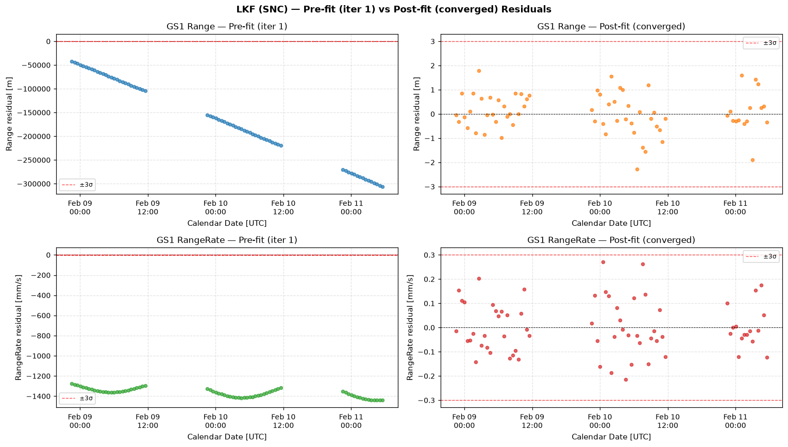
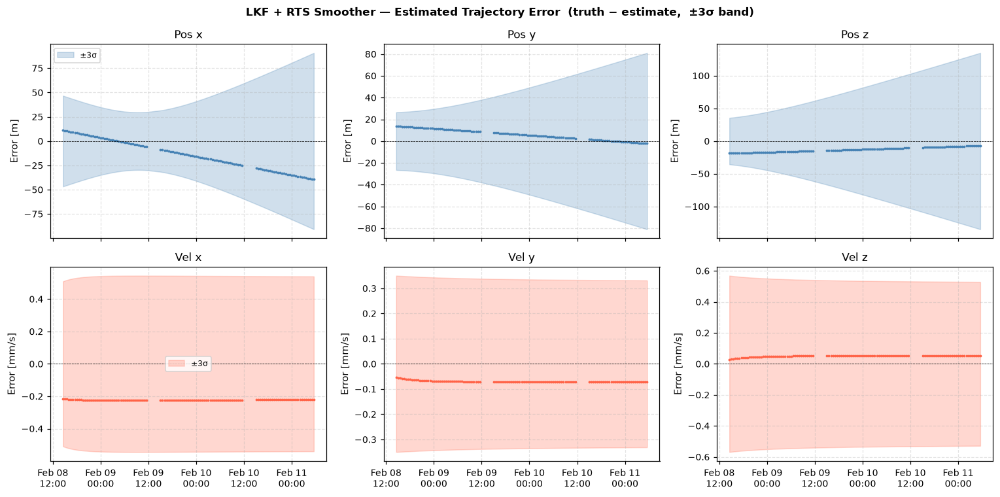
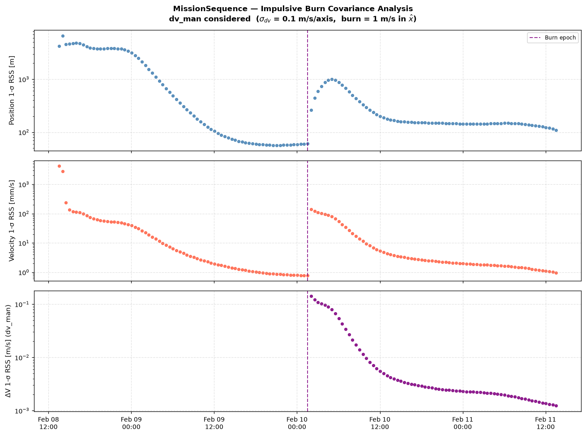
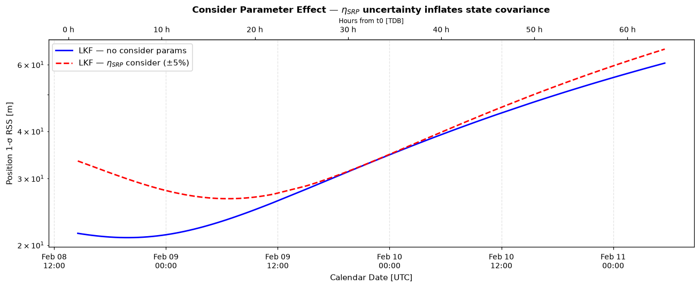

# Sequential Orbit Determination — Complete Demo#
Scarabaeus OD Framework | Last revised 2026
What this notebook covers#
Sequential orbit determination processes measurements one at a time, updating the state estimate and covariance recursively at each epoch. This is operationally efficient, naturally handles process noise, and supports real-time processing.
For the full batch-filter catalogue (LSB, SRIF-Batch, corner plots, covariance propagation, solution saving) see ``advanced_IdealMSR_BatchOD.ipynb``.
Topics#
# |
Topic |
|---|---|
1 |
True trajectory and measurements (DSS-14 + DSS-63) |
2 |
LKF with SNC process noise |
3 |
Process noise theory — SNC vs. DMC |
4 |
SRIF Sequential Filter |
5 |
RTS smoother |
6 |
Multi-leg OD with MissionSequence (two legs + impulsive burn) |
7 |
Consider parameters (η_SRP) |
8 |
Measurement editing — see BatchOD notebook |
9 |
Solution saving and analysis — see BatchOD notebook |
How to run#
Run from the project root directory (scarabaeus/).
0. Imports and Setup#
[1]:
import os, sys
import numpy as np
import numpy.random as rnd
import matplotlib.pyplot as plt
from pathlib import Path
import scarabaeus as scb
import supplementary as supp
# ── tutorial data and output paths ───────────────────────────────
data = supp.load_data()
tut_result_path = Path.cwd() / 'tutorial_results/meas_gen/radiometric'
tut_kernels_path = Path(data.mk.path).parent.parent / 'scenario'
tut_result_path.mkdir(parents=True, exist_ok=True)
tut_kernels_path.mkdir(parents=True, exist_ok=True)
kg, km, sec = scb.Units.get_units(['kg', 'km', 'sec'])
J2000, ITRF93, ECLIPJ2000, IAUEARTH = scb.Frame.generate_common_frames()
frame = J2000
origin = scb.CelestialBody.from_constants('SUN')
scb.SpiceManager.clear_kernels()
scb.SpiceManager.load_kernel_from_mkfile(data.mk.path)
print("Kernels loaded.")
# ── common spacecraft & initial state ────────────────────────────
dry_mass = scb.ArrayWUnits(1500.0, kg)
fuel_mass = scb.ArrayWUnits(500.0, kg)
area = scb.ArrayWUnits(1e-6, km**2)
cr = scb.ArrayWUnits(1.5, None)
Orbiter = scb.Spacecraft('Orbiter_True', -2000,
dry_mass+fuel_mass, area, cr)
time_0 = scb.SpiceManager.jd2et(2461809.72995654 + 1/3)
time_f = scb.SpiceManager.jd2et(2461809.72995654 + 3)
dt_step = 30 * 60
epoch_array = scb.EpochArray(np.arange(time_0, time_f, dt_step), sys='TDB')
epoch_0 = epoch_array[0]
pos_0 = scb.ArrayWFrame(
np.array([-1.1123095885148e+08, 8.9094345479316e+07, 3.8656500948069e+07]),
km, frame)
vel_0 = scb.ArrayWFrame(
np.array([-20.6936999825159, -16.7800270812616, -6.6437327193572]),
km/sec, frame)
SCB supplementary data up to date.
Kernels loaded.
Enhanced Plotting Helpers#
The cells below add calendar-date x-axis versions of the plots above, plus new visualization types: pre/post residual comparisons, state errors with ±3σ covariance bounds, covariance evolution, and corner covariance plots.
Helper functions:
et2dt(et_arr)— converts SPICE ET (seconds) to Pythondatetimeobjectsfmt_cal(ax)— appliesAutoDateLocator + DateFormatterfor a clean calendar x-axisadd_hrs_axis(ax)— adds a secondary top x-axis in hours from t0resid_from_filter(flt, ds)— extracts(t_pre, r_pre, t_post, r_post)arrayscorner_cov(P, labels)— lower-triangle corner plot with RdBu_r correlation colouring
[2]:
from datetime import datetime, timedelta
import matplotlib.dates as mdates
import matplotlib.ticker as mticker
from matplotlib import cm
from matplotlib.colors import Normalize
plt.rcParams.update({
'font.size': 10, 'axes.titlesize': 11, 'axes.labelsize': 10,
'xtick.labelsize': 9, 'ytick.labelsize': 9, 'legend.fontsize': 8,
'figure.dpi': 110, 'axes.grid': True, 'grid.alpha': 0.35, 'grid.linestyle': '--',
})
CMAP = cm.tab10
COLORS = [CMAP(i / 10) for i in range(10)]
# reference epoch for the hours-from-t0 secondary axis
t0_et = epoch_array.times.values[0]
def et2dt(et_arr):
"""Convert SPICE ET seconds (TDB from J2000) to list of datetime objects."""
_J2000 = datetime(2000, 1, 1, 12, 0, 0)
return [_J2000 + timedelta(seconds=float(t)) for t in np.atleast_1d(et_arr)]
def fmt_cal(ax):
"""Apply calendar-date tick formatting to a matplotlib axis."""
ax.xaxis.set_major_locator(mdates.AutoDateLocator(minticks=4, maxticks=9))
ax.xaxis.set_major_formatter(mdates.DateFormatter("%b %d\n%H:%M"))
def add_hrs_axis(ax, t0=None):
"""Add a secondary top x-axis showing hours from t0."""
t0 = t0 if t0 is not None else t0_et
from matplotlib.dates import date2num
t0_num = date2num(et2dt([t0])[0])
ax2 = ax.secondary_xaxis(
"top",
functions=(lambda x: (x - t0_num) * 24, lambda x: x / 24 + t0_num),
)
ax2.set_xlabel("Hours from t0 [TDB]", fontsize=8)
ax2.xaxis.set_major_formatter(mticker.FormatStrFormatter("%.0f h"))
return ax2
def resid_from_filter(flt_obj, ds_name, iteration=-1):
"""Return (t_pre, r_pre, t_post, r_post) numpy arrays for a dataset name.
iteration : int
Which iteration's pre-fit residuals to return.
0 → first iteration (raw O-C against initial reference).
-1 → last iteration (default, same as the converged solution).
Post-fit residuals always come from the final (converged) iteration.
"""
if (iteration == 0
and hasattr(flt_obj, '_solution_history')
and flt_obj._solution_history):
sol0 = flt_obj._solution_history[0]
pre = (sol0.prefits or {}).get(ds_name, [])
else:
pre = flt_obj.prefit_residuals.get(ds_name, [])
post = flt_obj.postfit_residuals.get(ds_name, [])
t_ds = np.array([])
for ds in flt_obj.measurement_data.datasets:
if ds.set_name == ds_name:
t_ds = np.array(ds.data["t2"])
break
t_pre = t_ds[:len(pre)] if len(pre) else np.array([])
r_pre = np.array([d[0] for d in pre]) if pre else np.array([])
t_post = t_ds[:len(post)] if len(post) else np.array([])
r_post = np.array([d[0] for d in post]) if post else np.array([])
return t_pre, r_pre, t_post, r_post
def corner_cov(P, labels, title="Covariance Corner Plot", figsize=(10, 9)):
"""
Corner plot from a covariance matrix.
Diagonal: 1D Gaussian marginal (dark-shaded ±1σ region).
Lower triangle: 2D confidence ellipses at 1σ / 2σ / 3σ (chi2, 2 dof).
Upper triangle: hidden.
"""
from matplotlib.patches import Ellipse
SCALES = [1.5150, 2.4477, 3.4395]
ALPHAS = [0.55, 0.30, 0.15 ]
COL, EDG = 'steelblue', 'navy'
n = P.shape[0]
sig = np.sqrt(np.diag(P))
fig, axes = plt.subplots(n, n, figsize=figsize,
gridspec_kw={'hspace': 0.05, 'wspace': 0.05})
if n == 1:
axes = np.array([[axes]])
fig.suptitle(title, fontsize=11, fontweight='bold')
for i in range(n):
for j in range(n):
ax = axes[i, j]
ax.tick_params(labelsize=5)
if i == j:
s = sig[i]
lim = 3.8 * s
x = np.linspace(-lim, lim, 300)
y = np.exp(-0.5 * (x / s) ** 2)
ax.plot(x, y, color=COL, lw=1.5)
ax.fill_between(x, y, alpha=0.18, color=COL)
ax.fill_between(x[np.abs(x) <= s], y[np.abs(x) <= s],
alpha=0.45, color=COL)
ax.axvline(0, color='k', lw=0.5, ls='--')
ax.set_xlim(-lim, lim)
ax.set_ylim(0, 1.30)
ax.set_yticks([])
ax.set_xticks([-2*s, 0, 2*s])
ax.text(0.97, 0.97, f'1\u03c3={s:.2e}',
transform=ax.transAxes, fontsize=6,
ha='right', va='top', color=EDG, fontweight='bold')
ax.set_title(labels[i], fontsize=7, pad=2)
if i < n - 1:
ax.set_xticklabels([])
elif i > j:
P2 = np.array([[P[j,j], P[j,i]], [P[i,j], P[i,i]]])
ev, evec = np.linalg.eigh(P2)
ev = np.maximum(ev, 0.0)
angle = np.degrees(np.arctan2(evec[1, 1], evec[0, 1]))
ax.axhline(0, color='k', lw=0.4, ls='--', alpha=0.4)
ax.axvline(0, color='k', lw=0.4, ls='--', alpha=0.4)
for scale, alpha in zip(SCALES, ALPHAS):
ax.add_patch(Ellipse(
xy=(0, 0),
width =2 * scale * np.sqrt(ev[1]),
height=2 * scale * np.sqrt(ev[0]),
angle =angle,
facecolor=COL, edgecolor=EDG,
linewidth=0.8, alpha=alpha,
))
rho = P[i, j] / (sig[i] * sig[j])
ax.text(0.05, 0.97, f'\u03c1={rho:+.2f}',
transform=ax.transAxes, fontsize=6.5,
color=EDG, va='top', fontweight='bold')
ax.set_xlim(-3.8*sig[j], 3.8*sig[j])
ax.set_ylim(-3.8*sig[i], 3.8*sig[i])
ax.set_xticks([-2*sig[j], 0, 2*sig[j]])
ax.set_yticks([-2*sig[i], 0, 2*sig[i]])
if i < n - 1:
ax.set_xticklabels([])
if j > 0:
ax.set_yticklabels([])
if j == 0:
ax.set_ylabel(labels[i], fontsize=7, labelpad=2)
if i == n - 1:
ax.set_xlabel(labels[j], fontsize=7, labelpad=2)
else:
ax.set_visible(False)
plt.tight_layout()
return fig
print(f"Plotting helpers ready. t0 = {et2dt([t0_et])[0].strftime('%Y-%m-%d %H:%M:%S')} TDB")
Plotting helpers ready. t0 = 2028-02-08 13:32:17 TDB
1. True Trajectory and Measurements#
We propagate the truth and generate Range + RangeRate measurements on it (DSS-14). These are the “observed” measurements the filter will try to explain.
The measurement generation is identical to the Batch notebook — see that notebook for the full measurement-model catalogue (Doppler, DDOR, optical navigation).
[3]:
# ── propagate truth ──────────────────────────────────────────────
third_bodies = scb.CelestialBody.from_constants(['MERCURY', 'VENUS', 'EARTH'])
state_truth = scb.StateDefinition.from_components([
('position', 3, 'estimated', 'dynamic', Orbiter, pos_0),
('velocity', 3, 'estimated', 'dynamic', Orbiter, vel_0),
])
sv_truth = scb.StateArray(epoch=epoch_0, origin=origin, state=state_truth)
fm_truth = scb.ForceModelTranslation(primary_body=Orbiter,
third_bodies=third_bodies, cannonball_SRP=True)
prop_truth = scb.Propagator(primary_body=Orbiter, state_vector=sv_truth,
tspan=epoch_array, force_models=fm_truth)
prop_truth.propagate()
state_prop_truth = prop_truth.propagated_state_array
true_spk = str(tut_kernels_path / 'seq_orbiter_true.bsp')
if os.path.isfile(true_spk): os.remove(true_spk)
orbiter_traj_true = scb.Trajectory(state_array=state_prop_truth)
orbiter_traj_true.write_to_spk(true_spk)
print("True trajectory saved.")
# ── ground stations ───────────────────────────────────────────────
GS1 = scb.GroundStation('DSS-14')
GS2 = scb.GroundStation('DSS-63')
range_sigma = scb.ArrayWUnits(1e-3, km)
rr_sigma = scb.ArrayWUnits(1e-7, km/sec)
rangerate_sigma = rr_sigma
Range_GS1 = scb.RangeIdeal('GS1 Range', GS1, sigma=range_sigma)
RangeRate_GS1 = scb.RangeRateIdeal('GS1 RRate', GS1, sigma=rr_sigma)
Range_GS2 = scb.RangeIdeal('GS2 Range', GS2, sigma=range_sigma)
RangeRate_GS2 = scb.RangeRateIdeal('GS2 RRate', GS2, sigma=rr_sigma)
for model, stem in [
(Range_GS1, 'seq_range_GS1'),
(RangeRate_GS1, 'seq_rr_GS1'),
(Range_GS2, 'seq_range_GS2'),
(RangeRate_GS2, 'seq_rr_GS2'),
]:
model.write_observed_measurements(
target=Orbiter, epoch_array=epoch_array, noisy=True,
file_name=stem, check_visibility=True, elevation_mask=10.0,
folder_path_override=str(tut_result_path))
obs_range = Range_GS1.observed_measurements(
file_name=str(tut_result_path / 'seq_range_GS1.json'),
meas_name='meas_ideal', units=km)
obs_rr = RangeRate_GS1.observed_measurements(
file_name=str(tut_result_path / 'seq_rr_GS1.json'),
meas_name='meas_ideal', units=km/sec)
obs_range_GS2 = Range_GS2.observed_measurements(
file_name=str(tut_result_path / 'seq_range_GS2.json'),
meas_name='meas_ideal', units=km)
obs_rr_GS2 = RangeRate_GS2.observed_measurements(
file_name=str(tut_result_path / 'seq_rr_GS2.json'),
meas_name='meas_ideal', units=km/sec)
print(f"GS1 Range: {len(obs_range[2].quantity.values)} meas")
print(f"GS1 RRate: {len(obs_rr[2].quantity.values)} meas")
print(f"GS2 Range: {len(obs_range_GS2[2].quantity.values)} meas")
print(f"GS2 RRate: {len(obs_rr_GS2[2].quantity.values)} meas")
================================================================================
Starting propagation...
================================================================================
Integrating: 100%|█████████████████████████████████████████████| 230400.00/230400.00 s [00:00<00:00]
=================== DOP853 integration complete. ==================
Propagation complete.
True trajectory saved.
GS1 Range: 69 meas
GS1 RRate: 69 meas
GS2 Range: 82 meas
GS2 RRate: 82 meas
2. LKF with SNC Process Noise#
Theory#
The Linearized Kalman Filter (LKF) is the core sequential estimator. At each measurement epoch \(t_k\):
Time update (predict): propagate state and covariance forward with the STM
\[\mathbf{P}_{k|k-1} = \mathbf{\Phi}_{k,k-1}\,\mathbf{P}_{k-1|k-1}\,\mathbf{\Phi}_{k,k-1}^T + \mathbf{Q}_k\]Measurement update (correct): incorporate new measurement \(y_k\)
\[\mathbf{K}_k = \mathbf{P}_{k|k-1}\,\mathbf{H}_k^T\,(\mathbf{H}_k\mathbf{P}_{k|k-1}\mathbf{H}_k^T + \mathbf{R}_k)^{-1}\]\[\hat{\mathbf{x}}_{k|k} = \hat{\mathbf{x}}_{k|k-1} + \mathbf{K}_k(y_k - \mathbf{H}_k\hat{\mathbf{x}}_{k|k-1})\]
State Noise Compensation (SNC)#
SNC models uncharacterised accelerations as white noise added continuously to the velocity:
where \(q_c\) [km²/s³] is the continuous-time noise spectral density.
Tuning Q_cont (SNC):
Too large → wide covariance, accepts noise, position sigma grows fast.
Too small → filter stiffens, can’t track maneuvers or unmodelled forces.
Rule of thumb: \(q_c \approx (\text{expected unmodelled accel})^2 / \text{arc length in sec}\)
Q_cont = scb.ProcessNoiseSettings(type='SNC', Q_cont=Q_cont_matrix)
[4]:
# ── reference spacecraft (perturbed IC) ──────────────────────────
delta_pos_km = np.array([1.0, 1.0, 1.0]) # 1 km error per axis
delta_vel_kms = np.array([1e-3, 1e-3, 1e-3]) # 1 m/s error per axis
def make_ref_sc(name, spice_id, d_pos, d_vel):
sc = scb.Spacecraft(name, spice_id, dry_mass+fuel_mass, area, cr)
pos = scb.ArrayWFrame(pos_0.quantity + scb.ArrayWUnits(d_pos, km), frame)
vel = scb.ArrayWFrame(vel_0.quantity + scb.ArrayWUnits(d_vel, km/sec), frame)
return sc, pos, vel
sc_lkf, pos_lkf, vel_lkf = make_ref_sc('Orbiter_LKF', -2001,
delta_pos_km, delta_vel_kms)
state_lkf = scb.StateDefinition.from_components([
('position', 3, 'estimated', 'dynamic', sc_lkf, pos_lkf),
('velocity', 3, 'estimated', 'dynamic', sc_lkf, vel_lkf),
])
sv_lkf = scb.StateArray(epoch=epoch_0, origin=origin, state=state_lkf)
fm_lkf = scb.ForceModelTranslation(
primary_body=sc_lkf, third_bodies=third_bodies, cannonball_SRP=True)
prop_lkf = scb.Propagator(
primary_body=sc_lkf, state_vector=sv_lkf,
tspan=epoch_array, force_models=fm_lkf)
# ── initial covariance ────────────────────────────────────────────
pos_sig = scb.ArrayWUnits(3.0, km)
vel_sig = scb.ArrayWUnits(3e-3, km/sec)
P0 = scb.CovarianceMatrix(
[pos_sig]*3 + [vel_sig]*3, epoch_array[1], from_list=True)
# ── SNC process noise ─────────────────────────────────────────────
Q_diag = scb.ArrayWUnits(1e-9**2, km**2 * sec**-4)
Q_cont = scb.CovarianceMatrix([Q_diag]*3, epoch_array[0], from_list=True)
pn_snc = scb.ProcessNoiseSettings(type='SNC', Q_cont=Q_cont)
# ── measurement list ──────────────────────────────────────────────
meas_lkf = scb.MeasurementSpec.many(
scb.MeasurementSpec(model=Range_GS1, observed_meas=obs_range,
dataset_name='GS1 Range'),
scb.MeasurementSpec(model=RangeRate_GS1, observed_meas=obs_rr,
dataset_name='GS1 RangeRate'),
scb.MeasurementSpec(model=Range_GS2, observed_meas=obs_range_GS2,
dataset_name='GS2 Range'),
scb.MeasurementSpec(model=RangeRate_GS2, observed_meas=obs_rr_GS2,
dataset_name='GS2 RangeRate'),
)
# ── LKF ──────────────────────────────────────────────────────────
ref_spk_lkf = tut_kernels_path / 'seq_orbiter_ref_lkf.bsp'
if ref_spk_lkf.exists(): ref_spk_lkf.unlink()
lkf = scb.LKF(
propagator = prop_lkf,
settings = scb.FilterSettings(
initial_covariance = P0,
process_noise = pn_snc,
output = scb.OutputSettings(metadata={'filter':'LKF-SNC'}),
),
measurements = meas_lkf,
traj_name = 'seq_orbiter_ref_lkf.bsp',
traj_dir = str(tut_kernels_path),
)
print("Running LKF with SNC ...")
sol_lkf, ni_lkf, conv_lkf = lkf.fit(
max_iterations = 10,
convergence_threshold = 1e-6,
verbose = True,
traj_name = 'seq_orbiter_ref_lkf.bsp',
traj_dir = str(tut_kernels_path),
if_sequential_smooth = False,
)
print(f"Converged: {conv_lkf} after {ni_lkf} iterations")
================================================================================
Starting propagation...
================================================================================
Integrating: 100%|█████████████████████████████████████████████| 230400.00/230400.00 s [00:00<00:00]
=================== DOP853 integration complete. ==================
Propagation complete.
================================================================================
Generating computed measurements for the dataset "GS1 Range"
================================================================================
================================================================================
Generating _partials for the dataset "GS1 Range"
================================================================================
Generating _partials computed measurements...
Partials: 100%|████████████████████████████████████████████████████████████| 69/69 obs [00:00<00:00]
================================================================================
Generating computed measurements for the dataset "GS1 RangeRate"
================================================================================
================================================================================
Generating _partials for the dataset "GS1 RangeRate"
================================================================================
Generating _partials computed measurements...
Partials: 100%|████████████████████████████████████████████████████████████| 69/69 obs [00:00<00:00]
================================================================================
Generating computed measurements for the dataset "GS2 Range"
================================================================================
================================================================================
Generating _partials for the dataset "GS2 Range"
================================================================================
Generating _partials computed measurements...
Partials: 100%|████████████████████████████████████████████████████████████| 82/82 obs [00:00<00:00]
================================================================================
Generating computed measurements for the dataset "GS2 RangeRate"
================================================================================
================================================================================
Generating _partials for the dataset "GS2 RangeRate"
================================================================================
Generating _partials computed measurements...
Partials: 100%|████████████████████████████████████████████████████████████| 82/82 obs [00:00<00:00]
================================================================================
Initializing Linearized Kalman Filter (LKF)
================================================================================
Process Noise Model: SNC
================================================================================
Running LKF with SNC ...
================================================================================
STARTING ITERATIVE ORBIT DETERMINATION
================================================================================
Max iterations: 10
Convergence criterion: any
RMS deviation threshold: 1.00e-06
Relative cost threshold: 1.00e-03
================================================================================
============================================================
ITERATION 1
============================================================
[886905137.43 TDB | 0.0%] ‖prefit‖ = 5.8515e+00 ‖postfit‖ = 1.4442e-07 ‖update‖ = 5.8519e+00 tr(P) = 2.5111e+02 √tr(S) = 1.1214e+01 ⟨std⟩ = 5.00e-04
[886906937.43 TDB | 0.8%] ‖prefit‖ = 8.1279e+00 ‖postfit‖ = 5.8629e-04 ‖update‖ = 5.4311e+00 tr(P) = 2.8876e+02 √tr(S) = 8.4645e-03 ⟨std⟩ = 5.00e-04
[886908737.43 TDB | 1.6%] ‖prefit‖ = 1.0407e+01 ‖postfit‖ = 3.1211e-05 ‖update‖ = 2.9298e+00 tr(P) = 6.7219e+01 √tr(S) = 1.7523e-03 ⟨std⟩ = 5.00e-04
[886910537.43 TDB | 2.4%] ‖prefit‖ = 1.2689e+01 ‖postfit‖ = 4.4796e-04 ‖update‖ = 4.6687e+00 tr(P) = 7.5803e+01 √tr(S) = 1.2295e-03 ⟨std⟩ = 5.00e-04
[886912337.43 TDB | 3.2%] ‖prefit‖ = 1.4978e+01 ‖postfit‖ = 8.1074e-04 ‖update‖ = 1.5535e+00 tr(P) = 6.8072e+01 √tr(S) = 1.1792e-03 ⟨std⟩ = 5.00e-04
[886914137.43 TDB | 4.0%] ‖prefit‖ = 1.7275e+01 ‖postfit‖ = 7.0028e-04 ‖update‖ = 1.9665e+00 tr(P) = 4.3870e+01 √tr(S) = 1.1593e-03 ⟨std⟩ = 5.00e-04
[886915937.43 TDB | 4.8%] ‖prefit‖ = 1.9582e+01 ‖postfit‖ = 1.2478e-03 ‖update‖ = 1.6816e+00 tr(P) = 2.6079e+01 √tr(S) = 1.1454e-03 ⟨std⟩ = 5.00e-04
[886917737.43 TDB | 5.6%] ‖prefit‖ = 2.1898e+01 ‖postfit‖ = 8.9744e-04 ‖update‖ = 2.2425e+00 tr(P) = 1.7249e+01 √tr(S) = 1.1339e-03 ⟨std⟩ = 5.00e-04
[886919537.43 TDB | 6.3%] ‖prefit‖ = 2.4228e+01 ‖postfit‖ = 4.4062e-04 ‖update‖ = 3.3406e+00 tr(P) = 1.3020e+01 √tr(S) = 1.1256e-03 ⟨std⟩ = 5.00e-04
[886921337.43 TDB | 7.1%] ‖prefit‖ = 2.6569e+01 ‖postfit‖ = 3.9609e-04 ‖update‖ = 1.0919e+00 tr(P) = 1.0836e+01 √tr(S) = 1.1198e-03 ⟨std⟩ = 5.00e-04
[886923137.43 TDB | 7.9%] ‖prefit‖ = 2.8922e+01 ‖postfit‖ = 2.7452e-04 ‖update‖ = 1.3412e-01 tr(P) = 9.5750e+00 √tr(S) = 1.1157e-03 ⟨std⟩ = 5.00e-04
[886924937.43 TDB | 8.7%] ‖prefit‖ = 3.1285e+01 ‖postfit‖ = 8.9769e-04 ‖update‖ = 1.7173e+00 tr(P) = 8.7512e+00 √tr(S) = 1.1128e-03 ⟨std⟩ = 5.00e-04
[886926737.43 TDB | 9.5%] ‖prefit‖ = 3.3656e+01 ‖postfit‖ = 1.7765e-04 ‖update‖ = 6.7290e-01 tr(P) = 8.1405e+00 √tr(S) = 1.1107e-03 ⟨std⟩ = 5.00e-04
[886928537.43 TDB | 10.3%] ‖prefit‖ = 3.6034e+01 ‖postfit‖ = 7.7002e-05 ‖update‖ = 5.8978e-01 tr(P) = 7.6324e+00 √tr(S) = 1.1091e-03 ⟨std⟩ = 5.00e-04
[886930337.43 TDB | 11.1%] ‖prefit‖ = 3.8420e+01 ‖postfit‖ = 1.0202e-03 ‖update‖ = 1.1855e+00 tr(P) = 7.1680e+00 √tr(S) = 1.1078e-03 ⟨std⟩ = 5.00e-04
[886932137.43 TDB | 11.9%] ‖prefit‖ = 4.0810e+01 ‖postfit‖ = 7.2503e-04 ‖update‖ = 4.5519e-01 tr(P) = 6.7139e+00 √tr(S) = 1.1069e-03 ⟨std⟩ = 5.00e-04
[886933937.43 TDB | 12.7%] ‖prefit‖ = 6.0449e+01 ‖postfit‖ = 1.4050e-03 ‖update‖ = 3.4155e-01 tr(P) = 7.0510e-03 √tr(S) = 3.8987e-02 ⟨std⟩ = 5.00e-04
[886935737.43 TDB | 13.5%] ‖prefit‖ = 6.3772e+01 ‖postfit‖ = 1.3000e-03 ‖update‖ = 6.3314e-02 tr(P) = 4.2795e-03 √tr(S) = 1.7956e-03 ⟨std⟩ = 5.00e-04
[886937537.43 TDB | 14.3%] ‖prefit‖ = 6.7102e+01 ‖postfit‖ = 1.2770e-03 ‖update‖ = 3.0826e-02 tr(P) = 3.3561e-03 √tr(S) = 1.6515e-03 ⟨std⟩ = 5.00e-04
[886939337.43 TDB | 15.1%] ‖prefit‖ = 7.0439e+01 ‖postfit‖ = 4.3760e-04 ‖update‖ = 3.0800e-02 tr(P) = 2.9045e-03 √tr(S) = 1.6007e-03 ⟨std⟩ = 5.00e-04
[886941137.43 TDB | 15.9%] ‖prefit‖ = 7.3785e+01 ‖postfit‖ = 1.0924e-03 ‖update‖ = 3.0172e-02 tr(P) = 2.6456e-03 √tr(S) = 1.5745e-03 ⟨std⟩ = 5.00e-04
[886942937.43 TDB | 16.7%] ‖prefit‖ = 7.7139e+01 ‖postfit‖ = 1.1730e-03 ‖update‖ = 2.3631e-02 tr(P) = 2.4847e-03 √tr(S) = 1.5582e-03 ⟨std⟩ = 5.00e-04
[886944737.43 TDB | 17.5%] ‖prefit‖ = 8.0495e+01 ‖postfit‖ = 7.5551e-04 ‖update‖ = 4.2988e-03 tr(P) = 2.3805e-03 √tr(S) = 1.5467e-03 ⟨std⟩ = 5.00e-04
[886946537.43 TDB | 18.3%] ‖prefit‖ = 8.3858e+01 ‖postfit‖ = 6.8350e-04 ‖update‖ = 5.3195e-03 tr(P) = 2.3116e-03 √tr(S) = 1.5377e-03 ⟨std⟩ = 5.00e-04
[886948337.43 TDB | 19.0%] ‖prefit‖ = 8.7222e+01 ‖postfit‖ = 6.1952e-04 ‖update‖ = 9.4801e-03 tr(P) = 2.2656e-03 √tr(S) = 1.5302e-03 ⟨std⟩ = 5.00e-04
[886950137.43 TDB | 19.8%] ‖prefit‖ = 9.0585e+01 ‖postfit‖ = 1.9788e-03 ‖update‖ = 2.5546e-02 tr(P) = 2.2342e-03 √tr(S) = 1.5237e-03 ⟨std⟩ = 5.00e-04
[886951937.43 TDB | 20.6%] ‖prefit‖ = 9.3949e+01 ‖postfit‖ = 1.4190e-03 ‖update‖ = 1.2522e-02 tr(P) = 2.2112e-03 √tr(S) = 1.5178e-03 ⟨std⟩ = 5.00e-04
[886953737.43 TDB | 21.4%] ‖prefit‖ = 9.7309e+01 ‖postfit‖ = 5.0222e-04 ‖update‖ = 1.1940e-02 tr(P) = 2.1915e-03 √tr(S) = 1.5125e-03 ⟨std⟩ = 5.00e-04
[886955537.43 TDB | 22.2%] ‖prefit‖ = 7.0856e+01 ‖postfit‖ = 4.9904e-04 ‖update‖ = 3.3738e-03 tr(P) = 2.2719e-03 √tr(S) = 1.0571e-03 ⟨std⟩ = 5.00e-04
[886957337.43 TDB | 23.0%] ‖prefit‖ = 7.3303e+01 ‖postfit‖ = 1.2844e-04 ‖update‖ = 3.7337e-03 tr(P) = 2.3711e-03 √tr(S) = 1.0564e-03 ⟨std⟩ = 5.00e-04
[886959137.43 TDB | 23.8%] ‖prefit‖ = 7.5752e+01 ‖postfit‖ = 5.0149e-04 ‖update‖ = 5.5499e-03 tr(P) = 2.4874e-03 √tr(S) = 1.0566e-03 ⟨std⟩ = 5.00e-04
[886960937.43 TDB | 24.6%] ‖prefit‖ = 7.8202e+01 ‖postfit‖ = 1.3885e-03 ‖update‖ = 3.9634e-03 tr(P) = 2.6189e-03 √tr(S) = 1.0575e-03 ⟨std⟩ = 5.00e-04
[886962737.43 TDB | 25.4%] ‖prefit‖ = 8.0645e+01 ‖postfit‖ = 1.7950e-03 ‖update‖ = 1.2154e-02 tr(P) = 2.7638e-03 √tr(S) = 1.0589e-03 ⟨std⟩ = 5.00e-04
[886964537.43 TDB | 26.2%] ‖prefit‖ = 8.3090e+01 ‖postfit‖ = 1.1068e-03 ‖update‖ = 7.1167e-03 tr(P) = 2.9198e-03 √tr(S) = 1.0606e-03 ⟨std⟩ = 5.00e-04
[886966337.43 TDB | 27.0%] ‖prefit‖ = 8.5524e+01 ‖postfit‖ = 3.5336e-04 ‖update‖ = 4.4302e-03 tr(P) = 3.0843e-03 √tr(S) = 1.0624e-03 ⟨std⟩ = 5.00e-04
[886968137.43 TDB | 27.8%] ‖prefit‖ = 8.7949e+01 ‖postfit‖ = 1.1526e-03 ‖update‖ = 1.8540e-03 tr(P) = 3.2538e-03 √tr(S) = 1.0642e-03 ⟨std⟩ = 5.00e-04
[886969937.43 TDB | 28.6%] ‖prefit‖ = 9.0368e+01 ‖postfit‖ = 9.1673e-04 ‖update‖ = 3.1278e-03 tr(P) = 3.4234e-03 √tr(S) = 1.0657e-03 ⟨std⟩ = 5.00e-04
[886971737.43 TDB | 29.4%] ‖prefit‖ = 9.2772e+01 ‖postfit‖ = 1.3588e-04 ‖update‖ = 6.1033e-03 tr(P) = 3.5866e-03 √tr(S) = 1.0670e-03 ⟨std⟩ = 5.00e-04
[886973537.43 TDB | 30.2%] ‖prefit‖ = 9.5167e+01 ‖postfit‖ = 1.8159e-03 ‖update‖ = 2.0509e-02 tr(P) = 3.7346e-03 √tr(S) = 1.0680e-03 ⟨std⟩ = 5.00e-04
[886975337.43 TDB | 31.0%] ‖prefit‖ = 9.7542e+01 ‖postfit‖ = 1.4259e-03 ‖update‖ = 1.2544e-02 tr(P) = 3.8572e-03 √tr(S) = 1.0689e-03 ⟨std⟩ = 5.00e-04
[886977137.43 TDB | 31.7%] ‖prefit‖ = 9.9908e+01 ‖postfit‖ = 5.1042e-04 ‖update‖ = 1.5259e-02 tr(P) = 3.9438e-03 √tr(S) = 1.0696e-03 ⟨std⟩ = 5.00e-04
[886978937.43 TDB | 32.5%] ‖prefit‖ = 1.0226e+02 ‖postfit‖ = 1.5455e-04 ‖update‖ = 9.4980e-03 tr(P) = 3.9859e-03 √tr(S) = 1.0705e-03 ⟨std⟩ = 5.00e-04
[886980737.43 TDB | 33.3%] ‖prefit‖ = 1.0459e+02 ‖postfit‖ = 1.8908e-04 ‖update‖ = 5.8968e-03 tr(P) = 3.9789e-03 √tr(S) = 1.0715e-03 ⟨std⟩ = 5.00e-04
[886993337.43 TDB | 38.9%] ‖prefit‖ = 1.1927e+02 ‖postfit‖ = 6.2219e-04 ‖update‖ = 6.1385e-02 tr(P) = 3.2737e-03 √tr(S) = 1.7146e-03 ⟨std⟩ = 5.00e-04
[886995137.43 TDB | 39.7%] ‖prefit‖ = 1.2165e+02 ‖postfit‖ = 7.3203e-05 ‖update‖ = 2.0922e-03 tr(P) = 2.8690e-03 √tr(S) = 1.2982e-03 ⟨std⟩ = 5.00e-04
[886996937.43 TDB | 40.5%] ‖prefit‖ = 1.2404e+02 ‖postfit‖ = 7.4798e-04 ‖update‖ = 1.3079e-02 tr(P) = 2.7285e-03 √tr(S) = 1.1930e-03 ⟨std⟩ = 5.00e-04
[886998737.43 TDB | 41.3%] ‖prefit‖ = 1.2646e+02 ‖postfit‖ = 3.3122e-04 ‖update‖ = 4.0072e-03 tr(P) = 2.6808e-03 √tr(S) = 1.1439e-03 ⟨std⟩ = 5.00e-04
[887000537.43 TDB | 42.1%] ‖prefit‖ = 1.2889e+02 ‖postfit‖ = 3.9198e-04 ‖update‖ = 3.6643e-03 tr(P) = 2.6782e-03 √tr(S) = 1.1153e-03 ⟨std⟩ = 5.00e-04
[887002337.43 TDB | 42.9%] ‖prefit‖ = 1.3133e+02 ‖postfit‖ = 5.9046e-04 ‖update‖ = 7.8831e-03 tr(P) = 2.7015e-03 √tr(S) = 1.0965e-03 ⟨std⟩ = 5.00e-04
[887004137.43 TDB | 43.7%] ‖prefit‖ = 1.3379e+02 ‖postfit‖ = 3.5267e-04 ‖update‖ = 2.9396e-03 tr(P) = 2.7413e-03 √tr(S) = 1.0834e-03 ⟨std⟩ = 5.00e-04
[887005937.43 TDB | 44.4%] ‖prefit‖ = 1.3627e+02 ‖postfit‖ = 2.9676e-04 ‖update‖ = 5.8375e-03 tr(P) = 2.7917e-03 √tr(S) = 1.0740e-03 ⟨std⟩ = 5.00e-04
[887007737.43 TDB | 45.2%] ‖prefit‖ = 1.3876e+02 ‖postfit‖ = 5.1797e-04 ‖update‖ = 3.3457e-03 tr(P) = 2.8486e-03 √tr(S) = 1.0671e-03 ⟨std⟩ = 5.00e-04
[887009537.43 TDB | 46.0%] ‖prefit‖ = 1.4125e+02 ‖postfit‖ = 4.0949e-04 ‖update‖ = 3.9363e-03 tr(P) = 2.9089e-03 √tr(S) = 1.0622e-03 ⟨std⟩ = 5.00e-04
[887011337.43 TDB | 46.8%] ‖prefit‖ = 1.4376e+02 ‖postfit‖ = 5.0649e-06 ‖update‖ = 3.4048e-03 tr(P) = 2.9700e-03 √tr(S) = 1.0589e-03 ⟨std⟩ = 5.00e-04
[887013137.43 TDB | 47.6%] ‖prefit‖ = 1.4627e+02 ‖postfit‖ = 1.8217e-03 ‖update‖ = 3.3146e-03 tr(P) = 3.0301e-03 √tr(S) = 1.0567e-03 ⟨std⟩ = 5.00e-04
[887014937.43 TDB | 48.4%] ‖prefit‖ = 1.4879e+02 ‖postfit‖ = 9.4982e-04 ‖update‖ = 2.2385e-03 tr(P) = 3.0874e-03 √tr(S) = 1.0555e-03 ⟨std⟩ = 5.00e-04
[887016737.43 TDB | 49.2%] ‖prefit‖ = 1.5130e+02 ‖postfit‖ = 8.7871e-05 ‖update‖ = 4.3369e-03 tr(P) = 3.1412e-03 √tr(S) = 1.0551e-03 ⟨std⟩ = 5.00e-04
[887018537.43 TDB | 50.0%] ‖prefit‖ = 1.5382e+02 ‖postfit‖ = 1.1884e-03 ‖update‖ = 8.1512e-03 tr(P) = 3.1908e-03 √tr(S) = 1.0552e-03 ⟨std⟩ = 5.00e-04
[887020337.43 TDB | 50.8%] ‖prefit‖ = 2.2005e+02 ‖postfit‖ = 4.1631e-04 ‖update‖ = 1.2211e-02 tr(P) = 3.1128e-03 √tr(S) = 1.5129e-03 ⟨std⟩ = 5.00e-04
[887022137.43 TDB | 51.6%] ‖prefit‖ = 2.2351e+02 ‖postfit‖ = 2.8065e-03 ‖update‖ = 2.3391e-02 tr(P) = 3.0498e-03 √tr(S) = 1.5035e-03 ⟨std⟩ = 5.00e-04
[887023937.43 TDB | 52.4%] ‖prefit‖ = 2.2699e+02 ‖postfit‖ = 1.1323e-03 ‖update‖ = 1.4334e-02 tr(P) = 2.9960e-03 √tr(S) = 1.4971e-03 ⟨std⟩ = 5.00e-04
[887025737.43 TDB | 53.2%] ‖prefit‖ = 2.3048e+02 ‖postfit‖ = 2.8990e-03 ‖update‖ = 1.2185e-03 tr(P) = 2.9485e-03 √tr(S) = 1.4923e-03 ⟨std⟩ = 5.00e-04
[887027537.43 TDB | 54.0%] ‖prefit‖ = 2.3397e+02 ‖postfit‖ = 1.6087e-03 ‖update‖ = 1.0858e-02 tr(P) = 2.9055e-03 √tr(S) = 1.4885e-03 ⟨std⟩ = 5.00e-04
[887029337.43 TDB | 54.8%] ‖prefit‖ = 2.3746e+02 ‖postfit‖ = 1.3663e-03 ‖update‖ = 1.0618e-02 tr(P) = 2.8659e-03 √tr(S) = 1.4853e-03 ⟨std⟩ = 5.00e-04
[887031137.43 TDB | 55.6%] ‖prefit‖ = 2.4096e+02 ‖postfit‖ = 1.6029e-03 ‖update‖ = 1.9895e-02 tr(P) = 2.8289e-03 √tr(S) = 1.4823e-03 ⟨std⟩ = 5.00e-04
[887032937.43 TDB | 56.3%] ‖prefit‖ = 2.4445e+02 ‖postfit‖ = 2.4009e-03 ‖update‖ = 1.9511e-02 tr(P) = 2.7939e-03 √tr(S) = 1.4794e-03 ⟨std⟩ = 5.00e-04
[887034737.43 TDB | 57.1%] ‖prefit‖ = 2.4794e+02 ‖postfit‖ = 2.0971e-03 ‖update‖ = 1.1268e-02 tr(P) = 2.7603e-03 √tr(S) = 1.4766e-03 ⟨std⟩ = 5.00e-04
[887036537.43 TDB | 57.9%] ‖prefit‖ = 2.5143e+02 ‖postfit‖ = 1.2601e-03 ‖update‖ = 1.1365e-02 tr(P) = 2.7278e-03 √tr(S) = 1.4739e-03 ⟨std⟩ = 5.00e-04
[887038337.43 TDB | 58.7%] ‖prefit‖ = 2.5491e+02 ‖postfit‖ = 2.7982e-04 ‖update‖ = 4.3910e-03 tr(P) = 2.6959e-03 √tr(S) = 1.4713e-03 ⟨std⟩ = 5.00e-04
[887040137.43 TDB | 59.5%] ‖prefit‖ = 2.5838e+02 ‖postfit‖ = 1.0013e-03 ‖update‖ = 7.9644e-03 tr(P) = 2.6644e-03 √tr(S) = 1.4689e-03 ⟨std⟩ = 5.00e-04
[887041937.43 TDB | 60.3%] ‖prefit‖ = 1.8472e+02 ‖postfit‖ = 2.2730e-04 ‖update‖ = 2.8121e-03 tr(P) = 2.7117e-03 √tr(S) = 1.0273e-03 ⟨std⟩ = 5.00e-04
[887043737.43 TDB | 61.1%] ‖prefit‖ = 1.8727e+02 ‖postfit‖ = 1.0080e-03 ‖update‖ = 5.4784e-03 tr(P) = 2.7609e-03 √tr(S) = 1.0267e-03 ⟨std⟩ = 5.00e-04
[887045537.43 TDB | 61.9%] ‖prefit‖ = 1.8982e+02 ‖postfit‖ = 9.6502e-04 ‖update‖ = 2.4778e-03 tr(P) = 2.8114e-03 √tr(S) = 1.0266e-03 ⟨std⟩ = 5.00e-04
[887047337.43 TDB | 62.7%] ‖prefit‖ = 1.9236e+02 ‖postfit‖ = 1.0022e-03 ‖update‖ = 2.5440e-03 tr(P) = 2.8624e-03 √tr(S) = 1.0268e-03 ⟨std⟩ = 5.00e-04
[887049137.43 TDB | 63.5%] ‖prefit‖ = 1.9490e+02 ‖postfit‖ = 1.7077e-03 ‖update‖ = 5.3817e-03 tr(P) = 2.9132e-03 √tr(S) = 1.0273e-03 ⟨std⟩ = 5.00e-04
[887050937.43 TDB | 64.3%] ‖prefit‖ = 1.9742e+02 ‖postfit‖ = 3.1356e-04 ‖update‖ = 1.1587e-03 tr(P) = 2.9629e-03 √tr(S) = 1.0281e-03 ⟨std⟩ = 5.00e-04
[887052737.43 TDB | 65.1%] ‖prefit‖ = 1.9994e+02 ‖postfit‖ = 1.5459e-03 ‖update‖ = 4.6046e-03 tr(P) = 3.0108e-03 √tr(S) = 1.0290e-03 ⟨std⟩ = 5.00e-04
[887054537.43 TDB | 65.9%] ‖prefit‖ = 2.0244e+02 ‖postfit‖ = 4.7743e-06 ‖update‖ = 4.9397e-03 tr(P) = 3.0562e-03 √tr(S) = 1.0301e-03 ⟨std⟩ = 5.00e-04
[887056337.43 TDB | 66.7%] ‖prefit‖ = 2.0492e+02 ‖postfit‖ = 1.0732e-04 ‖update‖ = 3.3943e-04 tr(P) = 3.0984e-03 √tr(S) = 1.0312e-03 ⟨std⟩ = 5.00e-04
[887058137.43 TDB | 67.5%] ‖prefit‖ = 2.0739e+02 ‖postfit‖ = 8.6308e-04 ‖update‖ = 2.9460e-03 tr(P) = 3.1368e-03 √tr(S) = 1.0323e-03 ⟨std⟩ = 5.00e-04
[887059937.43 TDB | 68.3%] ‖prefit‖ = 2.0984e+02 ‖postfit‖ = 4.1530e-04 ‖update‖ = 4.1815e-03 tr(P) = 3.1710e-03 √tr(S) = 1.0333e-03 ⟨std⟩ = 5.00e-04
[887061737.43 TDB | 69.0%] ‖prefit‖ = 2.1228e+02 ‖postfit‖ = 1.1685e-03 ‖update‖ = 6.3289e-03 tr(P) = 3.2005e-03 √tr(S) = 1.0342e-03 ⟨std⟩ = 5.00e-04
[887063537.43 TDB | 69.8%] ‖prefit‖ = 2.1469e+02 ‖postfit‖ = 1.2723e-03 ‖update‖ = 8.1880e-03 tr(P) = 3.2251e-03 √tr(S) = 1.0350e-03 ⟨std⟩ = 5.00e-04
[887065337.43 TDB | 70.6%] ‖prefit‖ = 2.1709e+02 ‖postfit‖ = 1.6861e-05 ‖update‖ = 1.1968e-04 tr(P) = 3.2445e-03 √tr(S) = 1.0357e-03 ⟨std⟩ = 5.00e-04
[887067137.43 TDB | 71.4%] ‖prefit‖ = 2.1946e+02 ‖postfit‖ = 5.4776e-04 ‖update‖ = 5.7860e-03 tr(P) = 3.2587e-03 √tr(S) = 1.0362e-03 ⟨std⟩ = 5.00e-04
[887079737.43 TDB | 77.0%] ‖prefit‖ = 2.3416e+02 ‖postfit‖ = 9.4048e-04 ‖update‖ = 1.5089e-02 tr(P) = 3.5635e-03 √tr(S) = 1.1116e-03 ⟨std⟩ = 5.00e-04
[887081537.43 TDB | 77.8%] ‖prefit‖ = 2.3659e+02 ‖postfit‖ = 9.1114e-04 ‖update‖ = 1.5341e-02 tr(P) = 3.4740e-03 √tr(S) = 1.0932e-03 ⟨std⟩ = 5.00e-04
[887083337.43 TDB | 78.6%] ‖prefit‖ = 2.3904e+02 ‖postfit‖ = 8.2638e-04 ‖update‖ = 1.5899e-02 tr(P) = 3.4240e-03 √tr(S) = 1.0798e-03 ⟨std⟩ = 5.00e-04
[887085137.43 TDB | 79.4%] ‖prefit‖ = 2.4152e+02 ‖postfit‖ = 1.3211e-03 ‖update‖ = 1.2826e-02 tr(P) = 3.4005e-03 √tr(S) = 1.0694e-03 ⟨std⟩ = 5.00e-04
[887086937.43 TDB | 80.2%] ‖prefit‖ = 2.4401e+02 ‖postfit‖ = 2.0683e-03 ‖update‖ = 1.5449e-02 tr(P) = 3.3960e-03 √tr(S) = 1.0612e-03 ⟨std⟩ = 5.00e-04
[887088737.43 TDB | 81.0%] ‖prefit‖ = 2.4651e+02 ‖postfit‖ = 4.5125e-04 ‖update‖ = 2.8197e-03 tr(P) = 3.4056e-03 √tr(S) = 1.0545e-03 ⟨std⟩ = 5.00e-04
[887090537.43 TDB | 81.7%] ‖prefit‖ = 2.4903e+02 ‖postfit‖ = 1.3612e-05 ‖update‖ = 1.9082e-03 tr(P) = 3.4262e-03 √tr(S) = 1.0490e-03 ⟨std⟩ = 5.00e-04
[887092337.43 TDB | 82.5%] ‖prefit‖ = 2.5157e+02 ‖postfit‖ = 2.1173e-04 ‖update‖ = 9.5654e-03 tr(P) = 3.4553e-03 √tr(S) = 1.0444e-03 ⟨std⟩ = 5.00e-04
[887094137.43 TDB | 83.3%] ‖prefit‖ = 2.5411e+02 ‖postfit‖ = 1.2536e-04 ‖update‖ = 4.3358e-03 tr(P) = 3.4913e-03 √tr(S) = 1.0405e-03 ⟨std⟩ = 5.00e-04
[887095937.43 TDB | 84.1%] ‖prefit‖ = 2.5667e+02 ‖postfit‖ = 3.8439e-04 ‖update‖ = 1.2974e-03 tr(P) = 3.5327e-03 √tr(S) = 1.0373e-03 ⟨std⟩ = 5.00e-04
[887097737.43 TDB | 84.9%] ‖prefit‖ = 2.5923e+02 ‖postfit‖ = 4.1503e-04 ‖update‖ = 3.5498e-03 tr(P) = 3.5784e-03 √tr(S) = 1.0347e-03 ⟨std⟩ = 5.00e-04
[887099537.43 TDB | 85.7%] ‖prefit‖ = 2.6180e+02 ‖postfit‖ = 1.0707e-03 ‖update‖ = 1.9463e-03 tr(P) = 3.6271e-03 √tr(S) = 1.0327e-03 ⟨std⟩ = 5.00e-04
[887101337.43 TDB | 86.5%] ‖prefit‖ = 2.6437e+02 ‖postfit‖ = 3.2552e-04 ‖update‖ = 9.4240e-04 tr(P) = 3.6778e-03 √tr(S) = 1.0311e-03 ⟨std⟩ = 5.00e-04
[887103137.43 TDB | 87.3%] ‖prefit‖ = 2.6694e+02 ‖postfit‖ = 1.1294e-03 ‖update‖ = 8.7394e-03 tr(P) = 3.7294e-03 √tr(S) = 1.0300e-03 ⟨std⟩ = 5.00e-04
[887104937.43 TDB | 88.1%] ‖prefit‖ = 2.6951e+02 ‖postfit‖ = 6.6681e-05 ‖update‖ = 6.2738e-05 tr(P) = 3.7808e-03 √tr(S) = 1.0293e-03 ⟨std⟩ = 5.00e-04
[887106737.43 TDB | 88.9%] ‖prefit‖ = 3.8361e+02 ‖postfit‖ = 2.2275e-03 ‖update‖ = 2.2432e-02 tr(P) = 3.7483e-03 √tr(S) = 1.4703e-03 ⟨std⟩ = 5.00e-04
[887108537.43 TDB | 89.7%] ‖prefit‖ = 3.8714e+02 ‖postfit‖ = 2.5213e-03 ‖update‖ = 1.9722e-02 tr(P) = 3.7259e-03 √tr(S) = 1.4657e-03 ⟨std⟩ = 5.00e-04
[887110337.43 TDB | 90.5%] ‖prefit‖ = 3.9069e+02 ‖postfit‖ = 1.2109e-03 ‖update‖ = 7.9909e-03 tr(P) = 3.7098e-03 √tr(S) = 1.4623e-03 ⟨std⟩ = 5.00e-04
[887112137.43 TDB | 91.3%] ‖prefit‖ = 3.9423e+02 ‖postfit‖ = 1.0519e-03 ‖update‖ = 4.6878e-03 tr(P) = 3.6970e-03 √tr(S) = 1.4598e-03 ⟨std⟩ = 5.00e-04
[887113937.43 TDB | 92.1%] ‖prefit‖ = 3.9779e+02 ‖postfit‖ = 1.6356e-03 ‖update‖ = 1.0165e-02 tr(P) = 3.6855e-03 √tr(S) = 1.4578e-03 ⟨std⟩ = 5.00e-04
[887115737.43 TDB | 92.9%] ‖prefit‖ = 4.0134e+02 ‖postfit‖ = 8.3991e-04 ‖update‖ = 1.4918e-02 tr(P) = 3.6736e-03 √tr(S) = 1.4561e-03 ⟨std⟩ = 5.00e-04
[887117537.43 TDB | 93.7%] ‖prefit‖ = 4.0489e+02 ‖postfit‖ = 2.1798e-03 ‖update‖ = 5.5922e-03 tr(P) = 3.6602e-03 √tr(S) = 1.4548e-03 ⟨std⟩ = 5.00e-04
[887119337.43 TDB | 94.4%] ‖prefit‖ = 4.0845e+02 ‖postfit‖ = 2.8879e-03 ‖update‖ = 2.0228e-02 tr(P) = 3.6445e-03 √tr(S) = 1.4537e-03 ⟨std⟩ = 5.00e-04
[887121137.43 TDB | 95.2%] ‖prefit‖ = 4.1200e+02 ‖postfit‖ = 6.4395e-04 ‖update‖ = 5.4570e-03 tr(P) = 3.6259e-03 √tr(S) = 1.4526e-03 ⟨std⟩ = 5.00e-04
[887122937.43 TDB | 96.0%] ‖prefit‖ = 4.1554e+02 ‖postfit‖ = 2.0519e-04 ‖update‖ = 1.5646e-03 tr(P) = 3.6041e-03 √tr(S) = 1.4516e-03 ⟨std⟩ = 5.00e-04
[887124737.43 TDB | 96.8%] ‖prefit‖ = 4.1907e+02 ‖postfit‖ = 7.1859e-04 ‖update‖ = 4.6509e-03 tr(P) = 3.5790e-03 √tr(S) = 1.4507e-03 ⟨std⟩ = 5.00e-04
[887126537.43 TDB | 97.6%] ‖prefit‖ = 4.2260e+02 ‖postfit‖ = 1.0450e-03 ‖update‖ = 7.6386e-03 tr(P) = 3.5509e-03 √tr(S) = 1.4498e-03 ⟨std⟩ = 5.00e-04
[887128337.43 TDB | 98.4%] ‖prefit‖ = 3.0085e+02 ‖postfit‖ = 7.9844e-05 ‖update‖ = 1.2111e-03 tr(P) = 3.5884e-03 √tr(S) = 1.0191e-03 ⟨std⟩ = 5.00e-04
[887130137.43 TDB | 99.2%] ‖prefit‖ = 3.0344e+02 ‖postfit‖ = 5.9109e-04 ‖update‖ = 1.9030e-03 tr(P) = 3.6272e-03 √tr(S) = 1.0185e-03 ⟨std⟩ = 5.00e-04
[887131937.43 TDB | 100.0%] ‖prefit‖ = 3.0603e+02 ‖postfit‖ = 6.9181e-04 ‖update‖ = 2.8989e-03 tr(P) = 3.6668e-03 √tr(S) = 1.0182e-03 ⟨std⟩ = 5.00e-04
RMS State Deviation: 7.039263e-01
Cost function J = Σ(r/σ)²: 2.786431e+02 (n = 302, J/n = 9.226593e-01)
-> Reinitializing for iteration 2...
================================================================================
Starting propagation...
================================================================================
Integrating: 100%|█████████████████████████████████████████████| 230400.00/230400.00 s [00:00<00:00]
=================== DOP853 integration complete. ==================
Propagation complete.
================================================================================
Generating computed measurements for the dataset "GS1 Range"
================================================================================
================================================================================
Generating _partials for the dataset "GS1 Range"
================================================================================
Generating _partials computed measurements...
Partials: 100%|████████████████████████████████████████████████████████████| 69/69 obs [00:00<00:00]
================================================================================
Generating computed measurements for the dataset "GS1 RangeRate"
================================================================================
================================================================================
Generating _partials for the dataset "GS1 RangeRate"
================================================================================
Generating _partials computed measurements...
Partials: 100%|████████████████████████████████████████████████████████████| 69/69 obs [00:00<00:00]
================================================================================
Generating computed measurements for the dataset "GS2 Range"
================================================================================
================================================================================
Generating _partials for the dataset "GS2 Range"
================================================================================
Generating _partials computed measurements...
Partials: 100%|████████████████████████████████████████████████████████████| 82/82 obs [00:00<00:00]
================================================================================
Generating computed measurements for the dataset "GS2 RangeRate"
================================================================================
================================================================================
Generating _partials for the dataset "GS2 RangeRate"
================================================================================
Generating _partials computed measurements...
Partials: 100%|████████████████████████████████████████████████████████████| 82/82 obs [00:00<00:00]
============================================================
ITERATION 2
============================================================
[886905137.43 TDB | 0.0%] ‖prefit‖ = 4.2025e-04 ‖postfit‖ = 1.4443e-07 ‖update‖ = 5.8518e+00 tr(P) = 2.5111e+02 √tr(S) = 1.1214e+01 ⟨std⟩ = 5.00e-04
[886906937.43 TDB | 0.8%] ‖prefit‖ = 1.4116e-03 ‖postfit‖ = 5.8655e-04 ‖update‖ = 5.4185e+00 tr(P) = 2.8869e+02 √tr(S) = 8.5159e-03 ⟨std⟩ = 5.00e-04
[886908737.43 TDB | 1.6%] ‖prefit‖ = 5.2504e-04 ‖postfit‖ = 3.1210e-05 ‖update‖ = 2.9009e+00 tr(P) = 6.6982e+01 √tr(S) = 1.7504e-03 ⟨std⟩ = 5.00e-04
[886910537.43 TDB | 2.4%] ‖prefit‖ = 2.6525e-04 ‖postfit‖ = 4.4805e-04 ‖update‖ = 4.6607e+00 tr(P) = 7.5455e+01 √tr(S) = 1.2295e-03 ⟨std⟩ = 5.00e-04
[886912337.43 TDB | 3.2%] ‖prefit‖ = 9.6664e-04 ‖postfit‖ = 8.1087e-04 ‖update‖ = 1.5340e+00 tr(P) = 6.7828e+01 √tr(S) = 1.1792e-03 ⟨std⟩ = 5.00e-04
[886914137.43 TDB | 4.0%] ‖prefit‖ = 1.1061e-03 ‖postfit‖ = 7.0042e-04 ‖update‖ = 1.9766e+00 tr(P) = 4.3794e+01 √tr(S) = 1.1593e-03 ⟨std⟩ = 5.00e-04
[886915937.43 TDB | 4.8%] ‖prefit‖ = 2.0888e-03 ‖postfit‖ = 1.2479e-03 ‖update‖ = 1.6899e+00 tr(P) = 2.6062e+01 √tr(S) = 1.1454e-03 ⟨std⟩ = 5.00e-04
[886917737.43 TDB | 5.6%] ‖prefit‖ = 8.8384e-06 ‖postfit‖ = 8.9736e-04 ‖update‖ = 2.2461e+00 tr(P) = 1.7244e+01 √tr(S) = 1.1339e-03 ⟨std⟩ = 5.00e-04
[886919537.43 TDB | 6.3%] ‖prefit‖ = 5.8540e-04 ‖postfit‖ = 4.4056e-04 ‖update‖ = 3.3415e+00 tr(P) = 1.3018e+01 √tr(S) = 1.1256e-03 ⟨std⟩ = 5.00e-04
[886921337.43 TDB | 7.1%] ‖prefit‖ = 7.5808e-04 ‖postfit‖ = 3.9607e-04 ‖update‖ = 1.0924e+00 tr(P) = 1.0834e+01 √tr(S) = 1.1198e-03 ⟨std⟩ = 5.00e-04
[886923137.43 TDB | 7.9%] ‖prefit‖ = 1.1616e-03 ‖postfit‖ = 2.7452e-04 ‖update‖ = 1.3412e-01 tr(P) = 9.5735e+00 √tr(S) = 1.1157e-03 ⟨std⟩ = 5.00e-04
[886924937.43 TDB | 8.7%] ‖prefit‖ = 2.6583e-03 ‖postfit‖ = 8.9765e-04 ‖update‖ = 1.7165e+00 tr(P) = 8.7497e+00 √tr(S) = 1.1128e-03 ⟨std⟩ = 5.00e-04
[886926737.43 TDB | 9.5%] ‖prefit‖ = 2.0675e-03 ‖postfit‖ = 1.7757e-04 ‖update‖ = 6.7196e-01 tr(P) = 8.1391e+00 √tr(S) = 1.1107e-03 ⟨std⟩ = 5.00e-04
[886928537.43 TDB | 10.3%] ‖prefit‖ = 1.7248e-03 ‖postfit‖ = 7.7093e-05 ‖update‖ = 5.8867e-01 tr(P) = 7.6310e+00 √tr(S) = 1.1091e-03 ⟨std⟩ = 5.00e-04
[886930337.43 TDB | 11.1%] ‖prefit‖ = 3.2113e-03 ‖postfit‖ = 1.0201e-03 ‖update‖ = 1.1866e+00 tr(P) = 7.1666e+00 √tr(S) = 1.1078e-03 ⟨std⟩ = 5.00e-04
[886932137.43 TDB | 11.9%] ‖prefit‖ = 3.0184e-03 ‖postfit‖ = 7.2490e-04 ‖update‖ = 4.5357e-01 tr(P) = 6.7124e+00 √tr(S) = 1.1069e-03 ⟨std⟩ = 5.00e-04
[886933937.43 TDB | 12.7%] ‖prefit‖ = 1.8632e-03 ‖postfit‖ = 1.4051e-03 ‖update‖ = 3.4423e-01 tr(P) = 7.0527e-03 √tr(S) = 3.9000e-02 ⟨std⟩ = 5.00e-04
[886935737.43 TDB | 13.5%] ‖prefit‖ = 5.1449e-03 ‖postfit‖ = 1.3025e-03 ‖update‖ = 6.2436e-02 tr(P) = 4.2794e-03 √tr(S) = 1.7956e-03 ⟨std⟩ = 5.00e-04
[886937537.43 TDB | 14.3%] ‖prefit‖ = 5.7763e-03 ‖postfit‖ = 1.2845e-03 ‖update‖ = 3.0619e-02 tr(P) = 3.3550e-03 √tr(S) = 1.6515e-03 ⟨std⟩ = 5.00e-04
[886939337.43 TDB | 15.1%] ‖prefit‖ = 4.8420e-03 ‖postfit‖ = 4.4512e-04 ‖update‖ = 2.9808e-02 tr(P) = 2.9026e-03 √tr(S) = 1.6007e-03 ⟨std⟩ = 5.00e-04
[886941137.43 TDB | 15.9%] ‖prefit‖ = 4.0158e-03 ‖postfit‖ = 1.0880e-03 ‖update‖ = 3.1253e-02 tr(P) = 2.6430e-03 √tr(S) = 1.5745e-03 ⟨std⟩ = 5.00e-04
[886942937.43 TDB | 16.7%] ‖prefit‖ = 5.6004e-03 ‖postfit‖ = 1.1506e-03 ‖update‖ = 2.2453e-02 tr(P) = 2.4814e-03 √tr(S) = 1.5582e-03 ⟨std⟩ = 5.00e-04
[886944737.43 TDB | 17.5%] ‖prefit‖ = 4.8882e-03 ‖postfit‖ = 7.4930e-04 ‖update‖ = 3.0158e-03 tr(P) = 2.3765e-03 √tr(S) = 1.5467e-03 ⟨std⟩ = 5.00e-04
[886946537.43 TDB | 18.3%] ‖prefit‖ = 6.6643e-03 ‖postfit‖ = 7.1063e-04 ‖update‖ = 4.8958e-03 tr(P) = 2.3070e-03 √tr(S) = 1.5377e-03 ⟨std⟩ = 5.00e-04
[886948337.43 TDB | 19.0%] ‖prefit‖ = 6.9946e-03 ‖postfit‖ = 6.5704e-04 ‖update‖ = 8.3439e-03 tr(P) = 2.2605e-03 √tr(S) = 1.5302e-03 ⟨std⟩ = 5.00e-04
[886950137.43 TDB | 19.8%] ‖prefit‖ = 6.4903e-03 ‖postfit‖ = 2.0472e-03 ‖update‖ = 2.7286e-02 tr(P) = 2.2285e-03 √tr(S) = 1.5237e-03 ⟨std⟩ = 5.00e-04
[886951937.43 TDB | 20.6%] ‖prefit‖ = 7.0675e-03 ‖postfit‖ = 1.3276e-03 ‖update‖ = 1.1296e-02 tr(P) = 2.2051e-03 √tr(S) = 1.5178e-03 ⟨std⟩ = 5.00e-04
[886953737.43 TDB | 21.4%] ‖prefit‖ = 7.0144e-03 ‖postfit‖ = 6.0975e-04 ‖update‖ = 1.4204e-02 tr(P) = 2.1850e-03 √tr(S) = 1.5125e-03 ⟨std⟩ = 5.00e-04
[886955537.43 TDB | 22.2%] ‖prefit‖ = 6.0466e-03 ‖postfit‖ = 5.8175e-04 ‖update‖ = 3.4079e-03 tr(P) = 2.2648e-03 √tr(S) = 1.0571e-03 ⟨std⟩ = 5.00e-04
[886957337.43 TDB | 23.0%] ‖prefit‖ = 5.8999e-03 ‖postfit‖ = 2.0893e-04 ‖update‖ = 3.9318e-03 tr(P) = 2.3633e-03 √tr(S) = 1.0564e-03 ⟨std⟩ = 5.00e-04
[886959137.43 TDB | 23.8%] ‖prefit‖ = 6.5670e-03 ‖postfit‖ = 5.7730e-04 ‖update‖ = 5.6408e-03 tr(P) = 2.4788e-03 √tr(S) = 1.0566e-03 ⟨std⟩ = 5.00e-04
[886960937.43 TDB | 24.6%] ‖prefit‖ = 7.8056e-03 ‖postfit‖ = 1.4570e-03 ‖update‖ = 4.1582e-03 tr(P) = 2.6095e-03 √tr(S) = 1.0575e-03 ⟨std⟩ = 5.00e-04
[886962737.43 TDB | 25.4%] ‖prefit‖ = 4.7505e-03 ‖postfit‖ = 1.7364e-03 ‖update‖ = 1.1936e-02 tr(P) = 2.7534e-03 √tr(S) = 1.0589e-03 ⟨std⟩ = 5.00e-04
[886964537.43 TDB | 26.2%] ‖prefit‖ = 7.9232e-03 ‖postfit‖ = 1.1532e-03 ‖update‖ = 7.4833e-03 tr(P) = 2.9082e-03 √tr(S) = 1.0606e-03 ⟨std⟩ = 5.00e-04
[886966337.43 TDB | 27.0%] ‖prefit‖ = 6.5807e-03 ‖postfit‖ = 3.2123e-04 ‖update‖ = 4.9389e-03 tr(P) = 3.0715e-03 √tr(S) = 1.0624e-03 ⟨std⟩ = 5.00e-04
[886968137.43 TDB | 27.8%] ‖prefit‖ = 5.8529e-03 ‖postfit‖ = 1.1366e-03 ‖update‖ = 1.7642e-03 tr(P) = 3.2398e-03 √tr(S) = 1.0642e-03 ⟨std⟩ = 5.00e-04
[886969937.43 TDB | 28.6%] ‖prefit‖ = 8.2575e-03 ‖postfit‖ = 9.1509e-04 ‖update‖ = 2.2807e-03 tr(P) = 3.4083e-03 √tr(S) = 1.0657e-03 ⟨std⟩ = 5.00e-04
[886971737.43 TDB | 29.4%] ‖prefit‖ = 7.6418e-03 ‖postfit‖ = 1.1529e-04 ‖update‖ = 7.5524e-03 tr(P) = 3.5705e-03 √tr(S) = 1.0670e-03 ⟨std⟩ = 5.00e-04
[886973537.43 TDB | 30.2%] ‖prefit‖ = 9.9107e-03 ‖postfit‖ = 1.7753e-03 ‖update‖ = 1.8382e-02 tr(P) = 3.7178e-03 √tr(S) = 1.0680e-03 ⟨std⟩ = 5.00e-04
[886975337.43 TDB | 31.0%] ‖prefit‖ = 6.8260e-03 ‖postfit‖ = 1.4867e-03 ‖update‖ = 9.8705e-03 tr(P) = 3.8403e-03 √tr(S) = 1.0689e-03 ⟨std⟩ = 5.00e-04
[886977137.43 TDB | 31.7%] ‖prefit‖ = 8.0261e-03 ‖postfit‖ = 5.9093e-04 ‖update‖ = 1.1645e-02 tr(P) = 3.9275e-03 √tr(S) = 1.0696e-03 ⟨std⟩ = 5.00e-04
[886978937.43 TDB | 32.5%] ‖prefit‖ = 8.9336e-03 ‖postfit‖ = 5.5644e-05 ‖update‖ = 1.3722e-02 tr(P) = 3.9707e-03 √tr(S) = 1.0705e-03 ⟨std⟩ = 5.00e-04
[886980737.43 TDB | 33.3%] ‖prefit‖ = 8.8101e-03 ‖postfit‖ = 3.0387e-04 ‖update‖ = 1.0786e-02 tr(P) = 3.9655e-03 √tr(S) = 1.0715e-03 ⟨std⟩ = 5.00e-04
[886993337.43 TDB | 38.9%] ‖prefit‖ = 9.4359e-03 ‖postfit‖ = 8.8575e-04 ‖update‖ = 8.2047e-02 tr(P) = 3.2689e-03 √tr(S) = 1.7127e-03 ⟨std⟩ = 5.00e-04
[886995137.43 TDB | 39.7%] ‖prefit‖ = 1.0414e-02 ‖postfit‖ = 8.0624e-05 ‖update‖ = 2.3176e-03 tr(P) = 2.8660e-03 √tr(S) = 1.2979e-03 ⟨std⟩ = 5.00e-04
[886996937.43 TDB | 40.5%] ‖prefit‖ = 1.1662e-02 ‖postfit‖ = 6.4859e-04 ‖update‖ = 1.1290e-02 tr(P) = 2.7260e-03 √tr(S) = 1.1929e-03 ⟨std⟩ = 5.00e-04
[886998737.43 TDB | 41.3%] ‖prefit‖ = 1.1620e-02 ‖postfit‖ = 2.6669e-04 ‖update‖ = 3.7374e-03 tr(P) = 2.6786e-03 √tr(S) = 1.1439e-03 ⟨std⟩ = 5.00e-04
[887000537.43 TDB | 42.1%] ‖prefit‖ = 1.1064e-02 ‖postfit‖ = 4.3131e-04 ‖update‖ = 4.3217e-03 tr(P) = 2.6761e-03 √tr(S) = 1.1152e-03 ⟨std⟩ = 5.00e-04
[887002337.43 TDB | 42.9%] ‖prefit‖ = 1.1024e-02 ‖postfit‖ = 6.1076e-04 ‖update‖ = 8.4389e-03 tr(P) = 2.6995e-03 √tr(S) = 1.0965e-03 ⟨std⟩ = 5.00e-04
[887004137.43 TDB | 43.7%] ‖prefit‖ = 1.1457e-02 ‖postfit‖ = 3.5851e-04 ‖update‖ = 2.5886e-03 tr(P) = 2.7393e-03 √tr(S) = 1.0834e-03 ⟨std⟩ = 5.00e-04
[887005937.43 TDB | 44.4%] ‖prefit‖ = 1.1747e-02 ‖postfit‖ = 2.9213e-04 ‖update‖ = 6.1558e-03 tr(P) = 2.7897e-03 √tr(S) = 1.0740e-03 ⟨std⟩ = 5.00e-04
[887007737.43 TDB | 45.2%] ‖prefit‖ = 1.2917e-02 ‖postfit‖ = 5.2937e-04 ‖update‖ = 3.5656e-03 tr(P) = 2.8466e-03 √tr(S) = 1.0671e-03 ⟨std⟩ = 5.00e-04
[887009537.43 TDB | 46.0%] ‖prefit‖ = 1.3129e-02 ‖postfit‖ = 4.2425e-04 ‖update‖ = 3.8219e-03 tr(P) = 2.9069e-03 √tr(S) = 1.0622e-03 ⟨std⟩ = 5.00e-04
[887011337.43 TDB | 46.8%] ‖prefit‖ = 1.3005e-02 ‖postfit‖ = 9.8953e-06 ‖update‖ = 3.4003e-03 tr(P) = 2.9681e-03 √tr(S) = 1.0589e-03 ⟨std⟩ = 5.00e-04
[887013137.43 TDB | 47.6%] ‖prefit‖ = 1.5331e-02 ‖postfit‖ = 1.8339e-03 ‖update‖ = 3.2502e-03 tr(P) = 3.0281e-03 √tr(S) = 1.0567e-03 ⟨std⟩ = 5.00e-04
[887014937.43 TDB | 48.4%] ‖prefit‖ = 1.2758e-02 ‖postfit‖ = 9.4300e-04 ‖update‖ = 2.0035e-03 tr(P) = 3.0855e-03 √tr(S) = 1.0555e-03 ⟨std⟩ = 5.00e-04
[887016737.43 TDB | 49.2%] ‖prefit‖ = 1.3879e-02 ‖postfit‖ = 8.8753e-05 ‖update‖ = 4.8133e-03 tr(P) = 3.1391e-03 √tr(S) = 1.0551e-03 ⟨std⟩ = 5.00e-04
[887018537.43 TDB | 50.0%] ‖prefit‖ = 1.2902e-02 ‖postfit‖ = 1.1989e-03 ‖update‖ = 8.8055e-03 tr(P) = 3.1886e-03 √tr(S) = 1.0552e-03 ⟨std⟩ = 5.00e-04
[887020337.43 TDB | 50.8%] ‖prefit‖ = 2.0400e-02 ‖postfit‖ = 2.6548e-04 ‖update‖ = 1.2560e-02 tr(P) = 3.1110e-03 √tr(S) = 1.5128e-03 ⟨std⟩ = 5.00e-04
[887022137.43 TDB | 51.6%] ‖prefit‖ = 2.0220e-02 ‖postfit‖ = 2.6795e-03 ‖update‖ = 2.2359e-02 tr(P) = 3.0482e-03 √tr(S) = 1.5034e-03 ⟨std⟩ = 5.00e-04
[887023937.43 TDB | 52.4%] ‖prefit‖ = 2.1631e-02 ‖postfit‖ = 9.4907e-04 ‖update‖ = 1.3286e-02 tr(P) = 2.9945e-03 √tr(S) = 1.4970e-03 ⟨std⟩ = 5.00e-04
[887025737.43 TDB | 53.2%] ‖prefit‖ = 2.4495e-02 ‖postfit‖ = 2.7611e-03 ‖update‖ = 2.1162e-03 tr(P) = 2.9470e-03 √tr(S) = 1.4923e-03 ⟨std⟩ = 5.00e-04
[887027537.43 TDB | 54.0%] ‖prefit‖ = 2.0121e-02 ‖postfit‖ = 1.7288e-03 ‖update‖ = 9.3692e-03 tr(P) = 2.9040e-03 √tr(S) = 1.4885e-03 ⟨std⟩ = 5.00e-04
[887029337.43 TDB | 54.8%] ‖prefit‖ = 2.1300e-02 ‖postfit‖ = 1.4155e-03 ‖update‖ = 1.0863e-02 tr(P) = 2.8642e-03 √tr(S) = 1.4853e-03 ⟨std⟩ = 5.00e-04
[887031137.43 TDB | 55.6%] ‖prefit‖ = 2.4099e-02 ‖postfit‖ = 1.4921e-03 ‖update‖ = 1.8207e-02 tr(P) = 2.8271e-03 √tr(S) = 1.4823e-03 ⟨std⟩ = 5.00e-04
[887032937.43 TDB | 56.3%] ‖prefit‖ = 2.2148e-02 ‖postfit‖ = 2.4776e-03 ‖update‖ = 2.1166e-02 tr(P) = 2.7920e-03 √tr(S) = 1.4794e-03 ⟨std⟩ = 5.00e-04
[887034737.43 TDB | 57.1%] ‖prefit‖ = 2.2063e-02 ‖postfit‖ = 2.2126e-03 ‖update‖ = 1.3236e-02 tr(P) = 2.7583e-03 √tr(S) = 1.4767e-03 ⟨std⟩ = 5.00e-04
[887036537.43 TDB | 57.9%] ‖prefit‖ = 2.2518e-02 ‖postfit‖ = 1.2722e-03 ‖update‖ = 9.4134e-03 tr(P) = 2.7256e-03 √tr(S) = 1.4740e-03 ⟨std⟩ = 5.00e-04
[887038337.43 TDB | 58.7%] ‖prefit‖ = 2.3961e-02 ‖postfit‖ = 1.6003e-04 ‖update‖ = 3.9451e-03 tr(P) = 2.6937e-03 √tr(S) = 1.4714e-03 ⟨std⟩ = 5.00e-04
[887040137.43 TDB | 59.5%] ‖prefit‖ = 2.3017e-02 ‖postfit‖ = 1.0928e-03 ‖update‖ = 5.6880e-03 tr(P) = 2.6620e-03 √tr(S) = 1.4689e-03 ⟨std⟩ = 5.00e-04
[887041937.43 TDB | 60.3%] ‖prefit‖ = 1.7556e-02 ‖postfit‖ = 2.3032e-04 ‖update‖ = 2.8479e-03 tr(P) = 2.7092e-03 √tr(S) = 1.0274e-03 ⟨std⟩ = 5.00e-04
[887043737.43 TDB | 61.1%] ‖prefit‖ = 1.6498e-02 ‖postfit‖ = 1.0083e-03 ‖update‖ = 5.3893e-03 tr(P) = 2.7583e-03 √tr(S) = 1.0268e-03 ⟨std⟩ = 5.00e-04
[887045537.43 TDB | 61.9%] ‖prefit‖ = 1.8752e-02 ‖postfit‖ = 9.5805e-04 ‖update‖ = 2.4285e-03 tr(P) = 2.8087e-03 √tr(S) = 1.0266e-03 ⟨std⟩ = 5.00e-04
[887047337.43 TDB | 62.7%] ‖prefit‖ = 1.9074e-02 ‖postfit‖ = 9.8542e-04 ‖update‖ = 2.4016e-03 tr(P) = 2.8597e-03 √tr(S) = 1.0268e-03 ⟨std⟩ = 5.00e-04
[887049137.43 TDB | 63.5%] ‖prefit‖ = 2.0113e-02 ‖postfit‖ = 1.6784e-03 ‖update‖ = 5.0472e-03 tr(P) = 2.9103e-03 √tr(S) = 1.0273e-03 ⟨std⟩ = 5.00e-04
[887050937.43 TDB | 64.3%] ‖prefit‖ = 1.8968e-02 ‖postfit‖ = 2.6906e-04 ‖update‖ = 1.5938e-03 tr(P) = 2.9599e-03 √tr(S) = 1.0281e-03 ⟨std⟩ = 5.00e-04
[887052737.43 TDB | 65.1%] ‖prefit‖ = 2.0507e-02 ‖postfit‖ = 1.4841e-03 ‖update‖ = 5.0339e-03 tr(P) = 3.0077e-03 √tr(S) = 1.0290e-03 ⟨std⟩ = 5.00e-04
[887054537.43 TDB | 65.9%] ‖prefit‖ = 1.9172e-02 ‖postfit‖ = 8.5659e-05 ‖update‖ = 5.8106e-03 tr(P) = 3.0530e-03 √tr(S) = 1.0301e-03 ⟨std⟩ = 5.00e-04
[887056337.43 TDB | 66.7%] ‖prefit‖ = 1.9291e-02 ‖postfit‖ = 2.0874e-04 ‖update‖ = 1.3760e-03 tr(P) = 3.0951e-03 √tr(S) = 1.0312e-03 ⟨std⟩ = 5.00e-04
[887058137.43 TDB | 67.5%] ‖prefit‖ = 1.8721e-02 ‖postfit‖ = 9.8600e-04 ‖update‖ = 2.5192e-03 tr(P) = 3.1334e-03 √tr(S) = 1.0323e-03 ⟨std⟩ = 5.00e-04
[887059937.43 TDB | 68.3%] ‖prefit‖ = 1.9387e-02 ‖postfit‖ = 5.6039e-04 ‖update‖ = 2.9477e-03 tr(P) = 3.1674e-03 √tr(S) = 1.0333e-03 ⟨std⟩ = 5.00e-04
[887061737.43 TDB | 69.0%] ‖prefit‖ = 2.1286e-02 ‖postfit‖ = 1.0010e-03 ‖update‖ = 4.6639e-03 tr(P) = 3.1969e-03 √tr(S) = 1.0342e-03 ⟨std⟩ = 5.00e-04
[887063537.43 TDB | 69.8%] ‖prefit‖ = 1.9030e-02 ‖postfit‖ = 1.4621e-03 ‖update‖ = 6.9292e-03 tr(P) = 3.2214e-03 √tr(S) = 1.0350e-03 ⟨std⟩ = 5.00e-04
[887065337.43 TDB | 70.6%] ‖prefit‖ = 2.0557e-02 ‖postfit‖ = 1.9466e-04 ‖update‖ = 2.3113e-03 tr(P) = 3.2408e-03 √tr(S) = 1.0357e-03 ⟨std⟩ = 5.00e-04
[887067137.43 TDB | 71.4%] ‖prefit‖ = 2.0216e-02 ‖postfit‖ = 7.8010e-04 ‖update‖ = 4.2260e-03 tr(P) = 3.2551e-03 √tr(S) = 1.0362e-03 ⟨std⟩ = 5.00e-04
[887079737.43 TDB | 77.0%] ‖prefit‖ = 2.3916e-02 ‖postfit‖ = 5.0110e-04 ‖update‖ = 8.0059e-03 tr(P) = 3.5604e-03 √tr(S) = 1.1114e-03 ⟨std⟩ = 5.00e-04
[887081537.43 TDB | 77.8%] ‖prefit‖ = 2.4313e-02 ‖postfit‖ = 5.4981e-04 ‖update‖ = 1.1097e-02 tr(P) = 3.4715e-03 √tr(S) = 1.0931e-03 ⟨std⟩ = 5.00e-04
[887083337.43 TDB | 78.6%] ‖prefit‖ = 2.2712e-02 ‖postfit‖ = 1.1288e-03 ‖update‖ = 1.8736e-02 tr(P) = 3.4218e-03 √tr(S) = 1.0797e-03 ⟨std⟩ = 5.00e-04
[887085137.43 TDB | 79.4%] ‖prefit‖ = 2.5308e-02 ‖postfit‖ = 1.0652e-03 ‖update‖ = 1.0356e-02 tr(P) = 3.3986e-03 √tr(S) = 1.0694e-03 ⟨std⟩ = 5.00e-04
[887086937.43 TDB | 80.2%] ‖prefit‖ = 2.6572e-02 ‖postfit‖ = 1.8495e-03 ‖update‖ = 1.3675e-02 tr(P) = 3.3943e-03 √tr(S) = 1.0612e-03 ⟨std⟩ = 5.00e-04
[887088737.43 TDB | 81.0%] ‖prefit‖ = 2.4253e-02 ‖postfit‖ = 6.4050e-04 ‖update‖ = 4.1354e-03 tr(P) = 3.4040e-03 √tr(S) = 1.0545e-03 ⟨std⟩ = 5.00e-04
[887090537.43 TDB | 81.7%] ‖prefit‖ = 2.4935e-02 ‖postfit‖ = 1.7953e-04 ‖update‖ = 2.6544e-03 tr(P) = 3.4245e-03 √tr(S) = 1.0490e-03 ⟨std⟩ = 5.00e-04
[887092337.43 TDB | 82.5%] ‖prefit‖ = 2.5417e-02 ‖postfit‖ = 6.3717e-05 ‖update‖ = 9.9743e-03 tr(P) = 3.4537e-03 √tr(S) = 1.0444e-03 ⟨std⟩ = 5.00e-04
[887094137.43 TDB | 83.3%] ‖prefit‖ = 2.5584e-02 ‖postfit‖ = 9.4050e-06 ‖update‖ = 3.9610e-03 tr(P) = 3.4896e-03 √tr(S) = 1.0405e-03 ⟨std⟩ = 5.00e-04
[887095937.43 TDB | 84.1%] ‖prefit‖ = 2.6107e-02 ‖postfit‖ = 2.5849e-04 ‖update‖ = 8.6319e-04 tr(P) = 3.5311e-03 √tr(S) = 1.0374e-03 ⟨std⟩ = 5.00e-04
[887097737.43 TDB | 84.9%] ‖prefit‖ = 2.5509e-02 ‖postfit‖ = 5.3606e-04 ‖update‖ = 3.7713e-03 tr(P) = 3.5767e-03 √tr(S) = 1.0348e-03 ⟨std⟩ = 5.00e-04
[887099537.43 TDB | 85.7%] ‖prefit‖ = 2.5011e-02 ‖postfit‖ = 1.1905e-03 ‖update‖ = 2.1735e-03 tr(P) = 3.6254e-03 √tr(S) = 1.0327e-03 ⟨std⟩ = 5.00e-04
[887101337.43 TDB | 86.5%] ‖prefit‖ = 2.6654e-02 ‖postfit‖ = 2.0357e-04 ‖update‖ = 8.2010e-04 tr(P) = 3.6760e-03 √tr(S) = 1.0311e-03 ⟨std⟩ = 5.00e-04
[887103137.43 TDB | 87.3%] ‖prefit‖ = 2.5364e-02 ‖postfit‖ = 1.2565e-03 ‖update‖ = 8.5841e-03 tr(P) = 3.7276e-03 √tr(S) = 1.0300e-03 ⟨std⟩ = 5.00e-04
[887104937.43 TDB | 88.1%] ‖prefit‖ = 2.6791e-02 ‖postfit‖ = 6.8049e-05 ‖update‖ = 3.1925e-04 tr(P) = 3.7790e-03 √tr(S) = 1.0293e-03 ⟨std⟩ = 5.00e-04
[887106737.43 TDB | 88.9%] ‖prefit‖ = 3.6332e-02 ‖postfit‖ = 2.5349e-03 ‖update‖ = 2.4654e-02 tr(P) = 3.7466e-03 √tr(S) = 1.4703e-03 ⟨std⟩ = 5.00e-04
[887108537.43 TDB | 89.7%] ‖prefit‖ = 4.0165e-02 ‖postfit‖ = 2.2991e-03 ‖update‖ = 1.8805e-02 tr(P) = 3.7243e-03 √tr(S) = 1.4657e-03 ⟨std⟩ = 5.00e-04
[887110337.43 TDB | 90.5%] ‖prefit‖ = 4.0269e-02 ‖postfit‖ = 9.5302e-04 ‖update‖ = 6.6153e-03 tr(P) = 3.7083e-03 √tr(S) = 1.4623e-03 ⟨std⟩ = 5.00e-04
[887112137.43 TDB | 91.3%] ‖prefit‖ = 3.8861e-02 ‖postfit‖ = 1.1757e-03 ‖update‖ = 5.2905e-03 tr(P) = 3.6955e-03 √tr(S) = 1.4597e-03 ⟨std⟩ = 5.00e-04
[887113937.43 TDB | 92.1%] ‖prefit‖ = 3.9789e-02 ‖postfit‖ = 1.6556e-03 ‖update‖ = 9.4965e-03 tr(P) = 3.6840e-03 √tr(S) = 1.4577e-03 ⟨std⟩ = 5.00e-04
[887115737.43 TDB | 92.9%] ‖prefit‖ = 4.0303e-02 ‖postfit‖ = 7.8516e-04 ‖update‖ = 1.5985e-02 tr(P) = 3.6722e-03 √tr(S) = 1.4561e-03 ⟨std⟩ = 5.00e-04
[887117537.43 TDB | 93.7%] ‖prefit‖ = 3.8261e-02 ‖postfit‖ = 2.3672e-03 ‖update‖ = 4.5187e-03 tr(P) = 3.6587e-03 √tr(S) = 1.4548e-03 ⟨std⟩ = 5.00e-04
[887119337.43 TDB | 94.4%] ‖prefit‖ = 4.0958e-02 ‖postfit‖ = 2.8044e-03 ‖update‖ = 1.8884e-02 tr(P) = 3.6430e-03 √tr(S) = 1.4537e-03 ⟨std⟩ = 5.00e-04
[887121137.43 TDB | 95.2%] ‖prefit‖ = 4.0855e-02 ‖postfit‖ = 7.9942e-04 ‖update‖ = 5.2548e-03 tr(P) = 3.6243e-03 √tr(S) = 1.4526e-03 ⟨std⟩ = 5.00e-04
[887122937.43 TDB | 96.0%] ‖prefit‖ = 4.1352e-02 ‖postfit‖ = 1.8735e-04 ‖update‖ = 3.0531e-03 tr(P) = 3.6024e-03 √tr(S) = 1.4517e-03 ⟨std⟩ = 5.00e-04
[887124737.43 TDB | 96.8%] ‖prefit‖ = 4.1616e-02 ‖postfit‖ = 8.7729e-04 ‖update‖ = 6.3691e-03 tr(P) = 3.5773e-03 √tr(S) = 1.4507e-03 ⟨std⟩ = 5.00e-04
[887126537.43 TDB | 97.6%] ‖prefit‖ = 4.1877e-02 ‖postfit‖ = 1.2163e-03 ‖update‖ = 9.5491e-03 tr(P) = 3.5492e-03 √tr(S) = 1.4498e-03 ⟨std⟩ = 5.00e-04
[887128337.43 TDB | 98.4%] ‖prefit‖ = 3.0025e-02 ‖postfit‖ = 1.6142e-04 ‖update‖ = 1.2141e-03 tr(P) = 3.5866e-03 √tr(S) = 1.0191e-03 ⟨std⟩ = 5.00e-04
[887130137.43 TDB | 99.2%] ‖prefit‖ = 2.9710e-02 ‖postfit‖ = 6.8021e-04 ‖update‖ = 2.1689e-03 tr(P) = 3.6254e-03 √tr(S) = 1.0185e-03 ⟨std⟩ = 5.00e-04
[887131937.43 TDB | 100.0%] ‖prefit‖ = 2.9801e-02 ‖postfit‖ = 7.9095e-04 ‖update‖ = 2.9176e-03 tr(P) = 3.6650e-03 √tr(S) = 1.0182e-03 ⟨std⟩ = 5.00e-04
RMS State Deviation: 7.097269e-03
Cost function J = Σ(r/σ)²: 2.754068e+02 (n = 302, J/n = 9.119429e-01)
Relative cost change: 1.161461e-02
-> Reinitializing for iteration 3...
================================================================================
Starting propagation...
================================================================================
Integrating: 100%|█████████████████████████████████████████████| 230400.00/230400.00 s [00:00<00:00]
=================== DOP853 integration complete. ==================
Propagation complete.
================================================================================
Generating computed measurements for the dataset "GS1 Range"
================================================================================
================================================================================
Generating _partials for the dataset "GS1 Range"
================================================================================
Generating _partials computed measurements...
Partials: 100%|████████████████████████████████████████████████████████████| 69/69 obs [00:00<00:00]
================================================================================
Generating computed measurements for the dataset "GS1 RangeRate"
================================================================================
================================================================================
Generating _partials for the dataset "GS1 RangeRate"
================================================================================
Generating _partials computed measurements...
Partials: 100%|████████████████████████████████████████████████████████████| 69/69 obs [00:00<00:00]
================================================================================
Generating computed measurements for the dataset "GS2 Range"
================================================================================
================================================================================
Generating _partials for the dataset "GS2 Range"
================================================================================
Generating _partials computed measurements...
Partials: 100%|████████████████████████████████████████████████████████████| 82/82 obs [00:00<00:00]
================================================================================
Generating computed measurements for the dataset "GS2 RangeRate"
================================================================================
================================================================================
Generating _partials for the dataset "GS2 RangeRate"
================================================================================
Generating _partials computed measurements...
Partials: 100%|████████████████████████████████████████████████████████████| 82/82 obs [00:00<00:00]
============================================================
ITERATION 3
============================================================
[886905137.43 TDB | 0.0%] ‖prefit‖ = 3.3581e-05 ‖postfit‖ = 1.4443e-07 ‖update‖ = 5.8518e+00 tr(P) = 2.5111e+02 √tr(S) = 1.1214e+01 ⟨std⟩ = 5.00e-04
[886906937.43 TDB | 0.8%] ‖prefit‖ = 1.1544e-03 ‖postfit‖ = 5.8654e-04 ‖update‖ = 5.4185e+00 tr(P) = 2.8869e+02 √tr(S) = 8.5159e-03 ⟨std⟩ = 5.00e-04
[886908737.43 TDB | 1.6%] ‖prefit‖ = 4.6851e-04 ‖postfit‖ = 3.1195e-05 ‖update‖ = 2.9008e+00 tr(P) = 6.6982e+01 √tr(S) = 1.7504e-03 ⟨std⟩ = 5.00e-04
[886910537.43 TDB | 2.4%] ‖prefit‖ = 1.1878e-04 ‖postfit‖ = 4.4805e-04 ‖update‖ = 4.6607e+00 tr(P) = 7.5456e+01 √tr(S) = 1.2295e-03 ⟨std⟩ = 5.00e-04
[886912337.43 TDB | 3.2%] ‖prefit‖ = 6.1615e-04 ‖postfit‖ = 8.1086e-04 ‖update‖ = 1.5340e+00 tr(P) = 6.7828e+01 √tr(S) = 1.1792e-03 ⟨std⟩ = 5.00e-04
[886914137.43 TDB | 4.0%] ‖prefit‖ = 5.5162e-04 ‖postfit‖ = 7.0041e-04 ‖update‖ = 1.9765e+00 tr(P) = 4.3794e+01 √tr(S) = 1.1593e-03 ⟨std⟩ = 5.00e-04
[886915937.43 TDB | 4.8%] ‖prefit‖ = 1.3312e-03 ‖postfit‖ = 1.2479e-03 ‖update‖ = 1.6898e+00 tr(P) = 2.6062e+01 √tr(S) = 1.1454e-03 ⟨std⟩ = 5.00e-04
[886917737.43 TDB | 5.6%] ‖prefit‖ = 9.5043e-04 ‖postfit‖ = 8.9735e-04 ‖update‖ = 2.2463e+00 tr(P) = 1.7244e+01 √tr(S) = 1.1339e-03 ⟨std⟩ = 5.00e-04
[886919537.43 TDB | 6.3%] ‖prefit‖ = 5.7373e-04 ‖postfit‖ = 4.4055e-04 ‖update‖ = 3.3417e+00 tr(P) = 1.3018e+01 √tr(S) = 1.1256e-03 ⟨std⟩ = 5.00e-04
[886921337.43 TDB | 7.1%] ‖prefit‖ = 5.9889e-04 ‖postfit‖ = 3.9606e-04 ‖update‖ = 1.0923e+00 tr(P) = 1.0834e+01 √tr(S) = 1.1198e-03 ⟨std⟩ = 5.00e-04
[886923137.43 TDB | 7.9%] ‖prefit‖ = 3.9119e-04 ‖postfit‖ = 2.7452e-04 ‖update‖ = 1.3417e-01 tr(P) = 9.5735e+00 √tr(S) = 1.1157e-03 ⟨std⟩ = 5.00e-04
[886924937.43 TDB | 8.7%] ‖prefit‖ = 9.1164e-04 ‖postfit‖ = 8.9765e-04 ‖update‖ = 1.7165e+00 tr(P) = 8.7497e+00 √tr(S) = 1.1128e-03 ⟨std⟩ = 5.00e-04
[886926737.43 TDB | 9.5%] ‖prefit‖ = 1.2875e-04 ‖postfit‖ = 1.7760e-04 ‖update‖ = 6.7201e-01 tr(P) = 8.1390e+00 √tr(S) = 1.1107e-03 ⟨std⟩ = 5.00e-04
[886928537.43 TDB | 10.3%] ‖prefit‖ = 4.0487e-04 ‖postfit‖ = 7.7083e-05 ‖update‖ = 5.8865e-01 tr(P) = 7.6309e+00 √tr(S) = 1.1091e-03 ⟨std⟩ = 5.00e-04
[886930337.43 TDB | 11.1%] ‖prefit‖ = 8.9165e-04 ‖postfit‖ = 1.0201e-03 ‖update‖ = 1.1866e+00 tr(P) = 7.1665e+00 √tr(S) = 1.1078e-03 ⟨std⟩ = 5.00e-04
[886932137.43 TDB | 11.9%] ‖prefit‖ = 5.0912e-04 ‖postfit‖ = 7.2491e-04 ‖update‖ = 4.5358e-01 tr(P) = 6.7124e+00 √tr(S) = 1.1069e-03 ⟨std⟩ = 5.00e-04
[886933937.43 TDB | 12.7%] ‖prefit‖ = 2.1636e-03 ‖postfit‖ = 1.4051e-03 ‖update‖ = 3.4423e-01 tr(P) = 7.0526e-03 √tr(S) = 3.9000e-02 ⟨std⟩ = 5.00e-04
[886935737.43 TDB | 13.5%] ‖prefit‖ = 9.8225e-04 ‖postfit‖ = 1.3025e-03 ‖update‖ = 6.2435e-02 tr(P) = 4.2794e-03 √tr(S) = 1.7956e-03 ⟨std⟩ = 5.00e-04
[886937537.43 TDB | 14.3%] ‖prefit‖ = 1.7336e-03 ‖postfit‖ = 1.2845e-03 ‖update‖ = 3.0619e-02 tr(P) = 3.3550e-03 √tr(S) = 1.6515e-03 ⟨std⟩ = 5.00e-04
[886939337.43 TDB | 15.1%] ‖prefit‖ = 8.0080e-04 ‖postfit‖ = 4.4511e-04 ‖update‖ = 2.9808e-02 tr(P) = 2.9026e-03 √tr(S) = 1.6007e-03 ⟨std⟩ = 5.00e-04
[886941137.43 TDB | 15.9%] ‖prefit‖ = 1.1701e-03 ‖postfit‖ = 1.0880e-03 ‖update‖ = 3.1253e-02 tr(P) = 2.6430e-03 √tr(S) = 1.5745e-03 ⟨std⟩ = 5.00e-04
[886942937.43 TDB | 16.7%] ‖prefit‖ = 1.0267e-03 ‖postfit‖ = 1.1506e-03 ‖update‖ = 2.2453e-02 tr(P) = 2.4814e-03 √tr(S) = 1.5582e-03 ⟨std⟩ = 5.00e-04
[886944737.43 TDB | 17.5%] ‖prefit‖ = 8.1103e-04 ‖postfit‖ = 7.4929e-04 ‖update‖ = 3.0158e-03 tr(P) = 2.3765e-03 √tr(S) = 1.5467e-03 ⟨std⟩ = 5.00e-04
[886946537.43 TDB | 18.3%] ‖prefit‖ = 7.8029e-04 ‖postfit‖ = 7.1063e-04 ‖update‖ = 4.8957e-03 tr(P) = 2.3070e-03 √tr(S) = 1.5377e-03 ⟨std⟩ = 5.00e-04
[886948337.43 TDB | 19.0%] ‖prefit‖ = 8.0786e-04 ‖postfit‖ = 6.5703e-04 ‖update‖ = 8.3438e-03 tr(P) = 2.2605e-03 √tr(S) = 1.5302e-03 ⟨std⟩ = 5.00e-04
[886950137.43 TDB | 19.8%] ‖prefit‖ = 2.3375e-03 ‖postfit‖ = 2.0472e-03 ‖update‖ = 2.7286e-02 tr(P) = 2.2285e-03 √tr(S) = 1.5237e-03 ⟨std⟩ = 5.00e-04
[886951937.43 TDB | 20.6%] ‖prefit‖ = 1.2460e-03 ‖postfit‖ = 1.3276e-03 ‖update‖ = 1.1296e-02 tr(P) = 2.2051e-03 √tr(S) = 1.5178e-03 ⟨std⟩ = 5.00e-04
[886953737.43 TDB | 21.4%] ‖prefit‖ = 7.5281e-04 ‖postfit‖ = 6.0976e-04 ‖update‖ = 1.4204e-02 tr(P) = 2.1850e-03 √tr(S) = 1.5125e-03 ⟨std⟩ = 5.00e-04
[886955537.43 TDB | 22.2%] ‖prefit‖ = 5.9220e-04 ‖postfit‖ = 5.8175e-04 ‖update‖ = 3.4079e-03 tr(P) = 2.2648e-03 √tr(S) = 1.0571e-03 ⟨std⟩ = 5.00e-04
[886957337.43 TDB | 23.0%] ‖prefit‖ = 2.3775e-04 ‖postfit‖ = 2.0892e-04 ‖update‖ = 3.9320e-03 tr(P) = 2.3633e-03 √tr(S) = 1.0564e-03 ⟨std⟩ = 5.00e-04
[886959137.43 TDB | 23.8%] ‖prefit‖ = 6.9722e-04 ‖postfit‖ = 5.7729e-04 ‖update‖ = 5.6413e-03 tr(P) = 2.4788e-03 √tr(S) = 1.0566e-03 ⟨std⟩ = 5.00e-04
[886960937.43 TDB | 24.6%] ‖prefit‖ = 1.7279e-03 ‖postfit‖ = 1.4570e-03 ‖update‖ = 4.1582e-03 tr(P) = 2.6095e-03 √tr(S) = 1.0575e-03 ⟨std⟩ = 5.00e-04
[886962737.43 TDB | 25.4%] ‖prefit‖ = 1.5363e-03 ‖postfit‖ = 1.7364e-03 ‖update‖ = 1.1936e-02 tr(P) = 2.7534e-03 √tr(S) = 1.0589e-03 ⟨std⟩ = 5.00e-04
[886964537.43 TDB | 26.2%] ‖prefit‖ = 1.4256e-03 ‖postfit‖ = 1.1532e-03 ‖update‖ = 7.4834e-03 tr(P) = 2.9083e-03 √tr(S) = 1.0606e-03 ⟨std⟩ = 5.00e-04
[886966337.43 TDB | 27.0%] ‖prefit‖ = 1.3010e-04 ‖postfit‖ = 3.2123e-04 ‖update‖ = 4.9388e-03 tr(P) = 3.0715e-03 √tr(S) = 1.0624e-03 ⟨std⟩ = 5.00e-04
[886968137.43 TDB | 27.8%] ‖prefit‖ = 1.0739e-03 ‖postfit‖ = 1.1366e-03 ‖update‖ = 1.7643e-03 tr(P) = 3.2398e-03 √tr(S) = 1.0642e-03 ⟨std⟩ = 5.00e-04
[886969937.43 TDB | 28.6%] ‖prefit‖ = 1.1111e-03 ‖postfit‖ = 9.1510e-04 ‖update‖ = 2.2807e-03 tr(P) = 3.4083e-03 √tr(S) = 1.0657e-03 ⟨std⟩ = 5.00e-04
[886971737.43 TDB | 29.4%] ‖prefit‖ = 2.7190e-04 ‖postfit‖ = 1.1529e-04 ‖update‖ = 7.5525e-03 tr(P) = 3.5705e-03 √tr(S) = 1.0670e-03 ⟨std⟩ = 5.00e-04
[886973537.43 TDB | 30.2%] ‖prefit‖ = 2.3130e-03 ‖postfit‖ = 1.7753e-03 ‖update‖ = 1.8382e-02 tr(P) = 3.7179e-03 √tr(S) = 1.0680e-03 ⟨std⟩ = 5.00e-04
[886975337.43 TDB | 31.0%] ‖prefit‖ = 1.0043e-03 ‖postfit‖ = 1.4867e-03 ‖update‖ = 9.8701e-03 tr(P) = 3.8404e-03 √tr(S) = 1.0689e-03 ⟨std⟩ = 5.00e-04
[886977137.43 TDB | 31.7%] ‖prefit‖ = 4.1548e-05 ‖postfit‖ = 5.9093e-04 ‖update‖ = 1.1645e-02 tr(P) = 3.9275e-03 √tr(S) = 1.0696e-03 ⟨std⟩ = 5.00e-04
[886978937.43 TDB | 32.5%] ‖prefit‖ = 6.2343e-04 ‖postfit‖ = 5.5646e-05 ‖update‖ = 1.3722e-02 tr(P) = 3.9707e-03 √tr(S) = 1.0705e-03 ⟨std⟩ = 5.00e-04
[886980737.43 TDB | 33.3%] ‖prefit‖ = 2.5223e-04 ‖postfit‖ = 3.0385e-04 ‖update‖ = 1.0786e-02 tr(P) = 3.9655e-03 √tr(S) = 1.0715e-03 ⟨std⟩ = 5.00e-04
[886993337.43 TDB | 38.9%] ‖prefit‖ = 1.3201e-03 ‖postfit‖ = 8.8572e-04 ‖update‖ = 8.2046e-02 tr(P) = 3.2689e-03 √tr(S) = 1.7127e-03 ⟨std⟩ = 5.00e-04
[886995137.43 TDB | 39.7%] ‖prefit‖ = 5.9603e-04 ‖postfit‖ = 8.0606e-05 ‖update‖ = 2.3171e-03 tr(P) = 2.8660e-03 √tr(S) = 1.2979e-03 ⟨std⟩ = 5.00e-04
[886996937.43 TDB | 40.5%] ‖prefit‖ = 4.0319e-04 ‖postfit‖ = 6.4860e-04 ‖update‖ = 1.1290e-02 tr(P) = 2.7260e-03 √tr(S) = 1.1929e-03 ⟨std⟩ = 5.00e-04
[886998737.43 TDB | 41.3%] ‖prefit‖ = 1.1527e-04 ‖postfit‖ = 2.6670e-04 ‖update‖ = 3.7375e-03 tr(P) = 2.6786e-03 √tr(S) = 1.1439e-03 ⟨std⟩ = 5.00e-04
[887000537.43 TDB | 42.1%] ‖prefit‖ = 6.8304e-04 ‖postfit‖ = 4.3130e-04 ‖update‖ = 4.3217e-03 tr(P) = 2.6761e-03 √tr(S) = 1.1152e-03 ⟨std⟩ = 5.00e-04
[887002337.43 TDB | 42.9%] ‖prefit‖ = 9.6170e-04 ‖postfit‖ = 6.1074e-04 ‖update‖ = 8.4388e-03 tr(P) = 2.6995e-03 √tr(S) = 1.0965e-03 ⟨std⟩ = 5.00e-04
[887004137.43 TDB | 43.7%] ‖prefit‖ = 7.6328e-04 ‖postfit‖ = 3.5850e-04 ‖update‖ = 2.5885e-03 tr(P) = 2.7393e-03 √tr(S) = 1.0834e-03 ⟨std⟩ = 5.00e-04
[887005937.43 TDB | 44.4%] ‖prefit‖ = 7.0582e-04 ‖postfit‖ = 2.9212e-04 ‖update‖ = 6.1558e-03 tr(P) = 2.7897e-03 √tr(S) = 1.0740e-03 ⟨std⟩ = 5.00e-04
[887007737.43 TDB | 45.2%] ‖prefit‖ = 2.3541e-04 ‖postfit‖ = 5.2937e-04 ‖update‖ = 3.5656e-03 tr(P) = 2.8466e-03 √tr(S) = 1.0671e-03 ⟨std⟩ = 5.00e-04
[887009537.43 TDB | 46.0%] ‖prefit‖ = 2.2042e-04 ‖postfit‖ = 4.2428e-04 ‖update‖ = 3.8222e-03 tr(P) = 2.9069e-03 √tr(S) = 1.0622e-03 ⟨std⟩ = 5.00e-04
[887011337.43 TDB | 46.8%] ‖prefit‖ = 1.2906e-04 ‖postfit‖ = 9.9014e-06 ‖update‖ = 3.4004e-03 tr(P) = 2.9681e-03 √tr(S) = 1.0589e-03 ⟨std⟩ = 5.00e-04
[887013137.43 TDB | 47.6%] ‖prefit‖ = 1.9717e-03 ‖postfit‖ = 1.8339e-03 ‖update‖ = 3.2502e-03 tr(P) = 3.0281e-03 √tr(S) = 1.0567e-03 ⟨std⟩ = 5.00e-04
[887014937.43 TDB | 48.4%] ‖prefit‖ = 8.2419e-04 ‖postfit‖ = 9.4299e-04 ‖update‖ = 2.0035e-03 tr(P) = 3.0855e-03 √tr(S) = 1.0555e-03 ⟨std⟩ = 5.00e-04
[887016737.43 TDB | 49.2%] ‖prefit‖ = 7.2690e-05 ‖postfit‖ = 8.8749e-05 ‖update‖ = 4.8134e-03 tr(P) = 3.1391e-03 √tr(S) = 1.0551e-03 ⟨std⟩ = 5.00e-04
[887018537.43 TDB | 50.0%] ‖prefit‖ = 1.1289e-03 ‖postfit‖ = 1.1989e-03 ‖update‖ = 8.8055e-03 tr(P) = 3.1886e-03 √tr(S) = 1.0552e-03 ⟨std⟩ = 5.00e-04
[887020337.43 TDB | 50.8%] ‖prefit‖ = 5.5170e-04 ‖postfit‖ = 2.6548e-04 ‖update‖ = 1.2560e-02 tr(P) = 3.1110e-03 √tr(S) = 1.5128e-03 ⟨std⟩ = 5.00e-04
[887022137.43 TDB | 51.6%] ‖prefit‖ = 2.4700e-03 ‖postfit‖ = 2.6795e-03 ‖update‖ = 2.2359e-02 tr(P) = 3.0482e-03 √tr(S) = 1.5034e-03 ⟨std⟩ = 5.00e-04
[887023937.43 TDB | 52.4%] ‖prefit‖ = 7.1720e-04 ‖postfit‖ = 9.4906e-04 ‖update‖ = 1.3286e-02 tr(P) = 2.9945e-03 √tr(S) = 1.4970e-03 ⟨std⟩ = 5.00e-04
[887025737.43 TDB | 53.2%] ‖prefit‖ = 3.0619e-03 ‖postfit‖ = 2.7611e-03 ‖update‖ = 2.1160e-03 tr(P) = 2.9470e-03 √tr(S) = 1.4923e-03 ⟨std⟩ = 5.00e-04
[887027537.43 TDB | 54.0%] ‖prefit‖ = 1.6696e-03 ‖postfit‖ = 1.7288e-03 ‖update‖ = 9.3691e-03 tr(P) = 2.9039e-03 √tr(S) = 1.4885e-03 ⟨std⟩ = 5.00e-04
[887029337.43 TDB | 54.8%] ‖prefit‖ = 1.3461e-03 ‖postfit‖ = 1.4155e-03 ‖update‖ = 1.0863e-02 tr(P) = 2.8642e-03 √tr(S) = 1.4853e-03 ⟨std⟩ = 5.00e-04
[887031137.43 TDB | 55.6%] ‖prefit‖ = 1.7533e-03 ‖postfit‖ = 1.4921e-03 ‖update‖ = 1.8207e-02 tr(P) = 2.8271e-03 √tr(S) = 1.4823e-03 ⟨std⟩ = 5.00e-04
[887032937.43 TDB | 56.3%] ‖prefit‖ = 2.3720e-03 ‖postfit‖ = 2.4776e-03 ‖update‖ = 2.1166e-02 tr(P) = 2.7920e-03 √tr(S) = 1.4794e-03 ⟨std⟩ = 5.00e-04
[887034737.43 TDB | 57.1%] ‖prefit‖ = 2.2072e-03 ‖postfit‖ = 2.2126e-03 ‖update‖ = 1.3236e-02 tr(P) = 2.7583e-03 √tr(S) = 1.4767e-03 ⟨std⟩ = 5.00e-04
[887036537.43 TDB | 57.9%] ‖prefit‖ = 1.3605e-03 ‖postfit‖ = 1.2722e-03 ‖update‖ = 9.4134e-03 tr(P) = 2.7256e-03 √tr(S) = 1.4740e-03 ⟨std⟩ = 5.00e-04
[887038337.43 TDB | 58.7%] ‖prefit‖ = 1.4820e-04 ‖postfit‖ = 1.6004e-04 ‖update‖ = 3.9451e-03 tr(P) = 2.6937e-03 √tr(S) = 1.4714e-03 ⟨std⟩ = 5.00e-04
[887040137.43 TDB | 59.5%] ‖prefit‖ = 1.1879e-03 ‖postfit‖ = 1.0928e-03 ‖update‖ = 5.6879e-03 tr(P) = 2.6620e-03 √tr(S) = 1.4689e-03 ⟨std⟩ = 5.00e-04
[887041937.43 TDB | 60.3%] ‖prefit‖ = 1.1594e-04 ‖postfit‖ = 2.3033e-04 ‖update‖ = 2.8480e-03 tr(P) = 2.7092e-03 √tr(S) = 1.0274e-03 ⟨std⟩ = 5.00e-04
[887043737.43 TDB | 61.1%] ‖prefit‖ = 1.1660e-03 ‖postfit‖ = 1.0084e-03 ‖update‖ = 5.3895e-03 tr(P) = 2.7583e-03 √tr(S) = 1.0268e-03 ⟨std⟩ = 5.00e-04
[887045537.43 TDB | 61.9%] ‖prefit‖ = 8.6268e-04 ‖postfit‖ = 9.5804e-04 ‖update‖ = 2.4284e-03 tr(P) = 2.8087e-03 √tr(S) = 1.0266e-03 ⟨std⟩ = 5.00e-04
[887047337.43 TDB | 62.7%] ‖prefit‖ = 9.5812e-04 ‖postfit‖ = 9.8541e-04 ‖update‖ = 2.4015e-03 tr(P) = 2.8597e-03 √tr(S) = 1.0268e-03 ⟨std⟩ = 5.00e-04
[887049137.43 TDB | 63.5%] ‖prefit‖ = 1.7689e-03 ‖postfit‖ = 1.6784e-03 ‖update‖ = 5.0472e-03 tr(P) = 2.9103e-03 √tr(S) = 1.0273e-03 ⟨std⟩ = 5.00e-04
[887050937.43 TDB | 64.3%] ‖prefit‖ = 3.9163e-04 ‖postfit‖ = 2.6906e-04 ‖update‖ = 1.5937e-03 tr(P) = 2.9599e-03 √tr(S) = 1.0281e-03 ⟨std⟩ = 5.00e-04
[887052737.43 TDB | 65.1%] ‖prefit‖ = 1.6965e-03 ‖postfit‖ = 1.4841e-03 ‖update‖ = 5.0339e-03 tr(P) = 3.0077e-03 √tr(S) = 1.0290e-03 ⟨std⟩ = 5.00e-04
[887054537.43 TDB | 65.9%] ‖prefit‖ = 1.2187e-04 ‖postfit‖ = 8.5676e-05 ‖update‖ = 5.8107e-03 tr(P) = 3.0530e-03 √tr(S) = 1.0301e-03 ⟨std⟩ = 5.00e-04
[887056337.43 TDB | 66.7%] ‖prefit‖ = 2.1826e-06 ‖postfit‖ = 2.0874e-04 ‖update‖ = 1.3760e-03 tr(P) = 3.0951e-03 √tr(S) = 1.0312e-03 ⟨std⟩ = 5.00e-04
[887058137.43 TDB | 67.5%] ‖prefit‖ = 8.1974e-04 ‖postfit‖ = 9.8602e-04 ‖update‖ = 2.5192e-03 tr(P) = 3.1334e-03 √tr(S) = 1.0323e-03 ⟨std⟩ = 5.00e-04
[887059937.43 TDB | 68.3%] ‖prefit‖ = 4.0713e-04 ‖postfit‖ = 5.6040e-04 ‖update‖ = 2.9477e-03 tr(P) = 3.1674e-03 √tr(S) = 1.0333e-03 ⟨std⟩ = 5.00e-04
[887061737.43 TDB | 69.0%] ‖prefit‖ = 1.2347e-03 ‖postfit‖ = 1.0010e-03 ‖update‖ = 4.6639e-03 tr(P) = 3.1969e-03 √tr(S) = 1.0342e-03 ⟨std⟩ = 5.00e-04
[887063537.43 TDB | 69.8%] ‖prefit‖ = 1.2854e-03 ‖postfit‖ = 1.4621e-03 ‖update‖ = 6.9292e-03 tr(P) = 3.2214e-03 √tr(S) = 1.0350e-03 ⟨std⟩ = 5.00e-04
[887065337.43 TDB | 70.6%] ‖prefit‖ = 2.6648e-05 ‖postfit‖ = 1.9466e-04 ‖update‖ = 2.3113e-03 tr(P) = 3.2408e-03 √tr(S) = 1.0357e-03 ⟨std⟩ = 5.00e-04
[887067137.43 TDB | 71.4%] ‖prefit‖ = 6.4128e-04 ‖postfit‖ = 7.8012e-04 ‖update‖ = 4.2262e-03 tr(P) = 3.2551e-03 √tr(S) = 1.0362e-03 ⟨std⟩ = 5.00e-04
[887079737.43 TDB | 77.0%] ‖prefit‖ = 6.6239e-04 ‖postfit‖ = 5.0108e-04 ‖update‖ = 8.0055e-03 tr(P) = 3.5604e-03 √tr(S) = 1.1114e-03 ⟨std⟩ = 5.00e-04
[887081537.43 TDB | 77.8%] ‖prefit‖ = 7.9920e-04 ‖postfit‖ = 5.4980e-04 ‖update‖ = 1.1097e-02 tr(P) = 3.4715e-03 √tr(S) = 1.0931e-03 ⟨std⟩ = 5.00e-04
[887083337.43 TDB | 78.6%] ‖prefit‖ = 1.0563e-03 ‖postfit‖ = 1.1288e-03 ‖update‖ = 1.8736e-02 tr(P) = 3.4218e-03 √tr(S) = 1.0797e-03 ⟨std⟩ = 5.00e-04
[887085137.43 TDB | 79.4%] ‖prefit‖ = 1.2890e-03 ‖postfit‖ = 1.0652e-03 ‖update‖ = 1.0356e-02 tr(P) = 3.3986e-03 √tr(S) = 1.0694e-03 ⟨std⟩ = 5.00e-04
[887086937.43 TDB | 80.2%] ‖prefit‖ = 2.3068e-03 ‖postfit‖ = 1.8495e-03 ‖update‖ = 1.3675e-02 tr(P) = 3.3942e-03 √tr(S) = 1.0612e-03 ⟨std⟩ = 5.00e-04
[887088737.43 TDB | 81.0%] ‖prefit‖ = 2.5420e-04 ‖postfit‖ = 6.4051e-04 ‖update‖ = 4.1355e-03 tr(P) = 3.4040e-03 √tr(S) = 1.0545e-03 ⟨std⟩ = 5.00e-04
[887090537.43 TDB | 81.7%] ‖prefit‖ = 1.8817e-04 ‖postfit‖ = 1.7953e-04 ‖update‖ = 2.6541e-03 tr(P) = 3.4245e-03 √tr(S) = 1.0490e-03 ⟨std⟩ = 5.00e-04
[887092337.43 TDB | 82.5%] ‖prefit‖ = 4.3395e-04 ‖postfit‖ = 6.3724e-05 ‖update‖ = 9.9743e-03 tr(P) = 3.4537e-03 √tr(S) = 1.0444e-03 ⟨std⟩ = 5.00e-04
[887094137.43 TDB | 83.3%] ‖prefit‖ = 3.6739e-04 ‖postfit‖ = 9.3960e-06 ‖update‖ = 3.9610e-03 tr(P) = 3.4896e-03 √tr(S) = 1.0405e-03 ⟨std⟩ = 5.00e-04
[887095937.43 TDB | 84.1%] ‖prefit‖ = 6.5890e-04 ‖postfit‖ = 2.5848e-04 ‖update‖ = 8.6317e-04 tr(P) = 3.5311e-03 √tr(S) = 1.0374e-03 ⟨std⟩ = 5.00e-04
[887097737.43 TDB | 84.9%] ‖prefit‖ = 1.6894e-04 ‖postfit‖ = 5.3608e-04 ‖update‖ = 3.7713e-03 tr(P) = 3.5767e-03 √tr(S) = 1.0348e-03 ⟨std⟩ = 5.00e-04
[887099537.43 TDB | 85.7%] ‖prefit‖ = 8.9723e-04 ‖postfit‖ = 1.1905e-03 ‖update‖ = 2.1735e-03 tr(P) = 3.6254e-03 √tr(S) = 1.0327e-03 ⟨std⟩ = 5.00e-04
[887101337.43 TDB | 86.5%] ‖prefit‖ = 5.1597e-04 ‖postfit‖ = 2.0356e-04 ‖update‖ = 8.2010e-04 tr(P) = 3.6760e-03 √tr(S) = 1.0311e-03 ⟨std⟩ = 5.00e-04
[887103137.43 TDB | 87.3%] ‖prefit‖ = 1.0036e-03 ‖postfit‖ = 1.2565e-03 ‖update‖ = 8.5841e-03 tr(P) = 3.7276e-03 √tr(S) = 1.0300e-03 ⟨std⟩ = 5.00e-04
[887104937.43 TDB | 88.1%] ‖prefit‖ = 1.9128e-04 ‖postfit‖ = 6.8058e-05 ‖update‖ = 3.1925e-04 tr(P) = 3.7790e-03 √tr(S) = 1.0293e-03 ⟨std⟩ = 5.00e-04
[887106737.43 TDB | 88.9%] ‖prefit‖ = 2.5268e-03 ‖postfit‖ = 2.5349e-03 ‖update‖ = 2.4654e-02 tr(P) = 3.7466e-03 √tr(S) = 1.4703e-03 ⟨std⟩ = 5.00e-04
[887108537.43 TDB | 89.7%] ‖prefit‖ = 2.4460e-03 ‖postfit‖ = 2.2991e-03 ‖update‖ = 1.8805e-02 tr(P) = 3.7243e-03 √tr(S) = 1.4657e-03 ⟨std⟩ = 5.00e-04
[887110337.43 TDB | 90.5%] ‖prefit‖ = 1.3371e-03 ‖postfit‖ = 9.5301e-04 ‖update‖ = 6.6152e-03 tr(P) = 3.7083e-03 √tr(S) = 1.4623e-03 ⟨std⟩ = 5.00e-04
[887112137.43 TDB | 91.3%] ‖prefit‖ = 1.0028e-03 ‖postfit‖ = 1.1757e-03 ‖update‖ = 5.2905e-03 tr(P) = 3.6955e-03 √tr(S) = 1.4597e-03 ⟨std⟩ = 5.00e-04
[887113937.43 TDB | 92.1%] ‖prefit‖ = 1.7036e-03 ‖postfit‖ = 1.6556e-03 ‖update‖ = 9.4967e-03 tr(P) = 3.6840e-03 √tr(S) = 1.4577e-03 ⟨std⟩ = 5.00e-04
[887115737.43 TDB | 92.9%] ‖prefit‖ = 8.0543e-04 ‖postfit‖ = 7.8516e-04 ‖update‖ = 1.5985e-02 tr(P) = 3.6722e-03 √tr(S) = 1.4561e-03 ⟨std⟩ = 5.00e-04
[887117537.43 TDB | 93.7%] ‖prefit‖ = 2.2312e-03 ‖postfit‖ = 2.3672e-03 ‖update‖ = 4.5187e-03 tr(P) = 3.6587e-03 √tr(S) = 1.4548e-03 ⟨std⟩ = 5.00e-04
[887119337.43 TDB | 94.4%] ‖prefit‖ = 2.8860e-03 ‖postfit‖ = 2.8044e-03 ‖update‖ = 1.8885e-02 tr(P) = 3.6430e-03 √tr(S) = 1.4537e-03 ⟨std⟩ = 5.00e-04
[887121137.43 TDB | 95.2%] ‖prefit‖ = 7.0066e-04 ‖postfit‖ = 7.9942e-04 ‖update‖ = 5.2548e-03 tr(P) = 3.6243e-03 √tr(S) = 1.4526e-03 ⟨std⟩ = 5.00e-04
[887122937.43 TDB | 96.0%] ‖prefit‖ = 1.3779e-04 ‖postfit‖ = 1.8736e-04 ‖update‖ = 3.0532e-03 tr(P) = 3.6024e-03 √tr(S) = 1.4517e-03 ⟨std⟩ = 5.00e-04
[887124737.43 TDB | 96.8%] ‖prefit‖ = 8.2148e-04 ‖postfit‖ = 8.7729e-04 ‖update‖ = 6.3692e-03 tr(P) = 3.5773e-03 √tr(S) = 1.4507e-03 ⟨std⟩ = 5.00e-04
[887126537.43 TDB | 97.6%] ‖prefit‖ = 1.2127e-03 ‖postfit‖ = 1.2163e-03 ‖update‖ = 9.5491e-03 tr(P) = 3.5492e-03 √tr(S) = 1.4498e-03 ⟨std⟩ = 5.00e-04
[887128337.43 TDB | 98.4%] ‖prefit‖ = 1.0586e-04 ‖postfit‖ = 1.6143e-04 ‖update‖ = 1.2142e-03 tr(P) = 3.5866e-03 √tr(S) = 1.0191e-03 ⟨std⟩ = 5.00e-04
[887130137.43 TDB | 99.2%] ‖prefit‖ = 6.4993e-04 ‖postfit‖ = 6.8022e-04 ‖update‖ = 2.1689e-03 tr(P) = 3.6254e-03 √tr(S) = 1.0185e-03 ⟨std⟩ = 5.00e-04
[887131937.43 TDB | 100.0%] ‖prefit‖ = 7.8906e-04 ‖postfit‖ = 7.9096e-04 ‖update‖ = 2.9178e-03 tr(P) = 3.6649e-03 √tr(S) = 1.0182e-03 ⟨std⟩ = 5.00e-04
RMS State Deviation: 7.853351e-08
Cost function J = Σ(r/σ)²: 2.754067e+02 (n = 302, J/n = 9.119426e-01)
Relative cost change: 3.890860e-07
============================================================
✓ CONVERGED after 3 iteration(s)!
Triggered by: RMS deviation and cost function
============================================================
Converged: True after 3 iterations
Enhanced: LKF (SNC) — Pre-fit vs Post-fit Residuals (Calendar Date)#
[5]:
fig, axes = plt.subplots(2, 2, figsize=(14, 8))
fig.suptitle("LKF (SNC) — Pre-fit (iter 1) vs Post-fit (converged) Residuals",
fontsize=12, fontweight="bold")
for row, (ds_name, sigma_val, ylabel) in enumerate([
("GS1 Range", float(range_sigma.values) * 1e3, "Range residual [m]"),
("GS1 RangeRate",float(rr_sigma.values) * 1e6, "RangeRate residual [mm/s]"),
]):
scale = 1e3 if row == 0 else 1e6
t_pre, r_pre, _, _ = resid_from_filter(lkf, ds_name, iteration=0)
_, _, t_post, r_post = resid_from_filter(lkf, ds_name)
for col, (t_r, r_r, label) in enumerate(
[(t_pre, r_pre, "Pre-fit (iter 1)"), (t_post, r_post, "Post-fit (converged)")]
):
ax = axes[row, col]
if len(t_r):
ax.plot(et2dt(t_r), r_r * scale, ".", ms=8, color=COLORS[row*2+col], alpha=0.7)
ax.axhline(0, color="k", lw=0.6, ls="--")
ax.axhline( 3 * sigma_val, color="r", lw=0.9, ls="--", alpha=0.7, label="±3σ")
ax.axhline(-3 * sigma_val, color="r", lw=0.9, ls="--", alpha=0.7)
ax.set_title(f"{ds_name} — {label}")
ax.set_ylabel(ylabel); ax.set_xlabel("Calendar Date [UTC]")
fmt_cal(ax); ax.legend()
plt.tight_layout(); plt.show()

3. Process Noise Theory — SNC vs. DMC#
Sequential filters use process noise to account for unmodelled accelerations.
Model |
State size |
Best for |
|---|---|---|
SNC — white noise on velocity |
unchanged (6) |
short arcs, well-modelled dynamics |
DMC — FOGM stochastic acceleration |
+3 (augmented) |
long arcs with slow-varying unmodelled forces |
# SNC — no state augmentation
pn = scb.ProcessNoiseSettings(type='SNC', Q_cont=Q_matrix)
# DMC — augmented state with FOGM acceleration
pn = scb.ProcessNoiseSettings(type='DMC', Q_cont=Q_matrix,
beta=force_model.fogm_beta)
The FOGM+DMC implementation (with first_order_gauss_markov=True and stochastic acceleration time-series plots) is demonstrated in advanced_IdealMSR_BatchOD.ipynb. This notebook uses SNC throughout.
4. SRIF Sequential Filter#
The Square-Root Information Filter (SRIF) is the numerically most stable sequential algorithm. Instead of propagating the covariance P, it propagates the square root of the information matrix R = P⁻¹, avoiding the numerical issues associated with covariance inversion.
SRIF is preferred when:
The state dimension is large (many parameters)
Long arcs with many measurements accumulate numerical error in P
Near-singular covariance matrices arise (highly correlated parameters)
API is identical to LKF — just swap scb.LKF for scb.SRIF.
[6]:
# ── SRIF — reuse the same reference setup as LKF ────────────────
sc_srif, pos_srif, vel_srif = make_ref_sc('Orbiter_SRIF', -2003,
delta_pos_km, delta_vel_kms)
state_srif = scb.StateDefinition.from_components([
('position', 3, 'estimated', 'dynamic', sc_srif, pos_srif),
('velocity', 3, 'estimated', 'dynamic', sc_srif, vel_srif),
])
sv_srif = scb.StateArray(epoch=epoch_0, origin=origin, state=state_srif)
fm_srif = scb.ForceModelTranslation(primary_body=sc_srif,
third_bodies=third_bodies, cannonball_SRP=True)
prop_srif = scb.Propagator(primary_body=sc_srif, state_vector=sv_srif,
tspan=epoch_array, force_models=fm_srif)
meas_srif = scb.MeasurementSpec.many(
scb.MeasurementSpec(model=Range_GS1, observed_meas=obs_range,
dataset_name='GS1 Range'),
scb.MeasurementSpec(model=RangeRate_GS1, observed_meas=obs_rr,
dataset_name='GS1 RangeRate'),
scb.MeasurementSpec(model=Range_GS2, observed_meas=obs_range_GS2,
dataset_name='GS2 Range'),
scb.MeasurementSpec(model=RangeRate_GS2, observed_meas=obs_rr_GS2,
dataset_name='GS2 RangeRate'),
)
ref_spk_srif = tut_kernels_path / 'seq_orbiter_ref_srif.bsp'
if ref_spk_srif.exists(): ref_spk_srif.unlink()
srif = scb.SRIF(
propagator = prop_srif,
settings = scb.FilterSettings(
initial_covariance = P0,
process_noise = pn_snc,
output = scb.OutputSettings(metadata={'filter':'SRIF-SNC'}),
),
measurements = meas_srif,
traj_name = 'seq_orbiter_ref_srif.bsp',
traj_dir = str(tut_kernels_path),
)
print("Running SRIF ...")
sol_srif, ni_srif, conv_srif = srif.fit(
max_iterations=5, convergence_threshold=1e-6, verbose=True,
traj_name='seq_orbiter_ref_srif.bsp',
traj_dir=str(tut_kernels_path),
)
print(f"SRIF converged: {conv_srif} after {ni_srif} iterations")
================================================================================
Starting propagation...
================================================================================
Integrating: 100%|█████████████████████████████████████████████| 230400.00/230400.00 s [00:00<00:00]
=================== DOP853 integration complete. ==================
Propagation complete.
================================================================================
Generating computed measurements for the dataset "GS1 Range"
================================================================================
================================================================================
Generating _partials for the dataset "GS1 Range"
================================================================================
Generating _partials computed measurements...
Partials: 100%|████████████████████████████████████████████████████████████| 69/69 obs [00:00<00:00]
================================================================================
Generating computed measurements for the dataset "GS1 RangeRate"
================================================================================
================================================================================
Generating _partials for the dataset "GS1 RangeRate"
================================================================================
Generating _partials computed measurements...
Partials: 100%|████████████████████████████████████████████████████████████| 69/69 obs [00:00<00:00]
================================================================================
Generating computed measurements for the dataset "GS2 Range"
================================================================================
================================================================================
Generating _partials for the dataset "GS2 Range"
================================================================================
Generating _partials computed measurements...
Partials: 100%|████████████████████████████████████████████████████████████| 82/82 obs [00:00<00:00]
================================================================================
Generating computed measurements for the dataset "GS2 RangeRate"
================================================================================
================================================================================
Generating _partials for the dataset "GS2 RangeRate"
================================================================================
Generating _partials computed measurements...
Partials: 100%|████████████████████████████████████████████████████████████| 82/82 obs [00:00<00:00]
================================================================================
Initializing Sequence Square Root Information Filter (SRIF)
================================================================================
Process Noise Model: SNC
================================================================================
Running SRIF ...
================================================================================
STARTING ITERATIVE ORBIT DETERMINATION
================================================================================
Max iterations: 5
Convergence criterion: any
RMS deviation threshold: 1.00e-06
Relative cost threshold: 1.00e-03
================================================================================
============================================================
ITERATION 1
============================================================
[886905137.43 TDB | 0.0%] ‖prefit‖=5.8515e+00 ‖postfit‖=1.4442e-07 tr(P)=2.5111e+02 ⟨σ⟩=5.00e-04
[886906937.43 TDB | 0.8%] ‖prefit‖=8.1279e+00 ‖postfit‖=5.8629e-04 tr(P)=2.8876e+02 ⟨σ⟩=5.00e-04
[886908737.43 TDB | 1.6%] ‖prefit‖=1.0407e+01 ‖postfit‖=3.1211e-05 tr(P)=6.7219e+01 ⟨σ⟩=5.00e-04
[886910537.43 TDB | 2.4%] ‖prefit‖=1.2689e+01 ‖postfit‖=4.4796e-04 tr(P)=7.5803e+01 ⟨σ⟩=5.00e-04
[886912337.43 TDB | 3.2%] ‖prefit‖=1.4978e+01 ‖postfit‖=8.1074e-04 tr(P)=6.8072e+01 ⟨σ⟩=5.00e-04
[886914137.43 TDB | 4.0%] ‖prefit‖=1.7275e+01 ‖postfit‖=7.0029e-04 tr(P)=4.3870e+01 ⟨σ⟩=5.00e-04
[886915937.43 TDB | 4.8%] ‖prefit‖=1.9582e+01 ‖postfit‖=1.2478e-03 tr(P)=2.6079e+01 ⟨σ⟩=5.00e-04
[886917737.43 TDB | 5.6%] ‖prefit‖=2.1898e+01 ‖postfit‖=8.9744e-04 tr(P)=1.7249e+01 ⟨σ⟩=5.00e-04
[886919537.43 TDB | 6.3%] ‖prefit‖=2.4228e+01 ‖postfit‖=4.4062e-04 tr(P)=1.3020e+01 ⟨σ⟩=5.00e-04
[886921337.43 TDB | 7.1%] ‖prefit‖=2.6569e+01 ‖postfit‖=3.9609e-04 tr(P)=1.0836e+01 ⟨σ⟩=5.00e-04
[886923137.43 TDB | 7.9%] ‖prefit‖=2.8922e+01 ‖postfit‖=2.7452e-04 tr(P)=9.5750e+00 ⟨σ⟩=5.00e-04
[886924937.43 TDB | 8.7%] ‖prefit‖=3.1285e+01 ‖postfit‖=8.9769e-04 tr(P)=8.7512e+00 ⟨σ⟩=5.00e-04
[886926737.43 TDB | 9.5%] ‖prefit‖=3.3656e+01 ‖postfit‖=1.7765e-04 tr(P)=8.1405e+00 ⟨σ⟩=5.00e-04
[886928537.43 TDB | 10.3%] ‖prefit‖=3.6034e+01 ‖postfit‖=7.7002e-05 tr(P)=7.6324e+00 ⟨σ⟩=5.00e-04
[886930337.43 TDB | 11.1%] ‖prefit‖=3.8420e+01 ‖postfit‖=1.0202e-03 tr(P)=7.1680e+00 ⟨σ⟩=5.00e-04
[886932137.43 TDB | 11.9%] ‖prefit‖=4.0810e+01 ‖postfit‖=7.2503e-04 tr(P)=6.7139e+00 ⟨σ⟩=5.00e-04
[886933937.43 TDB | 12.7%] ‖prefit‖=6.0449e+01 ‖postfit‖=1.4050e-03 tr(P)=7.0510e-03 ⟨σ⟩=5.00e-04
[886935737.43 TDB | 13.5%] ‖prefit‖=6.3772e+01 ‖postfit‖=1.3000e-03 tr(P)=4.2795e-03 ⟨σ⟩=5.00e-04
[886937537.43 TDB | 14.3%] ‖prefit‖=6.7102e+01 ‖postfit‖=1.2770e-03 tr(P)=3.3561e-03 ⟨σ⟩=5.00e-04
[886939337.43 TDB | 15.1%] ‖prefit‖=7.0439e+01 ‖postfit‖=4.3760e-04 tr(P)=2.9045e-03 ⟨σ⟩=5.00e-04
[886941137.43 TDB | 15.9%] ‖prefit‖=7.3785e+01 ‖postfit‖=1.0924e-03 tr(P)=2.6456e-03 ⟨σ⟩=5.00e-04
[886942937.43 TDB | 16.7%] ‖prefit‖=7.7139e+01 ‖postfit‖=1.1730e-03 tr(P)=2.4847e-03 ⟨σ⟩=5.00e-04
[886944737.43 TDB | 17.5%] ‖prefit‖=8.0495e+01 ‖postfit‖=7.5551e-04 tr(P)=2.3805e-03 ⟨σ⟩=5.00e-04
[886946537.43 TDB | 18.3%] ‖prefit‖=8.3858e+01 ‖postfit‖=6.8350e-04 tr(P)=2.3116e-03 ⟨σ⟩=5.00e-04
[886948337.43 TDB | 19.0%] ‖prefit‖=8.7222e+01 ‖postfit‖=6.1952e-04 tr(P)=2.2656e-03 ⟨σ⟩=5.00e-04
[886950137.43 TDB | 19.8%] ‖prefit‖=9.0585e+01 ‖postfit‖=1.9788e-03 tr(P)=2.2342e-03 ⟨σ⟩=5.00e-04
[886951937.43 TDB | 20.6%] ‖prefit‖=9.3949e+01 ‖postfit‖=1.4190e-03 tr(P)=2.2112e-03 ⟨σ⟩=5.00e-04
[886953737.43 TDB | 21.4%] ‖prefit‖=9.7309e+01 ‖postfit‖=5.0222e-04 tr(P)=2.1914e-03 ⟨σ⟩=5.00e-04
[886955537.43 TDB | 22.2%] ‖prefit‖=7.0856e+01 ‖postfit‖=4.9904e-04 tr(P)=2.2719e-03 ⟨σ⟩=5.00e-04
[886957337.43 TDB | 23.0%] ‖prefit‖=7.3303e+01 ‖postfit‖=1.2844e-04 tr(P)=2.3711e-03 ⟨σ⟩=5.00e-04
[886959137.43 TDB | 23.8%] ‖prefit‖=7.5752e+01 ‖postfit‖=5.0150e-04 tr(P)=2.4874e-03 ⟨σ⟩=5.00e-04
[886960937.43 TDB | 24.6%] ‖prefit‖=7.8202e+01 ‖postfit‖=1.3885e-03 tr(P)=2.6189e-03 ⟨σ⟩=5.00e-04
[886962737.43 TDB | 25.4%] ‖prefit‖=8.0645e+01 ‖postfit‖=1.7950e-03 tr(P)=2.7638e-03 ⟨σ⟩=5.00e-04
[886964537.43 TDB | 26.2%] ‖prefit‖=8.3090e+01 ‖postfit‖=1.1068e-03 tr(P)=2.9198e-03 ⟨σ⟩=5.00e-04
[886966337.43 TDB | 27.0%] ‖prefit‖=8.5524e+01 ‖postfit‖=3.5336e-04 tr(P)=3.0842e-03 ⟨σ⟩=5.00e-04
[886968137.43 TDB | 27.8%] ‖prefit‖=8.7949e+01 ‖postfit‖=1.1526e-03 tr(P)=3.2537e-03 ⟨σ⟩=5.00e-04
[886969937.43 TDB | 28.6%] ‖prefit‖=9.0368e+01 ‖postfit‖=9.1673e-04 tr(P)=3.4234e-03 ⟨σ⟩=5.00e-04
[886971737.43 TDB | 29.4%] ‖prefit‖=9.2772e+01 ‖postfit‖=1.3588e-04 tr(P)=3.5865e-03 ⟨σ⟩=5.00e-04
[886973537.43 TDB | 30.2%] ‖prefit‖=9.5167e+01 ‖postfit‖=1.8159e-03 tr(P)=3.7345e-03 ⟨σ⟩=5.00e-04
[886975337.43 TDB | 31.0%] ‖prefit‖=9.7542e+01 ‖postfit‖=1.4259e-03 tr(P)=3.8571e-03 ⟨σ⟩=5.00e-04
[886977137.43 TDB | 31.7%] ‖prefit‖=9.9908e+01 ‖postfit‖=5.1042e-04 tr(P)=3.9438e-03 ⟨σ⟩=5.00e-04
[886978937.43 TDB | 32.5%] ‖prefit‖=1.0226e+02 ‖postfit‖=1.5455e-04 tr(P)=3.9858e-03 ⟨σ⟩=5.00e-04
[886980737.43 TDB | 33.3%] ‖prefit‖=1.0459e+02 ‖postfit‖=1.8908e-04 tr(P)=3.9788e-03 ⟨σ⟩=5.00e-04
[886993337.43 TDB | 38.9%] ‖prefit‖=1.1927e+02 ‖postfit‖=6.2221e-04 tr(P)=3.2737e-03 ⟨σ⟩=5.00e-04
[886995137.43 TDB | 39.7%] ‖prefit‖=1.2165e+02 ‖postfit‖=7.3191e-05 tr(P)=2.8690e-03 ⟨σ⟩=5.00e-04
[886996937.43 TDB | 40.5%] ‖prefit‖=1.2404e+02 ‖postfit‖=7.4798e-04 tr(P)=2.7285e-03 ⟨σ⟩=5.00e-04
[886998737.43 TDB | 41.3%] ‖prefit‖=1.2646e+02 ‖postfit‖=3.3121e-04 tr(P)=2.6808e-03 ⟨σ⟩=5.00e-04
[887000537.43 TDB | 42.1%] ‖prefit‖=1.2889e+02 ‖postfit‖=3.9198e-04 tr(P)=2.6782e-03 ⟨σ⟩=5.00e-04
[887002337.43 TDB | 42.9%] ‖prefit‖=1.3133e+02 ‖postfit‖=5.9046e-04 tr(P)=2.7015e-03 ⟨σ⟩=5.00e-04
[887004137.43 TDB | 43.7%] ‖prefit‖=1.3379e+02 ‖postfit‖=3.5268e-04 tr(P)=2.7413e-03 ⟨σ⟩=5.00e-04
[887005937.43 TDB | 44.4%] ‖prefit‖=1.3627e+02 ‖postfit‖=2.9676e-04 tr(P)=2.7916e-03 ⟨σ⟩=5.00e-04
[887007737.43 TDB | 45.2%] ‖prefit‖=1.3876e+02 ‖postfit‖=5.1797e-04 tr(P)=2.8485e-03 ⟨σ⟩=5.00e-04
[887009537.43 TDB | 46.0%] ‖prefit‖=1.4125e+02 ‖postfit‖=4.0949e-04 tr(P)=2.9089e-03 ⟨σ⟩=5.00e-04
[887011337.43 TDB | 46.8%] ‖prefit‖=1.4376e+02 ‖postfit‖=5.0655e-06 tr(P)=2.9700e-03 ⟨σ⟩=5.00e-04
[887013137.43 TDB | 47.6%] ‖prefit‖=1.4627e+02 ‖postfit‖=1.8217e-03 tr(P)=3.0301e-03 ⟨σ⟩=5.00e-04
[887014937.43 TDB | 48.4%] ‖prefit‖=1.4879e+02 ‖postfit‖=9.4982e-04 tr(P)=3.0874e-03 ⟨σ⟩=5.00e-04
[887016737.43 TDB | 49.2%] ‖prefit‖=1.5130e+02 ‖postfit‖=8.7871e-05 tr(P)=3.1412e-03 ⟨σ⟩=5.00e-04
[887018537.43 TDB | 50.0%] ‖prefit‖=1.5382e+02 ‖postfit‖=1.1884e-03 tr(P)=3.1908e-03 ⟨σ⟩=5.00e-04
[887020337.43 TDB | 50.8%] ‖prefit‖=2.2005e+02 ‖postfit‖=4.1631e-04 tr(P)=3.1128e-03 ⟨σ⟩=5.00e-04
[887022137.43 TDB | 51.6%] ‖prefit‖=2.2351e+02 ‖postfit‖=2.8065e-03 tr(P)=3.0498e-03 ⟨σ⟩=5.00e-04
[887023937.43 TDB | 52.4%] ‖prefit‖=2.2699e+02 ‖postfit‖=1.1323e-03 tr(P)=2.9960e-03 ⟨σ⟩=5.00e-04
[887025737.43 TDB | 53.2%] ‖prefit‖=2.3048e+02 ‖postfit‖=2.8990e-03 tr(P)=2.9485e-03 ⟨σ⟩=5.00e-04
[887027537.43 TDB | 54.0%] ‖prefit‖=2.3397e+02 ‖postfit‖=1.6087e-03 tr(P)=2.9055e-03 ⟨σ⟩=5.00e-04
[887029337.43 TDB | 54.8%] ‖prefit‖=2.3746e+02 ‖postfit‖=1.3663e-03 tr(P)=2.8659e-03 ⟨σ⟩=5.00e-04
[887031137.43 TDB | 55.6%] ‖prefit‖=2.4096e+02 ‖postfit‖=1.6029e-03 tr(P)=2.8289e-03 ⟨σ⟩=5.00e-04
[887032937.43 TDB | 56.3%] ‖prefit‖=2.4445e+02 ‖postfit‖=2.4009e-03 tr(P)=2.7939e-03 ⟨σ⟩=5.00e-04
[887034737.43 TDB | 57.1%] ‖prefit‖=2.4794e+02 ‖postfit‖=2.0971e-03 tr(P)=2.7603e-03 ⟨σ⟩=5.00e-04
[887036537.43 TDB | 57.9%] ‖prefit‖=2.5143e+02 ‖postfit‖=1.2601e-03 tr(P)=2.7278e-03 ⟨σ⟩=5.00e-04
[887038337.43 TDB | 58.7%] ‖prefit‖=2.5491e+02 ‖postfit‖=2.7982e-04 tr(P)=2.6959e-03 ⟨σ⟩=5.00e-04
[887040137.43 TDB | 59.5%] ‖prefit‖=2.5838e+02 ‖postfit‖=1.0013e-03 tr(P)=2.6644e-03 ⟨σ⟩=5.00e-04
[887041937.43 TDB | 60.3%] ‖prefit‖=1.8472e+02 ‖postfit‖=2.2730e-04 tr(P)=2.7117e-03 ⟨σ⟩=5.00e-04
[887043737.43 TDB | 61.1%] ‖prefit‖=1.8727e+02 ‖postfit‖=1.0080e-03 tr(P)=2.7609e-03 ⟨σ⟩=5.00e-04
[887045537.43 TDB | 61.9%] ‖prefit‖=1.8982e+02 ‖postfit‖=9.6502e-04 tr(P)=2.8114e-03 ⟨σ⟩=5.00e-04
[887047337.43 TDB | 62.7%] ‖prefit‖=1.9236e+02 ‖postfit‖=1.0022e-03 tr(P)=2.8624e-03 ⟨σ⟩=5.00e-04
[887049137.43 TDB | 63.5%] ‖prefit‖=1.9490e+02 ‖postfit‖=1.7077e-03 tr(P)=2.9132e-03 ⟨σ⟩=5.00e-04
[887050937.43 TDB | 64.3%] ‖prefit‖=1.9742e+02 ‖postfit‖=3.1356e-04 tr(P)=2.9629e-03 ⟨σ⟩=5.00e-04
[887052737.43 TDB | 65.1%] ‖prefit‖=1.9994e+02 ‖postfit‖=1.5459e-03 tr(P)=3.0108e-03 ⟨σ⟩=5.00e-04
[887054537.43 TDB | 65.9%] ‖prefit‖=2.0244e+02 ‖postfit‖=4.7741e-06 tr(P)=3.0562e-03 ⟨σ⟩=5.00e-04
[887056337.43 TDB | 66.7%] ‖prefit‖=2.0492e+02 ‖postfit‖=1.0732e-04 tr(P)=3.0984e-03 ⟨σ⟩=5.00e-04
[887058137.43 TDB | 67.5%] ‖prefit‖=2.0739e+02 ‖postfit‖=8.6308e-04 tr(P)=3.1368e-03 ⟨σ⟩=5.00e-04
[887059937.43 TDB | 68.3%] ‖prefit‖=2.0984e+02 ‖postfit‖=4.1530e-04 tr(P)=3.1710e-03 ⟨σ⟩=5.00e-04
[887061737.43 TDB | 69.0%] ‖prefit‖=2.1228e+02 ‖postfit‖=1.1685e-03 tr(P)=3.2005e-03 ⟨σ⟩=5.00e-04
[887063537.43 TDB | 69.8%] ‖prefit‖=2.1469e+02 ‖postfit‖=1.2723e-03 tr(P)=3.2251e-03 ⟨σ⟩=5.00e-04
[887065337.43 TDB | 70.6%] ‖prefit‖=2.1709e+02 ‖postfit‖=1.6860e-05 tr(P)=3.2445e-03 ⟨σ⟩=5.00e-04
[887067137.43 TDB | 71.4%] ‖prefit‖=2.1946e+02 ‖postfit‖=5.4776e-04 tr(P)=3.2587e-03 ⟨σ⟩=5.00e-04
[887079737.43 TDB | 77.0%] ‖prefit‖=2.3416e+02 ‖postfit‖=9.4047e-04 tr(P)=3.5635e-03 ⟨σ⟩=5.00e-04
[887081537.43 TDB | 77.8%] ‖prefit‖=2.3659e+02 ‖postfit‖=9.1113e-04 tr(P)=3.4740e-03 ⟨σ⟩=5.00e-04
[887083337.43 TDB | 78.6%] ‖prefit‖=2.3904e+02 ‖postfit‖=8.2638e-04 tr(P)=3.4240e-03 ⟨σ⟩=5.00e-04
[887085137.43 TDB | 79.4%] ‖prefit‖=2.4152e+02 ‖postfit‖=1.3211e-03 tr(P)=3.4005e-03 ⟨σ⟩=5.00e-04
[887086937.43 TDB | 80.2%] ‖prefit‖=2.4401e+02 ‖postfit‖=2.0682e-03 tr(P)=3.3960e-03 ⟨σ⟩=5.00e-04
[887088737.43 TDB | 81.0%] ‖prefit‖=2.4651e+02 ‖postfit‖=4.5125e-04 tr(P)=3.4056e-03 ⟨σ⟩=5.00e-04
[887090537.43 TDB | 81.7%] ‖prefit‖=2.4903e+02 ‖postfit‖=1.3613e-05 tr(P)=3.4262e-03 ⟨σ⟩=5.00e-04
[887092337.43 TDB | 82.5%] ‖prefit‖=2.5157e+02 ‖postfit‖=2.1173e-04 tr(P)=3.4553e-03 ⟨σ⟩=5.00e-04
[887094137.43 TDB | 83.3%] ‖prefit‖=2.5411e+02 ‖postfit‖=1.2536e-04 tr(P)=3.4913e-03 ⟨σ⟩=5.00e-04
[887095937.43 TDB | 84.1%] ‖prefit‖=2.5667e+02 ‖postfit‖=3.8439e-04 tr(P)=3.5327e-03 ⟨σ⟩=5.00e-04
[887097737.43 TDB | 84.9%] ‖prefit‖=2.5923e+02 ‖postfit‖=4.1503e-04 tr(P)=3.5784e-03 ⟨σ⟩=5.00e-04
[887099537.43 TDB | 85.7%] ‖prefit‖=2.6180e+02 ‖postfit‖=1.0707e-03 tr(P)=3.6271e-03 ⟨σ⟩=5.00e-04
[887101337.43 TDB | 86.5%] ‖prefit‖=2.6437e+02 ‖postfit‖=3.2552e-04 tr(P)=3.6778e-03 ⟨σ⟩=5.00e-04
[887103137.43 TDB | 87.3%] ‖prefit‖=2.6694e+02 ‖postfit‖=1.1294e-03 tr(P)=3.7294e-03 ⟨σ⟩=5.00e-04
[887104937.43 TDB | 88.1%] ‖prefit‖=2.6951e+02 ‖postfit‖=6.6681e-05 tr(P)=3.7808e-03 ⟨σ⟩=5.00e-04
[887106737.43 TDB | 88.9%] ‖prefit‖=3.8361e+02 ‖postfit‖=2.2275e-03 tr(P)=3.7483e-03 ⟨σ⟩=5.00e-04
[887108537.43 TDB | 89.7%] ‖prefit‖=3.8714e+02 ‖postfit‖=2.5213e-03 tr(P)=3.7259e-03 ⟨σ⟩=5.00e-04
[887110337.43 TDB | 90.5%] ‖prefit‖=3.9069e+02 ‖postfit‖=1.2109e-03 tr(P)=3.7097e-03 ⟨σ⟩=5.00e-04
[887112137.43 TDB | 91.3%] ‖prefit‖=3.9423e+02 ‖postfit‖=1.0519e-03 tr(P)=3.6970e-03 ⟨σ⟩=5.00e-04
[887113937.43 TDB | 92.1%] ‖prefit‖=3.9779e+02 ‖postfit‖=1.6356e-03 tr(P)=3.6855e-03 ⟨σ⟩=5.00e-04
[887115737.43 TDB | 92.9%] ‖prefit‖=4.0134e+02 ‖postfit‖=8.3991e-04 tr(P)=3.6736e-03 ⟨σ⟩=5.00e-04
[887117537.43 TDB | 93.7%] ‖prefit‖=4.0489e+02 ‖postfit‖=2.1798e-03 tr(P)=3.6602e-03 ⟨σ⟩=5.00e-04
[887119337.43 TDB | 94.4%] ‖prefit‖=4.0845e+02 ‖postfit‖=2.8879e-03 tr(P)=3.6445e-03 ⟨σ⟩=5.00e-04
[887121137.43 TDB | 95.2%] ‖prefit‖=4.1200e+02 ‖postfit‖=6.4395e-04 tr(P)=3.6259e-03 ⟨σ⟩=5.00e-04
[887122937.43 TDB | 96.0%] ‖prefit‖=4.1554e+02 ‖postfit‖=2.0519e-04 tr(P)=3.6041e-03 ⟨σ⟩=5.00e-04
[887124737.43 TDB | 96.8%] ‖prefit‖=4.1907e+02 ‖postfit‖=7.1859e-04 tr(P)=3.5790e-03 ⟨σ⟩=5.00e-04
[887126537.43 TDB | 97.6%] ‖prefit‖=4.2260e+02 ‖postfit‖=1.0450e-03 tr(P)=3.5509e-03 ⟨σ⟩=5.00e-04
[887128337.43 TDB | 98.4%] ‖prefit‖=3.0085e+02 ‖postfit‖=7.9845e-05 tr(P)=3.5884e-03 ⟨σ⟩=5.00e-04
[887130137.43 TDB | 99.2%] ‖prefit‖=3.0344e+02 ‖postfit‖=5.9109e-04 tr(P)=3.6272e-03 ⟨σ⟩=5.00e-04
[887131937.43 TDB | 100.0%] ‖prefit‖=3.0603e+02 ‖postfit‖=6.9181e-04 tr(P)=3.6668e-03 ⟨σ⟩=5.00e-04
RMS State Deviation: 7.039263e-01
Cost function J = Σ(r/σ)²: 2.786431e+02 (n = 302, J/n = 9.226592e-01)
-> Reinitializing for iteration 2...
================================================================================
Starting propagation...
================================================================================
Integrating: 100%|█████████████████████████████████████████████| 230400.00/230400.00 s [00:00<00:00]
=================== DOP853 integration complete. ==================
Propagation complete.
================================================================================
Generating computed measurements for the dataset "GS1 Range"
================================================================================
================================================================================
Generating _partials for the dataset "GS1 Range"
================================================================================
Generating _partials computed measurements...
Partials: 100%|████████████████████████████████████████████████████████████| 69/69 obs [00:00<00:00]
================================================================================
Generating computed measurements for the dataset "GS1 RangeRate"
================================================================================
================================================================================
Generating _partials for the dataset "GS1 RangeRate"
================================================================================
Generating _partials computed measurements...
Partials: 100%|████████████████████████████████████████████████████████████| 69/69 obs [00:00<00:00]
================================================================================
Generating computed measurements for the dataset "GS2 Range"
================================================================================
================================================================================
Generating _partials for the dataset "GS2 Range"
================================================================================
Generating _partials computed measurements...
Partials: 100%|████████████████████████████████████████████████████████████| 82/82 obs [00:00<00:00]
================================================================================
Generating computed measurements for the dataset "GS2 RangeRate"
================================================================================
================================================================================
Generating _partials for the dataset "GS2 RangeRate"
================================================================================
Generating _partials computed measurements...
Partials: 100%|████████████████████████████████████████████████████████████| 82/82 obs [00:00<00:00]
============================================================
ITERATION 2
============================================================
[886905137.43 TDB | 0.0%] ‖prefit‖=4.2024e-04 ‖postfit‖=1.4443e-07 tr(P)=2.5111e+02 ⟨σ⟩=5.00e-04
[886906937.43 TDB | 0.8%] ‖prefit‖=1.4116e-03 ‖postfit‖=5.8655e-04 tr(P)=2.8869e+02 ⟨σ⟩=5.00e-04
[886908737.43 TDB | 1.6%] ‖prefit‖=5.2500e-04 ‖postfit‖=3.1199e-05 tr(P)=6.6982e+01 ⟨σ⟩=5.00e-04
[886910537.43 TDB | 2.4%] ‖prefit‖=2.6529e-04 ‖postfit‖=4.4804e-04 tr(P)=7.5455e+01 ⟨σ⟩=5.00e-04
[886912337.43 TDB | 3.2%] ‖prefit‖=9.6669e-04 ‖postfit‖=8.1086e-04 tr(P)=6.7828e+01 ⟨σ⟩=5.00e-04
[886914137.43 TDB | 4.0%] ‖prefit‖=1.1061e-03 ‖postfit‖=7.0040e-04 tr(P)=4.3794e+01 ⟨σ⟩=5.00e-04
[886915937.43 TDB | 4.8%] ‖prefit‖=2.0889e-03 ‖postfit‖=1.2479e-03 tr(P)=2.6062e+01 ⟨σ⟩=5.00e-04
[886917737.43 TDB | 5.6%] ‖prefit‖=8.9136e-06 ‖postfit‖=8.9737e-04 tr(P)=1.7244e+01 ⟨σ⟩=5.00e-04
[886919537.43 TDB | 6.3%] ‖prefit‖=5.8549e-04 ‖postfit‖=4.4057e-04 tr(P)=1.3018e+01 ⟨σ⟩=5.00e-04
[886921337.43 TDB | 7.1%] ‖prefit‖=7.5820e-04 ‖postfit‖=3.9606e-04 tr(P)=1.0834e+01 ⟨σ⟩=5.00e-04
[886923137.43 TDB | 7.9%] ‖prefit‖=1.1617e-03 ‖postfit‖=2.7452e-04 tr(P)=9.5735e+00 ⟨σ⟩=5.00e-04
[886924937.43 TDB | 8.7%] ‖prefit‖=2.6584e-03 ‖postfit‖=8.9764e-04 tr(P)=8.7497e+00 ⟨σ⟩=5.00e-04
[886926737.43 TDB | 9.5%] ‖prefit‖=2.0677e-03 ‖postfit‖=1.7759e-04 tr(P)=8.1391e+00 ⟨σ⟩=5.00e-04
[886928537.43 TDB | 10.3%] ‖prefit‖=1.7249e-03 ‖postfit‖=7.7087e-05 tr(P)=7.6310e+00 ⟨σ⟩=5.00e-04
[886930337.43 TDB | 11.1%] ‖prefit‖=3.2115e-03 ‖postfit‖=1.0201e-03 tr(P)=7.1666e+00 ⟨σ⟩=5.00e-04
[886932137.43 TDB | 11.9%] ‖prefit‖=3.0186e-03 ‖postfit‖=7.2491e-04 tr(P)=6.7124e+00 ⟨σ⟩=5.00e-04
[886933937.43 TDB | 12.7%] ‖prefit‖=1.8635e-03 ‖postfit‖=1.4051e-03 tr(P)=7.0527e-03 ⟨σ⟩=5.00e-04
[886935737.43 TDB | 13.5%] ‖prefit‖=5.1453e-03 ‖postfit‖=1.3025e-03 tr(P)=4.2794e-03 ⟨σ⟩=5.00e-04
[886937537.43 TDB | 14.3%] ‖prefit‖=5.7766e-03 ‖postfit‖=1.2845e-03 tr(P)=3.3550e-03 ⟨σ⟩=5.00e-04
[886939337.43 TDB | 15.1%] ‖prefit‖=4.8423e-03 ‖postfit‖=4.4512e-04 tr(P)=2.9026e-03 ⟨σ⟩=5.00e-04
[886941137.43 TDB | 15.9%] ‖prefit‖=4.0162e-03 ‖postfit‖=1.0880e-03 tr(P)=2.6430e-03 ⟨σ⟩=5.00e-04
[886942937.43 TDB | 16.7%] ‖prefit‖=5.6008e-03 ‖postfit‖=1.1506e-03 tr(P)=2.4814e-03 ⟨σ⟩=5.00e-04
[886944737.43 TDB | 17.5%] ‖prefit‖=4.8887e-03 ‖postfit‖=7.4928e-04 tr(P)=2.3765e-03 ⟨σ⟩=5.00e-04
[886946537.43 TDB | 18.3%] ‖prefit‖=6.6647e-03 ‖postfit‖=7.1063e-04 tr(P)=2.3070e-03 ⟨σ⟩=5.00e-04
[886948337.43 TDB | 19.0%] ‖prefit‖=6.9951e-03 ‖postfit‖=6.5704e-04 tr(P)=2.2605e-03 ⟨σ⟩=5.00e-04
[886950137.43 TDB | 19.8%] ‖prefit‖=6.4907e-03 ‖postfit‖=2.0472e-03 tr(P)=2.2285e-03 ⟨σ⟩=5.00e-04
[886951937.43 TDB | 20.6%] ‖prefit‖=7.0680e-03 ‖postfit‖=1.3276e-03 tr(P)=2.2051e-03 ⟨σ⟩=5.00e-04
[886953737.43 TDB | 21.4%] ‖prefit‖=7.0149e-03 ‖postfit‖=6.0976e-04 tr(P)=2.1850e-03 ⟨σ⟩=5.00e-04
[886955537.43 TDB | 22.2%] ‖prefit‖=6.0470e-03 ‖postfit‖=5.8176e-04 tr(P)=2.2648e-03 ⟨σ⟩=5.00e-04
[886957337.43 TDB | 23.0%] ‖prefit‖=5.9004e-03 ‖postfit‖=2.0895e-04 tr(P)=2.3633e-03 ⟨σ⟩=5.00e-04
[886959137.43 TDB | 23.8%] ‖prefit‖=6.5674e-03 ‖postfit‖=5.7729e-04 tr(P)=2.4788e-03 ⟨σ⟩=5.00e-04
[886960937.43 TDB | 24.6%] ‖prefit‖=7.8061e-03 ‖postfit‖=1.4570e-03 tr(P)=2.6095e-03 ⟨σ⟩=5.00e-04
[886962737.43 TDB | 25.4%] ‖prefit‖=4.7510e-03 ‖postfit‖=1.7364e-03 tr(P)=2.7534e-03 ⟨σ⟩=5.00e-04
[886964537.43 TDB | 26.2%] ‖prefit‖=7.9237e-03 ‖postfit‖=1.1532e-03 tr(P)=2.9082e-03 ⟨σ⟩=5.00e-04
[886966337.43 TDB | 27.0%] ‖prefit‖=6.5812e-03 ‖postfit‖=3.2121e-04 tr(P)=3.0715e-03 ⟨σ⟩=5.00e-04
[886968137.43 TDB | 27.8%] ‖prefit‖=5.8534e-03 ‖postfit‖=1.1366e-03 tr(P)=3.2398e-03 ⟨σ⟩=5.00e-04
[886969937.43 TDB | 28.6%] ‖prefit‖=8.2580e-03 ‖postfit‖=9.1512e-04 tr(P)=3.4083e-03 ⟨σ⟩=5.00e-04
[886971737.43 TDB | 29.4%] ‖prefit‖=7.6424e-03 ‖postfit‖=1.1531e-04 tr(P)=3.5705e-03 ⟨σ⟩=5.00e-04
[886973537.43 TDB | 30.2%] ‖prefit‖=9.9113e-03 ‖postfit‖=1.7754e-03 tr(P)=3.7179e-03 ⟨σ⟩=5.00e-04
[886975337.43 TDB | 31.0%] ‖prefit‖=6.8266e-03 ‖postfit‖=1.4866e-03 tr(P)=3.8403e-03 ⟨σ⟩=5.00e-04
[886977137.43 TDB | 31.7%] ‖prefit‖=8.0267e-03 ‖postfit‖=5.9092e-04 tr(P)=3.9275e-03 ⟨σ⟩=5.00e-04
[886978937.43 TDB | 32.5%] ‖prefit‖=8.9343e-03 ‖postfit‖=5.5648e-05 tr(P)=3.9707e-03 ⟨σ⟩=5.00e-04
[886980737.43 TDB | 33.3%] ‖prefit‖=8.8108e-03 ‖postfit‖=3.0385e-04 tr(P)=3.9655e-03 ⟨σ⟩=5.00e-04
[886993337.43 TDB | 38.9%] ‖prefit‖=9.4368e-03 ‖postfit‖=8.8576e-04 tr(P)=3.2689e-03 ⟨σ⟩=5.00e-04
[886995137.43 TDB | 39.7%] ‖prefit‖=1.0414e-02 ‖postfit‖=8.0650e-05 tr(P)=2.8660e-03 ⟨σ⟩=5.00e-04
[886996937.43 TDB | 40.5%] ‖prefit‖=1.1663e-02 ‖postfit‖=6.4858e-04 tr(P)=2.7260e-03 ⟨σ⟩=5.00e-04
[886998737.43 TDB | 41.3%] ‖prefit‖=1.1621e-02 ‖postfit‖=2.6667e-04 tr(P)=2.6786e-03 ⟨σ⟩=5.00e-04
[887000537.43 TDB | 42.1%] ‖prefit‖=1.1065e-02 ‖postfit‖=4.3132e-04 tr(P)=2.6761e-03 ⟨σ⟩=5.00e-04
[887002337.43 TDB | 42.9%] ‖prefit‖=1.1025e-02 ‖postfit‖=6.1073e-04 tr(P)=2.6995e-03 ⟨σ⟩=5.00e-04
[887004137.43 TDB | 43.7%] ‖prefit‖=1.1458e-02 ‖postfit‖=3.5850e-04 tr(P)=2.7393e-03 ⟨σ⟩=5.00e-04
[887005937.43 TDB | 44.4%] ‖prefit‖=1.1748e-02 ‖postfit‖=2.9216e-04 tr(P)=2.7897e-03 ⟨σ⟩=5.00e-04
[887007737.43 TDB | 45.2%] ‖prefit‖=1.2918e-02 ‖postfit‖=5.2937e-04 tr(P)=2.8466e-03 ⟨σ⟩=5.00e-04
[887009537.43 TDB | 46.0%] ‖prefit‖=1.3130e-02 ‖postfit‖=4.2426e-04 tr(P)=2.9069e-03 ⟨σ⟩=5.00e-04
[887011337.43 TDB | 46.8%] ‖prefit‖=1.3006e-02 ‖postfit‖=9.9004e-06 tr(P)=2.9681e-03 ⟨σ⟩=5.00e-04
[887013137.43 TDB | 47.6%] ‖prefit‖=1.5332e-02 ‖postfit‖=1.8339e-03 tr(P)=3.0281e-03 ⟨σ⟩=5.00e-04
[887014937.43 TDB | 48.4%] ‖prefit‖=1.2759e-02 ‖postfit‖=9.4299e-04 tr(P)=3.0855e-03 ⟨σ⟩=5.00e-04
[887016737.43 TDB | 49.2%] ‖prefit‖=1.3880e-02 ‖postfit‖=8.8771e-05 tr(P)=3.1391e-03 ⟨σ⟩=5.00e-04
[887018537.43 TDB | 50.0%] ‖prefit‖=1.2903e-02 ‖postfit‖=1.1989e-03 tr(P)=3.1887e-03 ⟨σ⟩=5.00e-04
[887020337.43 TDB | 50.8%] ‖prefit‖=2.0402e-02 ‖postfit‖=2.6548e-04 tr(P)=3.1110e-03 ⟨σ⟩=5.00e-04
[887022137.43 TDB | 51.6%] ‖prefit‖=2.0222e-02 ‖postfit‖=2.6795e-03 tr(P)=3.0482e-03 ⟨σ⟩=5.00e-04
[887023937.43 TDB | 52.4%] ‖prefit‖=2.1632e-02 ‖postfit‖=9.4907e-04 tr(P)=2.9945e-03 ⟨σ⟩=5.00e-04
[887025737.43 TDB | 53.2%] ‖prefit‖=2.4497e-02 ‖postfit‖=2.7611e-03 tr(P)=2.9470e-03 ⟨σ⟩=5.00e-04
[887027537.43 TDB | 54.0%] ‖prefit‖=2.0122e-02 ‖postfit‖=1.7288e-03 tr(P)=2.9040e-03 ⟨σ⟩=5.00e-04
[887029337.43 TDB | 54.8%] ‖prefit‖=2.1302e-02 ‖postfit‖=1.4155e-03 tr(P)=2.8643e-03 ⟨σ⟩=5.00e-04
[887031137.43 TDB | 55.6%] ‖prefit‖=2.4101e-02 ‖postfit‖=1.4921e-03 tr(P)=2.8271e-03 ⟨σ⟩=5.00e-04
[887032937.43 TDB | 56.3%] ‖prefit‖=2.2150e-02 ‖postfit‖=2.4776e-03 tr(P)=2.7920e-03 ⟨σ⟩=5.00e-04
[887034737.43 TDB | 57.1%] ‖prefit‖=2.2065e-02 ‖postfit‖=2.2126e-03 tr(P)=2.7583e-03 ⟨σ⟩=5.00e-04
[887036537.43 TDB | 57.9%] ‖prefit‖=2.2519e-02 ‖postfit‖=1.2722e-03 tr(P)=2.7256e-03 ⟨σ⟩=5.00e-04
[887038337.43 TDB | 58.7%] ‖prefit‖=2.3963e-02 ‖postfit‖=1.6004e-04 tr(P)=2.6937e-03 ⟨σ⟩=5.00e-04
[887040137.43 TDB | 59.5%] ‖prefit‖=2.3019e-02 ‖postfit‖=1.0928e-03 tr(P)=2.6620e-03 ⟨σ⟩=5.00e-04
[887041937.43 TDB | 60.3%] ‖prefit‖=1.7558e-02 ‖postfit‖=2.3032e-04 tr(P)=2.7092e-03 ⟨σ⟩=5.00e-04
[887043737.43 TDB | 61.1%] ‖prefit‖=1.6500e-02 ‖postfit‖=1.0083e-03 tr(P)=2.7583e-03 ⟨σ⟩=5.00e-04
[887045537.43 TDB | 61.9%] ‖prefit‖=1.8753e-02 ‖postfit‖=9.5804e-04 tr(P)=2.8087e-03 ⟨σ⟩=5.00e-04
[887047337.43 TDB | 62.7%] ‖prefit‖=1.9075e-02 ‖postfit‖=9.8541e-04 tr(P)=2.8597e-03 ⟨σ⟩=5.00e-04
[887049137.43 TDB | 63.5%] ‖prefit‖=2.0115e-02 ‖postfit‖=1.6784e-03 tr(P)=2.9103e-03 ⟨σ⟩=5.00e-04
[887050937.43 TDB | 64.3%] ‖prefit‖=1.8969e-02 ‖postfit‖=2.6906e-04 tr(P)=2.9599e-03 ⟨σ⟩=5.00e-04
[887052737.43 TDB | 65.1%] ‖prefit‖=2.0509e-02 ‖postfit‖=1.4841e-03 tr(P)=3.0077e-03 ⟨σ⟩=5.00e-04
[887054537.43 TDB | 65.9%] ‖prefit‖=1.9173e-02 ‖postfit‖=8.5658e-05 tr(P)=3.0530e-03 ⟨σ⟩=5.00e-04
[887056337.43 TDB | 66.7%] ‖prefit‖=1.9292e-02 ‖postfit‖=2.0875e-04 tr(P)=3.0951e-03 ⟨σ⟩=5.00e-04
[887058137.43 TDB | 67.5%] ‖prefit‖=1.8723e-02 ‖postfit‖=9.8602e-04 tr(P)=3.1334e-03 ⟨σ⟩=5.00e-04
[887059937.43 TDB | 68.3%] ‖prefit‖=1.9388e-02 ‖postfit‖=5.6039e-04 tr(P)=3.1674e-03 ⟨σ⟩=5.00e-04
[887061737.43 TDB | 69.0%] ‖prefit‖=2.1288e-02 ‖postfit‖=1.0010e-03 tr(P)=3.1969e-03 ⟨σ⟩=5.00e-04
[887063537.43 TDB | 69.8%] ‖prefit‖=1.9031e-02 ‖postfit‖=1.4621e-03 tr(P)=3.2214e-03 ⟨σ⟩=5.00e-04
[887065337.43 TDB | 70.6%] ‖prefit‖=2.0558e-02 ‖postfit‖=1.9467e-04 tr(P)=3.2408e-03 ⟨σ⟩=5.00e-04
[887067137.43 TDB | 71.4%] ‖prefit‖=2.0217e-02 ‖postfit‖=7.8012e-04 tr(P)=3.2551e-03 ⟨σ⟩=5.00e-04
[887079737.43 TDB | 77.0%] ‖prefit‖=2.3918e-02 ‖postfit‖=5.0106e-04 tr(P)=3.5604e-03 ⟨σ⟩=5.00e-04
[887081537.43 TDB | 77.8%] ‖prefit‖=2.4314e-02 ‖postfit‖=5.4977e-04 tr(P)=3.4715e-03 ⟨σ⟩=5.00e-04
[887083337.43 TDB | 78.6%] ‖prefit‖=2.2714e-02 ‖postfit‖=1.1288e-03 tr(P)=3.4218e-03 ⟨σ⟩=5.00e-04
[887085137.43 TDB | 79.4%] ‖prefit‖=2.5310e-02 ‖postfit‖=1.0652e-03 tr(P)=3.3986e-03 ⟨σ⟩=5.00e-04
[887086937.43 TDB | 80.2%] ‖prefit‖=2.6574e-02 ‖postfit‖=1.8495e-03 tr(P)=3.3943e-03 ⟨σ⟩=5.00e-04
[887088737.43 TDB | 81.0%] ‖prefit‖=2.4255e-02 ‖postfit‖=6.4052e-04 tr(P)=3.4040e-03 ⟨σ⟩=5.00e-04
[887090537.43 TDB | 81.7%] ‖prefit‖=2.4937e-02 ‖postfit‖=1.7955e-04 tr(P)=3.4245e-03 ⟨σ⟩=5.00e-04
[887092337.43 TDB | 82.5%] ‖prefit‖=2.5419e-02 ‖postfit‖=6.3715e-05 tr(P)=3.4537e-03 ⟨σ⟩=5.00e-04
[887094137.43 TDB | 83.3%] ‖prefit‖=2.5586e-02 ‖postfit‖=9.4059e-06 tr(P)=3.4897e-03 ⟨σ⟩=5.00e-04
[887095937.43 TDB | 84.1%] ‖prefit‖=2.6109e-02 ‖postfit‖=2.5848e-04 tr(P)=3.5311e-03 ⟨σ⟩=5.00e-04
[887097737.43 TDB | 84.9%] ‖prefit‖=2.5511e-02 ‖postfit‖=5.3607e-04 tr(P)=3.5767e-03 ⟨σ⟩=5.00e-04
[887099537.43 TDB | 85.7%] ‖prefit‖=2.5013e-02 ‖postfit‖=1.1905e-03 tr(P)=3.6254e-03 ⟨σ⟩=5.00e-04
[887101337.43 TDB | 86.5%] ‖prefit‖=2.6656e-02 ‖postfit‖=2.0357e-04 tr(P)=3.6760e-03 ⟨σ⟩=5.00e-04
[887103137.43 TDB | 87.3%] ‖prefit‖=2.5366e-02 ‖postfit‖=1.2565e-03 tr(P)=3.7276e-03 ⟨σ⟩=5.00e-04
[887104937.43 TDB | 88.1%] ‖prefit‖=2.6793e-02 ‖postfit‖=6.8041e-05 tr(P)=3.7790e-03 ⟨σ⟩=5.00e-04
[887106737.43 TDB | 88.9%] ‖prefit‖=3.6335e-02 ‖postfit‖=2.5349e-03 tr(P)=3.7466e-03 ⟨σ⟩=5.00e-04
[887108537.43 TDB | 89.7%] ‖prefit‖=4.0168e-02 ‖postfit‖=2.2991e-03 tr(P)=3.7243e-03 ⟨σ⟩=5.00e-04
[887110337.43 TDB | 90.5%] ‖prefit‖=4.0272e-02 ‖postfit‖=9.5303e-04 tr(P)=3.7083e-03 ⟨σ⟩=5.00e-04
[887112137.43 TDB | 91.3%] ‖prefit‖=3.8864e-02 ‖postfit‖=1.1757e-03 tr(P)=3.6955e-03 ⟨σ⟩=5.00e-04
[887113937.43 TDB | 92.1%] ‖prefit‖=3.9792e-02 ‖postfit‖=1.6556e-03 tr(P)=3.6840e-03 ⟨σ⟩=5.00e-04
[887115737.43 TDB | 92.9%] ‖prefit‖=4.0306e-02 ‖postfit‖=7.8516e-04 tr(P)=3.6722e-03 ⟨σ⟩=5.00e-04
[887117537.43 TDB | 93.7%] ‖prefit‖=3.8265e-02 ‖postfit‖=2.3672e-03 tr(P)=3.6588e-03 ⟨σ⟩=5.00e-04
[887119337.43 TDB | 94.4%] ‖prefit‖=4.0961e-02 ‖postfit‖=2.8044e-03 tr(P)=3.6430e-03 ⟨σ⟩=5.00e-04
[887121137.43 TDB | 95.2%] ‖prefit‖=4.0858e-02 ‖postfit‖=7.9942e-04 tr(P)=3.6243e-03 ⟨σ⟩=5.00e-04
[887122937.43 TDB | 96.0%] ‖prefit‖=4.1355e-02 ‖postfit‖=1.8733e-04 tr(P)=3.6024e-03 ⟨σ⟩=5.00e-04
[887124737.43 TDB | 96.8%] ‖prefit‖=4.1619e-02 ‖postfit‖=8.7729e-04 tr(P)=3.5774e-03 ⟨σ⟩=5.00e-04
[887126537.43 TDB | 97.6%] ‖prefit‖=4.1880e-02 ‖postfit‖=1.2163e-03 tr(P)=3.5492e-03 ⟨σ⟩=5.00e-04
[887128337.43 TDB | 98.4%] ‖prefit‖=3.0027e-02 ‖postfit‖=1.6143e-04 tr(P)=3.5866e-03 ⟨σ⟩=5.00e-04
[887130137.43 TDB | 99.2%] ‖prefit‖=2.9712e-02 ‖postfit‖=6.8020e-04 tr(P)=3.6254e-03 ⟨σ⟩=5.00e-04
[887131937.43 TDB | 100.0%] ‖prefit‖=2.9804e-02 ‖postfit‖=7.9096e-04 tr(P)=3.6650e-03 ⟨σ⟩=5.00e-04
RMS State Deviation: 7.098496e-03
Cost function J = Σ(r/σ)²: 2.754060e+02 (n = 302, J/n = 9.119403e-01)
Relative cost change: 1.161730e-02
-> Reinitializing for iteration 3...
================================================================================
Starting propagation...
================================================================================
Integrating: 100%|█████████████████████████████████████████████| 230400.00/230400.00 s [00:00<00:00]
=================== DOP853 integration complete. ==================
Propagation complete.
================================================================================
Generating computed measurements for the dataset "GS1 Range"
================================================================================
================================================================================
Generating _partials for the dataset "GS1 Range"
================================================================================
Generating _partials computed measurements...
Partials: 100%|████████████████████████████████████████████████████████████| 69/69 obs [00:00<00:00]
================================================================================
Generating computed measurements for the dataset "GS1 RangeRate"
================================================================================
================================================================================
Generating _partials for the dataset "GS1 RangeRate"
================================================================================
Generating _partials computed measurements...
Partials: 100%|████████████████████████████████████████████████████████████| 69/69 obs [00:00<00:00]
================================================================================
Generating computed measurements for the dataset "GS2 Range"
================================================================================
================================================================================
Generating _partials for the dataset "GS2 Range"
================================================================================
Generating _partials computed measurements...
Partials: 100%|████████████████████████████████████████████████████████████| 82/82 obs [00:00<00:00]
================================================================================
Generating computed measurements for the dataset "GS2 RangeRate"
================================================================================
================================================================================
Generating _partials for the dataset "GS2 RangeRate"
================================================================================
Generating _partials computed measurements...
Partials: 100%|████████████████████████████████████████████████████████████| 82/82 obs [00:00<00:00]
============================================================
ITERATION 3
============================================================
[886905137.43 TDB | 0.0%] ‖prefit‖=3.3551e-05 ‖postfit‖=1.4443e-07 tr(P)=2.5111e+02 ⟨σ⟩=5.00e-04
[886906937.43 TDB | 0.8%] ‖prefit‖=1.1545e-03 ‖postfit‖=5.8654e-04 tr(P)=2.8869e+02 ⟨σ⟩=5.00e-04
[886908737.43 TDB | 1.6%] ‖prefit‖=4.6859e-04 ‖postfit‖=3.1204e-05 tr(P)=6.6982e+01 ⟨σ⟩=5.00e-04
[886910537.43 TDB | 2.4%] ‖prefit‖=1.1869e-04 ‖postfit‖=4.4804e-04 tr(P)=7.5456e+01 ⟨σ⟩=5.00e-04
[886912337.43 TDB | 3.2%] ‖prefit‖=6.1604e-04 ‖postfit‖=8.1086e-04 tr(P)=6.7828e+01 ⟨σ⟩=5.00e-04
[886914137.43 TDB | 4.0%] ‖prefit‖=5.5148e-04 ‖postfit‖=7.0040e-04 tr(P)=4.3794e+01 ⟨σ⟩=5.00e-04
[886915937.43 TDB | 4.8%] ‖prefit‖=1.3311e-03 ‖postfit‖=1.2479e-03 tr(P)=2.6062e+01 ⟨σ⟩=5.00e-04
[886917737.43 TDB | 5.6%] ‖prefit‖=9.5061e-04 ‖postfit‖=8.9736e-04 tr(P)=1.7244e+01 ⟨σ⟩=5.00e-04
[886919537.43 TDB | 6.3%] ‖prefit‖=5.7394e-04 ‖postfit‖=4.4057e-04 tr(P)=1.3018e+01 ⟨σ⟩=5.00e-04
[886921337.43 TDB | 7.1%] ‖prefit‖=5.9910e-04 ‖postfit‖=3.9605e-04 tr(P)=1.0834e+01 ⟨σ⟩=5.00e-04
[886923137.43 TDB | 7.9%] ‖prefit‖=3.9142e-04 ‖postfit‖=2.7453e-04 tr(P)=9.5735e+00 ⟨σ⟩=5.00e-04
[886924937.43 TDB | 8.7%] ‖prefit‖=9.1139e-04 ‖postfit‖=8.9764e-04 tr(P)=8.7497e+00 ⟨σ⟩=5.00e-04
[886926737.43 TDB | 9.5%] ‖prefit‖=1.2849e-04 ‖postfit‖=1.7760e-04 tr(P)=8.1390e+00 ⟨σ⟩=5.00e-04
[886928537.43 TDB | 10.3%] ‖prefit‖=4.0515e-04 ‖postfit‖=7.7085e-05 tr(P)=7.6309e+00 ⟨σ⟩=5.00e-04
[886930337.43 TDB | 11.1%] ‖prefit‖=8.9136e-04 ‖postfit‖=1.0201e-03 tr(P)=7.1665e+00 ⟨σ⟩=5.00e-04
[886932137.43 TDB | 11.9%] ‖prefit‖=5.0880e-04 ‖postfit‖=7.2491e-04 tr(P)=6.7124e+00 ⟨σ⟩=5.00e-04
[886933937.43 TDB | 12.7%] ‖prefit‖=2.1641e-03 ‖postfit‖=1.4051e-03 tr(P)=7.0526e-03 ⟨σ⟩=5.00e-04
[886935737.43 TDB | 13.5%] ‖prefit‖=9.8178e-04 ‖postfit‖=1.3025e-03 tr(P)=4.2794e-03 ⟨σ⟩=5.00e-04
[886937537.43 TDB | 14.3%] ‖prefit‖=1.7333e-03 ‖postfit‖=1.2845e-03 tr(P)=3.3550e-03 ⟨σ⟩=5.00e-04
[886939337.43 TDB | 15.1%] ‖prefit‖=8.0083e-04 ‖postfit‖=4.4511e-04 tr(P)=2.9026e-03 ⟨σ⟩=5.00e-04
[886941137.43 TDB | 15.9%] ‖prefit‖=1.1707e-03 ‖postfit‖=1.0880e-03 tr(P)=2.6430e-03 ⟨σ⟩=5.00e-04
[886942937.43 TDB | 16.7%] ‖prefit‖=1.0266e-03 ‖postfit‖=1.1506e-03 tr(P)=2.4814e-03 ⟨σ⟩=5.00e-04
[886944737.43 TDB | 17.5%] ‖prefit‖=8.1164e-04 ‖postfit‖=7.4929e-04 tr(P)=2.3765e-03 ⟨σ⟩=5.00e-04
[886946537.43 TDB | 18.3%] ‖prefit‖=7.7977e-04 ‖postfit‖=7.1063e-04 tr(P)=2.3070e-03 ⟨σ⟩=5.00e-04
[886948337.43 TDB | 19.0%] ‖prefit‖=8.0730e-04 ‖postfit‖=6.5701e-04 tr(P)=2.2605e-03 ⟨σ⟩=5.00e-04
[886950137.43 TDB | 19.8%] ‖prefit‖=2.3377e-03 ‖postfit‖=2.0472e-03 tr(P)=2.2285e-03 ⟨σ⟩=5.00e-04
[886951937.43 TDB | 20.6%] ‖prefit‖=1.2460e-03 ‖postfit‖=1.3276e-03 tr(P)=2.2051e-03 ⟨σ⟩=5.00e-04
[886953737.43 TDB | 21.4%] ‖prefit‖=7.5306e-04 ‖postfit‖=6.0976e-04 tr(P)=2.1850e-03 ⟨σ⟩=5.00e-04
[886955537.43 TDB | 22.2%] ‖prefit‖=5.9165e-04 ‖postfit‖=5.8175e-04 tr(P)=2.2648e-03 ⟨σ⟩=5.00e-04
[886957337.43 TDB | 23.0%] ‖prefit‖=2.3717e-04 ‖postfit‖=2.0892e-04 tr(P)=2.3633e-03 ⟨σ⟩=5.00e-04
[886959137.43 TDB | 23.8%] ‖prefit‖=6.9662e-04 ‖postfit‖=5.7728e-04 tr(P)=2.4788e-03 ⟨σ⟩=5.00e-04
[886960937.43 TDB | 24.6%] ‖prefit‖=1.7272e-03 ‖postfit‖=1.4570e-03 tr(P)=2.6095e-03 ⟨σ⟩=5.00e-04
[886962737.43 TDB | 25.4%] ‖prefit‖=1.5369e-03 ‖postfit‖=1.7364e-03 tr(P)=2.7534e-03 ⟨σ⟩=5.00e-04
[886964537.43 TDB | 26.2%] ‖prefit‖=1.4249e-03 ‖postfit‖=1.1532e-03 tr(P)=2.9082e-03 ⟨σ⟩=5.00e-04
[886966337.43 TDB | 27.0%] ‖prefit‖=1.3077e-04 ‖postfit‖=3.2123e-04 tr(P)=3.0715e-03 ⟨σ⟩=5.00e-04
[886968137.43 TDB | 27.8%] ‖prefit‖=1.0746e-03 ‖postfit‖=1.1366e-03 tr(P)=3.2398e-03 ⟨σ⟩=5.00e-04
[886969937.43 TDB | 28.6%] ‖prefit‖=1.1104e-03 ‖postfit‖=9.1510e-04 tr(P)=3.4083e-03 ⟨σ⟩=5.00e-04
[886971737.43 TDB | 29.4%] ‖prefit‖=2.7117e-04 ‖postfit‖=1.1530e-04 tr(P)=3.5705e-03 ⟨σ⟩=5.00e-04
[886973537.43 TDB | 30.2%] ‖prefit‖=2.3123e-03 ‖postfit‖=1.7754e-03 tr(P)=3.7179e-03 ⟨σ⟩=5.00e-04
[886975337.43 TDB | 31.0%] ‖prefit‖=1.0050e-03 ‖postfit‖=1.4866e-03 tr(P)=3.8403e-03 ⟨σ⟩=5.00e-04
[886977137.43 TDB | 31.7%] ‖prefit‖=4.2339e-05 ‖postfit‖=5.9093e-04 tr(P)=3.9275e-03 ⟨σ⟩=5.00e-04
[886978937.43 TDB | 32.5%] ‖prefit‖=6.2262e-04 ‖postfit‖=5.5644e-05 tr(P)=3.9707e-03 ⟨σ⟩=5.00e-04
[886980737.43 TDB | 33.3%] ‖prefit‖=2.5137e-04 ‖postfit‖=3.0388e-04 tr(P)=3.9655e-03 ⟨σ⟩=5.00e-04
[886993337.43 TDB | 38.9%] ‖prefit‖=1.3211e-03 ‖postfit‖=8.8576e-04 tr(P)=3.2689e-03 ⟨σ⟩=5.00e-04
[886995137.43 TDB | 39.7%] ‖prefit‖=5.9709e-04 ‖postfit‖=8.0647e-05 tr(P)=2.8660e-03 ⟨σ⟩=5.00e-04
[886996937.43 TDB | 40.5%] ‖prefit‖=4.0212e-04 ‖postfit‖=6.4858e-04 tr(P)=2.7260e-03 ⟨σ⟩=5.00e-04
[886998737.43 TDB | 41.3%] ‖prefit‖=1.1417e-04 ‖postfit‖=2.6668e-04 tr(P)=2.6786e-03 ⟨σ⟩=5.00e-04
[887000537.43 TDB | 42.1%] ‖prefit‖=6.8415e-04 ‖postfit‖=4.3131e-04 tr(P)=2.6761e-03 ⟨σ⟩=5.00e-04
[887002337.43 TDB | 42.9%] ‖prefit‖=9.6281e-04 ‖postfit‖=6.1072e-04 tr(P)=2.6995e-03 ⟨σ⟩=5.00e-04
[887004137.43 TDB | 43.7%] ‖prefit‖=7.6445e-04 ‖postfit‖=3.5852e-04 tr(P)=2.7393e-03 ⟨σ⟩=5.00e-04
[887005937.43 TDB | 44.4%] ‖prefit‖=7.0705e-04 ‖postfit‖=2.9217e-04 tr(P)=2.7897e-03 ⟨σ⟩=5.00e-04
[887007737.43 TDB | 45.2%] ‖prefit‖=2.3417e-04 ‖postfit‖=5.2934e-04 tr(P)=2.8466e-03 ⟨σ⟩=5.00e-04
[887009537.43 TDB | 46.0%] ‖prefit‖=2.1916e-04 ‖postfit‖=4.2424e-04 tr(P)=2.9069e-03 ⟨σ⟩=5.00e-04
[887011337.43 TDB | 46.8%] ‖prefit‖=1.3032e-04 ‖postfit‖=9.9022e-06 tr(P)=2.9681e-03 ⟨σ⟩=5.00e-04
[887013137.43 TDB | 47.6%] ‖prefit‖=1.9705e-03 ‖postfit‖=1.8339e-03 tr(P)=3.0281e-03 ⟨σ⟩=5.00e-04
[887014937.43 TDB | 48.4%] ‖prefit‖=8.2551e-04 ‖postfit‖=9.4301e-04 tr(P)=3.0855e-03 ⟨σ⟩=5.00e-04
[887016737.43 TDB | 49.2%] ‖prefit‖=7.1323e-05 ‖postfit‖=8.8795e-05 tr(P)=3.1391e-03 ⟨σ⟩=5.00e-04
[887018537.43 TDB | 50.0%] ‖prefit‖=1.1302e-03 ‖postfit‖=1.1990e-03 tr(P)=3.1887e-03 ⟨σ⟩=5.00e-04
[887020337.43 TDB | 50.8%] ‖prefit‖=5.5175e-04 ‖postfit‖=2.6546e-04 tr(P)=3.1110e-03 ⟨σ⟩=5.00e-04
[887022137.43 TDB | 51.6%] ‖prefit‖=2.4705e-03 ‖postfit‖=2.6795e-03 tr(P)=3.0482e-03 ⟨σ⟩=5.00e-04
[887023937.43 TDB | 52.4%] ‖prefit‖=7.1572e-04 ‖postfit‖=9.4907e-04 tr(P)=2.9945e-03 ⟨σ⟩=5.00e-04
[887025737.43 TDB | 53.2%] ‖prefit‖=3.0599e-03 ‖postfit‖=2.7611e-03 tr(P)=2.9470e-03 ⟨σ⟩=5.00e-04
[887027537.43 TDB | 54.0%] ‖prefit‖=1.6717e-03 ‖postfit‖=1.7288e-03 tr(P)=2.9040e-03 ⟨σ⟩=5.00e-04
[887029337.43 TDB | 54.8%] ‖prefit‖=1.3475e-03 ‖postfit‖=1.4156e-03 tr(P)=2.8643e-03 ⟨σ⟩=5.00e-04
[887031137.43 TDB | 55.6%] ‖prefit‖=1.7513e-03 ‖postfit‖=1.4920e-03 tr(P)=2.8271e-03 ⟨σ⟩=5.00e-04
[887032937.43 TDB | 56.3%] ‖prefit‖=2.3727e-03 ‖postfit‖=2.4776e-03 tr(P)=2.7920e-03 ⟨σ⟩=5.00e-04
[887034737.43 TDB | 57.1%] ‖prefit‖=2.2084e-03 ‖postfit‖=2.2127e-03 tr(P)=2.7583e-03 ⟨σ⟩=5.00e-04
[887036537.43 TDB | 57.9%] ‖prefit‖=1.3621e-03 ‖postfit‖=1.2722e-03 tr(P)=2.7256e-03 ⟨σ⟩=5.00e-04
[887038337.43 TDB | 58.7%] ‖prefit‖=1.4598e-04 ‖postfit‖=1.6002e-04 tr(P)=2.6937e-03 ⟨σ⟩=5.00e-04
[887040137.43 TDB | 59.5%] ‖prefit‖=1.1902e-03 ‖postfit‖=1.0928e-03 tr(P)=2.6620e-03 ⟨σ⟩=5.00e-04
[887041937.43 TDB | 60.3%] ‖prefit‖=1.1427e-04 ‖postfit‖=2.3033e-04 tr(P)=2.7092e-03 ⟨σ⟩=5.00e-04
[887043737.43 TDB | 61.1%] ‖prefit‖=1.1677e-03 ‖postfit‖=1.0084e-03 tr(P)=2.7583e-03 ⟨σ⟩=5.00e-04
[887045537.43 TDB | 61.9%] ‖prefit‖=8.6095e-04 ‖postfit‖=9.5803e-04 tr(P)=2.8087e-03 ⟨σ⟩=5.00e-04
[887047337.43 TDB | 62.7%] ‖prefit‖=9.5638e-04 ‖postfit‖=9.8541e-04 tr(P)=2.8597e-03 ⟨σ⟩=5.00e-04
[887049137.43 TDB | 63.5%] ‖prefit‖=1.7671e-03 ‖postfit‖=1.6784e-03 tr(P)=2.9103e-03 ⟨σ⟩=5.00e-04
[887050937.43 TDB | 64.3%] ‖prefit‖=3.8983e-04 ‖postfit‖=2.6906e-04 tr(P)=2.9599e-03 ⟨σ⟩=5.00e-04
[887052737.43 TDB | 65.1%] ‖prefit‖=1.6947e-03 ‖postfit‖=1.4841e-03 tr(P)=3.0077e-03 ⟨σ⟩=5.00e-04
[887054537.43 TDB | 65.9%] ‖prefit‖=1.2003e-04 ‖postfit‖=8.5674e-05 tr(P)=3.0530e-03 ⟨σ⟩=5.00e-04
[887056337.43 TDB | 66.7%] ‖prefit‖=4.0640e-06 ‖postfit‖=2.0875e-04 tr(P)=3.0951e-03 ⟨σ⟩=5.00e-04
[887058137.43 TDB | 67.5%] ‖prefit‖=8.2164e-04 ‖postfit‖=9.8603e-04 tr(P)=3.1334e-03 ⟨σ⟩=5.00e-04
[887059937.43 TDB | 68.3%] ‖prefit‖=4.0904e-04 ‖postfit‖=5.6038e-04 tr(P)=3.1674e-03 ⟨σ⟩=5.00e-04
[887061737.43 TDB | 69.0%] ‖prefit‖=1.2328e-03 ‖postfit‖=1.0010e-03 tr(P)=3.1969e-03 ⟨σ⟩=5.00e-04
[887063537.43 TDB | 69.8%] ‖prefit‖=1.2874e-03 ‖postfit‖=1.4621e-03 tr(P)=3.2214e-03 ⟨σ⟩=5.00e-04
[887065337.43 TDB | 70.6%] ‖prefit‖=2.8658e-05 ‖postfit‖=1.9467e-04 tr(P)=3.2409e-03 ⟨σ⟩=5.00e-04
[887067137.43 TDB | 71.4%] ‖prefit‖=6.4331e-04 ‖postfit‖=7.8012e-04 tr(P)=3.2551e-03 ⟨σ⟩=5.00e-04
[887079737.43 TDB | 77.0%] ‖prefit‖=6.6018e-04 ‖postfit‖=5.0108e-04 tr(P)=3.5604e-03 ⟨σ⟩=5.00e-04
[887081537.43 TDB | 77.8%] ‖prefit‖=7.9695e-04 ‖postfit‖=5.4979e-04 tr(P)=3.4715e-03 ⟨σ⟩=5.00e-04
[887083337.43 TDB | 78.6%] ‖prefit‖=1.0585e-03 ‖postfit‖=1.1288e-03 tr(P)=3.4218e-03 ⟨σ⟩=5.00e-04
[887085137.43 TDB | 79.4%] ‖prefit‖=1.2867e-03 ‖postfit‖=1.0652e-03 tr(P)=3.3986e-03 ⟨σ⟩=5.00e-04
[887086937.43 TDB | 80.2%] ‖prefit‖=2.3044e-03 ‖postfit‖=1.8495e-03 tr(P)=3.3943e-03 ⟨σ⟩=5.00e-04
[887088737.43 TDB | 81.0%] ‖prefit‖=2.5653e-04 ‖postfit‖=6.4050e-04 tr(P)=3.4040e-03 ⟨σ⟩=5.00e-04
[887090537.43 TDB | 81.7%] ‖prefit‖=1.8581e-04 ‖postfit‖=1.7953e-04 tr(P)=3.4245e-03 ⟨σ⟩=5.00e-04
[887092337.43 TDB | 82.5%] ‖prefit‖=4.3157e-04 ‖postfit‖=6.3731e-05 tr(P)=3.4537e-03 ⟨σ⟩=5.00e-04
[887094137.43 TDB | 83.3%] ‖prefit‖=3.6499e-04 ‖postfit‖=9.3920e-06 tr(P)=3.4897e-03 ⟨σ⟩=5.00e-04
[887095937.43 TDB | 84.1%] ‖prefit‖=6.5647e-04 ‖postfit‖=2.5848e-04 tr(P)=3.5311e-03 ⟨σ⟩=5.00e-04
[887097737.43 TDB | 84.9%] ‖prefit‖=1.7138e-04 ‖postfit‖=5.3606e-04 tr(P)=3.5767e-03 ⟨σ⟩=5.00e-04
[887099537.43 TDB | 85.7%] ‖prefit‖=8.9971e-04 ‖postfit‖=1.1905e-03 tr(P)=3.6254e-03 ⟨σ⟩=5.00e-04
[887101337.43 TDB | 86.5%] ‖prefit‖=5.1348e-04 ‖postfit‖=2.0357e-04 tr(P)=3.6760e-03 ⟨σ⟩=5.00e-04
[887103137.43 TDB | 87.3%] ‖prefit‖=1.0061e-03 ‖postfit‖=1.2565e-03 tr(P)=3.7276e-03 ⟨σ⟩=5.00e-04
[887104937.43 TDB | 88.1%] ‖prefit‖=1.8873e-04 ‖postfit‖=6.8058e-05 tr(P)=3.7790e-03 ⟨σ⟩=5.00e-04
[887106737.43 TDB | 88.9%] ‖prefit‖=2.5296e-03 ‖postfit‖=2.5349e-03 tr(P)=3.7466e-03 ⟨σ⟩=5.00e-04
[887108537.43 TDB | 89.7%] ‖prefit‖=2.4437e-03 ‖postfit‖=2.2991e-03 tr(P)=3.7243e-03 ⟨σ⟩=5.00e-04
[887110337.43 TDB | 90.5%] ‖prefit‖=1.3334e-03 ‖postfit‖=9.5301e-04 tr(P)=3.7083e-03 ⟨σ⟩=5.00e-04
[887112137.43 TDB | 91.3%] ‖prefit‖=1.0045e-03 ‖postfit‖=1.1757e-03 tr(P)=3.6955e-03 ⟨σ⟩=5.00e-04
[887113937.43 TDB | 92.1%] ‖prefit‖=1.7034e-03 ‖postfit‖=1.6556e-03 tr(P)=3.6840e-03 ⟨σ⟩=5.00e-04
[887115737.43 TDB | 92.9%] ‖prefit‖=8.0399e-04 ‖postfit‖=7.8516e-04 tr(P)=3.6722e-03 ⟨σ⟩=5.00e-04
[887117537.43 TDB | 93.7%] ‖prefit‖=2.2348e-03 ‖postfit‖=2.3672e-03 tr(P)=3.6588e-03 ⟨σ⟩=5.00e-04
[887119337.43 TDB | 94.4%] ‖prefit‖=2.8857e-03 ‖postfit‖=2.8044e-03 tr(P)=3.6430e-03 ⟨σ⟩=5.00e-04
[887121137.43 TDB | 95.2%] ‖prefit‖=7.0179e-04 ‖postfit‖=7.9942e-04 tr(P)=3.6243e-03 ⟨σ⟩=5.00e-04
[887122937.43 TDB | 96.0%] ‖prefit‖=1.3921e-04 ‖postfit‖=1.8733e-04 tr(P)=3.6024e-03 ⟨σ⟩=5.00e-04
[887124737.43 TDB | 96.8%] ‖prefit‖=8.2224e-04 ‖postfit‖=8.7730e-04 tr(P)=3.5774e-03 ⟨σ⟩=5.00e-04
[887126537.43 TDB | 97.6%] ‖prefit‖=1.2136e-03 ‖postfit‖=1.2163e-03 tr(P)=3.5492e-03 ⟨σ⟩=5.00e-04
[887128337.43 TDB | 98.4%] ‖prefit‖=1.0874e-04 ‖postfit‖=1.6143e-04 tr(P)=3.5866e-03 ⟨σ⟩=5.00e-04
[887130137.43 TDB | 99.2%] ‖prefit‖=6.5282e-04 ‖postfit‖=6.8021e-04 tr(P)=3.6254e-03 ⟨σ⟩=5.00e-04
[887131937.43 TDB | 100.0%] ‖prefit‖=7.9196e-04 ‖postfit‖=7.9094e-04 tr(P)=3.6650e-03 ⟨σ⟩=5.00e-04
RMS State Deviation: 1.401439e-06
Cost function J = Σ(r/σ)²: 2.754073e+02 (n = 302, J/n = 9.119447e-01)
Relative cost change: 4.781423e-06
============================================================
✓ CONVERGED after 3 iteration(s)!
Triggered by: cost function
============================================================
SRIF converged: True after 3 iterations
5. RTS Smoother#
The Rauch-Tung-Striebel (RTS) smoother runs a backward pass after the forward Kalman filter to refine estimates at earlier epochs using measurements from later epochs.
The forward filter is causal: at \(t_k\) it uses only measurements \(t \leq t_k\).
The smoother is acausal: at \(t_k\) it uses all measurements in the arc.
Enable it by passing if_sequential_smooth=True to filter.fit(). The smoothed solution is stored in solution.deviation_smooth and solution.covariance_smooth.
When to use: post-processing after all data are collected. Not applicable for: real-time navigation (forward-only).
[7]:
# ── LKF + RTS smoother ───────────────────────────────────────────
sc_sm, pos_sm, vel_sm = make_ref_sc('Orbiter_Smooth', -2004,
delta_pos_km, delta_vel_kms)
state_sm = scb.StateDefinition.from_components([
('position', 3, 'estimated', 'dynamic', sc_sm, pos_sm),
('velocity', 3, 'estimated', 'dynamic', sc_sm, vel_sm),
])
sv_sm = scb.StateArray(epoch=epoch_0, origin=origin, state=state_sm)
fm_sm = scb.ForceModelTranslation(primary_body=sc_sm,
third_bodies=third_bodies, cannonball_SRP=True)
prop_sm = scb.Propagator(primary_body=sc_sm, state_vector=sv_sm,
tspan=epoch_array, force_models=fm_sm)
meas_sm = scb.MeasurementSpec.many(
scb.MeasurementSpec(model=Range_GS1, observed_meas=obs_range,
dataset_name='GS1 Range'),
scb.MeasurementSpec(model=RangeRate_GS1, observed_meas=obs_rr,
dataset_name='GS1 RangeRate'),
scb.MeasurementSpec(model=Range_GS2, observed_meas=obs_range_GS2,
dataset_name='GS2 Range'),
scb.MeasurementSpec(model=RangeRate_GS2, observed_meas=obs_rr_GS2,
dataset_name='GS2 RangeRate'),
)
ref_spk_sm = tut_kernels_path / 'seq_orbiter_ref_smooth.bsp'
if ref_spk_sm.exists(): ref_spk_sm.unlink()
lkf_sm = scb.LKF(
propagator = prop_sm,
settings = scb.FilterSettings(
initial_covariance = P0,
process_noise = pn_snc,
output = scb.OutputSettings(metadata={'filter':'LKF-SNC-Smooth'}),
),
measurements = meas_sm,
traj_name = 'seq_orbiter_ref_smooth.bsp',
traj_dir = str(tut_kernels_path),
)
print("Running LKF + RTS smoother ...")
sol_sm, ni_sm, conv_sm = lkf_sm.fit(
max_iterations = 5,
convergence_threshold= 1e-6,
verbose = True,
traj_name = 'seq_orbiter_ref_smooth.bsp',
traj_dir = str(tut_kernels_path),
if_sequential_smooth = True, # ← enable RTS smoother
)
print(f"LKF+Smoother converged: {conv_sm} after {ni_sm} iterations")
# ── LKF + RTS Smoother — state errors vs truth (custom 2×3 plot) ─
et_sm_arr = sol_sm.timestamps
meas_ep_sm_plot = scb.EpochArray(et_sm_arr, sys='TDB')
est_pos_sm, est_vel_sm, _ = sol_sm.estimated_trajectory(meas_ep_sm_plot)
true_pos_sm = np.array([
np.asarray(orbiter_traj_true.get_state(meas_ep_sm_plot[k])['position'].values)
for k in range(len(et_sm_arr))
])
true_vel_sm = np.array([
np.asarray(orbiter_traj_true.get_state(meas_ep_sm_plot[k])['velocity'].values)
for k in range(len(et_sm_arr))
])
err_pos_sm_m = (est_pos_sm - true_pos_sm) * 1e3 # km → m
err_vel_sm_mm = (est_vel_sm - true_vel_sm) * 1e6 # km/s → mm/s
P_sm_plot = sol_sm.propagate_covariance(meas_ep_sm_plot)
sig_pos_sm = np.array([np.sqrt(np.diag(P)[:3]) for P in P_sm_plot]) * 1e3
sig_vel_sm = np.array([np.sqrt(np.diag(P)[3:6]) for P in P_sm_plot]) * 1e6
dts_sm_plot = et2dt(et_sm_arr)
comp = ['x', 'y', 'z']
fig, axes = plt.subplots(2, 3, figsize=(14, 7), sharex=True)
fig.suptitle('LKF + RTS Smoother — Estimated Trajectory Error (truth − estimate, ±3σ band)',
fontweight='bold', fontsize=11)
for j in range(3):
for row, (err, sig, unit, col) in enumerate([
(err_pos_sm_m[:, j], sig_pos_sm[:, j], 'm', 'steelblue'),
(err_vel_sm_mm[:, j], sig_vel_sm[:, j], 'mm/s', 'tomato'),
]):
ax = axes[row, j]
ax.plot(dts_sm_plot, err, '.', color=col, ms=3, lw=0.8)
ax.fill_between(dts_sm_plot, -3*sig, 3*sig, alpha=0.25, color=col, label='±3σ')
ax.axhline(0, color='k', lw=0.5, ls='--')
lbl = f'Pos {comp[j]}' if row == 0 else f'Vel {comp[j]}'
ax.set_title(lbl); ax.set_ylabel(f'Error [{unit}]')
fmt_cal(ax)
if j == 0: ax.legend(fontsize=8)
plt.tight_layout(); plt.show()
rms_pos_sm = np.sqrt(np.mean(err_pos_sm_m**2))
rms_vel_sm = np.sqrt(np.mean(err_vel_sm_mm**2))
print(f"RTS Smoother — RMS position error : {rms_pos_sm:.2f} m")
print(f"RTS Smoother — RMS velocity error : {rms_vel_sm:.4f} mm/s")
================================================================================
Starting propagation...
================================================================================
Integrating: 100%|█████████████████████████████████████████████| 230400.00/230400.00 s [00:00<00:00]
=================== DOP853 integration complete. ==================
Propagation complete.
================================================================================
Generating computed measurements for the dataset "GS1 Range"
================================================================================
================================================================================
Generating _partials for the dataset "GS1 Range"
================================================================================
Generating _partials computed measurements...
Partials: 100%|████████████████████████████████████████████████████████████| 69/69 obs [00:00<00:00]
================================================================================
Generating computed measurements for the dataset "GS1 RangeRate"
================================================================================
================================================================================
Generating _partials for the dataset "GS1 RangeRate"
================================================================================
Generating _partials computed measurements...
Partials: 100%|████████████████████████████████████████████████████████████| 69/69 obs [00:00<00:00]
================================================================================
Generating computed measurements for the dataset "GS2 Range"
================================================================================
================================================================================
Generating _partials for the dataset "GS2 Range"
================================================================================
Generating _partials computed measurements...
Partials: 100%|████████████████████████████████████████████████████████████| 82/82 obs [00:00<00:00]
================================================================================
Generating computed measurements for the dataset "GS2 RangeRate"
================================================================================
================================================================================
Generating _partials for the dataset "GS2 RangeRate"
================================================================================
Generating _partials computed measurements...
Partials: 100%|████████████████████████████████████████████████████████████| 82/82 obs [00:00<00:00]
================================================================================
Initializing Linearized Kalman Filter (LKF)
================================================================================
Process Noise Model: SNC
================================================================================
Running LKF + RTS smoother ...
================================================================================
STARTING ITERATIVE ORBIT DETERMINATION
================================================================================
Max iterations: 5
Convergence criterion: any
RMS deviation threshold: 1.00e-06
Relative cost threshold: 1.00e-03
================================================================================
============================================================
ITERATION 1
============================================================
[886905137.43 TDB | 0.0%] ‖prefit‖ = 5.8515e+00 ‖postfit‖ = 1.4442e-07 ‖update‖ = 5.8519e+00 tr(P) = 2.5111e+02 √tr(S) = 1.1214e+01 ⟨std⟩ = 5.00e-04
[886906937.43 TDB | 0.8%] ‖prefit‖ = 8.1279e+00 ‖postfit‖ = 5.8629e-04 ‖update‖ = 5.4311e+00 tr(P) = 2.8876e+02 √tr(S) = 8.4645e-03 ⟨std⟩ = 5.00e-04
[886908737.43 TDB | 1.6%] ‖prefit‖ = 1.0407e+01 ‖postfit‖ = 3.1211e-05 ‖update‖ = 2.9298e+00 tr(P) = 6.7219e+01 √tr(S) = 1.7523e-03 ⟨std⟩ = 5.00e-04
[886910537.43 TDB | 2.4%] ‖prefit‖ = 1.2689e+01 ‖postfit‖ = 4.4796e-04 ‖update‖ = 4.6687e+00 tr(P) = 7.5803e+01 √tr(S) = 1.2295e-03 ⟨std⟩ = 5.00e-04
[886912337.43 TDB | 3.2%] ‖prefit‖ = 1.4978e+01 ‖postfit‖ = 8.1074e-04 ‖update‖ = 1.5535e+00 tr(P) = 6.8072e+01 √tr(S) = 1.1792e-03 ⟨std⟩ = 5.00e-04
[886914137.43 TDB | 4.0%] ‖prefit‖ = 1.7275e+01 ‖postfit‖ = 7.0028e-04 ‖update‖ = 1.9665e+00 tr(P) = 4.3870e+01 √tr(S) = 1.1593e-03 ⟨std⟩ = 5.00e-04
[886915937.43 TDB | 4.8%] ‖prefit‖ = 1.9582e+01 ‖postfit‖ = 1.2478e-03 ‖update‖ = 1.6816e+00 tr(P) = 2.6079e+01 √tr(S) = 1.1454e-03 ⟨std⟩ = 5.00e-04
[886917737.43 TDB | 5.6%] ‖prefit‖ = 2.1898e+01 ‖postfit‖ = 8.9744e-04 ‖update‖ = 2.2425e+00 tr(P) = 1.7249e+01 √tr(S) = 1.1339e-03 ⟨std⟩ = 5.00e-04
[886919537.43 TDB | 6.3%] ‖prefit‖ = 2.4228e+01 ‖postfit‖ = 4.4062e-04 ‖update‖ = 3.3406e+00 tr(P) = 1.3020e+01 √tr(S) = 1.1256e-03 ⟨std⟩ = 5.00e-04
[886921337.43 TDB | 7.1%] ‖prefit‖ = 2.6569e+01 ‖postfit‖ = 3.9609e-04 ‖update‖ = 1.0919e+00 tr(P) = 1.0836e+01 √tr(S) = 1.1198e-03 ⟨std⟩ = 5.00e-04
[886923137.43 TDB | 7.9%] ‖prefit‖ = 2.8922e+01 ‖postfit‖ = 2.7452e-04 ‖update‖ = 1.3412e-01 tr(P) = 9.5750e+00 √tr(S) = 1.1157e-03 ⟨std⟩ = 5.00e-04
[886924937.43 TDB | 8.7%] ‖prefit‖ = 3.1285e+01 ‖postfit‖ = 8.9769e-04 ‖update‖ = 1.7173e+00 tr(P) = 8.7512e+00 √tr(S) = 1.1128e-03 ⟨std⟩ = 5.00e-04
[886926737.43 TDB | 9.5%] ‖prefit‖ = 3.3656e+01 ‖postfit‖ = 1.7765e-04 ‖update‖ = 6.7290e-01 tr(P) = 8.1405e+00 √tr(S) = 1.1107e-03 ⟨std⟩ = 5.00e-04
[886928537.43 TDB | 10.3%] ‖prefit‖ = 3.6034e+01 ‖postfit‖ = 7.7002e-05 ‖update‖ = 5.8978e-01 tr(P) = 7.6324e+00 √tr(S) = 1.1091e-03 ⟨std⟩ = 5.00e-04
[886930337.43 TDB | 11.1%] ‖prefit‖ = 3.8420e+01 ‖postfit‖ = 1.0202e-03 ‖update‖ = 1.1855e+00 tr(P) = 7.1680e+00 √tr(S) = 1.1078e-03 ⟨std⟩ = 5.00e-04
[886932137.43 TDB | 11.9%] ‖prefit‖ = 4.0810e+01 ‖postfit‖ = 7.2503e-04 ‖update‖ = 4.5519e-01 tr(P) = 6.7139e+00 √tr(S) = 1.1069e-03 ⟨std⟩ = 5.00e-04
[886933937.43 TDB | 12.7%] ‖prefit‖ = 6.0449e+01 ‖postfit‖ = 1.4050e-03 ‖update‖ = 3.4155e-01 tr(P) = 7.0510e-03 √tr(S) = 3.8987e-02 ⟨std⟩ = 5.00e-04
[886935737.43 TDB | 13.5%] ‖prefit‖ = 6.3772e+01 ‖postfit‖ = 1.3000e-03 ‖update‖ = 6.3314e-02 tr(P) = 4.2795e-03 √tr(S) = 1.7956e-03 ⟨std⟩ = 5.00e-04
[886937537.43 TDB | 14.3%] ‖prefit‖ = 6.7102e+01 ‖postfit‖ = 1.2770e-03 ‖update‖ = 3.0826e-02 tr(P) = 3.3561e-03 √tr(S) = 1.6515e-03 ⟨std⟩ = 5.00e-04
[886939337.43 TDB | 15.1%] ‖prefit‖ = 7.0439e+01 ‖postfit‖ = 4.3760e-04 ‖update‖ = 3.0800e-02 tr(P) = 2.9045e-03 √tr(S) = 1.6007e-03 ⟨std⟩ = 5.00e-04
[886941137.43 TDB | 15.9%] ‖prefit‖ = 7.3785e+01 ‖postfit‖ = 1.0924e-03 ‖update‖ = 3.0172e-02 tr(P) = 2.6456e-03 √tr(S) = 1.5745e-03 ⟨std⟩ = 5.00e-04
[886942937.43 TDB | 16.7%] ‖prefit‖ = 7.7139e+01 ‖postfit‖ = 1.1730e-03 ‖update‖ = 2.3631e-02 tr(P) = 2.4847e-03 √tr(S) = 1.5582e-03 ⟨std⟩ = 5.00e-04
[886944737.43 TDB | 17.5%] ‖prefit‖ = 8.0495e+01 ‖postfit‖ = 7.5551e-04 ‖update‖ = 4.2988e-03 tr(P) = 2.3805e-03 √tr(S) = 1.5467e-03 ⟨std⟩ = 5.00e-04
[886946537.43 TDB | 18.3%] ‖prefit‖ = 8.3858e+01 ‖postfit‖ = 6.8350e-04 ‖update‖ = 5.3195e-03 tr(P) = 2.3116e-03 √tr(S) = 1.5377e-03 ⟨std⟩ = 5.00e-04
[886948337.43 TDB | 19.0%] ‖prefit‖ = 8.7222e+01 ‖postfit‖ = 6.1952e-04 ‖update‖ = 9.4801e-03 tr(P) = 2.2656e-03 √tr(S) = 1.5302e-03 ⟨std⟩ = 5.00e-04
[886950137.43 TDB | 19.8%] ‖prefit‖ = 9.0585e+01 ‖postfit‖ = 1.9788e-03 ‖update‖ = 2.5546e-02 tr(P) = 2.2342e-03 √tr(S) = 1.5237e-03 ⟨std⟩ = 5.00e-04
[886951937.43 TDB | 20.6%] ‖prefit‖ = 9.3949e+01 ‖postfit‖ = 1.4190e-03 ‖update‖ = 1.2522e-02 tr(P) = 2.2112e-03 √tr(S) = 1.5178e-03 ⟨std⟩ = 5.00e-04
[886953737.43 TDB | 21.4%] ‖prefit‖ = 9.7309e+01 ‖postfit‖ = 5.0222e-04 ‖update‖ = 1.1940e-02 tr(P) = 2.1915e-03 √tr(S) = 1.5125e-03 ⟨std⟩ = 5.00e-04
[886955537.43 TDB | 22.2%] ‖prefit‖ = 7.0856e+01 ‖postfit‖ = 4.9904e-04 ‖update‖ = 3.3738e-03 tr(P) = 2.2719e-03 √tr(S) = 1.0571e-03 ⟨std⟩ = 5.00e-04
[886957337.43 TDB | 23.0%] ‖prefit‖ = 7.3303e+01 ‖postfit‖ = 1.2844e-04 ‖update‖ = 3.7337e-03 tr(P) = 2.3711e-03 √tr(S) = 1.0564e-03 ⟨std⟩ = 5.00e-04
[886959137.43 TDB | 23.8%] ‖prefit‖ = 7.5752e+01 ‖postfit‖ = 5.0149e-04 ‖update‖ = 5.5499e-03 tr(P) = 2.4874e-03 √tr(S) = 1.0566e-03 ⟨std⟩ = 5.00e-04
[886960937.43 TDB | 24.6%] ‖prefit‖ = 7.8202e+01 ‖postfit‖ = 1.3885e-03 ‖update‖ = 3.9634e-03 tr(P) = 2.6189e-03 √tr(S) = 1.0575e-03 ⟨std⟩ = 5.00e-04
[886962737.43 TDB | 25.4%] ‖prefit‖ = 8.0645e+01 ‖postfit‖ = 1.7950e-03 ‖update‖ = 1.2154e-02 tr(P) = 2.7638e-03 √tr(S) = 1.0589e-03 ⟨std⟩ = 5.00e-04
[886964537.43 TDB | 26.2%] ‖prefit‖ = 8.3090e+01 ‖postfit‖ = 1.1068e-03 ‖update‖ = 7.1167e-03 tr(P) = 2.9198e-03 √tr(S) = 1.0606e-03 ⟨std⟩ = 5.00e-04
[886966337.43 TDB | 27.0%] ‖prefit‖ = 8.5524e+01 ‖postfit‖ = 3.5336e-04 ‖update‖ = 4.4302e-03 tr(P) = 3.0843e-03 √tr(S) = 1.0624e-03 ⟨std⟩ = 5.00e-04
[886968137.43 TDB | 27.8%] ‖prefit‖ = 8.7949e+01 ‖postfit‖ = 1.1526e-03 ‖update‖ = 1.8540e-03 tr(P) = 3.2538e-03 √tr(S) = 1.0642e-03 ⟨std⟩ = 5.00e-04
[886969937.43 TDB | 28.6%] ‖prefit‖ = 9.0368e+01 ‖postfit‖ = 9.1673e-04 ‖update‖ = 3.1278e-03 tr(P) = 3.4234e-03 √tr(S) = 1.0657e-03 ⟨std⟩ = 5.00e-04
[886971737.43 TDB | 29.4%] ‖prefit‖ = 9.2772e+01 ‖postfit‖ = 1.3588e-04 ‖update‖ = 6.1033e-03 tr(P) = 3.5866e-03 √tr(S) = 1.0670e-03 ⟨std⟩ = 5.00e-04
[886973537.43 TDB | 30.2%] ‖prefit‖ = 9.5167e+01 ‖postfit‖ = 1.8159e-03 ‖update‖ = 2.0509e-02 tr(P) = 3.7346e-03 √tr(S) = 1.0680e-03 ⟨std⟩ = 5.00e-04
[886975337.43 TDB | 31.0%] ‖prefit‖ = 9.7542e+01 ‖postfit‖ = 1.4259e-03 ‖update‖ = 1.2544e-02 tr(P) = 3.8572e-03 √tr(S) = 1.0689e-03 ⟨std⟩ = 5.00e-04
[886977137.43 TDB | 31.7%] ‖prefit‖ = 9.9908e+01 ‖postfit‖ = 5.1042e-04 ‖update‖ = 1.5259e-02 tr(P) = 3.9438e-03 √tr(S) = 1.0696e-03 ⟨std⟩ = 5.00e-04
[886978937.43 TDB | 32.5%] ‖prefit‖ = 1.0226e+02 ‖postfit‖ = 1.5455e-04 ‖update‖ = 9.4980e-03 tr(P) = 3.9859e-03 √tr(S) = 1.0705e-03 ⟨std⟩ = 5.00e-04
[886980737.43 TDB | 33.3%] ‖prefit‖ = 1.0459e+02 ‖postfit‖ = 1.8908e-04 ‖update‖ = 5.8968e-03 tr(P) = 3.9789e-03 √tr(S) = 1.0715e-03 ⟨std⟩ = 5.00e-04
[886993337.43 TDB | 38.9%] ‖prefit‖ = 1.1927e+02 ‖postfit‖ = 6.2219e-04 ‖update‖ = 6.1385e-02 tr(P) = 3.2737e-03 √tr(S) = 1.7146e-03 ⟨std⟩ = 5.00e-04
[886995137.43 TDB | 39.7%] ‖prefit‖ = 1.2165e+02 ‖postfit‖ = 7.3203e-05 ‖update‖ = 2.0922e-03 tr(P) = 2.8690e-03 √tr(S) = 1.2982e-03 ⟨std⟩ = 5.00e-04
[886996937.43 TDB | 40.5%] ‖prefit‖ = 1.2404e+02 ‖postfit‖ = 7.4798e-04 ‖update‖ = 1.3079e-02 tr(P) = 2.7285e-03 √tr(S) = 1.1930e-03 ⟨std⟩ = 5.00e-04
[886998737.43 TDB | 41.3%] ‖prefit‖ = 1.2646e+02 ‖postfit‖ = 3.3122e-04 ‖update‖ = 4.0072e-03 tr(P) = 2.6808e-03 √tr(S) = 1.1439e-03 ⟨std⟩ = 5.00e-04
[887000537.43 TDB | 42.1%] ‖prefit‖ = 1.2889e+02 ‖postfit‖ = 3.9198e-04 ‖update‖ = 3.6643e-03 tr(P) = 2.6782e-03 √tr(S) = 1.1153e-03 ⟨std⟩ = 5.00e-04
[887002337.43 TDB | 42.9%] ‖prefit‖ = 1.3133e+02 ‖postfit‖ = 5.9046e-04 ‖update‖ = 7.8831e-03 tr(P) = 2.7015e-03 √tr(S) = 1.0965e-03 ⟨std⟩ = 5.00e-04
[887004137.43 TDB | 43.7%] ‖prefit‖ = 1.3379e+02 ‖postfit‖ = 3.5267e-04 ‖update‖ = 2.9396e-03 tr(P) = 2.7413e-03 √tr(S) = 1.0834e-03 ⟨std⟩ = 5.00e-04
[887005937.43 TDB | 44.4%] ‖prefit‖ = 1.3627e+02 ‖postfit‖ = 2.9676e-04 ‖update‖ = 5.8375e-03 tr(P) = 2.7917e-03 √tr(S) = 1.0740e-03 ⟨std⟩ = 5.00e-04
[887007737.43 TDB | 45.2%] ‖prefit‖ = 1.3876e+02 ‖postfit‖ = 5.1797e-04 ‖update‖ = 3.3457e-03 tr(P) = 2.8486e-03 √tr(S) = 1.0671e-03 ⟨std⟩ = 5.00e-04
[887009537.43 TDB | 46.0%] ‖prefit‖ = 1.4125e+02 ‖postfit‖ = 4.0949e-04 ‖update‖ = 3.9363e-03 tr(P) = 2.9089e-03 √tr(S) = 1.0622e-03 ⟨std⟩ = 5.00e-04
[887011337.43 TDB | 46.8%] ‖prefit‖ = 1.4376e+02 ‖postfit‖ = 5.0649e-06 ‖update‖ = 3.4048e-03 tr(P) = 2.9700e-03 √tr(S) = 1.0589e-03 ⟨std⟩ = 5.00e-04
[887013137.43 TDB | 47.6%] ‖prefit‖ = 1.4627e+02 ‖postfit‖ = 1.8217e-03 ‖update‖ = 3.3146e-03 tr(P) = 3.0301e-03 √tr(S) = 1.0567e-03 ⟨std⟩ = 5.00e-04
[887014937.43 TDB | 48.4%] ‖prefit‖ = 1.4879e+02 ‖postfit‖ = 9.4982e-04 ‖update‖ = 2.2385e-03 tr(P) = 3.0874e-03 √tr(S) = 1.0555e-03 ⟨std⟩ = 5.00e-04
[887016737.43 TDB | 49.2%] ‖prefit‖ = 1.5130e+02 ‖postfit‖ = 8.7871e-05 ‖update‖ = 4.3369e-03 tr(P) = 3.1412e-03 √tr(S) = 1.0551e-03 ⟨std⟩ = 5.00e-04
[887018537.43 TDB | 50.0%] ‖prefit‖ = 1.5382e+02 ‖postfit‖ = 1.1884e-03 ‖update‖ = 8.1512e-03 tr(P) = 3.1908e-03 √tr(S) = 1.0552e-03 ⟨std⟩ = 5.00e-04
[887020337.43 TDB | 50.8%] ‖prefit‖ = 2.2005e+02 ‖postfit‖ = 4.1631e-04 ‖update‖ = 1.2211e-02 tr(P) = 3.1128e-03 √tr(S) = 1.5129e-03 ⟨std⟩ = 5.00e-04
[887022137.43 TDB | 51.6%] ‖prefit‖ = 2.2351e+02 ‖postfit‖ = 2.8065e-03 ‖update‖ = 2.3391e-02 tr(P) = 3.0498e-03 √tr(S) = 1.5035e-03 ⟨std⟩ = 5.00e-04
[887023937.43 TDB | 52.4%] ‖prefit‖ = 2.2699e+02 ‖postfit‖ = 1.1323e-03 ‖update‖ = 1.4334e-02 tr(P) = 2.9960e-03 √tr(S) = 1.4971e-03 ⟨std⟩ = 5.00e-04
[887025737.43 TDB | 53.2%] ‖prefit‖ = 2.3048e+02 ‖postfit‖ = 2.8990e-03 ‖update‖ = 1.2185e-03 tr(P) = 2.9485e-03 √tr(S) = 1.4923e-03 ⟨std⟩ = 5.00e-04
[887027537.43 TDB | 54.0%] ‖prefit‖ = 2.3397e+02 ‖postfit‖ = 1.6087e-03 ‖update‖ = 1.0858e-02 tr(P) = 2.9055e-03 √tr(S) = 1.4885e-03 ⟨std⟩ = 5.00e-04
[887029337.43 TDB | 54.8%] ‖prefit‖ = 2.3746e+02 ‖postfit‖ = 1.3663e-03 ‖update‖ = 1.0618e-02 tr(P) = 2.8659e-03 √tr(S) = 1.4853e-03 ⟨std⟩ = 5.00e-04
[887031137.43 TDB | 55.6%] ‖prefit‖ = 2.4096e+02 ‖postfit‖ = 1.6029e-03 ‖update‖ = 1.9895e-02 tr(P) = 2.8289e-03 √tr(S) = 1.4823e-03 ⟨std⟩ = 5.00e-04
[887032937.43 TDB | 56.3%] ‖prefit‖ = 2.4445e+02 ‖postfit‖ = 2.4009e-03 ‖update‖ = 1.9511e-02 tr(P) = 2.7939e-03 √tr(S) = 1.4794e-03 ⟨std⟩ = 5.00e-04
[887034737.43 TDB | 57.1%] ‖prefit‖ = 2.4794e+02 ‖postfit‖ = 2.0971e-03 ‖update‖ = 1.1268e-02 tr(P) = 2.7603e-03 √tr(S) = 1.4766e-03 ⟨std⟩ = 5.00e-04
[887036537.43 TDB | 57.9%] ‖prefit‖ = 2.5143e+02 ‖postfit‖ = 1.2601e-03 ‖update‖ = 1.1365e-02 tr(P) = 2.7278e-03 √tr(S) = 1.4739e-03 ⟨std⟩ = 5.00e-04
[887038337.43 TDB | 58.7%] ‖prefit‖ = 2.5491e+02 ‖postfit‖ = 2.7982e-04 ‖update‖ = 4.3910e-03 tr(P) = 2.6959e-03 √tr(S) = 1.4713e-03 ⟨std⟩ = 5.00e-04
[887040137.43 TDB | 59.5%] ‖prefit‖ = 2.5838e+02 ‖postfit‖ = 1.0013e-03 ‖update‖ = 7.9644e-03 tr(P) = 2.6644e-03 √tr(S) = 1.4689e-03 ⟨std⟩ = 5.00e-04
[887041937.43 TDB | 60.3%] ‖prefit‖ = 1.8472e+02 ‖postfit‖ = 2.2730e-04 ‖update‖ = 2.8121e-03 tr(P) = 2.7117e-03 √tr(S) = 1.0273e-03 ⟨std⟩ = 5.00e-04
[887043737.43 TDB | 61.1%] ‖prefit‖ = 1.8727e+02 ‖postfit‖ = 1.0080e-03 ‖update‖ = 5.4784e-03 tr(P) = 2.7609e-03 √tr(S) = 1.0267e-03 ⟨std⟩ = 5.00e-04
[887045537.43 TDB | 61.9%] ‖prefit‖ = 1.8982e+02 ‖postfit‖ = 9.6502e-04 ‖update‖ = 2.4778e-03 tr(P) = 2.8114e-03 √tr(S) = 1.0266e-03 ⟨std⟩ = 5.00e-04
[887047337.43 TDB | 62.7%] ‖prefit‖ = 1.9236e+02 ‖postfit‖ = 1.0022e-03 ‖update‖ = 2.5440e-03 tr(P) = 2.8624e-03 √tr(S) = 1.0268e-03 ⟨std⟩ = 5.00e-04
[887049137.43 TDB | 63.5%] ‖prefit‖ = 1.9490e+02 ‖postfit‖ = 1.7077e-03 ‖update‖ = 5.3817e-03 tr(P) = 2.9132e-03 √tr(S) = 1.0273e-03 ⟨std⟩ = 5.00e-04
[887050937.43 TDB | 64.3%] ‖prefit‖ = 1.9742e+02 ‖postfit‖ = 3.1356e-04 ‖update‖ = 1.1587e-03 tr(P) = 2.9629e-03 √tr(S) = 1.0281e-03 ⟨std⟩ = 5.00e-04
[887052737.43 TDB | 65.1%] ‖prefit‖ = 1.9994e+02 ‖postfit‖ = 1.5459e-03 ‖update‖ = 4.6046e-03 tr(P) = 3.0108e-03 √tr(S) = 1.0290e-03 ⟨std⟩ = 5.00e-04
[887054537.43 TDB | 65.9%] ‖prefit‖ = 2.0244e+02 ‖postfit‖ = 4.7743e-06 ‖update‖ = 4.9397e-03 tr(P) = 3.0562e-03 √tr(S) = 1.0301e-03 ⟨std⟩ = 5.00e-04
[887056337.43 TDB | 66.7%] ‖prefit‖ = 2.0492e+02 ‖postfit‖ = 1.0732e-04 ‖update‖ = 3.3943e-04 tr(P) = 3.0984e-03 √tr(S) = 1.0312e-03 ⟨std⟩ = 5.00e-04
[887058137.43 TDB | 67.5%] ‖prefit‖ = 2.0739e+02 ‖postfit‖ = 8.6308e-04 ‖update‖ = 2.9460e-03 tr(P) = 3.1368e-03 √tr(S) = 1.0323e-03 ⟨std⟩ = 5.00e-04
[887059937.43 TDB | 68.3%] ‖prefit‖ = 2.0984e+02 ‖postfit‖ = 4.1530e-04 ‖update‖ = 4.1815e-03 tr(P) = 3.1710e-03 √tr(S) = 1.0333e-03 ⟨std⟩ = 5.00e-04
[887061737.43 TDB | 69.0%] ‖prefit‖ = 2.1228e+02 ‖postfit‖ = 1.1685e-03 ‖update‖ = 6.3289e-03 tr(P) = 3.2005e-03 √tr(S) = 1.0342e-03 ⟨std⟩ = 5.00e-04
[887063537.43 TDB | 69.8%] ‖prefit‖ = 2.1469e+02 ‖postfit‖ = 1.2723e-03 ‖update‖ = 8.1880e-03 tr(P) = 3.2251e-03 √tr(S) = 1.0350e-03 ⟨std⟩ = 5.00e-04
[887065337.43 TDB | 70.6%] ‖prefit‖ = 2.1709e+02 ‖postfit‖ = 1.6861e-05 ‖update‖ = 1.1968e-04 tr(P) = 3.2445e-03 √tr(S) = 1.0357e-03 ⟨std⟩ = 5.00e-04
[887067137.43 TDB | 71.4%] ‖prefit‖ = 2.1946e+02 ‖postfit‖ = 5.4776e-04 ‖update‖ = 5.7860e-03 tr(P) = 3.2587e-03 √tr(S) = 1.0362e-03 ⟨std⟩ = 5.00e-04
[887079737.43 TDB | 77.0%] ‖prefit‖ = 2.3416e+02 ‖postfit‖ = 9.4048e-04 ‖update‖ = 1.5089e-02 tr(P) = 3.5635e-03 √tr(S) = 1.1116e-03 ⟨std⟩ = 5.00e-04
[887081537.43 TDB | 77.8%] ‖prefit‖ = 2.3659e+02 ‖postfit‖ = 9.1114e-04 ‖update‖ = 1.5341e-02 tr(P) = 3.4740e-03 √tr(S) = 1.0932e-03 ⟨std⟩ = 5.00e-04
[887083337.43 TDB | 78.6%] ‖prefit‖ = 2.3904e+02 ‖postfit‖ = 8.2638e-04 ‖update‖ = 1.5899e-02 tr(P) = 3.4240e-03 √tr(S) = 1.0798e-03 ⟨std⟩ = 5.00e-04
[887085137.43 TDB | 79.4%] ‖prefit‖ = 2.4152e+02 ‖postfit‖ = 1.3211e-03 ‖update‖ = 1.2826e-02 tr(P) = 3.4005e-03 √tr(S) = 1.0694e-03 ⟨std⟩ = 5.00e-04
[887086937.43 TDB | 80.2%] ‖prefit‖ = 2.4401e+02 ‖postfit‖ = 2.0683e-03 ‖update‖ = 1.5449e-02 tr(P) = 3.3960e-03 √tr(S) = 1.0612e-03 ⟨std⟩ = 5.00e-04
[887088737.43 TDB | 81.0%] ‖prefit‖ = 2.4651e+02 ‖postfit‖ = 4.5125e-04 ‖update‖ = 2.8197e-03 tr(P) = 3.4056e-03 √tr(S) = 1.0545e-03 ⟨std⟩ = 5.00e-04
[887090537.43 TDB | 81.7%] ‖prefit‖ = 2.4903e+02 ‖postfit‖ = 1.3612e-05 ‖update‖ = 1.9082e-03 tr(P) = 3.4262e-03 √tr(S) = 1.0490e-03 ⟨std⟩ = 5.00e-04
[887092337.43 TDB | 82.5%] ‖prefit‖ = 2.5157e+02 ‖postfit‖ = 2.1173e-04 ‖update‖ = 9.5654e-03 tr(P) = 3.4553e-03 √tr(S) = 1.0444e-03 ⟨std⟩ = 5.00e-04
[887094137.43 TDB | 83.3%] ‖prefit‖ = 2.5411e+02 ‖postfit‖ = 1.2536e-04 ‖update‖ = 4.3358e-03 tr(P) = 3.4913e-03 √tr(S) = 1.0405e-03 ⟨std⟩ = 5.00e-04
[887095937.43 TDB | 84.1%] ‖prefit‖ = 2.5667e+02 ‖postfit‖ = 3.8439e-04 ‖update‖ = 1.2974e-03 tr(P) = 3.5327e-03 √tr(S) = 1.0373e-03 ⟨std⟩ = 5.00e-04
[887097737.43 TDB | 84.9%] ‖prefit‖ = 2.5923e+02 ‖postfit‖ = 4.1503e-04 ‖update‖ = 3.5498e-03 tr(P) = 3.5784e-03 √tr(S) = 1.0347e-03 ⟨std⟩ = 5.00e-04
[887099537.43 TDB | 85.7%] ‖prefit‖ = 2.6180e+02 ‖postfit‖ = 1.0707e-03 ‖update‖ = 1.9463e-03 tr(P) = 3.6271e-03 √tr(S) = 1.0327e-03 ⟨std⟩ = 5.00e-04
[887101337.43 TDB | 86.5%] ‖prefit‖ = 2.6437e+02 ‖postfit‖ = 3.2552e-04 ‖update‖ = 9.4240e-04 tr(P) = 3.6778e-03 √tr(S) = 1.0311e-03 ⟨std⟩ = 5.00e-04
[887103137.43 TDB | 87.3%] ‖prefit‖ = 2.6694e+02 ‖postfit‖ = 1.1294e-03 ‖update‖ = 8.7394e-03 tr(P) = 3.7294e-03 √tr(S) = 1.0300e-03 ⟨std⟩ = 5.00e-04
[887104937.43 TDB | 88.1%] ‖prefit‖ = 2.6951e+02 ‖postfit‖ = 6.6681e-05 ‖update‖ = 6.2738e-05 tr(P) = 3.7808e-03 √tr(S) = 1.0293e-03 ⟨std⟩ = 5.00e-04
[887106737.43 TDB | 88.9%] ‖prefit‖ = 3.8361e+02 ‖postfit‖ = 2.2275e-03 ‖update‖ = 2.2432e-02 tr(P) = 3.7483e-03 √tr(S) = 1.4703e-03 ⟨std⟩ = 5.00e-04
[887108537.43 TDB | 89.7%] ‖prefit‖ = 3.8714e+02 ‖postfit‖ = 2.5213e-03 ‖update‖ = 1.9722e-02 tr(P) = 3.7259e-03 √tr(S) = 1.4657e-03 ⟨std⟩ = 5.00e-04
[887110337.43 TDB | 90.5%] ‖prefit‖ = 3.9069e+02 ‖postfit‖ = 1.2109e-03 ‖update‖ = 7.9909e-03 tr(P) = 3.7098e-03 √tr(S) = 1.4623e-03 ⟨std⟩ = 5.00e-04
[887112137.43 TDB | 91.3%] ‖prefit‖ = 3.9423e+02 ‖postfit‖ = 1.0519e-03 ‖update‖ = 4.6878e-03 tr(P) = 3.6970e-03 √tr(S) = 1.4598e-03 ⟨std⟩ = 5.00e-04
[887113937.43 TDB | 92.1%] ‖prefit‖ = 3.9779e+02 ‖postfit‖ = 1.6356e-03 ‖update‖ = 1.0165e-02 tr(P) = 3.6855e-03 √tr(S) = 1.4578e-03 ⟨std⟩ = 5.00e-04
[887115737.43 TDB | 92.9%] ‖prefit‖ = 4.0134e+02 ‖postfit‖ = 8.3991e-04 ‖update‖ = 1.4918e-02 tr(P) = 3.6736e-03 √tr(S) = 1.4561e-03 ⟨std⟩ = 5.00e-04
[887117537.43 TDB | 93.7%] ‖prefit‖ = 4.0489e+02 ‖postfit‖ = 2.1798e-03 ‖update‖ = 5.5922e-03 tr(P) = 3.6602e-03 √tr(S) = 1.4548e-03 ⟨std⟩ = 5.00e-04
[887119337.43 TDB | 94.4%] ‖prefit‖ = 4.0845e+02 ‖postfit‖ = 2.8879e-03 ‖update‖ = 2.0228e-02 tr(P) = 3.6445e-03 √tr(S) = 1.4537e-03 ⟨std⟩ = 5.00e-04
[887121137.43 TDB | 95.2%] ‖prefit‖ = 4.1200e+02 ‖postfit‖ = 6.4395e-04 ‖update‖ = 5.4570e-03 tr(P) = 3.6259e-03 √tr(S) = 1.4526e-03 ⟨std⟩ = 5.00e-04
[887122937.43 TDB | 96.0%] ‖prefit‖ = 4.1554e+02 ‖postfit‖ = 2.0519e-04 ‖update‖ = 1.5646e-03 tr(P) = 3.6041e-03 √tr(S) = 1.4516e-03 ⟨std⟩ = 5.00e-04
[887124737.43 TDB | 96.8%] ‖prefit‖ = 4.1907e+02 ‖postfit‖ = 7.1859e-04 ‖update‖ = 4.6509e-03 tr(P) = 3.5790e-03 √tr(S) = 1.4507e-03 ⟨std⟩ = 5.00e-04
[887126537.43 TDB | 97.6%] ‖prefit‖ = 4.2260e+02 ‖postfit‖ = 1.0450e-03 ‖update‖ = 7.6386e-03 tr(P) = 3.5509e-03 √tr(S) = 1.4498e-03 ⟨std⟩ = 5.00e-04
[887128337.43 TDB | 98.4%] ‖prefit‖ = 3.0085e+02 ‖postfit‖ = 7.9844e-05 ‖update‖ = 1.2111e-03 tr(P) = 3.5884e-03 √tr(S) = 1.0191e-03 ⟨std⟩ = 5.00e-04
[887130137.43 TDB | 99.2%] ‖prefit‖ = 3.0344e+02 ‖postfit‖ = 5.9109e-04 ‖update‖ = 1.9030e-03 tr(P) = 3.6272e-03 √tr(S) = 1.0185e-03 ⟨std⟩ = 5.00e-04
[887131937.43 TDB | 100.0%] ‖prefit‖ = 3.0603e+02 ‖postfit‖ = 6.9181e-04 ‖update‖ = 2.8989e-03 tr(P) = 3.6668e-03 √tr(S) = 1.0182e-03 ⟨std⟩ = 5.00e-04
================================================================================
Performing LKF Backward Smoothing
================================================================================
================================================================================
Starting RTS smoother
================================================================================
[887130137.43 TDB | 99.2%] ‖prefit‖=3.0344e+02 ‖postfit‖=5.9109e-04 ‖postfit_s‖=5.6634e-04 tr(P_s)=3.6110e-03
[887128337.43 TDB | 98.4%] ‖prefit‖=3.0085e+02 ‖postfit‖=7.9844e-05 ‖postfit_s‖=3.2872e-05 tr(P_s)=3.5557e-03
[887126537.43 TDB | 97.6%] ‖prefit‖=4.2260e+02 ‖postfit‖=1.0450e-03 ‖postfit_s‖=1.0562e-03 tr(P_s)=3.5008e-03
[887124737.43 TDB | 96.8%] ‖prefit‖=4.1907e+02 ‖postfit‖=7.1859e-04 ‖postfit_s‖=6.9765e-04 tr(P_s)=3.4465e-03
[887122937.43 TDB | 96.0%] ‖prefit‖=4.1554e+02 ‖postfit‖=2.0519e-04 ‖postfit_s‖=2.5374e-04 tr(P_s)=3.3926e-03
[887121137.43 TDB | 95.2%] ‖prefit‖=4.1200e+02 ‖postfit‖=6.4395e-04 ‖postfit_s‖=6.0355e-04 tr(P_s)=3.3392e-03
[887119337.43 TDB | 94.4%] ‖prefit‖=4.0845e+02 ‖postfit‖=2.8879e-03 ‖postfit_s‖=2.9443e-03 tr(P_s)=3.2862e-03
[887117537.43 TDB | 93.7%] ‖prefit‖=4.0489e+02 ‖postfit‖=2.1798e-03 ‖postfit_s‖=2.1275e-03 tr(P_s)=3.2338e-03
[887115737.43 TDB | 92.9%] ‖prefit‖=4.0134e+02 ‖postfit‖=8.3991e-04 ‖postfit_s‖=8.5226e-04 tr(P_s)=3.1819e-03
[887113937.43 TDB | 92.1%] ‖prefit‖=3.9779e+02 ‖postfit‖=1.6356e-03 ‖postfit_s‖=1.7352e-03 tr(P_s)=3.1304e-03
[887112137.43 TDB | 91.3%] ‖prefit‖=3.9423e+02 ‖postfit‖=1.0519e-03 ‖postfit_s‖=1.0089e-03 tr(P_s)=3.0794e-03
[887110337.43 TDB | 90.5%] ‖prefit‖=3.9069e+02 ‖postfit‖=1.2109e-03 ‖postfit_s‖=1.4318e-03 tr(P_s)=3.0289e-03
[887108537.43 TDB | 89.7%] ‖prefit‖=3.8714e+02 ‖postfit‖=2.5213e-03 ‖postfit_s‖=2.5649e-03 tr(P_s)=2.9789e-03
[887106737.43 TDB | 88.9%] ‖prefit‖=3.8361e+02 ‖postfit‖=2.2275e-03 ‖postfit_s‖=2.3989e-03 tr(P_s)=2.9293e-03
[887104937.43 TDB | 88.1%] ‖prefit‖=2.6951e+02 ‖postfit‖=6.6681e-05 ‖postfit_s‖=1.5636e-04 tr(P_s)=2.8803e-03
[887103137.43 TDB | 87.3%] ‖prefit‖=2.6694e+02 ‖postfit‖=1.1294e-03 ‖postfit_s‖=1.0481e-03 tr(P_s)=2.8317e-03
[887101337.43 TDB | 86.5%] ‖prefit‖=2.6437e+02 ‖postfit‖=3.2552e-04 ‖postfit_s‖=4.6458e-04 tr(P_s)=2.7837e-03
[887099537.43 TDB | 85.7%] ‖prefit‖=2.6180e+02 ‖postfit‖=1.0707e-03 ‖postfit_s‖=9.5281e-04 tr(P_s)=2.7361e-03
[887097737.43 TDB | 84.9%] ‖prefit‖=2.5923e+02 ‖postfit‖=4.1503e-04 ‖postfit_s‖=2.2607e-04 tr(P_s)=2.6889e-03
[887095937.43 TDB | 84.1%] ‖prefit‖=2.5667e+02 ‖postfit‖=3.8439e-04 ‖postfit_s‖=6.0269e-04 tr(P_s)=2.6423e-03
[887094137.43 TDB | 83.3%] ‖prefit‖=2.5411e+02 ‖postfit‖=1.2536e-04 ‖postfit_s‖=3.1444e-04 tr(P_s)=2.5962e-03
[887092337.43 TDB | 82.5%] ‖prefit‖=2.5157e+02 ‖postfit‖=2.1173e-04 ‖postfit_s‖=3.8641e-04 tr(P_s)=2.5505e-03
[887090537.43 TDB | 81.7%] ‖prefit‖=2.4903e+02 ‖postfit‖=1.3612e-05 ‖postfit_s‖=1.4790e-04 tr(P_s)=2.5053e-03
[887088737.43 TDB | 81.0%] ‖prefit‖=2.4651e+02 ‖postfit‖=4.5125e-04 ‖postfit_s‖=2.8556e-04 tr(P_s)=2.4606e-03
[887086937.43 TDB | 80.2%] ‖prefit‖=2.4401e+02 ‖postfit‖=2.0683e-03 ‖postfit_s‖=2.2856e-03 tr(P_s)=2.4164e-03
[887085137.43 TDB | 79.4%] ‖prefit‖=2.4152e+02 ‖postfit‖=1.3211e-03 ‖postfit_s‖=1.2790e-03 tr(P_s)=2.3727e-03
[887083337.43 TDB | 78.6%] ‖prefit‖=2.3904e+02 ‖postfit‖=8.2638e-04 ‖postfit_s‖=1.0544e-03 tr(P_s)=2.3295e-03
[887081537.43 TDB | 77.8%] ‖prefit‖=2.3659e+02 ‖postfit‖=9.1114e-04 ‖postfit_s‖=8.1327e-04 tr(P_s)=2.2867e-03
[887079737.43 TDB | 77.0%] ‖prefit‖=2.3416e+02 ‖postfit‖=9.4048e-04 ‖postfit_s‖=6.8862e-04 tr(P_s)=2.2445e-03
[887067137.43 TDB | 71.4%] ‖prefit‖=2.1946e+02 ‖postfit‖=5.4776e-04 ‖postfit_s‖=6.4942e-04 tr(P_s)=1.9623e-03
[887065337.43 TDB | 70.6%] ‖prefit‖=2.1709e+02 ‖postfit‖=1.6861e-05 ‖postfit_s‖=5.6150e-05 tr(P_s)=1.9239e-03
[887063537.43 TDB | 69.8%] ‖prefit‖=2.1469e+02 ‖postfit‖=1.2723e-03 ‖postfit_s‖=1.3357e-03 tr(P_s)=1.8860e-03
[887061737.43 TDB | 69.0%] ‖prefit‖=2.1228e+02 ‖postfit‖=1.1685e-03 ‖postfit_s‖=1.1645e-03 tr(P_s)=1.8486e-03
[887059937.43 TDB | 68.3%] ‖prefit‖=2.0984e+02 ‖postfit‖=4.1530e-04 ‖postfit_s‖=4.9603e-04 tr(P_s)=1.8117e-03
[887058137.43 TDB | 67.5%] ‖prefit‖=2.0739e+02 ‖postfit‖=8.6308e-04 ‖postfit_s‖=9.2594e-04 tr(P_s)=1.7753e-03
[887056337.43 TDB | 66.7%] ‖prefit‖=2.0492e+02 ‖postfit‖=1.0732e-04 ‖postfit_s‖=1.2397e-04 tr(P_s)=1.7393e-03
[887054537.43 TDB | 65.9%] ‖prefit‖=2.0244e+02 ‖postfit‖=4.7743e-06 ‖postfit_s‖=1.3593e-05 tr(P_s)=1.7039e-03
[887052737.43 TDB | 65.1%] ‖prefit‖=1.9994e+02 ‖postfit‖=1.5459e-03 ‖postfit_s‖=1.5495e-03 tr(P_s)=1.6689e-03
[887050937.43 TDB | 64.3%] ‖prefit‖=1.9742e+02 ‖postfit‖=3.1356e-04 ‖postfit_s‖=2.3534e-04 tr(P_s)=1.6344e-03
[887049137.43 TDB | 63.5%] ‖prefit‖=1.9490e+02 ‖postfit‖=1.7077e-03 ‖postfit_s‖=1.6057e-03 tr(P_s)=1.6004e-03
[887047337.43 TDB | 62.7%] ‖prefit‖=1.9236e+02 ‖postfit‖=1.0022e-03 ‖postfit_s‖=7.9051e-04 tr(P_s)=1.5669e-03
[887045537.43 TDB | 61.9%] ‖prefit‖=1.8982e+02 ‖postfit‖=9.6502e-04 ‖postfit_s‖=6.9313e-04 tr(P_s)=1.5339e-03
[887043737.43 TDB | 61.1%] ‖prefit‖=1.8727e+02 ‖postfit‖=1.0080e-03 ‖postfit_s‖=1.3350e-03 tr(P_s)=1.5014e-03
[887041937.43 TDB | 60.3%] ‖prefit‖=1.8472e+02 ‖postfit‖=2.2730e-04 ‖postfit_s‖=5.0086e-05 tr(P_s)=1.4694e-03
[887040137.43 TDB | 59.5%] ‖prefit‖=2.5838e+02 ‖postfit‖=1.0013e-03 ‖postfit_s‖=1.3549e-03 tr(P_s)=1.4378e-03
[887038337.43 TDB | 58.7%] ‖prefit‖=2.5491e+02 ‖postfit‖=2.7982e-04 ‖postfit_s‖=1.0380e-04 tr(P_s)=1.4068e-03
[887036537.43 TDB | 57.9%] ‖prefit‖=2.5143e+02 ‖postfit‖=1.2601e-03 ‖postfit_s‖=1.5069e-03 tr(P_s)=1.3762e-03
[887034737.43 TDB | 57.1%] ‖prefit‖=2.4794e+02 ‖postfit‖=2.0971e-03 ‖postfit_s‖=2.2777e-03 tr(P_s)=1.3461e-03
[887032937.43 TDB | 56.3%] ‖prefit‖=2.4445e+02 ‖postfit‖=2.4009e-03 ‖postfit_s‖=2.4240e-03 tr(P_s)=1.3165e-03
[887031137.43 TDB | 55.6%] ‖prefit‖=2.4096e+02 ‖postfit‖=1.6029e-03 ‖postfit_s‖=1.6007e-03 tr(P_s)=1.2874e-03
[887029337.43 TDB | 54.8%] ‖prefit‖=2.3746e+02 ‖postfit‖=1.3663e-03 ‖postfit_s‖=1.4689e-03 tr(P_s)=1.2588e-03
[887027537.43 TDB | 54.0%] ‖prefit‖=2.3397e+02 ‖postfit‖=1.6087e-03 ‖postfit_s‖=1.8108e-03 tr(P_s)=1.2307e-03
[887025737.43 TDB | 53.2%] ‖prefit‖=2.3048e+02 ‖postfit‖=2.8990e-03 ‖postfit_s‖=2.9251e-03 tr(P_s)=1.2030e-03
[887023937.43 TDB | 52.4%] ‖prefit‖=2.2699e+02 ‖postfit‖=1.1323e-03 ‖postfit_s‖=6.8606e-04 tr(P_s)=1.1759e-03
[887022137.43 TDB | 51.6%] ‖prefit‖=2.2351e+02 ‖postfit‖=2.8065e-03 ‖postfit_s‖=2.5868e-03 tr(P_s)=1.1492e-03
[887020337.43 TDB | 50.8%] ‖prefit‖=2.2005e+02 ‖postfit‖=4.1631e-04 ‖postfit_s‖=4.7262e-04 tr(P_s)=1.1231e-03
[887018537.43 TDB | 50.0%] ‖prefit‖=1.5382e+02 ‖postfit‖=1.1884e-03 ‖postfit_s‖=1.2689e-03 tr(P_s)=1.0974e-03
[887016737.43 TDB | 49.2%] ‖prefit‖=1.5130e+02 ‖postfit‖=8.7871e-05 ‖postfit_s‖=6.1948e-05 tr(P_s)=1.0722e-03
[887014937.43 TDB | 48.4%] ‖prefit‖=1.4879e+02 ‖postfit‖=9.4982e-04 ‖postfit_s‖=9.5149e-04 tr(P_s)=1.0475e-03
[887013137.43 TDB | 47.6%] ‖prefit‖=1.4627e+02 ‖postfit‖=1.8217e-03 ‖postfit_s‖=1.8536e-03 tr(P_s)=1.0233e-03
[887011337.43 TDB | 46.8%] ‖prefit‖=1.4376e+02 ‖postfit‖=5.0649e-06 ‖postfit_s‖=2.3638e-04 tr(P_s)=9.9957e-04
[887009537.43 TDB | 46.0%] ‖prefit‖=1.4125e+02 ‖postfit‖=4.0949e-04 ‖postfit_s‖=1.2532e-04 tr(P_s)=9.7635e-04
[887007737.43 TDB | 45.2%] ‖prefit‖=1.3876e+02 ‖postfit‖=5.1797e-04 ‖postfit_s‖=1.5376e-04 tr(P_s)=9.5361e-04
[887005937.43 TDB | 44.4%] ‖prefit‖=1.3627e+02 ‖postfit‖=2.9676e-04 ‖postfit_s‖=7.7304e-04 tr(P_s)=9.3137e-04
[887004137.43 TDB | 43.7%] ‖prefit‖=1.3379e+02 ‖postfit‖=3.5267e-04 ‖postfit_s‖=8.1530e-04 tr(P_s)=9.0961e-04
[887002337.43 TDB | 42.9%] ‖prefit‖=1.3133e+02 ‖postfit‖=5.9046e-04 ‖postfit_s‖=9.9813e-04 tr(P_s)=8.8835e-04
[887000537.43 TDB | 42.1%] ‖prefit‖=1.2889e+02 ‖postfit‖=3.9198e-04 ‖postfit_s‖=7.0372e-04 tr(P_s)=8.6758e-04
[886998737.43 TDB | 41.3%] ‖prefit‖=1.2646e+02 ‖postfit‖=3.3122e-04 ‖postfit_s‖=1.1016e-04 tr(P_s)=8.4730e-04
[886996937.43 TDB | 40.5%] ‖prefit‖=1.2404e+02 ‖postfit‖=7.4798e-04 ‖postfit_s‖=4.1321e-04 tr(P_s)=8.2751e-04
[886995137.43 TDB | 39.7%] ‖prefit‖=1.2165e+02 ‖postfit‖=7.3203e-05 ‖postfit_s‖=5.7156e-04 tr(P_s)=8.0821e-04
[886993337.43 TDB | 38.9%] ‖prefit‖=1.1927e+02 ‖postfit‖=6.2219e-04 ‖postfit_s‖=1.2821e-03 tr(P_s)=7.8940e-04
[886980737.43 TDB | 33.3%] ‖prefit‖=1.0459e+02 ‖postfit‖=1.8908e-04 ‖postfit_s‖=2.6542e-04 tr(P_s)=6.7153e-04
[886978937.43 TDB | 32.5%] ‖prefit‖=1.0226e+02 ‖postfit‖=1.5455e-04 ‖postfit_s‖=6.3449e-04 tr(P_s)=6.5666e-04
[886977137.43 TDB | 31.7%] ‖prefit‖=9.9908e+01 ‖postfit‖=5.1042e-04 ‖postfit_s‖=3.1135e-05 tr(P_s)=6.4228e-04
[886975337.43 TDB | 31.0%] ‖prefit‖=9.7542e+01 ‖postfit‖=1.4259e-03 ‖postfit_s‖=9.9293e-04 tr(P_s)=6.2839e-04
[886973537.43 TDB | 30.2%] ‖prefit‖=9.5167e+01 ‖postfit‖=1.8159e-03 ‖postfit_s‖=2.3269e-03 tr(P_s)=6.1499e-04
[886971737.43 TDB | 29.4%] ‖prefit‖=9.2772e+01 ‖postfit‖=1.3588e-04 ‖postfit_s‖=2.9009e-04 tr(P_s)=6.0209e-04
[886969937.43 TDB | 28.6%] ‖prefit‖=9.0368e+01 ‖postfit‖=9.1673e-04 ‖postfit_s‖=1.1353e-03 tr(P_s)=5.8967e-04
[886968137.43 TDB | 27.8%] ‖prefit‖=8.7949e+01 ‖postfit‖=1.1526e-03 ‖postfit_s‖=1.0420e-03 tr(P_s)=5.7775e-04
[886966337.43 TDB | 27.0%] ‖prefit‖=8.5524e+01 ‖postfit‖=3.5336e-04 ‖postfit_s‖=8.8974e-05 tr(P_s)=5.6632e-04
[886964537.43 TDB | 26.2%] ‖prefit‖=8.3090e+01 ‖postfit‖=1.1068e-03 ‖postfit_s‖=1.4774e-03 tr(P_s)=5.5539e-04
[886962737.43 TDB | 25.4%] ‖prefit‖=8.0645e+01 ‖postfit‖=1.7950e-03 ‖postfit_s‖=1.4726e-03 tr(P_s)=5.4494e-04
[886960937.43 TDB | 24.6%] ‖prefit‖=7.8202e+01 ‖postfit‖=1.3885e-03 ‖postfit_s‖=1.8045e-03 tr(P_s)=5.3498e-04
[886959137.43 TDB | 23.8%] ‖prefit‖=7.5752e+01 ‖postfit‖=5.0149e-04 ‖postfit_s‖=7.8746e-04 tr(P_s)=5.2551e-04
[886957337.43 TDB | 23.0%] ‖prefit‖=7.3303e+01 ‖postfit‖=1.2844e-04 ‖postfit_s‖=3.4203e-04 tr(P_s)=5.1654e-04
[886955537.43 TDB | 22.2%] ‖prefit‖=7.0856e+01 ‖postfit‖=4.9904e-04 ‖postfit_s‖=7.1054e-04 tr(P_s)=5.0805e-04
[886953737.43 TDB | 21.4%] ‖prefit‖=9.7309e+01 ‖postfit‖=5.0222e-04 ‖postfit_s‖=7.6855e-04 tr(P_s)=5.0005e-04
[886951937.43 TDB | 20.6%] ‖prefit‖=9.3949e+01 ‖postfit‖=1.4190e-03 ‖postfit_s‖=1.2040e-03 tr(P_s)=4.9254e-04
[886950137.43 TDB | 19.8%] ‖prefit‖=9.0585e+01 ‖postfit‖=1.9788e-03 ‖postfit_s‖=2.3670e-03 tr(P_s)=4.8552e-04
[886948337.43 TDB | 19.0%] ‖prefit‖=8.7222e+01 ‖postfit‖=6.1952e-04 ‖postfit_s‖=9.8488e-04 tr(P_s)=4.7898e-04
[886946537.43 TDB | 18.3%] ‖prefit‖=8.3858e+01 ‖postfit‖=6.8350e-04 ‖postfit_s‖=9.6628e-04 tr(P_s)=4.7293e-04
[886944737.43 TDB | 17.5%] ‖prefit‖=8.0495e+01 ‖postfit‖=7.5551e-04 ‖postfit_s‖=6.3224e-04 tr(P_s)=4.6737e-04
[886942937.43 TDB | 16.7%] ‖prefit‖=7.7139e+01 ‖postfit‖=1.1730e-03 ‖postfit_s‖=1.0117e-03 tr(P_s)=4.6228e-04
[886941137.43 TDB | 15.9%] ‖prefit‖=7.3785e+01 ‖postfit‖=1.0924e-03 ‖postfit_s‖=1.0044e-03 tr(P_s)=4.5768e-04
[886939337.43 TDB | 15.1%] ‖prefit‖=7.0439e+01 ‖postfit‖=4.3760e-04 ‖postfit_s‖=8.6271e-04 tr(P_s)=4.5356e-04
[886937537.43 TDB | 14.3%] ‖prefit‖=6.7102e+01 ‖postfit‖=1.2770e-03 ‖postfit_s‖=1.8960e-03 tr(P_s)=4.4992e-04
[886935737.43 TDB | 13.5%] ‖prefit‖=6.3772e+01 ‖postfit‖=1.3000e-03 ‖postfit_s‖=1.1794e-03 tr(P_s)=4.4676e-04
[886933937.43 TDB | 12.7%] ‖prefit‖=6.0449e+01 ‖postfit‖=1.4050e-03 ‖postfit_s‖=1.9720e-03 tr(P_s)=4.4406e-04
[886932137.43 TDB | 11.9%] ‖prefit‖=4.0810e+01 ‖postfit‖=7.2503e-04 ‖postfit_s‖=6.5462e-04 tr(P_s)=4.4188e-04
[886930337.43 TDB | 11.1%] ‖prefit‖=3.8420e+01 ‖postfit‖=1.0202e-03 ‖postfit_s‖=1.0410e-03 tr(P_s)=4.4012e-04
[886928537.43 TDB | 10.3%] ‖prefit‖=3.6034e+01 ‖postfit‖=7.7002e-05 ‖postfit_s‖=2.5486e-04 tr(P_s)=4.3879e-04
[886926737.43 TDB | 9.5%] ‖prefit‖=3.3656e+01 ‖postfit‖=1.7765e-04 ‖postfit_s‖=2.7530e-04 tr(P_s)=4.3785e-04
[886924937.43 TDB | 8.7%] ‖prefit‖=3.1285e+01 ‖postfit‖=8.9769e-04 ‖postfit_s‖=1.0498e-03 tr(P_s)=4.3741e-04
[886923137.43 TDB | 7.9%] ‖prefit‖=2.8922e+01 ‖postfit‖=2.7452e-04 ‖postfit_s‖=2.6726e-04 tr(P_s)=4.3747e-04
[886921337.43 TDB | 7.1%] ‖prefit‖=2.6569e+01 ‖postfit‖=3.9609e-04 ‖postfit_s‖=4.9594e-04 tr(P_s)=4.3800e-04
[886919537.43 TDB | 6.3%] ‖prefit‖=2.4228e+01 ‖postfit‖=4.4062e-04 ‖postfit_s‖=4.9941e-04 tr(P_s)=4.3896e-04
[886917737.43 TDB | 5.6%] ‖prefit‖=2.1898e+01 ‖postfit‖=8.9744e-04 ‖postfit_s‖=9.1333e-04 tr(P_s)=4.4034e-04
[886915937.43 TDB | 4.8%] ‖prefit‖=1.9582e+01 ‖postfit‖=1.2478e-03 ‖postfit_s‖=1.3216e-03 tr(P_s)=4.4238e-04
[886914137.43 TDB | 4.0%] ‖prefit‖=1.7275e+01 ‖postfit‖=7.0028e-04 ‖postfit_s‖=4.8471e-04 tr(P_s)=4.4451e-04
[886912337.43 TDB | 3.2%] ‖prefit‖=1.4978e+01 ‖postfit‖=8.1074e-04 ‖postfit_s‖=4.8061e-04 tr(P_s)=4.4558e-04
[886910537.43 TDB | 2.4%] ‖prefit‖=1.2689e+01 ‖postfit‖=4.4796e-04 ‖postfit_s‖=9.7622e-05 tr(P_s)=4.4868e-04
[886908737.43 TDB | 1.6%] ‖prefit‖=1.0407e+01 ‖postfit‖=3.1211e-05 ‖postfit_s‖=7.7878e-04 tr(P_s)=4.5010e-04
[886906937.43 TDB | 0.8%] ‖prefit‖=8.1279e+00 ‖postfit‖=5.8629e-04 ‖postfit_s‖=1.5724e-03 tr(P_s)=4.1876e-04
[886905137.43 TDB | 0.0%] ‖prefit‖=5.8515e+00 ‖postfit‖=1.4442e-07 ‖postfit_s‖=5.0668e-04 tr(P_s)=4.5016e-04
RMS State Deviation: 7.039263e-01
Cost function J = Σ(r/σ)²: 2.786431e+02 (n = 302, J/n = 9.226593e-01)
-> Reinitializing for iteration 2...
================================================================================
Starting propagation...
================================================================================
Integrating: 100%|█████████████████████████████████████████████| 230400.00/230400.00 s [00:00<00:00]
=================== DOP853 integration complete. ==================
Propagation complete.
================================================================================
Generating computed measurements for the dataset "GS1 Range"
================================================================================
================================================================================
Generating _partials for the dataset "GS1 Range"
================================================================================
Generating _partials computed measurements...
Partials: 100%|████████████████████████████████████████████████████████████| 69/69 obs [00:00<00:00]
================================================================================
Generating computed measurements for the dataset "GS1 RangeRate"
================================================================================
================================================================================
Generating _partials for the dataset "GS1 RangeRate"
================================================================================
Generating _partials computed measurements...
Partials: 100%|████████████████████████████████████████████████████████████| 69/69 obs [00:00<00:00]
================================================================================
Generating computed measurements for the dataset "GS2 Range"
================================================================================
================================================================================
Generating _partials for the dataset "GS2 Range"
================================================================================
Generating _partials computed measurements...
Partials: 100%|████████████████████████████████████████████████████████████| 82/82 obs [00:00<00:00]
================================================================================
Generating computed measurements for the dataset "GS2 RangeRate"
================================================================================
================================================================================
Generating _partials for the dataset "GS2 RangeRate"
================================================================================
Generating _partials computed measurements...
Partials: 100%|████████████████████████████████████████████████████████████| 82/82 obs [00:00<00:00]
============================================================
ITERATION 2
============================================================
[886905137.43 TDB | 0.0%] ‖prefit‖ = 4.2036e-04 ‖postfit‖ = 1.4443e-07 ‖update‖ = 5.8518e+00 tr(P) = 2.5111e+02 √tr(S) = 1.1214e+01 ⟨std⟩ = 5.00e-04
[886906937.43 TDB | 0.8%] ‖prefit‖ = 1.4117e-03 ‖postfit‖ = 5.8655e-04 ‖update‖ = 5.4185e+00 tr(P) = 2.8869e+02 √tr(S) = 8.5159e-03 ⟨std⟩ = 5.00e-04
[886908737.43 TDB | 1.6%] ‖prefit‖ = 5.2513e-04 ‖postfit‖ = 3.1209e-05 ‖update‖ = 2.9009e+00 tr(P) = 6.6982e+01 √tr(S) = 1.7504e-03 ⟨std⟩ = 5.00e-04
[886910537.43 TDB | 2.4%] ‖prefit‖ = 2.6517e-04 ‖postfit‖ = 4.4803e-04 ‖update‖ = 4.6608e+00 tr(P) = 7.5455e+01 √tr(S) = 1.2295e-03 ⟨std⟩ = 5.00e-04
[886912337.43 TDB | 3.2%] ‖prefit‖ = 9.6657e-04 ‖postfit‖ = 8.1085e-04 ‖update‖ = 1.5341e+00 tr(P) = 6.7828e+01 √tr(S) = 1.1792e-03 ⟨std⟩ = 5.00e-04
[886914137.43 TDB | 4.0%] ‖prefit‖ = 1.1060e-03 ‖postfit‖ = 7.0039e-04 ‖update‖ = 1.9765e+00 tr(P) = 4.3794e+01 √tr(S) = 1.1593e-03 ⟨std⟩ = 5.00e-04
[886915937.43 TDB | 4.8%] ‖prefit‖ = 2.0888e-03 ‖postfit‖ = 1.2479e-03 ‖update‖ = 1.6901e+00 tr(P) = 2.6062e+01 √tr(S) = 1.1454e-03 ⟨std⟩ = 5.00e-04
[886917737.43 TDB | 5.6%] ‖prefit‖ = 8.8166e-06 ‖postfit‖ = 8.9738e-04 ‖update‖ = 2.2461e+00 tr(P) = 1.7244e+01 √tr(S) = 1.1339e-03 ⟨std⟩ = 5.00e-04
[886919537.43 TDB | 6.3%] ‖prefit‖ = 5.8542e-04 ‖postfit‖ = 4.4057e-04 ‖update‖ = 3.3416e+00 tr(P) = 1.3018e+01 √tr(S) = 1.1256e-03 ⟨std⟩ = 5.00e-04
[886921337.43 TDB | 7.1%] ‖prefit‖ = 7.5813e-04 ‖postfit‖ = 3.9606e-04 ‖update‖ = 1.0924e+00 tr(P) = 1.0834e+01 √tr(S) = 1.1198e-03 ⟨std⟩ = 5.00e-04
[886923137.43 TDB | 7.9%] ‖prefit‖ = 1.1617e-03 ‖postfit‖ = 2.7451e-04 ‖update‖ = 1.3413e-01 tr(P) = 9.5735e+00 √tr(S) = 1.1157e-03 ⟨std⟩ = 5.00e-04
[886924937.43 TDB | 8.7%] ‖prefit‖ = 2.6584e-03 ‖postfit‖ = 8.9764e-04 ‖update‖ = 1.7165e+00 tr(P) = 8.7497e+00 √tr(S) = 1.1128e-03 ⟨std⟩ = 5.00e-04
[886926737.43 TDB | 9.5%] ‖prefit‖ = 2.0677e-03 ‖postfit‖ = 1.7761e-04 ‖update‖ = 6.7202e-01 tr(P) = 8.1391e+00 √tr(S) = 1.1107e-03 ⟨std⟩ = 5.00e-04
[886928537.43 TDB | 10.3%] ‖prefit‖ = 1.7249e-03 ‖postfit‖ = 7.7088e-05 ‖update‖ = 5.8862e-01 tr(P) = 7.6310e+00 √tr(S) = 1.1091e-03 ⟨std⟩ = 5.00e-04
[886930337.43 TDB | 11.1%] ‖prefit‖ = 3.2114e-03 ‖postfit‖ = 1.0201e-03 ‖update‖ = 1.1866e+00 tr(P) = 7.1666e+00 √tr(S) = 1.1078e-03 ⟨std⟩ = 5.00e-04
[886932137.43 TDB | 11.9%] ‖prefit‖ = 3.0186e-03 ‖postfit‖ = 7.2490e-04 ‖update‖ = 4.5357e-01 tr(P) = 6.7124e+00 √tr(S) = 1.1069e-03 ⟨std⟩ = 5.00e-04
[886933937.43 TDB | 12.7%] ‖prefit‖ = 1.8635e-03 ‖postfit‖ = 1.4051e-03 ‖update‖ = 3.4422e-01 tr(P) = 7.0527e-03 √tr(S) = 3.9000e-02 ⟨std⟩ = 5.00e-04
[886935737.43 TDB | 13.5%] ‖prefit‖ = 5.1453e-03 ‖postfit‖ = 1.3025e-03 ‖update‖ = 6.2436e-02 tr(P) = 4.2794e-03 √tr(S) = 1.7956e-03 ⟨std⟩ = 5.00e-04
[886937537.43 TDB | 14.3%] ‖prefit‖ = 5.7766e-03 ‖postfit‖ = 1.2845e-03 ‖update‖ = 3.0618e-02 tr(P) = 3.3550e-03 √tr(S) = 1.6515e-03 ⟨std⟩ = 5.00e-04
[886939337.43 TDB | 15.1%] ‖prefit‖ = 4.8423e-03 ‖postfit‖ = 4.4511e-04 ‖update‖ = 2.9808e-02 tr(P) = 2.9026e-03 √tr(S) = 1.6007e-03 ⟨std⟩ = 5.00e-04
[886941137.43 TDB | 15.9%] ‖prefit‖ = 4.0162e-03 ‖postfit‖ = 1.0880e-03 ‖update‖ = 3.1253e-02 tr(P) = 2.6430e-03 √tr(S) = 1.5745e-03 ⟨std⟩ = 5.00e-04
[886942937.43 TDB | 16.7%] ‖prefit‖ = 5.6008e-03 ‖postfit‖ = 1.1506e-03 ‖update‖ = 2.2454e-02 tr(P) = 2.4814e-03 √tr(S) = 1.5582e-03 ⟨std⟩ = 5.00e-04
[886944737.43 TDB | 17.5%] ‖prefit‖ = 4.8887e-03 ‖postfit‖ = 7.4931e-04 ‖update‖ = 3.0159e-03 tr(P) = 2.3765e-03 √tr(S) = 1.5467e-03 ⟨std⟩ = 5.00e-04
[886946537.43 TDB | 18.3%] ‖prefit‖ = 6.6648e-03 ‖postfit‖ = 7.1064e-04 ‖update‖ = 4.8958e-03 tr(P) = 2.3071e-03 √tr(S) = 1.5377e-03 ⟨std⟩ = 5.00e-04
[886948337.43 TDB | 19.0%] ‖prefit‖ = 6.9951e-03 ‖postfit‖ = 6.5703e-04 ‖update‖ = 8.3439e-03 tr(P) = 2.2605e-03 √tr(S) = 1.5302e-03 ⟨std⟩ = 5.00e-04
[886950137.43 TDB | 19.8%] ‖prefit‖ = 6.4907e-03 ‖postfit‖ = 2.0472e-03 ‖update‖ = 2.7286e-02 tr(P) = 2.2286e-03 √tr(S) = 1.5237e-03 ⟨std⟩ = 5.00e-04
[886951937.43 TDB | 20.6%] ‖prefit‖ = 7.0680e-03 ‖postfit‖ = 1.3276e-03 ‖update‖ = 1.1296e-02 tr(P) = 2.2051e-03 √tr(S) = 1.5178e-03 ⟨std⟩ = 5.00e-04
[886953737.43 TDB | 21.4%] ‖prefit‖ = 7.0150e-03 ‖postfit‖ = 6.0975e-04 ‖update‖ = 1.4205e-02 tr(P) = 2.1850e-03 √tr(S) = 1.5125e-03 ⟨std⟩ = 5.00e-04
[886955537.43 TDB | 22.2%] ‖prefit‖ = 6.0471e-03 ‖postfit‖ = 5.8176e-04 ‖update‖ = 3.4079e-03 tr(P) = 2.2648e-03 √tr(S) = 1.0571e-03 ⟨std⟩ = 5.00e-04
[886957337.43 TDB | 23.0%] ‖prefit‖ = 5.9004e-03 ‖postfit‖ = 2.0896e-04 ‖update‖ = 3.9316e-03 tr(P) = 2.3633e-03 √tr(S) = 1.0564e-03 ⟨std⟩ = 5.00e-04
[886959137.43 TDB | 23.8%] ‖prefit‖ = 6.5674e-03 ‖postfit‖ = 5.7730e-04 ‖update‖ = 5.6414e-03 tr(P) = 2.4788e-03 √tr(S) = 1.0566e-03 ⟨std⟩ = 5.00e-04
[886960937.43 TDB | 24.6%] ‖prefit‖ = 7.8061e-03 ‖postfit‖ = 1.4570e-03 ‖update‖ = 4.1582e-03 tr(P) = 2.6095e-03 √tr(S) = 1.0575e-03 ⟨std⟩ = 5.00e-04
[886962737.43 TDB | 25.4%] ‖prefit‖ = 4.7511e-03 ‖postfit‖ = 1.7364e-03 ‖update‖ = 1.1936e-02 tr(P) = 2.7534e-03 √tr(S) = 1.0589e-03 ⟨std⟩ = 5.00e-04
[886964537.43 TDB | 26.2%] ‖prefit‖ = 7.9238e-03 ‖postfit‖ = 1.1533e-03 ‖update‖ = 7.4836e-03 tr(P) = 2.9083e-03 √tr(S) = 1.0606e-03 ⟨std⟩ = 5.00e-04
[886966337.43 TDB | 27.0%] ‖prefit‖ = 6.5812e-03 ‖postfit‖ = 3.2122e-04 ‖update‖ = 4.9388e-03 tr(P) = 3.0716e-03 √tr(S) = 1.0624e-03 ⟨std⟩ = 5.00e-04
[886968137.43 TDB | 27.8%] ‖prefit‖ = 5.8535e-03 ‖postfit‖ = 1.1366e-03 ‖update‖ = 1.7642e-03 tr(P) = 3.2398e-03 √tr(S) = 1.0642e-03 ⟨std⟩ = 5.00e-04
[886969937.43 TDB | 28.6%] ‖prefit‖ = 8.2581e-03 ‖postfit‖ = 9.1511e-04 ‖update‖ = 2.2807e-03 tr(P) = 3.4083e-03 √tr(S) = 1.0657e-03 ⟨std⟩ = 5.00e-04
[886971737.43 TDB | 29.4%] ‖prefit‖ = 7.6424e-03 ‖postfit‖ = 1.1529e-04 ‖update‖ = 7.5527e-03 tr(P) = 3.5705e-03 √tr(S) = 1.0670e-03 ⟨std⟩ = 5.00e-04
[886973537.43 TDB | 30.2%] ‖prefit‖ = 9.9114e-03 ‖postfit‖ = 1.7754e-03 ‖update‖ = 1.8383e-02 tr(P) = 3.7179e-03 √tr(S) = 1.0680e-03 ⟨std⟩ = 5.00e-04
[886975337.43 TDB | 31.0%] ‖prefit‖ = 6.8267e-03 ‖postfit‖ = 1.4866e-03 ‖update‖ = 9.8700e-03 tr(P) = 3.8404e-03 √tr(S) = 1.0689e-03 ⟨std⟩ = 5.00e-04
[886977137.43 TDB | 31.7%] ‖prefit‖ = 8.0268e-03 ‖postfit‖ = 5.9092e-04 ‖update‖ = 1.1645e-02 tr(P) = 3.9275e-03 √tr(S) = 1.0696e-03 ⟨std⟩ = 5.00e-04
[886978937.43 TDB | 32.5%] ‖prefit‖ = 8.9344e-03 ‖postfit‖ = 5.5655e-05 ‖update‖ = 1.3723e-02 tr(P) = 3.9707e-03 √tr(S) = 1.0705e-03 ⟨std⟩ = 5.00e-04
[886980737.43 TDB | 33.3%] ‖prefit‖ = 8.8109e-03 ‖postfit‖ = 3.0384e-04 ‖update‖ = 1.0786e-02 tr(P) = 3.9655e-03 √tr(S) = 1.0715e-03 ⟨std⟩ = 5.00e-04
[886993337.43 TDB | 38.9%] ‖prefit‖ = 9.4369e-03 ‖postfit‖ = 8.8577e-04 ‖update‖ = 8.2049e-02 tr(P) = 3.2689e-03 √tr(S) = 1.7127e-03 ⟨std⟩ = 5.00e-04
[886995137.43 TDB | 39.7%] ‖prefit‖ = 1.0414e-02 ‖postfit‖ = 8.0656e-05 ‖update‖ = 2.3185e-03 tr(P) = 2.8660e-03 √tr(S) = 1.2979e-03 ⟨std⟩ = 5.00e-04
[886996937.43 TDB | 40.5%] ‖prefit‖ = 1.1663e-02 ‖postfit‖ = 6.4859e-04 ‖update‖ = 1.1290e-02 tr(P) = 2.7260e-03 √tr(S) = 1.1929e-03 ⟨std⟩ = 5.00e-04
[886998737.43 TDB | 41.3%] ‖prefit‖ = 1.1621e-02 ‖postfit‖ = 2.6672e-04 ‖update‖ = 3.7376e-03 tr(P) = 2.6786e-03 √tr(S) = 1.1439e-03 ⟨std⟩ = 5.00e-04
[887000537.43 TDB | 42.1%] ‖prefit‖ = 1.1065e-02 ‖postfit‖ = 4.3131e-04 ‖update‖ = 4.3217e-03 tr(P) = 2.6761e-03 √tr(S) = 1.1152e-03 ⟨std⟩ = 5.00e-04
[887002337.43 TDB | 42.9%] ‖prefit‖ = 1.1025e-02 ‖postfit‖ = 6.1074e-04 ‖update‖ = 8.4389e-03 tr(P) = 2.6995e-03 √tr(S) = 1.0965e-03 ⟨std⟩ = 5.00e-04
[887004137.43 TDB | 43.7%] ‖prefit‖ = 1.1458e-02 ‖postfit‖ = 3.5852e-04 ‖update‖ = 2.5885e-03 tr(P) = 2.7393e-03 √tr(S) = 1.0834e-03 ⟨std⟩ = 5.00e-04
[887005937.43 TDB | 44.4%] ‖prefit‖ = 1.1748e-02 ‖postfit‖ = 2.9217e-04 ‖update‖ = 6.1561e-03 tr(P) = 2.7897e-03 √tr(S) = 1.0740e-03 ⟨std⟩ = 5.00e-04
[887007737.43 TDB | 45.2%] ‖prefit‖ = 1.2918e-02 ‖postfit‖ = 5.2938e-04 ‖update‖ = 3.5657e-03 tr(P) = 2.8466e-03 √tr(S) = 1.0671e-03 ⟨std⟩ = 5.00e-04
[887009537.43 TDB | 46.0%] ‖prefit‖ = 1.3131e-02 ‖postfit‖ = 4.2429e-04 ‖update‖ = 3.8218e-03 tr(P) = 2.9069e-03 √tr(S) = 1.0622e-03 ⟨std⟩ = 5.00e-04
[887011337.43 TDB | 46.8%] ‖prefit‖ = 1.3007e-02 ‖postfit‖ = 9.9101e-06 ‖update‖ = 3.4004e-03 tr(P) = 2.9681e-03 √tr(S) = 1.0589e-03 ⟨std⟩ = 5.00e-04
[887013137.43 TDB | 47.6%] ‖prefit‖ = 1.5332e-02 ‖postfit‖ = 1.8339e-03 ‖update‖ = 3.2503e-03 tr(P) = 3.0281e-03 √tr(S) = 1.0567e-03 ⟨std⟩ = 5.00e-04
[887014937.43 TDB | 48.4%] ‖prefit‖ = 1.2760e-02 ‖postfit‖ = 9.4300e-04 ‖update‖ = 2.0039e-03 tr(P) = 3.0855e-03 √tr(S) = 1.0555e-03 ⟨std⟩ = 5.00e-04
[887016737.43 TDB | 49.2%] ‖prefit‖ = 1.3880e-02 ‖postfit‖ = 8.8764e-05 ‖update‖ = 4.8132e-03 tr(P) = 3.1391e-03 √tr(S) = 1.0551e-03 ⟨std⟩ = 5.00e-04
[887018537.43 TDB | 50.0%] ‖prefit‖ = 1.2903e-02 ‖postfit‖ = 1.1989e-03 ‖update‖ = 8.8054e-03 tr(P) = 3.1887e-03 √tr(S) = 1.0552e-03 ⟨std⟩ = 5.00e-04
[887020337.43 TDB | 50.8%] ‖prefit‖ = 2.0402e-02 ‖postfit‖ = 2.6549e-04 ‖update‖ = 1.2559e-02 tr(P) = 3.1110e-03 √tr(S) = 1.5128e-03 ⟨std⟩ = 5.00e-04
[887022137.43 TDB | 51.6%] ‖prefit‖ = 2.0222e-02 ‖postfit‖ = 2.6795e-03 ‖update‖ = 2.2359e-02 tr(P) = 3.0482e-03 √tr(S) = 1.5034e-03 ⟨std⟩ = 5.00e-04
[887023937.43 TDB | 52.4%] ‖prefit‖ = 2.1633e-02 ‖postfit‖ = 9.4906e-04 ‖update‖ = 1.3286e-02 tr(P) = 2.9945e-03 √tr(S) = 1.4970e-03 ⟨std⟩ = 5.00e-04
[887025737.43 TDB | 53.2%] ‖prefit‖ = 2.4497e-02 ‖postfit‖ = 2.7611e-03 ‖update‖ = 2.1159e-03 tr(P) = 2.9470e-03 √tr(S) = 1.4923e-03 ⟨std⟩ = 5.00e-04
[887027537.43 TDB | 54.0%] ‖prefit‖ = 2.0123e-02 ‖postfit‖ = 1.7288e-03 ‖update‖ = 9.3691e-03 tr(P) = 2.9040e-03 √tr(S) = 1.4885e-03 ⟨std⟩ = 5.00e-04
[887029337.43 TDB | 54.8%] ‖prefit‖ = 2.1302e-02 ‖postfit‖ = 1.4155e-03 ‖update‖ = 1.0863e-02 tr(P) = 2.8643e-03 √tr(S) = 1.4853e-03 ⟨std⟩ = 5.00e-04
[887031137.43 TDB | 55.6%] ‖prefit‖ = 2.4102e-02 ‖postfit‖ = 1.4921e-03 ‖update‖ = 1.8207e-02 tr(P) = 2.8271e-03 √tr(S) = 1.4823e-03 ⟨std⟩ = 5.00e-04
[887032937.43 TDB | 56.3%] ‖prefit‖ = 2.2150e-02 ‖postfit‖ = 2.4776e-03 ‖update‖ = 2.1166e-02 tr(P) = 2.7920e-03 √tr(S) = 1.4794e-03 ⟨std⟩ = 5.00e-04
[887034737.43 TDB | 57.1%] ‖prefit‖ = 2.2065e-02 ‖postfit‖ = 2.2126e-03 ‖update‖ = 1.3236e-02 tr(P) = 2.7583e-03 √tr(S) = 1.4767e-03 ⟨std⟩ = 5.00e-04
[887036537.43 TDB | 57.9%] ‖prefit‖ = 2.2520e-02 ‖postfit‖ = 1.2722e-03 ‖update‖ = 9.4134e-03 tr(P) = 2.7257e-03 √tr(S) = 1.4740e-03 ⟨std⟩ = 5.00e-04
[887038337.43 TDB | 58.7%] ‖prefit‖ = 2.3963e-02 ‖postfit‖ = 1.6004e-04 ‖update‖ = 3.9451e-03 tr(P) = 2.6937e-03 √tr(S) = 1.4714e-03 ⟨std⟩ = 5.00e-04
[887040137.43 TDB | 59.5%] ‖prefit‖ = 2.3020e-02 ‖postfit‖ = 1.0928e-03 ‖update‖ = 5.6879e-03 tr(P) = 2.6621e-03 √tr(S) = 1.4689e-03 ⟨std⟩ = 5.00e-04
[887041937.43 TDB | 60.3%] ‖prefit‖ = 1.7558e-02 ‖postfit‖ = 2.3032e-04 ‖update‖ = 2.8480e-03 tr(P) = 2.7092e-03 √tr(S) = 1.0274e-03 ⟨std⟩ = 5.00e-04
[887043737.43 TDB | 61.1%] ‖prefit‖ = 1.6500e-02 ‖postfit‖ = 1.0083e-03 ‖update‖ = 5.3892e-03 tr(P) = 2.7584e-03 √tr(S) = 1.0268e-03 ⟨std⟩ = 5.00e-04
[887045537.43 TDB | 61.9%] ‖prefit‖ = 1.8754e-02 ‖postfit‖ = 9.5805e-04 ‖update‖ = 2.4285e-03 tr(P) = 2.8088e-03 √tr(S) = 1.0266e-03 ⟨std⟩ = 5.00e-04
[887047337.43 TDB | 62.7%] ‖prefit‖ = 1.9075e-02 ‖postfit‖ = 9.8544e-04 ‖update‖ = 2.4015e-03 tr(P) = 2.8597e-03 √tr(S) = 1.0268e-03 ⟨std⟩ = 5.00e-04
[887049137.43 TDB | 63.5%] ‖prefit‖ = 2.0115e-02 ‖postfit‖ = 1.6784e-03 ‖update‖ = 5.0472e-03 tr(P) = 2.9103e-03 √tr(S) = 1.0273e-03 ⟨std⟩ = 5.00e-04
[887050937.43 TDB | 64.3%] ‖prefit‖ = 1.8969e-02 ‖postfit‖ = 2.6907e-04 ‖update‖ = 1.5937e-03 tr(P) = 2.9599e-03 √tr(S) = 1.0281e-03 ⟨std⟩ = 5.00e-04
[887052737.43 TDB | 65.1%] ‖prefit‖ = 2.0509e-02 ‖postfit‖ = 1.4841e-03 ‖update‖ = 5.0339e-03 tr(P) = 3.0077e-03 √tr(S) = 1.0290e-03 ⟨std⟩ = 5.00e-04
[887054537.43 TDB | 65.9%] ‖prefit‖ = 1.9173e-02 ‖postfit‖ = 8.5663e-05 ‖update‖ = 5.8106e-03 tr(P) = 3.0530e-03 √tr(S) = 1.0301e-03 ⟨std⟩ = 5.00e-04
[887056337.43 TDB | 66.7%] ‖prefit‖ = 1.9293e-02 ‖postfit‖ = 2.0872e-04 ‖update‖ = 1.3759e-03 tr(P) = 3.0951e-03 √tr(S) = 1.0312e-03 ⟨std⟩ = 5.00e-04
[887058137.43 TDB | 67.5%] ‖prefit‖ = 1.8723e-02 ‖postfit‖ = 9.8600e-04 ‖update‖ = 2.5191e-03 tr(P) = 3.1334e-03 √tr(S) = 1.0323e-03 ⟨std⟩ = 5.00e-04
[887059937.43 TDB | 68.3%] ‖prefit‖ = 1.9388e-02 ‖postfit‖ = 5.6037e-04 ‖update‖ = 2.9474e-03 tr(P) = 3.1675e-03 √tr(S) = 1.0333e-03 ⟨std⟩ = 5.00e-04
[887061737.43 TDB | 69.0%] ‖prefit‖ = 2.1288e-02 ‖postfit‖ = 1.0010e-03 ‖update‖ = 4.6640e-03 tr(P) = 3.1969e-03 √tr(S) = 1.0342e-03 ⟨std⟩ = 5.00e-04
[887063537.43 TDB | 69.8%] ‖prefit‖ = 1.9031e-02 ‖postfit‖ = 1.4621e-03 ‖update‖ = 6.9293e-03 tr(P) = 3.2214e-03 √tr(S) = 1.0350e-03 ⟨std⟩ = 5.00e-04
[887065337.43 TDB | 70.6%] ‖prefit‖ = 2.0559e-02 ‖postfit‖ = 1.9467e-04 ‖update‖ = 2.3114e-03 tr(P) = 3.2409e-03 √tr(S) = 1.0357e-03 ⟨std⟩ = 5.00e-04
[887067137.43 TDB | 71.4%] ‖prefit‖ = 2.0218e-02 ‖postfit‖ = 7.8011e-04 ‖update‖ = 4.2260e-03 tr(P) = 3.2551e-03 √tr(S) = 1.0362e-03 ⟨std⟩ = 5.00e-04
[887079737.43 TDB | 77.0%] ‖prefit‖ = 2.3918e-02 ‖postfit‖ = 5.0107e-04 ‖update‖ = 8.0056e-03 tr(P) = 3.5604e-03 √tr(S) = 1.1114e-03 ⟨std⟩ = 5.00e-04
[887081537.43 TDB | 77.8%] ‖prefit‖ = 2.4315e-02 ‖postfit‖ = 5.4979e-04 ‖update‖ = 1.1097e-02 tr(P) = 3.4715e-03 √tr(S) = 1.0931e-03 ⟨std⟩ = 5.00e-04
[887083337.43 TDB | 78.6%] ‖prefit‖ = 2.2714e-02 ‖postfit‖ = 1.1288e-03 ‖update‖ = 1.8736e-02 tr(P) = 3.4218e-03 √tr(S) = 1.0797e-03 ⟨std⟩ = 5.00e-04
[887085137.43 TDB | 79.4%] ‖prefit‖ = 2.5310e-02 ‖postfit‖ = 1.0652e-03 ‖update‖ = 1.0356e-02 tr(P) = 3.3986e-03 √tr(S) = 1.0694e-03 ⟨std⟩ = 5.00e-04
[887086937.43 TDB | 80.2%] ‖prefit‖ = 2.6574e-02 ‖postfit‖ = 1.8495e-03 ‖update‖ = 1.3675e-02 tr(P) = 3.3943e-03 √tr(S) = 1.0612e-03 ⟨std⟩ = 5.00e-04
[887088737.43 TDB | 81.0%] ‖prefit‖ = 2.4256e-02 ‖postfit‖ = 6.4050e-04 ‖update‖ = 4.1355e-03 tr(P) = 3.4040e-03 √tr(S) = 1.0545e-03 ⟨std⟩ = 5.00e-04
[887090537.43 TDB | 81.7%] ‖prefit‖ = 2.4937e-02 ‖postfit‖ = 1.7953e-04 ‖update‖ = 2.6544e-03 tr(P) = 3.4245e-03 √tr(S) = 1.0490e-03 ⟨std⟩ = 5.00e-04
[887092337.43 TDB | 82.5%] ‖prefit‖ = 2.5419e-02 ‖postfit‖ = 6.3718e-05 ‖update‖ = 9.9743e-03 tr(P) = 3.4537e-03 √tr(S) = 1.0444e-03 ⟨std⟩ = 5.00e-04
[887094137.43 TDB | 83.3%] ‖prefit‖ = 2.5586e-02 ‖postfit‖ = 9.4025e-06 ‖update‖ = 3.9610e-03 tr(P) = 3.4897e-03 √tr(S) = 1.0405e-03 ⟨std⟩ = 5.00e-04
[887095937.43 TDB | 84.1%] ‖prefit‖ = 2.6109e-02 ‖postfit‖ = 2.5848e-04 ‖update‖ = 8.6316e-04 tr(P) = 3.5311e-03 √tr(S) = 1.0374e-03 ⟨std⟩ = 5.00e-04
[887097737.43 TDB | 84.9%] ‖prefit‖ = 2.5512e-02 ‖postfit‖ = 5.3606e-04 ‖update‖ = 3.7712e-03 tr(P) = 3.5767e-03 √tr(S) = 1.0348e-03 ⟨std⟩ = 5.00e-04
[887099537.43 TDB | 85.7%] ‖prefit‖ = 2.5013e-02 ‖postfit‖ = 1.1905e-03 ‖update‖ = 2.1735e-03 tr(P) = 3.6254e-03 √tr(S) = 1.0327e-03 ⟨std⟩ = 5.00e-04
[887101337.43 TDB | 86.5%] ‖prefit‖ = 2.6656e-02 ‖postfit‖ = 2.0358e-04 ‖update‖ = 8.2014e-04 tr(P) = 3.6760e-03 √tr(S) = 1.0311e-03 ⟨std⟩ = 5.00e-04
[887103137.43 TDB | 87.3%] ‖prefit‖ = 2.5367e-02 ‖postfit‖ = 1.2565e-03 ‖update‖ = 8.5841e-03 tr(P) = 3.7276e-03 √tr(S) = 1.0300e-03 ⟨std⟩ = 5.00e-04
[887104937.43 TDB | 88.1%] ‖prefit‖ = 2.6793e-02 ‖postfit‖ = 6.8045e-05 ‖update‖ = 3.1923e-04 tr(P) = 3.7790e-03 √tr(S) = 1.0293e-03 ⟨std⟩ = 5.00e-04
[887106737.43 TDB | 88.9%] ‖prefit‖ = 3.6335e-02 ‖postfit‖ = 2.5349e-03 ‖update‖ = 2.4654e-02 tr(P) = 3.7466e-03 √tr(S) = 1.4703e-03 ⟨std⟩ = 5.00e-04
[887108537.43 TDB | 89.7%] ‖prefit‖ = 4.0169e-02 ‖postfit‖ = 2.2991e-03 ‖update‖ = 1.8805e-02 tr(P) = 3.7244e-03 √tr(S) = 1.4657e-03 ⟨std⟩ = 5.00e-04
[887110337.43 TDB | 90.5%] ‖prefit‖ = 4.0273e-02 ‖postfit‖ = 9.5302e-04 ‖update‖ = 6.6153e-03 tr(P) = 3.7083e-03 √tr(S) = 1.4623e-03 ⟨std⟩ = 5.00e-04
[887112137.43 TDB | 91.3%] ‖prefit‖ = 3.8864e-02 ‖postfit‖ = 1.1757e-03 ‖update‖ = 5.2905e-03 tr(P) = 3.6955e-03 √tr(S) = 1.4597e-03 ⟨std⟩ = 5.00e-04
[887113937.43 TDB | 92.1%] ‖prefit‖ = 3.9793e-02 ‖postfit‖ = 1.6556e-03 ‖update‖ = 9.4965e-03 tr(P) = 3.6840e-03 √tr(S) = 1.4577e-03 ⟨std⟩ = 5.00e-04
[887115737.43 TDB | 92.9%] ‖prefit‖ = 4.0307e-02 ‖postfit‖ = 7.8516e-04 ‖update‖ = 1.5985e-02 tr(P) = 3.6722e-03 √tr(S) = 1.4561e-03 ⟨std⟩ = 5.00e-04
[887117537.43 TDB | 93.7%] ‖prefit‖ = 3.8265e-02 ‖postfit‖ = 2.3672e-03 ‖update‖ = 4.5187e-03 tr(P) = 3.6588e-03 √tr(S) = 1.4548e-03 ⟨std⟩ = 5.00e-04
[887119337.43 TDB | 94.4%] ‖prefit‖ = 4.0962e-02 ‖postfit‖ = 2.8044e-03 ‖update‖ = 1.8885e-02 tr(P) = 3.6430e-03 √tr(S) = 1.4537e-03 ⟨std⟩ = 5.00e-04
[887121137.43 TDB | 95.2%] ‖prefit‖ = 4.0859e-02 ‖postfit‖ = 7.9942e-04 ‖update‖ = 5.2548e-03 tr(P) = 3.6243e-03 √tr(S) = 1.4526e-03 ⟨std⟩ = 5.00e-04
[887122937.43 TDB | 96.0%] ‖prefit‖ = 4.1356e-02 ‖postfit‖ = 1.8733e-04 ‖update‖ = 3.0531e-03 tr(P) = 3.6024e-03 √tr(S) = 1.4517e-03 ⟨std⟩ = 5.00e-04
[887124737.43 TDB | 96.8%] ‖prefit‖ = 4.1620e-02 ‖postfit‖ = 8.7729e-04 ‖update‖ = 6.3692e-03 tr(P) = 3.5774e-03 √tr(S) = 1.4507e-03 ⟨std⟩ = 5.00e-04
[887126537.43 TDB | 97.6%] ‖prefit‖ = 4.1881e-02 ‖postfit‖ = 1.2163e-03 ‖update‖ = 9.5491e-03 tr(P) = 3.5492e-03 √tr(S) = 1.4498e-03 ⟨std⟩ = 5.00e-04
[887128337.43 TDB | 98.4%] ‖prefit‖ = 3.0028e-02 ‖postfit‖ = 1.6143e-04 ‖update‖ = 1.2142e-03 tr(P) = 3.5866e-03 √tr(S) = 1.0191e-03 ⟨std⟩ = 5.00e-04
[887130137.43 TDB | 99.2%] ‖prefit‖ = 2.9713e-02 ‖postfit‖ = 6.8020e-04 ‖update‖ = 2.1689e-03 tr(P) = 3.6254e-03 √tr(S) = 1.0185e-03 ⟨std⟩ = 5.00e-04
[887131937.43 TDB | 100.0%] ‖prefit‖ = 2.9804e-02 ‖postfit‖ = 7.9094e-04 ‖update‖ = 2.9176e-03 tr(P) = 3.6650e-03 √tr(S) = 1.0182e-03 ⟨std⟩ = 5.00e-04
================================================================================
Performing LKF Backward Smoothing
================================================================================
================================================================================
Starting RTS smoother
================================================================================
[887130137.43 TDB | 99.2%] ‖prefit‖=2.9713e-02 ‖postfit‖=6.8020e-04 ‖postfit_s‖=6.5180e-04 tr(P_s)=3.6092e-03
[887128337.43 TDB | 98.4%] ‖prefit‖=3.0028e-02 ‖postfit‖=1.6143e-04 ‖postfit_s‖=1.0774e-04 tr(P_s)=3.5539e-03
[887126537.43 TDB | 97.6%] ‖prefit‖=4.1881e-02 ‖postfit‖=1.2163e-03 ‖postfit_s‖=1.2133e-03 tr(P_s)=3.4990e-03
[887124737.43 TDB | 96.8%] ‖prefit‖=4.1620e-02 ‖postfit‖=8.7729e-04 ‖postfit_s‖=8.2197e-04 tr(P_s)=3.4447e-03
[887122937.43 TDB | 96.0%] ‖prefit‖=4.1356e-02 ‖postfit‖=1.8733e-04 ‖postfit_s‖=1.3871e-04 tr(P_s)=3.3908e-03
[887121137.43 TDB | 95.2%] ‖prefit‖=4.0859e-02 ‖postfit‖=7.9942e-04 ‖postfit_s‖=7.0139e-04 tr(P_s)=3.3375e-03
[887119337.43 TDB | 94.4%] ‖prefit‖=4.0962e-02 ‖postfit‖=2.8044e-03 ‖postfit_s‖=2.8858e-03 tr(P_s)=3.2846e-03
[887117537.43 TDB | 93.7%] ‖prefit‖=3.8265e-02 ‖postfit‖=2.3672e-03 ‖postfit_s‖=2.2336e-03 tr(P_s)=3.2322e-03
[887115737.43 TDB | 92.9%] ‖prefit‖=4.0307e-02 ‖postfit‖=7.8516e-04 ‖postfit_s‖=8.0449e-04 tr(P_s)=3.1802e-03
[887113937.43 TDB | 92.1%] ‖prefit‖=3.9793e-02 ‖postfit‖=1.6556e-03 ‖postfit_s‖=1.7035e-03 tr(P_s)=3.1288e-03
[887112137.43 TDB | 91.3%] ‖prefit‖=3.8864e-02 ‖postfit‖=1.1757e-03 ‖postfit_s‖=1.0039e-03 tr(P_s)=3.0778e-03
[887110337.43 TDB | 90.5%] ‖prefit‖=4.0273e-02 ‖postfit‖=9.5302e-04 ‖postfit_s‖=1.3347e-03 tr(P_s)=3.0274e-03
[887108537.43 TDB | 89.7%] ‖prefit‖=4.0169e-02 ‖postfit‖=2.2991e-03 ‖postfit_s‖=2.4445e-03 tr(P_s)=2.9774e-03
[887106737.43 TDB | 88.9%] ‖prefit‖=3.6335e-02 ‖postfit‖=2.5349e-03 ‖postfit_s‖=2.5286e-03 tr(P_s)=2.9279e-03
[887104937.43 TDB | 88.1%] ‖prefit‖=2.6793e-02 ‖postfit‖=6.8045e-05 ‖postfit_s‖=1.8961e-04 tr(P_s)=2.8788e-03
[887103137.43 TDB | 87.3%] ‖prefit‖=2.5367e-02 ‖postfit‖=1.2565e-03 ‖postfit_s‖=1.0053e-03 tr(P_s)=2.8303e-03
[887101337.43 TDB | 86.5%] ‖prefit‖=2.6656e-02 ‖postfit‖=2.0358e-04 ‖postfit_s‖=5.1433e-04 tr(P_s)=2.7822e-03
[887099537.43 TDB | 85.7%] ‖prefit‖=2.5013e-02 ‖postfit‖=1.1905e-03 ‖postfit_s‖=8.9885e-04 tr(P_s)=2.7347e-03
[887097737.43 TDB | 84.9%] ‖prefit‖=2.5512e-02 ‖postfit‖=5.3606e-04 ‖postfit_s‖=1.7055e-04 tr(P_s)=2.6876e-03
[887095937.43 TDB | 84.1%] ‖prefit‖=2.6109e-02 ‖postfit‖=2.5848e-04 ‖postfit_s‖=6.5729e-04 tr(P_s)=2.6410e-03
[887094137.43 TDB | 83.3%] ‖prefit‖=2.5586e-02 ‖postfit‖=9.4025e-06 ‖postfit_s‖=3.6579e-04 tr(P_s)=2.5949e-03
[887092337.43 TDB | 82.5%] ‖prefit‖=2.5419e-02 ‖postfit‖=6.3718e-05 ‖postfit_s‖=4.3236e-04 tr(P_s)=2.5492e-03
[887090537.43 TDB | 81.7%] ‖prefit‖=2.4937e-02 ‖postfit‖=1.7953e-04 ‖postfit_s‖=1.8660e-04 tr(P_s)=2.5041e-03
[887088737.43 TDB | 81.0%] ‖prefit‖=2.4256e-02 ‖postfit‖=6.4050e-04 ‖postfit_s‖=2.5574e-04 tr(P_s)=2.4594e-03
[887086937.43 TDB | 80.2%] ‖prefit‖=2.6574e-02 ‖postfit‖=1.8495e-03 ‖postfit_s‖=2.3052e-03 tr(P_s)=2.4152e-03
[887085137.43 TDB | 79.4%] ‖prefit‖=2.5310e-02 ‖postfit‖=1.0652e-03 ‖postfit_s‖=1.2875e-03 tr(P_s)=2.3715e-03
[887083337.43 TDB | 78.6%] ‖prefit‖=2.2714e-02 ‖postfit‖=1.1288e-03 ‖postfit_s‖=1.0578e-03 tr(P_s)=2.3283e-03
[887081537.43 TDB | 77.8%] ‖prefit‖=2.4315e-02 ‖postfit‖=5.4979e-04 ‖postfit_s‖=7.9771e-04 tr(P_s)=2.2856e-03
[887079737.43 TDB | 77.0%] ‖prefit‖=2.3918e-02 ‖postfit‖=5.0107e-04 ‖postfit_s‖=6.6091e-04 tr(P_s)=2.2434e-03
[887067137.43 TDB | 71.4%] ‖prefit‖=2.0218e-02 ‖postfit‖=7.8011e-04 ‖postfit_s‖=6.4264e-04 tr(P_s)=1.9613e-03
[887065337.43 TDB | 70.6%] ‖prefit‖=2.0559e-02 ‖postfit‖=1.9467e-04 ‖postfit_s‖=2.8000e-05 tr(P_s)=1.9229e-03
[887063537.43 TDB | 69.8%] ‖prefit‖=1.9031e-02 ‖postfit‖=1.4621e-03 ‖postfit_s‖=1.2867e-03 tr(P_s)=1.8851e-03
[887061737.43 TDB | 69.0%] ‖prefit‖=2.1288e-02 ‖postfit‖=1.0010e-03 ‖postfit_s‖=1.2334e-03 tr(P_s)=1.8477e-03
[887059937.43 TDB | 68.3%] ‖prefit‖=1.9388e-02 ‖postfit‖=5.6037e-04 ‖postfit_s‖=4.0841e-04 tr(P_s)=1.8108e-03
[887058137.43 TDB | 67.5%] ‖prefit‖=1.8723e-02 ‖postfit‖=9.8600e-04 ‖postfit_s‖=8.2101e-04 tr(P_s)=1.7744e-03
[887056337.43 TDB | 66.7%] ‖prefit‖=1.9293e-02 ‖postfit‖=2.0872e-04 ‖postfit_s‖=3.4343e-06 tr(P_s)=1.7385e-03
[887054537.43 TDB | 65.9%] ‖prefit‖=1.9173e-02 ‖postfit‖=8.5663e-05 ‖postfit_s‖=1.2063e-04 tr(P_s)=1.7031e-03
[887052737.43 TDB | 65.1%] ‖prefit‖=2.0509e-02 ‖postfit‖=1.4841e-03 ‖postfit_s‖=1.6953e-03 tr(P_s)=1.6681e-03
[887050937.43 TDB | 64.3%] ‖prefit‖=1.8969e-02 ‖postfit‖=2.6907e-04 ‖postfit_s‖=3.9041e-04 tr(P_s)=1.6337e-03
[887049137.43 TDB | 63.5%] ‖prefit‖=2.0115e-02 ‖postfit‖=1.6784e-03 ‖postfit_s‖=1.7677e-03 tr(P_s)=1.5997e-03
[887047337.43 TDB | 62.7%] ‖prefit‖=1.9075e-02 ‖postfit‖=9.8544e-04 ‖postfit_s‖=9.5695e-04 tr(P_s)=1.5662e-03
[887045537.43 TDB | 61.9%] ‖prefit‖=1.8754e-02 ‖postfit‖=9.5805e-04 ‖postfit_s‖=8.6151e-04 tr(P_s)=1.5332e-03
[887043737.43 TDB | 61.1%] ‖prefit‖=1.6500e-02 ‖postfit‖=1.0083e-03 ‖postfit_s‖=1.1672e-03 tr(P_s)=1.5007e-03
[887041937.43 TDB | 60.3%] ‖prefit‖=1.7558e-02 ‖postfit‖=2.3032e-04 ‖postfit_s‖=1.1479e-04 tr(P_s)=1.4687e-03
[887040137.43 TDB | 59.5%] ‖prefit‖=2.3020e-02 ‖postfit‖=1.0928e-03 ‖postfit_s‖=1.1895e-03 tr(P_s)=1.4372e-03
[887038337.43 TDB | 58.7%] ‖prefit‖=2.3963e-02 ‖postfit‖=1.6004e-04 ‖postfit_s‖=1.4668e-04 tr(P_s)=1.4061e-03
[887036537.43 TDB | 57.9%] ‖prefit‖=2.2520e-02 ‖postfit‖=1.2722e-03 ‖postfit_s‖=1.3616e-03 tr(P_s)=1.3756e-03
[887034737.43 TDB | 57.1%] ‖prefit‖=2.2065e-02 ‖postfit‖=2.2126e-03 ‖postfit_s‖=2.2080e-03 tr(P_s)=1.3455e-03
[887032937.43 TDB | 56.3%] ‖prefit‖=2.2150e-02 ‖postfit‖=2.4776e-03 ‖postfit_s‖=2.3725e-03 tr(P_s)=1.3159e-03
[887031137.43 TDB | 55.6%] ‖prefit‖=2.4102e-02 ‖postfit‖=1.4921e-03 ‖postfit_s‖=1.7519e-03 tr(P_s)=1.2868e-03
[887029337.43 TDB | 54.8%] ‖prefit‖=2.1302e-02 ‖postfit‖=1.4155e-03 ‖postfit_s‖=1.3471e-03 tr(P_s)=1.2582e-03
[887027537.43 TDB | 54.0%] ‖prefit‖=2.0123e-02 ‖postfit‖=1.7288e-03 ‖postfit_s‖=1.6711e-03 tr(P_s)=1.2301e-03
[887025737.43 TDB | 53.2%] ‖prefit‖=2.4497e-02 ‖postfit‖=2.7611e-03 ‖postfit_s‖=3.0605e-03 tr(P_s)=1.2025e-03
[887023937.43 TDB | 52.4%] ‖prefit‖=2.1633e-02 ‖postfit‖=9.4906e-04 ‖postfit_s‖=7.1617e-04 tr(P_s)=1.1754e-03
[887022137.43 TDB | 51.6%] ‖prefit‖=2.0222e-02 ‖postfit‖=2.6795e-03 ‖postfit_s‖=2.4704e-03 tr(P_s)=1.1487e-03
[887020337.43 TDB | 50.8%] ‖prefit‖=2.0402e-02 ‖postfit‖=2.6549e-04 ‖postfit_s‖=5.5173e-04 tr(P_s)=1.1226e-03
[887018537.43 TDB | 50.0%] ‖prefit‖=1.2903e-02 ‖postfit‖=1.1989e-03 ‖postfit_s‖=1.1298e-03 tr(P_s)=1.0969e-03
[887016737.43 TDB | 49.2%] ‖prefit‖=1.3880e-02 ‖postfit‖=8.8764e-05 ‖postfit_s‖=7.1733e-05 tr(P_s)=1.0717e-03
[887014937.43 TDB | 48.4%] ‖prefit‖=1.2760e-02 ‖postfit‖=9.4300e-04 ‖postfit_s‖=8.2513e-04 tr(P_s)=1.0471e-03
[887013137.43 TDB | 47.6%] ‖prefit‖=1.5332e-02 ‖postfit‖=1.8339e-03 ‖postfit_s‖=1.9708e-03 tr(P_s)=1.0229e-03
[887011337.43 TDB | 46.8%] ‖prefit‖=1.3007e-02 ‖postfit‖=9.9101e-06 ‖postfit_s‖=1.2995e-04 tr(P_s)=9.9917e-04
[887009537.43 TDB | 46.0%] ‖prefit‖=1.3131e-02 ‖postfit‖=4.2429e-04 ‖postfit_s‖=2.1956e-04 tr(P_s)=9.7596e-04
[887007737.43 TDB | 45.2%] ‖prefit‖=1.2918e-02 ‖postfit‖=5.2938e-04 ‖postfit_s‖=2.3455e-04 tr(P_s)=9.5324e-04
[887005937.43 TDB | 44.4%] ‖prefit‖=1.1748e-02 ‖postfit‖=2.9217e-04 ‖postfit_s‖=7.0671e-04 tr(P_s)=9.3101e-04
[887004137.43 TDB | 43.7%] ‖prefit‖=1.1458e-02 ‖postfit‖=3.5852e-04 ‖postfit_s‖=7.6411e-04 tr(P_s)=9.0927e-04
[887002337.43 TDB | 42.9%] ‖prefit‖=1.1025e-02 ‖postfit‖=6.1074e-04 ‖postfit_s‖=9.6251e-04 tr(P_s)=8.8802e-04
[887000537.43 TDB | 42.1%] ‖prefit‖=1.1065e-02 ‖postfit‖=4.3131e-04 ‖postfit_s‖=6.8383e-04 tr(P_s)=8.6726e-04
[886998737.43 TDB | 41.3%] ‖prefit‖=1.1621e-02 ‖postfit‖=2.6672e-04 ‖postfit_s‖=1.1451e-04 tr(P_s)=8.4700e-04
[886996937.43 TDB | 40.5%] ‖prefit‖=1.1663e-02 ‖postfit‖=6.4859e-04 ‖postfit_s‖=4.0242e-04 tr(P_s)=8.2722e-04
[886995137.43 TDB | 39.7%] ‖prefit‖=1.0414e-02 ‖postfit‖=8.0656e-05 ‖postfit_s‖=5.9682e-04 tr(P_s)=8.0794e-04
[886993337.43 TDB | 38.9%] ‖prefit‖=9.4369e-03 ‖postfit‖=8.8577e-04 ‖postfit_s‖=1.3209e-03 tr(P_s)=7.8914e-04
[886980737.43 TDB | 33.3%] ‖prefit‖=8.8109e-03 ‖postfit‖=3.0384e-04 ‖postfit_s‖=2.5161e-04 tr(P_s)=6.7136e-04
[886978937.43 TDB | 32.5%] ‖prefit‖=8.9344e-03 ‖postfit‖=5.5655e-05 ‖postfit_s‖=6.2282e-04 tr(P_s)=6.5650e-04
[886977137.43 TDB | 31.7%] ‖prefit‖=8.0268e-03 ‖postfit‖=5.9092e-04 ‖postfit_s‖=4.2145e-05 tr(P_s)=6.4213e-04
[886975337.43 TDB | 31.0%] ‖prefit‖=6.8267e-03 ‖postfit‖=1.4866e-03 ‖postfit_s‖=1.0048e-03 tr(P_s)=6.2825e-04
[886973537.43 TDB | 30.2%] ‖prefit‖=9.9114e-03 ‖postfit‖=1.7754e-03 ‖postfit_s‖=2.3124e-03 tr(P_s)=6.1487e-04
[886971737.43 TDB | 29.4%] ‖prefit‖=7.6424e-03 ‖postfit‖=1.1529e-04 ‖postfit_s‖=2.7133e-04 tr(P_s)=6.0197e-04
[886969937.43 TDB | 28.6%] ‖prefit‖=8.2581e-03 ‖postfit‖=9.1511e-04 ‖postfit_s‖=1.1105e-03 tr(P_s)=5.8957e-04
[886968137.43 TDB | 27.8%] ‖prefit‖=5.8535e-03 ‖postfit‖=1.1366e-03 ‖postfit_s‖=1.0745e-03 tr(P_s)=5.7766e-04
[886966337.43 TDB | 27.0%] ‖prefit‖=6.5812e-03 ‖postfit‖=3.2122e-04 ‖postfit_s‖=1.3061e-04 tr(P_s)=5.6624e-04
[886964537.43 TDB | 26.2%] ‖prefit‖=7.9238e-03 ‖postfit‖=1.1533e-03 ‖postfit_s‖=1.4251e-03 tr(P_s)=5.5531e-04
[886962737.43 TDB | 25.4%] ‖prefit‖=4.7511e-03 ‖postfit‖=1.7364e-03 ‖postfit_s‖=1.5368e-03 tr(P_s)=5.4487e-04
[886960937.43 TDB | 24.6%] ‖prefit‖=7.8061e-03 ‖postfit‖=1.4570e-03 ‖postfit_s‖=1.7274e-03 tr(P_s)=5.3493e-04
[886959137.43 TDB | 23.8%] ‖prefit‖=6.5674e-03 ‖postfit‖=5.7730e-04 ‖postfit_s‖=6.9677e-04 tr(P_s)=5.2547e-04
[886957337.43 TDB | 23.0%] ‖prefit‖=5.9004e-03 ‖postfit‖=2.0896e-04 ‖postfit_s‖=2.3734e-04 tr(P_s)=5.1650e-04
[886955537.43 TDB | 22.2%] ‖prefit‖=6.0471e-03 ‖postfit‖=5.8176e-04 ‖postfit_s‖=5.9178e-04 tr(P_s)=5.0802e-04
[886953737.43 TDB | 21.4%] ‖prefit‖=7.0150e-03 ‖postfit‖=6.0975e-04 ‖postfit_s‖=7.5301e-04 tr(P_s)=5.0003e-04
[886951937.43 TDB | 20.6%] ‖prefit‖=7.0680e-03 ‖postfit‖=1.3276e-03 ‖postfit_s‖=1.2460e-03 tr(P_s)=4.9253e-04
[886950137.43 TDB | 19.8%] ‖prefit‖=6.4907e-03 ‖postfit‖=2.0472e-03 ‖postfit_s‖=2.3377e-03 tr(P_s)=4.8552e-04
[886948337.43 TDB | 19.0%] ‖prefit‖=6.9951e-03 ‖postfit‖=6.5703e-04 ‖postfit_s‖=8.0743e-04 tr(P_s)=4.7899e-04
[886946537.43 TDB | 18.3%] ‖prefit‖=6.6648e-03 ‖postfit‖=7.1064e-04 ‖postfit_s‖=7.7989e-04 tr(P_s)=4.7295e-04
[886944737.43 TDB | 17.5%] ‖prefit‖=4.8887e-03 ‖postfit‖=7.4931e-04 ‖postfit_s‖=8.1153e-04 tr(P_s)=4.6739e-04
[886942937.43 TDB | 16.7%] ‖prefit‖=5.6008e-03 ‖postfit‖=1.1506e-03 ‖postfit_s‖=1.0266e-03 tr(P_s)=4.6231e-04
[886941137.43 TDB | 15.9%] ‖prefit‖=4.0162e-03 ‖postfit‖=1.0880e-03 ‖postfit_s‖=1.1706e-03 tr(P_s)=4.5772e-04
[886939337.43 TDB | 15.1%] ‖prefit‖=4.8423e-03 ‖postfit‖=4.4511e-04 ‖postfit_s‖=8.0083e-04 tr(P_s)=4.5361e-04
[886937537.43 TDB | 14.3%] ‖prefit‖=5.7766e-03 ‖postfit‖=1.2845e-03 ‖postfit_s‖=1.7334e-03 tr(P_s)=4.4997e-04
[886935737.43 TDB | 13.5%] ‖prefit‖=5.1453e-03 ‖postfit‖=1.3025e-03 ‖postfit_s‖=9.8189e-04 tr(P_s)=4.4682e-04
[886933937.43 TDB | 12.7%] ‖prefit‖=1.8635e-03 ‖postfit‖=1.4051e-03 ‖postfit_s‖=2.1640e-03 tr(P_s)=4.4413e-04
[886932137.43 TDB | 11.9%] ‖prefit‖=3.0186e-03 ‖postfit‖=7.2490e-04 ‖postfit_s‖=5.0886e-04 tr(P_s)=4.4193e-04
[886930337.43 TDB | 11.1%] ‖prefit‖=3.2114e-03 ‖postfit‖=1.0201e-03 ‖postfit_s‖=8.9141e-04 tr(P_s)=4.4018e-04
[886928537.43 TDB | 10.3%] ‖prefit‖=1.7249e-03 ‖postfit‖=7.7088e-05 ‖postfit_s‖=4.0510e-04 tr(P_s)=4.3895e-04
[886926737.43 TDB | 9.5%] ‖prefit‖=2.0677e-03 ‖postfit‖=1.7761e-04 ‖postfit_s‖=1.2855e-04 tr(P_s)=4.3815e-04
[886924937.43 TDB | 8.7%] ‖prefit‖=2.6584e-03 ‖postfit‖=8.9764e-04 ‖postfit_s‖=9.1144e-04 tr(P_s)=4.3778e-04
[886923137.43 TDB | 7.9%] ‖prefit‖=1.1617e-03 ‖postfit‖=2.7451e-04 ‖postfit_s‖=3.9137e-04 tr(P_s)=4.3788e-04
[886921337.43 TDB | 7.1%] ‖prefit‖=7.5813e-04 ‖postfit‖=3.9606e-04 ‖postfit_s‖=5.9908e-04 tr(P_s)=4.3839e-04
[886919537.43 TDB | 6.3%] ‖prefit‖=5.8542e-04 ‖postfit‖=4.4057e-04 ‖postfit_s‖=5.7391e-04 tr(P_s)=4.3939e-04
[886917737.43 TDB | 5.6%] ‖prefit‖=8.8166e-06 ‖postfit‖=8.9738e-04 ‖postfit_s‖=9.5062e-04 tr(P_s)=4.4061e-04
[886915937.43 TDB | 4.8%] ‖prefit‖=2.0888e-03 ‖postfit‖=1.2479e-03 ‖postfit_s‖=1.3311e-03 tr(P_s)=4.4242e-04
[886914137.43 TDB | 4.0%] ‖prefit‖=1.1060e-03 ‖postfit‖=7.0039e-04 ‖postfit_s‖=5.5149e-04 tr(P_s)=4.4463e-04
[886912337.43 TDB | 3.2%] ‖prefit‖=9.6657e-04 ‖postfit‖=8.1085e-04 ‖postfit_s‖=6.1607e-04 tr(P_s)=4.4812e-04
[886910537.43 TDB | 2.4%] ‖prefit‖=2.6517e-04 ‖postfit‖=4.4803e-04 ‖postfit_s‖=1.1866e-04 tr(P_s)=4.5015e-04
[886908737.43 TDB | 1.6%] ‖prefit‖=5.2513e-04 ‖postfit‖=3.1209e-05 ‖postfit_s‖=4.6863e-04 tr(P_s)=4.5398e-04
[886906937.43 TDB | 0.8%] ‖prefit‖=1.4117e-03 ‖postfit‖=5.8655e-04 ‖postfit_s‖=1.1546e-03 tr(P_s)=4.7261e-04
[886905137.43 TDB | 0.0%] ‖prefit‖=4.2036e-04 ‖postfit‖=1.4443e-07 ‖postfit_s‖=3.3464e-05 tr(P_s)=4.5883e-04
RMS State Deviation: 7.098081e-03
Cost function J = Σ(r/σ)²: 2.754069e+02 (n = 302, J/n = 9.119433e-01)
Relative cost change: 1.161419e-02
-> Reinitializing for iteration 3...
================================================================================
Starting propagation...
================================================================================
Integrating: 100%|█████████████████████████████████████████████| 230400.00/230400.00 s [00:00<00:00]
=================== DOP853 integration complete. ==================
Propagation complete.
================================================================================
Generating computed measurements for the dataset "GS1 Range"
================================================================================
================================================================================
Generating _partials for the dataset "GS1 Range"
================================================================================
Generating _partials computed measurements...
Partials: 100%|████████████████████████████████████████████████████████████| 69/69 obs [00:00<00:00]
================================================================================
Generating computed measurements for the dataset "GS1 RangeRate"
================================================================================
================================================================================
Generating _partials for the dataset "GS1 RangeRate"
================================================================================
Generating _partials computed measurements...
Partials: 100%|████████████████████████████████████████████████████████████| 69/69 obs [00:00<00:00]
================================================================================
Generating computed measurements for the dataset "GS2 Range"
================================================================================
================================================================================
Generating _partials for the dataset "GS2 Range"
================================================================================
Generating _partials computed measurements...
Partials: 100%|████████████████████████████████████████████████████████████| 82/82 obs [00:00<00:00]
================================================================================
Generating computed measurements for the dataset "GS2 RangeRate"
================================================================================
================================================================================
Generating _partials for the dataset "GS2 RangeRate"
================================================================================
Generating _partials computed measurements...
Partials: 100%|████████████████████████████████████████████████████████████| 82/82 obs [00:00<00:00]
============================================================
ITERATION 3
============================================================
[886905137.43 TDB | 0.0%] ‖prefit‖ = 3.3487e-05 ‖postfit‖ = 1.4443e-07 ‖update‖ = 5.8518e+00 tr(P) = 2.5111e+02 √tr(S) = 1.1214e+01 ⟨std⟩ = 5.00e-04
[886906937.43 TDB | 0.8%] ‖prefit‖ = 1.1545e-03 ‖postfit‖ = 5.8653e-04 ‖update‖ = 5.4184e+00 tr(P) = 2.8869e+02 √tr(S) = 8.5159e-03 ⟨std⟩ = 5.00e-04
[886908737.43 TDB | 1.6%] ‖prefit‖ = 4.6860e-04 ‖postfit‖ = 3.1179e-05 ‖update‖ = 2.9008e+00 tr(P) = 6.6982e+01 √tr(S) = 1.7504e-03 ⟨std⟩ = 5.00e-04
[886910537.43 TDB | 2.4%] ‖prefit‖ = 1.1867e-04 ‖postfit‖ = 4.4806e-04 ‖update‖ = 4.6608e+00 tr(P) = 7.5456e+01 √tr(S) = 1.2295e-03 ⟨std⟩ = 5.00e-04
[886912337.43 TDB | 3.2%] ‖prefit‖ = 6.1602e-04 ‖postfit‖ = 8.1086e-04 ‖update‖ = 1.5341e+00 tr(P) = 6.7828e+01 √tr(S) = 1.1792e-03 ⟨std⟩ = 5.00e-04
[886914137.43 TDB | 4.0%] ‖prefit‖ = 5.5148e-04 ‖postfit‖ = 7.0041e-04 ‖update‖ = 1.9767e+00 tr(P) = 4.3794e+01 √tr(S) = 1.1593e-03 ⟨std⟩ = 5.00e-04
[886915937.43 TDB | 4.8%] ‖prefit‖ = 1.3311e-03 ‖postfit‖ = 1.2479e-03 ‖update‖ = 1.6901e+00 tr(P) = 2.6062e+01 √tr(S) = 1.1454e-03 ⟨std⟩ = 5.00e-04
[886917737.43 TDB | 5.6%] ‖prefit‖ = 9.5059e-04 ‖postfit‖ = 8.9736e-04 ‖update‖ = 2.2461e+00 tr(P) = 1.7244e+01 √tr(S) = 1.1339e-03 ⟨std⟩ = 5.00e-04
[886919537.43 TDB | 6.3%] ‖prefit‖ = 5.7390e-04 ‖postfit‖ = 4.4056e-04 ‖update‖ = 3.3415e+00 tr(P) = 1.3018e+01 √tr(S) = 1.1256e-03 ⟨std⟩ = 5.00e-04
[886921337.43 TDB | 7.1%] ‖prefit‖ = 5.9904e-04 ‖postfit‖ = 3.9606e-04 ‖update‖ = 1.0924e+00 tr(P) = 1.0834e+01 √tr(S) = 1.1198e-03 ⟨std⟩ = 5.00e-04
[886923137.43 TDB | 7.9%] ‖prefit‖ = 3.9135e-04 ‖postfit‖ = 2.7453e-04 ‖update‖ = 1.3415e-01 tr(P) = 9.5735e+00 √tr(S) = 1.1157e-03 ⟨std⟩ = 5.00e-04
[886924937.43 TDB | 8.7%] ‖prefit‖ = 9.1149e-04 ‖postfit‖ = 8.9766e-04 ‖update‖ = 1.7165e+00 tr(P) = 8.7497e+00 √tr(S) = 1.1128e-03 ⟨std⟩ = 5.00e-04
[886926737.43 TDB | 9.5%] ‖prefit‖ = 1.2859e-04 ‖postfit‖ = 1.7760e-04 ‖update‖ = 6.7192e-01 tr(P) = 8.1390e+00 √tr(S) = 1.1107e-03 ⟨std⟩ = 5.00e-04
[886928537.43 TDB | 10.3%] ‖prefit‖ = 4.0504e-04 ‖postfit‖ = 7.7088e-05 ‖update‖ = 5.8859e-01 tr(P) = 7.6309e+00 √tr(S) = 1.1091e-03 ⟨std⟩ = 5.00e-04
[886930337.43 TDB | 11.1%] ‖prefit‖ = 8.9149e-04 ‖postfit‖ = 1.0201e-03 ‖update‖ = 1.1866e+00 tr(P) = 7.1665e+00 √tr(S) = 1.1078e-03 ⟨std⟩ = 5.00e-04
[886932137.43 TDB | 11.9%] ‖prefit‖ = 5.0895e-04 ‖postfit‖ = 7.2491e-04 ‖update‖ = 4.5355e-01 tr(P) = 6.7124e+00 √tr(S) = 1.1069e-03 ⟨std⟩ = 5.00e-04
[886933937.43 TDB | 12.7%] ‖prefit‖ = 2.1639e-03 ‖postfit‖ = 1.4051e-03 ‖update‖ = 3.4418e-01 tr(P) = 7.0527e-03 √tr(S) = 3.9000e-02 ⟨std⟩ = 5.00e-04
[886935737.43 TDB | 13.5%] ‖prefit‖ = 9.8203e-04 ‖postfit‖ = 1.3025e-03 ‖update‖ = 6.2436e-02 tr(P) = 4.2794e-03 √tr(S) = 1.7956e-03 ⟨std⟩ = 5.00e-04
[886937537.43 TDB | 14.3%] ‖prefit‖ = 1.7335e-03 ‖postfit‖ = 1.2845e-03 ‖update‖ = 3.0619e-02 tr(P) = 3.3550e-03 √tr(S) = 1.6515e-03 ⟨std⟩ = 5.00e-04
[886939337.43 TDB | 15.1%] ‖prefit‖ = 8.0082e-04 ‖postfit‖ = 4.4511e-04 ‖update‖ = 2.9808e-02 tr(P) = 2.9026e-03 √tr(S) = 1.6007e-03 ⟨std⟩ = 5.00e-04
[886941137.43 TDB | 15.9%] ‖prefit‖ = 1.1704e-03 ‖postfit‖ = 1.0880e-03 ‖update‖ = 3.1253e-02 tr(P) = 2.6430e-03 √tr(S) = 1.5745e-03 ⟨std⟩ = 5.00e-04
[886942937.43 TDB | 16.7%] ‖prefit‖ = 1.0267e-03 ‖postfit‖ = 1.1506e-03 ‖update‖ = 2.2453e-02 tr(P) = 2.4814e-03 √tr(S) = 1.5582e-03 ⟨std⟩ = 5.00e-04
[886944737.43 TDB | 17.5%] ‖prefit‖ = 8.1127e-04 ‖postfit‖ = 7.4930e-04 ‖update‖ = 3.0156e-03 tr(P) = 2.3765e-03 √tr(S) = 1.5467e-03 ⟨std⟩ = 5.00e-04
[886946537.43 TDB | 18.3%] ‖prefit‖ = 7.8011e-04 ‖postfit‖ = 7.1063e-04 ‖update‖ = 4.8957e-03 tr(P) = 2.3071e-03 √tr(S) = 1.5377e-03 ⟨std⟩ = 5.00e-04
[886948337.43 TDB | 19.0%] ‖prefit‖ = 8.0770e-04 ‖postfit‖ = 6.5706e-04 ‖update‖ = 8.3438e-03 tr(P) = 2.2605e-03 √tr(S) = 1.5302e-03 ⟨std⟩ = 5.00e-04
[886950137.43 TDB | 19.8%] ‖prefit‖ = 2.3376e-03 ‖postfit‖ = 2.0472e-03 ‖update‖ = 2.7287e-02 tr(P) = 2.2286e-03 √tr(S) = 1.5237e-03 ⟨std⟩ = 5.00e-04
[886951937.43 TDB | 20.6%] ‖prefit‖ = 1.2460e-03 ‖postfit‖ = 1.3276e-03 ‖update‖ = 1.1296e-02 tr(P) = 2.2051e-03 √tr(S) = 1.5178e-03 ⟨std⟩ = 5.00e-04
[886953737.43 TDB | 21.4%] ‖prefit‖ = 7.5291e-04 ‖postfit‖ = 6.0977e-04 ‖update‖ = 1.4205e-02 tr(P) = 2.1851e-03 √tr(S) = 1.5125e-03 ⟨std⟩ = 5.00e-04
[886955537.43 TDB | 22.2%] ‖prefit‖ = 5.9203e-04 ‖postfit‖ = 5.8176e-04 ‖update‖ = 3.4079e-03 tr(P) = 2.2648e-03 √tr(S) = 1.0571e-03 ⟨std⟩ = 5.00e-04
[886957337.43 TDB | 23.0%] ‖prefit‖ = 2.3758e-04 ‖postfit‖ = 2.0894e-04 ‖update‖ = 3.9320e-03 tr(P) = 2.3633e-03 √tr(S) = 1.0564e-03 ⟨std⟩ = 5.00e-04
[886959137.43 TDB | 23.8%] ‖prefit‖ = 6.9704e-04 ‖postfit‖ = 5.7730e-04 ‖update‖ = 5.6413e-03 tr(P) = 2.4789e-03 √tr(S) = 1.0566e-03 ⟨std⟩ = 5.00e-04
[886960937.43 TDB | 24.6%] ‖prefit‖ = 1.7277e-03 ‖postfit‖ = 1.4570e-03 ‖update‖ = 4.1582e-03 tr(P) = 2.6095e-03 √tr(S) = 1.0575e-03 ⟨std⟩ = 5.00e-04
[886962737.43 TDB | 25.4%] ‖prefit‖ = 1.5365e-03 ‖postfit‖ = 1.7364e-03 ‖update‖ = 1.1936e-02 tr(P) = 2.7534e-03 √tr(S) = 1.0589e-03 ⟨std⟩ = 5.00e-04
[886964537.43 TDB | 26.2%] ‖prefit‖ = 1.4254e-03 ‖postfit‖ = 1.1532e-03 ‖update‖ = 7.4833e-03 tr(P) = 2.9083e-03 √tr(S) = 1.0606e-03 ⟨std⟩ = 5.00e-04
[886966337.43 TDB | 27.0%] ‖prefit‖ = 1.3030e-04 ‖postfit‖ = 3.2123e-04 ‖update‖ = 4.9389e-03 tr(P) = 3.0716e-03 √tr(S) = 1.0624e-03 ⟨std⟩ = 5.00e-04
[886968137.43 TDB | 27.8%] ‖prefit‖ = 1.0741e-03 ‖postfit‖ = 1.1366e-03 ‖update‖ = 1.7643e-03 tr(P) = 3.2399e-03 √tr(S) = 1.0642e-03 ⟨std⟩ = 5.00e-04
[886969937.43 TDB | 28.6%] ‖prefit‖ = 1.1109e-03 ‖postfit‖ = 9.1510e-04 ‖update‖ = 2.2806e-03 tr(P) = 3.4084e-03 √tr(S) = 1.0657e-03 ⟨std⟩ = 5.00e-04
[886971737.43 TDB | 29.4%] ‖prefit‖ = 2.7167e-04 ‖postfit‖ = 1.1529e-04 ‖update‖ = 7.5529e-03 tr(P) = 3.5706e-03 √tr(S) = 1.0670e-03 ⟨std⟩ = 5.00e-04
[886973537.43 TDB | 30.2%] ‖prefit‖ = 2.3128e-03 ‖postfit‖ = 1.7753e-03 ‖update‖ = 1.8383e-02 tr(P) = 3.7179e-03 √tr(S) = 1.0680e-03 ⟨std⟩ = 5.00e-04
[886975337.43 TDB | 31.0%] ‖prefit‖ = 1.0045e-03 ‖postfit‖ = 1.4866e-03 ‖update‖ = 9.8700e-03 tr(P) = 3.8404e-03 √tr(S) = 1.0689e-03 ⟨std⟩ = 5.00e-04
[886977137.43 TDB | 31.7%] ‖prefit‖ = 4.1777e-05 ‖postfit‖ = 5.9093e-04 ‖update‖ = 1.1645e-02 tr(P) = 3.9276e-03 √tr(S) = 1.0696e-03 ⟨std⟩ = 5.00e-04
[886978937.43 TDB | 32.5%] ‖prefit‖ = 6.2318e-04 ‖postfit‖ = 5.5622e-05 ‖update‖ = 1.3724e-02 tr(P) = 3.9708e-03 √tr(S) = 1.0705e-03 ⟨std⟩ = 5.00e-04
[886980737.43 TDB | 33.3%] ‖prefit‖ = 2.5199e-04 ‖postfit‖ = 3.0386e-04 ‖update‖ = 1.0787e-02 tr(P) = 3.9655e-03 √tr(S) = 1.0715e-03 ⟨std⟩ = 5.00e-04
[886993337.43 TDB | 38.9%] ‖prefit‖ = 1.3204e-03 ‖postfit‖ = 8.8579e-04 ‖update‖ = 8.2052e-02 tr(P) = 3.2689e-03 √tr(S) = 1.7127e-03 ⟨std⟩ = 5.00e-04
[886995137.43 TDB | 39.7%] ‖prefit‖ = 5.9636e-04 ‖postfit‖ = 8.0666e-05 ‖update‖ = 2.3189e-03 tr(P) = 2.8660e-03 √tr(S) = 1.2979e-03 ⟨std⟩ = 5.00e-04
[886996937.43 TDB | 40.5%] ‖prefit‖ = 4.0287e-04 ‖postfit‖ = 6.4856e-04 ‖update‖ = 1.1290e-02 tr(P) = 2.7260e-03 √tr(S) = 1.1929e-03 ⟨std⟩ = 5.00e-04
[886998737.43 TDB | 41.3%] ‖prefit‖ = 1.1497e-04 ‖postfit‖ = 2.6670e-04 ‖update‖ = 3.7374e-03 tr(P) = 2.6786e-03 √tr(S) = 1.1439e-03 ⟨std⟩ = 5.00e-04
[887000537.43 TDB | 42.1%] ‖prefit‖ = 6.8331e-04 ‖postfit‖ = 4.3128e-04 ‖update‖ = 4.3215e-03 tr(P) = 2.6761e-03 √tr(S) = 1.1152e-03 ⟨std⟩ = 5.00e-04
[887002337.43 TDB | 42.9%] ‖prefit‖ = 9.6201e-04 ‖postfit‖ = 6.1075e-04 ‖update‖ = 8.4389e-03 tr(P) = 2.6995e-03 √tr(S) = 1.0965e-03 ⟨std⟩ = 5.00e-04
[887004137.43 TDB | 43.7%] ‖prefit‖ = 7.6360e-04 ‖postfit‖ = 3.5852e-04 ‖update‖ = 2.5885e-03 tr(P) = 2.7393e-03 √tr(S) = 1.0834e-03 ⟨std⟩ = 5.00e-04
[887005937.43 TDB | 44.4%] ‖prefit‖ = 7.0619e-04 ‖postfit‖ = 2.9217e-04 ‖update‖ = 6.1560e-03 tr(P) = 2.7897e-03 √tr(S) = 1.0740e-03 ⟨std⟩ = 5.00e-04
[887007737.43 TDB | 45.2%] ‖prefit‖ = 2.3505e-04 ‖postfit‖ = 5.2935e-04 ‖update‖ = 3.5656e-03 tr(P) = 2.8466e-03 √tr(S) = 1.0671e-03 ⟨std⟩ = 5.00e-04
[887009537.43 TDB | 46.0%] ‖prefit‖ = 2.2007e-04 ‖postfit‖ = 4.2427e-04 ‖update‖ = 3.8219e-03 tr(P) = 2.9069e-03 √tr(S) = 1.0622e-03 ⟨std⟩ = 5.00e-04
[887011337.43 TDB | 46.8%] ‖prefit‖ = 1.2938e-04 ‖postfit‖ = 9.9221e-06 ‖update‖ = 3.4003e-03 tr(P) = 2.9681e-03 √tr(S) = 1.0589e-03 ⟨std⟩ = 5.00e-04
[887013137.43 TDB | 47.6%] ‖prefit‖ = 1.9714e-03 ‖postfit‖ = 1.8339e-03 ‖update‖ = 3.2502e-03 tr(P) = 3.0281e-03 √tr(S) = 1.0567e-03 ⟨std⟩ = 5.00e-04
[887014937.43 TDB | 48.4%] ‖prefit‖ = 8.2455e-04 ‖postfit‖ = 9.4300e-04 ‖update‖ = 2.0038e-03 tr(P) = 3.0855e-03 √tr(S) = 1.0555e-03 ⟨std⟩ = 5.00e-04
[887016737.43 TDB | 49.2%] ‖prefit‖ = 7.2314e-05 ‖postfit‖ = 8.8769e-05 ‖update‖ = 4.8134e-03 tr(P) = 3.1391e-03 √tr(S) = 1.0551e-03 ⟨std⟩ = 5.00e-04
[887018537.43 TDB | 50.0%] ‖prefit‖ = 1.1292e-03 ‖postfit‖ = 1.1989e-03 ‖update‖ = 8.8055e-03 tr(P) = 3.1887e-03 √tr(S) = 1.0552e-03 ⟨std⟩ = 5.00e-04
[887020337.43 TDB | 50.8%] ‖prefit‖ = 5.5172e-04 ‖postfit‖ = 2.6548e-04 ‖update‖ = 1.2560e-02 tr(P) = 3.1110e-03 √tr(S) = 1.5128e-03 ⟨std⟩ = 5.00e-04
[887022137.43 TDB | 51.6%] ‖prefit‖ = 2.4701e-03 ‖postfit‖ = 2.6795e-03 ‖update‖ = 2.2359e-02 tr(P) = 3.0482e-03 √tr(S) = 1.5034e-03 ⟨std⟩ = 5.00e-04
[887023937.43 TDB | 52.4%] ‖prefit‖ = 7.1681e-04 ‖postfit‖ = 9.4906e-04 ‖update‖ = 1.3286e-02 tr(P) = 2.9945e-03 √tr(S) = 1.4970e-03 ⟨std⟩ = 5.00e-04
[887025737.43 TDB | 53.2%] ‖prefit‖ = 3.0614e-03 ‖postfit‖ = 2.7611e-03 ‖update‖ = 2.1160e-03 tr(P) = 2.9470e-03 √tr(S) = 1.4923e-03 ⟨std⟩ = 5.00e-04
[887027537.43 TDB | 54.0%] ‖prefit‖ = 1.6702e-03 ‖postfit‖ = 1.7288e-03 ‖update‖ = 9.3690e-03 tr(P) = 2.9040e-03 √tr(S) = 1.4885e-03 ⟨std⟩ = 5.00e-04
[887029337.43 TDB | 54.8%] ‖prefit‖ = 1.3465e-03 ‖postfit‖ = 1.4156e-03 ‖update‖ = 1.0863e-02 tr(P) = 2.8643e-03 √tr(S) = 1.4853e-03 ⟨std⟩ = 5.00e-04
[887031137.43 TDB | 55.6%] ‖prefit‖ = 1.7528e-03 ‖postfit‖ = 1.4921e-03 ‖update‖ = 1.8207e-02 tr(P) = 2.8271e-03 √tr(S) = 1.4823e-03 ⟨std⟩ = 5.00e-04
[887032937.43 TDB | 56.3%] ‖prefit‖ = 2.3722e-03 ‖postfit‖ = 2.4776e-03 ‖update‖ = 2.1166e-02 tr(P) = 2.7920e-03 √tr(S) = 1.4794e-03 ⟨std⟩ = 5.00e-04
[887034737.43 TDB | 57.1%] ‖prefit‖ = 2.2075e-03 ‖postfit‖ = 2.2126e-03 ‖update‖ = 1.3236e-02 tr(P) = 2.7583e-03 √tr(S) = 1.4767e-03 ⟨std⟩ = 5.00e-04
[887036537.43 TDB | 57.9%] ‖prefit‖ = 1.3609e-03 ‖postfit‖ = 1.2722e-03 ‖update‖ = 9.4133e-03 tr(P) = 2.7257e-03 √tr(S) = 1.4740e-03 ⟨std⟩ = 5.00e-04
[887038337.43 TDB | 58.7%] ‖prefit‖ = 1.4760e-04 ‖postfit‖ = 1.6003e-04 ‖update‖ = 3.9451e-03 tr(P) = 2.6937e-03 √tr(S) = 1.4714e-03 ⟨std⟩ = 5.00e-04
[887040137.43 TDB | 59.5%] ‖prefit‖ = 1.1885e-03 ‖postfit‖ = 1.0928e-03 ‖update‖ = 5.6875e-03 tr(P) = 2.6621e-03 √tr(S) = 1.4689e-03 ⟨std⟩ = 5.00e-04
[887041937.43 TDB | 60.3%] ‖prefit‖ = 1.1550e-04 ‖postfit‖ = 2.3032e-04 ‖update‖ = 2.8480e-03 tr(P) = 2.7092e-03 √tr(S) = 1.0274e-03 ⟨std⟩ = 5.00e-04
[887043737.43 TDB | 61.1%] ‖prefit‖ = 1.1664e-03 ‖postfit‖ = 1.0083e-03 ‖update‖ = 5.3890e-03 tr(P) = 2.7584e-03 √tr(S) = 1.0268e-03 ⟨std⟩ = 5.00e-04
[887045537.43 TDB | 61.9%] ‖prefit‖ = 8.6224e-04 ‖postfit‖ = 9.5805e-04 ‖update‖ = 2.4285e-03 tr(P) = 2.8088e-03 √tr(S) = 1.0266e-03 ⟨std⟩ = 5.00e-04
[887047337.43 TDB | 62.7%] ‖prefit‖ = 9.5767e-04 ‖postfit‖ = 9.8542e-04 ‖update‖ = 2.4016e-03 tr(P) = 2.8597e-03 √tr(S) = 1.0268e-03 ⟨std⟩ = 5.00e-04
[887049137.43 TDB | 63.5%] ‖prefit‖ = 1.7684e-03 ‖postfit‖ = 1.6784e-03 ‖update‖ = 5.0472e-03 tr(P) = 2.9103e-03 √tr(S) = 1.0273e-03 ⟨std⟩ = 5.00e-04
[887050937.43 TDB | 64.3%] ‖prefit‖ = 3.9117e-04 ‖postfit‖ = 2.6907e-04 ‖update‖ = 1.5938e-03 tr(P) = 2.9600e-03 √tr(S) = 1.0281e-03 ⟨std⟩ = 5.00e-04
[887052737.43 TDB | 65.1%] ‖prefit‖ = 1.6960e-03 ‖postfit‖ = 1.4841e-03 ‖update‖ = 5.0340e-03 tr(P) = 3.0078e-03 √tr(S) = 1.0290e-03 ⟨std⟩ = 5.00e-04
[887054537.43 TDB | 65.9%] ‖prefit‖ = 1.2140e-04 ‖postfit‖ = 8.5670e-05 ‖update‖ = 5.8108e-03 tr(P) = 3.0530e-03 √tr(S) = 1.0301e-03 ⟨std⟩ = 5.00e-04
[887056337.43 TDB | 66.7%] ‖prefit‖ = 2.6673e-06 ‖postfit‖ = 2.0874e-04 ‖update‖ = 1.3760e-03 tr(P) = 3.0951e-03 √tr(S) = 1.0312e-03 ⟨std⟩ = 5.00e-04
[887058137.43 TDB | 67.5%] ‖prefit‖ = 8.2023e-04 ‖postfit‖ = 9.8601e-04 ‖update‖ = 2.5191e-03 tr(P) = 3.1334e-03 √tr(S) = 1.0323e-03 ⟨std⟩ = 5.00e-04
[887059937.43 TDB | 68.3%] ‖prefit‖ = 4.0762e-04 ‖postfit‖ = 5.6038e-04 ‖update‖ = 2.9474e-03 tr(P) = 3.1675e-03 √tr(S) = 1.0333e-03 ⟨std⟩ = 5.00e-04
[887061737.43 TDB | 69.0%] ‖prefit‖ = 1.2342e-03 ‖postfit‖ = 1.0010e-03 ‖update‖ = 4.6639e-03 tr(P) = 3.1969e-03 √tr(S) = 1.0342e-03 ⟨std⟩ = 5.00e-04
[887063537.43 TDB | 69.8%] ‖prefit‖ = 1.2859e-03 ‖postfit‖ = 1.4621e-03 ‖update‖ = 6.9292e-03 tr(P) = 3.2214e-03 √tr(S) = 1.0350e-03 ⟨std⟩ = 5.00e-04
[887065337.43 TDB | 70.6%] ‖prefit‖ = 2.7201e-05 ‖postfit‖ = 1.9469e-04 ‖update‖ = 2.3113e-03 tr(P) = 3.2409e-03 √tr(S) = 1.0357e-03 ⟨std⟩ = 5.00e-04
[887067137.43 TDB | 71.4%] ‖prefit‖ = 6.4182e-04 ‖postfit‖ = 7.8012e-04 ‖update‖ = 4.2259e-03 tr(P) = 3.2551e-03 √tr(S) = 1.0362e-03 ⟨std⟩ = 5.00e-04
[887079737.43 TDB | 77.0%] ‖prefit‖ = 6.6179e-04 ‖postfit‖ = 5.0103e-04 ‖update‖ = 8.0049e-03 tr(P) = 3.5604e-03 √tr(S) = 1.1114e-03 ⟨std⟩ = 5.00e-04
[887081537.43 TDB | 77.8%] ‖prefit‖ = 7.9859e-04 ‖postfit‖ = 5.4976e-04 ‖update‖ = 1.1097e-02 tr(P) = 3.4715e-03 √tr(S) = 1.0931e-03 ⟨std⟩ = 5.00e-04
[887083337.43 TDB | 78.6%] ‖prefit‖ = 1.0569e-03 ‖postfit‖ = 1.1288e-03 ‖update‖ = 1.8736e-02 tr(P) = 3.4218e-03 √tr(S) = 1.0797e-03 ⟨std⟩ = 5.00e-04
[887085137.43 TDB | 79.4%] ‖prefit‖ = 1.2884e-03 ‖postfit‖ = 1.0652e-03 ‖update‖ = 1.0356e-02 tr(P) = 3.3986e-03 √tr(S) = 1.0694e-03 ⟨std⟩ = 5.00e-04
[887086937.43 TDB | 80.2%] ‖prefit‖ = 2.3061e-03 ‖postfit‖ = 1.8495e-03 ‖update‖ = 1.3675e-02 tr(P) = 3.3943e-03 √tr(S) = 1.0612e-03 ⟨std⟩ = 5.00e-04
[887088737.43 TDB | 81.0%] ‖prefit‖ = 2.5482e-04 ‖postfit‖ = 6.4053e-04 ‖update‖ = 4.1356e-03 tr(P) = 3.4040e-03 √tr(S) = 1.0545e-03 ⟨std⟩ = 5.00e-04
[887090537.43 TDB | 81.7%] ‖prefit‖ = 1.8753e-04 ‖postfit‖ = 1.7956e-04 ‖update‖ = 2.6545e-03 tr(P) = 3.4245e-03 √tr(S) = 1.0490e-03 ⟨std⟩ = 5.00e-04
[887092337.43 TDB | 82.5%] ‖prefit‖ = 4.3331e-04 ‖postfit‖ = 6.3707e-05 ‖update‖ = 9.9744e-03 tr(P) = 3.4537e-03 √tr(S) = 1.0444e-03 ⟨std⟩ = 5.00e-04
[887094137.43 TDB | 83.3%] ‖prefit‖ = 3.6674e-04 ‖postfit‖ = 9.4168e-06 ‖update‖ = 3.9609e-03 tr(P) = 3.4897e-03 √tr(S) = 1.0405e-03 ⟨std⟩ = 5.00e-04
[887095937.43 TDB | 84.1%] ‖prefit‖ = 6.5825e-04 ‖postfit‖ = 2.5847e-04 ‖update‖ = 8.6311e-04 tr(P) = 3.5311e-03 √tr(S) = 1.0374e-03 ⟨std⟩ = 5.00e-04
[887097737.43 TDB | 84.9%] ‖prefit‖ = 1.6959e-04 ‖postfit‖ = 5.3609e-04 ‖update‖ = 3.7713e-03 tr(P) = 3.5767e-03 √tr(S) = 1.0348e-03 ⟨std⟩ = 5.00e-04
[887099537.43 TDB | 85.7%] ‖prefit‖ = 8.9791e-04 ‖postfit‖ = 1.1906e-03 ‖update‖ = 2.1736e-03 tr(P) = 3.6254e-03 √tr(S) = 1.0327e-03 ⟨std⟩ = 5.00e-04
[887101337.43 TDB | 86.5%] ‖prefit‖ = 5.1532e-04 ‖postfit‖ = 2.0356e-04 ‖update‖ = 8.2010e-04 tr(P) = 3.6760e-03 √tr(S) = 1.0311e-03 ⟨std⟩ = 5.00e-04
[887103137.43 TDB | 87.3%] ‖prefit‖ = 1.0043e-03 ‖postfit‖ = 1.2565e-03 ‖update‖ = 8.5841e-03 tr(P) = 3.7276e-03 √tr(S) = 1.0300e-03 ⟨std⟩ = 5.00e-04
[887104937.43 TDB | 88.1%] ‖prefit‖ = 1.9061e-04 ‖postfit‖ = 6.8066e-05 ‖update‖ = 3.1925e-04 tr(P) = 3.7790e-03 √tr(S) = 1.0293e-03 ⟨std⟩ = 5.00e-04
[887106737.43 TDB | 88.9%] ‖prefit‖ = 2.5276e-03 ‖postfit‖ = 2.5349e-03 ‖update‖ = 2.4654e-02 tr(P) = 3.7466e-03 √tr(S) = 1.4703e-03 ⟨std⟩ = 5.00e-04
[887108537.43 TDB | 89.7%] ‖prefit‖ = 2.4453e-03 ‖postfit‖ = 2.2991e-03 ‖update‖ = 1.8804e-02 tr(P) = 3.7244e-03 √tr(S) = 1.4657e-03 ⟨std⟩ = 5.00e-04
[887110337.43 TDB | 90.5%] ‖prefit‖ = 1.3361e-03 ‖postfit‖ = 9.5298e-04 ‖update‖ = 6.6149e-03 tr(P) = 3.7083e-03 √tr(S) = 1.4623e-03 ⟨std⟩ = 5.00e-04
[887112137.43 TDB | 91.3%] ‖prefit‖ = 1.0032e-03 ‖postfit‖ = 1.1757e-03 ‖update‖ = 5.2907e-03 tr(P) = 3.6955e-03 √tr(S) = 1.4597e-03 ⟨std⟩ = 5.00e-04
[887113937.43 TDB | 92.1%] ‖prefit‖ = 1.7036e-03 ‖postfit‖ = 1.6556e-03 ‖update‖ = 9.4964e-03 tr(P) = 3.6840e-03 √tr(S) = 1.4577e-03 ⟨std⟩ = 5.00e-04
[887115737.43 TDB | 92.9%] ‖prefit‖ = 8.0504e-04 ‖postfit‖ = 7.8516e-04 ‖update‖ = 1.5985e-02 tr(P) = 3.6722e-03 √tr(S) = 1.4561e-03 ⟨std⟩ = 5.00e-04
[887117537.43 TDB | 93.7%] ‖prefit‖ = 2.2322e-03 ‖postfit‖ = 2.3672e-03 ‖update‖ = 4.5186e-03 tr(P) = 3.6588e-03 √tr(S) = 1.4548e-03 ⟨std⟩ = 5.00e-04
[887119337.43 TDB | 94.4%] ‖prefit‖ = 2.8859e-03 ‖postfit‖ = 2.8044e-03 ‖update‖ = 1.8884e-02 tr(P) = 3.6430e-03 √tr(S) = 1.4537e-03 ⟨std⟩ = 5.00e-04
[887121137.43 TDB | 95.2%] ‖prefit‖ = 7.0096e-04 ‖postfit‖ = 7.9943e-04 ‖update‖ = 5.2548e-03 tr(P) = 3.6243e-03 √tr(S) = 1.4526e-03 ⟨std⟩ = 5.00e-04
[887122937.43 TDB | 96.0%] ‖prefit‖ = 1.3815e-04 ‖postfit‖ = 1.8735e-04 ‖update‖ = 3.0532e-03 tr(P) = 3.6024e-03 √tr(S) = 1.4517e-03 ⟨std⟩ = 5.00e-04
[887124737.43 TDB | 96.8%] ‖prefit‖ = 8.2170e-04 ‖postfit‖ = 8.7730e-04 ‖update‖ = 6.3693e-03 tr(P) = 3.5774e-03 √tr(S) = 1.4507e-03 ⟨std⟩ = 5.00e-04
[887126537.43 TDB | 97.6%] ‖prefit‖ = 1.2130e-03 ‖postfit‖ = 1.2163e-03 ‖update‖ = 9.5492e-03 tr(P) = 3.5492e-03 √tr(S) = 1.4498e-03 ⟨std⟩ = 5.00e-04
[887128337.43 TDB | 98.4%] ‖prefit‖ = 1.0663e-04 ‖postfit‖ = 1.6144e-04 ‖update‖ = 1.2142e-03 tr(P) = 3.5866e-03 √tr(S) = 1.0191e-03 ⟨std⟩ = 5.00e-04
[887130137.43 TDB | 99.2%] ‖prefit‖ = 6.5069e-04 ‖postfit‖ = 6.8022e-04 ‖update‖ = 2.1689e-03 tr(P) = 3.6254e-03 √tr(S) = 1.0185e-03 ⟨std⟩ = 5.00e-04
[887131937.43 TDB | 100.0%] ‖prefit‖ = 7.8983e-04 ‖postfit‖ = 7.9096e-04 ‖update‖ = 2.9178e-03 tr(P) = 3.6650e-03 √tr(S) = 1.0182e-03 ⟨std⟩ = 5.00e-04
================================================================================
Performing LKF Backward Smoothing
================================================================================
================================================================================
Starting RTS smoother
================================================================================
[887130137.43 TDB | 99.2%] ‖prefit‖=6.5069e-04 ‖postfit‖=6.8022e-04 ‖postfit_s‖=6.5182e-04 tr(P_s)=3.6092e-03
[887128337.43 TDB | 98.4%] ‖prefit‖=1.0663e-04 ‖postfit‖=1.6144e-04 ‖postfit_s‖=1.0774e-04 tr(P_s)=3.5539e-03
[887126537.43 TDB | 97.6%] ‖prefit‖=1.2130e-03 ‖postfit‖=1.2163e-03 ‖postfit_s‖=1.2133e-03 tr(P_s)=3.4990e-03
[887124737.43 TDB | 96.8%] ‖prefit‖=8.2170e-04 ‖postfit‖=8.7730e-04 ‖postfit_s‖=8.2198e-04 tr(P_s)=3.4447e-03
[887122937.43 TDB | 96.0%] ‖prefit‖=1.3815e-04 ‖postfit‖=1.8735e-04 ‖postfit_s‖=1.3871e-04 tr(P_s)=3.3908e-03
[887121137.43 TDB | 95.2%] ‖prefit‖=7.0096e-04 ‖postfit‖=7.9943e-04 ‖postfit_s‖=7.0140e-04 tr(P_s)=3.3375e-03
[887119337.43 TDB | 94.4%] ‖prefit‖=2.8859e-03 ‖postfit‖=2.8044e-03 ‖postfit_s‖=2.8858e-03 tr(P_s)=3.2846e-03
[887117537.43 TDB | 93.7%] ‖prefit‖=2.2322e-03 ‖postfit‖=2.3672e-03 ‖postfit_s‖=2.2336e-03 tr(P_s)=3.2322e-03
[887115737.43 TDB | 92.9%] ‖prefit‖=8.0504e-04 ‖postfit‖=7.8516e-04 ‖postfit_s‖=8.0447e-04 tr(P_s)=3.1802e-03
[887113937.43 TDB | 92.1%] ‖prefit‖=1.7036e-03 ‖postfit‖=1.6556e-03 ‖postfit_s‖=1.7035e-03 tr(P_s)=3.1288e-03
[887112137.43 TDB | 91.3%] ‖prefit‖=1.0032e-03 ‖postfit‖=1.1757e-03 ‖postfit_s‖=1.0039e-03 tr(P_s)=3.0778e-03
[887110337.43 TDB | 90.5%] ‖prefit‖=1.3361e-03 ‖postfit‖=9.5298e-04 ‖postfit_s‖=1.3347e-03 tr(P_s)=3.0274e-03
[887108537.43 TDB | 89.7%] ‖prefit‖=2.4453e-03 ‖postfit‖=2.2991e-03 ‖postfit_s‖=2.4445e-03 tr(P_s)=2.9774e-03
[887106737.43 TDB | 88.9%] ‖prefit‖=2.5276e-03 ‖postfit‖=2.5349e-03 ‖postfit_s‖=2.5287e-03 tr(P_s)=2.9279e-03
[887104937.43 TDB | 88.1%] ‖prefit‖=1.9061e-04 ‖postfit‖=6.8066e-05 ‖postfit_s‖=1.8961e-04 tr(P_s)=2.8788e-03
[887103137.43 TDB | 87.3%] ‖prefit‖=1.0043e-03 ‖postfit‖=1.2565e-03 ‖postfit_s‖=1.0053e-03 tr(P_s)=2.8303e-03
[887101337.43 TDB | 86.5%] ‖prefit‖=5.1532e-04 ‖postfit‖=2.0356e-04 ‖postfit_s‖=5.1434e-04 tr(P_s)=2.7822e-03
[887099537.43 TDB | 85.7%] ‖prefit‖=8.9791e-04 ‖postfit‖=1.1906e-03 ‖postfit_s‖=8.9888e-04 tr(P_s)=2.7347e-03
[887097737.43 TDB | 84.9%] ‖prefit‖=1.6959e-04 ‖postfit‖=5.3609e-04 ‖postfit_s‖=1.7056e-04 tr(P_s)=2.6876e-03
[887095937.43 TDB | 84.1%] ‖prefit‖=6.5825e-04 ‖postfit‖=2.5847e-04 ‖postfit_s‖=6.5730e-04 tr(P_s)=2.6410e-03
[887094137.43 TDB | 83.3%] ‖prefit‖=3.6674e-04 ‖postfit‖=9.4168e-06 ‖postfit_s‖=3.6580e-04 tr(P_s)=2.5949e-03
[887092337.43 TDB | 82.5%] ‖prefit‖=4.3331e-04 ‖postfit‖=6.3707e-05 ‖postfit_s‖=4.3238e-04 tr(P_s)=2.5492e-03
[887090537.43 TDB | 81.7%] ‖prefit‖=1.8753e-04 ‖postfit‖=1.7956e-04 ‖postfit_s‖=1.8660e-04 tr(P_s)=2.5041e-03
[887088737.43 TDB | 81.0%] ‖prefit‖=2.5482e-04 ‖postfit‖=6.4053e-04 ‖postfit_s‖=2.5574e-04 tr(P_s)=2.4594e-03
[887086937.43 TDB | 80.2%] ‖prefit‖=2.3061e-03 ‖postfit‖=1.8495e-03 ‖postfit_s‖=2.3052e-03 tr(P_s)=2.4152e-03
[887085137.43 TDB | 79.4%] ‖prefit‖=1.2884e-03 ‖postfit‖=1.0652e-03 ‖postfit_s‖=1.2875e-03 tr(P_s)=2.3715e-03
[887083337.43 TDB | 78.6%] ‖prefit‖=1.0569e-03 ‖postfit‖=1.1288e-03 ‖postfit_s‖=1.0578e-03 tr(P_s)=2.3283e-03
[887081537.43 TDB | 77.8%] ‖prefit‖=7.9859e-04 ‖postfit‖=5.4976e-04 ‖postfit_s‖=7.9771e-04 tr(P_s)=2.2856e-03
[887079737.43 TDB | 77.0%] ‖prefit‖=6.6179e-04 ‖postfit‖=5.0103e-04 ‖postfit_s‖=6.6092e-04 tr(P_s)=2.2434e-03
[887067137.43 TDB | 71.4%] ‖prefit‖=6.4182e-04 ‖postfit‖=7.8012e-04 ‖postfit_s‖=6.4263e-04 tr(P_s)=1.9613e-03
[887065337.43 TDB | 70.6%] ‖prefit‖=2.7201e-05 ‖postfit‖=1.9469e-04 ‖postfit_s‖=2.8002e-05 tr(P_s)=1.9229e-03
[887063537.43 TDB | 69.8%] ‖prefit‖=1.2859e-03 ‖postfit‖=1.4621e-03 ‖postfit_s‖=1.2867e-03 tr(P_s)=1.8851e-03
[887061737.43 TDB | 69.0%] ‖prefit‖=1.2342e-03 ‖postfit‖=1.0010e-03 ‖postfit_s‖=1.2334e-03 tr(P_s)=1.8477e-03
[887059937.43 TDB | 68.3%] ‖prefit‖=4.0762e-04 ‖postfit‖=5.6038e-04 ‖postfit_s‖=4.0840e-04 tr(P_s)=1.8108e-03
[887058137.43 TDB | 67.5%] ‖prefit‖=8.2023e-04 ‖postfit‖=9.8601e-04 ‖postfit_s‖=8.2100e-04 tr(P_s)=1.7744e-03
[887056337.43 TDB | 66.7%] ‖prefit‖=2.6673e-06 ‖postfit‖=2.0874e-04 ‖postfit_s‖=3.4302e-06 tr(P_s)=1.7385e-03
[887054537.43 TDB | 65.9%] ‖prefit‖=1.2140e-04 ‖postfit‖=8.5670e-05 ‖postfit_s‖=1.2064e-04 tr(P_s)=1.7031e-03
[887052737.43 TDB | 65.1%] ‖prefit‖=1.6960e-03 ‖postfit‖=1.4841e-03 ‖postfit_s‖=1.6953e-03 tr(P_s)=1.6681e-03
[887050937.43 TDB | 64.3%] ‖prefit‖=3.9117e-04 ‖postfit‖=2.6907e-04 ‖postfit_s‖=3.9043e-04 tr(P_s)=1.6337e-03
[887049137.43 TDB | 63.5%] ‖prefit‖=1.7684e-03 ‖postfit‖=1.6784e-03 ‖postfit_s‖=1.7677e-03 tr(P_s)=1.5997e-03
[887047337.43 TDB | 62.7%] ‖prefit‖=9.5767e-04 ‖postfit‖=9.8542e-04 ‖postfit_s‖=9.5695e-04 tr(P_s)=1.5662e-03
[887045537.43 TDB | 61.9%] ‖prefit‖=8.6224e-04 ‖postfit‖=9.5805e-04 ‖postfit_s‖=8.6153e-04 tr(P_s)=1.5332e-03
[887043737.43 TDB | 61.1%] ‖prefit‖=1.1664e-03 ‖postfit‖=1.0083e-03 ‖postfit_s‖=1.1671e-03 tr(P_s)=1.5007e-03
[887041937.43 TDB | 60.3%] ‖prefit‖=1.1550e-04 ‖postfit‖=2.3032e-04 ‖postfit_s‖=1.1480e-04 tr(P_s)=1.4687e-03
[887040137.43 TDB | 59.5%] ‖prefit‖=1.1885e-03 ‖postfit‖=1.0928e-03 ‖postfit_s‖=1.1894e-03 tr(P_s)=1.4372e-03
[887038337.43 TDB | 58.7%] ‖prefit‖=1.4760e-04 ‖postfit‖=1.6003e-04 ‖postfit_s‖=1.4669e-04 tr(P_s)=1.4061e-03
[887036537.43 TDB | 57.9%] ‖prefit‖=1.3609e-03 ‖postfit‖=1.2722e-03 ‖postfit_s‖=1.3616e-03 tr(P_s)=1.3756e-03
[887034737.43 TDB | 57.1%] ‖prefit‖=2.2075e-03 ‖postfit‖=2.2126e-03 ‖postfit_s‖=2.2080e-03 tr(P_s)=1.3455e-03
[887032937.43 TDB | 56.3%] ‖prefit‖=2.3722e-03 ‖postfit‖=2.4776e-03 ‖postfit_s‖=2.3725e-03 tr(P_s)=1.3159e-03
[887031137.43 TDB | 55.6%] ‖prefit‖=1.7528e-03 ‖postfit‖=1.4921e-03 ‖postfit_s‖=1.7519e-03 tr(P_s)=1.2868e-03
[887029337.43 TDB | 54.8%] ‖prefit‖=1.3465e-03 ‖postfit‖=1.4156e-03 ‖postfit_s‖=1.3470e-03 tr(P_s)=1.2582e-03
[887027537.43 TDB | 54.0%] ‖prefit‖=1.6702e-03 ‖postfit‖=1.7288e-03 ‖postfit_s‖=1.6711e-03 tr(P_s)=1.2301e-03
[887025737.43 TDB | 53.2%] ‖prefit‖=3.0614e-03 ‖postfit‖=2.7611e-03 ‖postfit_s‖=3.0605e-03 tr(P_s)=1.2025e-03
[887023937.43 TDB | 52.4%] ‖prefit‖=7.1681e-04 ‖postfit‖=9.4906e-04 ‖postfit_s‖=7.1619e-04 tr(P_s)=1.1754e-03
[887022137.43 TDB | 51.6%] ‖prefit‖=2.4701e-03 ‖postfit‖=2.6795e-03 ‖postfit_s‖=2.4704e-03 tr(P_s)=1.1487e-03
[887020337.43 TDB | 50.8%] ‖prefit‖=5.5172e-04 ‖postfit‖=2.6548e-04 ‖postfit_s‖=5.5174e-04 tr(P_s)=1.1226e-03
[887018537.43 TDB | 50.0%] ‖prefit‖=1.1292e-03 ‖postfit‖=1.1989e-03 ‖postfit_s‖=1.1298e-03 tr(P_s)=1.0969e-03
[887016737.43 TDB | 49.2%] ‖prefit‖=7.2314e-05 ‖postfit‖=8.8769e-05 ‖postfit_s‖=7.1744e-05 tr(P_s)=1.0717e-03
[887014937.43 TDB | 48.4%] ‖prefit‖=8.2455e-04 ‖postfit‖=9.4300e-04 ‖postfit_s‖=8.2511e-04 tr(P_s)=1.0471e-03
[887013137.43 TDB | 47.6%] ‖prefit‖=1.9714e-03 ‖postfit‖=1.8339e-03 ‖postfit_s‖=1.9708e-03 tr(P_s)=1.0229e-03
[887011337.43 TDB | 46.8%] ‖prefit‖=1.2938e-04 ‖postfit‖=9.9221e-06 ‖postfit_s‖=1.2993e-04 tr(P_s)=9.9917e-04
[887009537.43 TDB | 46.0%] ‖prefit‖=2.2007e-04 ‖postfit‖=4.2427e-04 ‖postfit_s‖=2.1954e-04 tr(P_s)=9.7596e-04
[887007737.43 TDB | 45.2%] ‖prefit‖=2.3505e-04 ‖postfit‖=5.2935e-04 ‖postfit_s‖=2.3453e-04 tr(P_s)=9.5324e-04
[887005937.43 TDB | 44.4%] ‖prefit‖=7.0619e-04 ‖postfit‖=2.9217e-04 ‖postfit_s‖=7.0671e-04 tr(P_s)=9.3101e-04
[887004137.43 TDB | 43.7%] ‖prefit‖=7.6360e-04 ‖postfit‖=3.5852e-04 ‖postfit_s‖=7.6411e-04 tr(P_s)=9.0927e-04
[887002337.43 TDB | 42.9%] ‖prefit‖=9.6201e-04 ‖postfit‖=6.1075e-04 ‖postfit_s‖=9.6251e-04 tr(P_s)=8.8802e-04
[887000537.43 TDB | 42.1%] ‖prefit‖=6.8331e-04 ‖postfit‖=4.3128e-04 ‖postfit_s‖=6.8380e-04 tr(P_s)=8.6726e-04
[886998737.43 TDB | 41.3%] ‖prefit‖=1.1497e-04 ‖postfit‖=2.6670e-04 ‖postfit_s‖=1.1449e-04 tr(P_s)=8.4700e-04
[886996937.43 TDB | 40.5%] ‖prefit‖=4.0287e-04 ‖postfit‖=6.4856e-04 ‖postfit_s‖=4.0240e-04 tr(P_s)=8.2722e-04
[886995137.43 TDB | 39.7%] ‖prefit‖=5.9636e-04 ‖postfit‖=8.0666e-05 ‖postfit_s‖=5.9682e-04 tr(P_s)=8.0794e-04
[886993337.43 TDB | 38.9%] ‖prefit‖=1.3204e-03 ‖postfit‖=8.8579e-04 ‖postfit_s‖=1.3209e-03 tr(P_s)=7.8914e-04
[886980737.43 TDB | 33.3%] ‖prefit‖=2.5199e-04 ‖postfit‖=3.0386e-04 ‖postfit_s‖=2.5161e-04 tr(P_s)=6.7136e-04
[886978937.43 TDB | 32.5%] ‖prefit‖=6.2318e-04 ‖postfit‖=5.5622e-05 ‖postfit_s‖=6.2281e-04 tr(P_s)=6.5650e-04
[886977137.43 TDB | 31.7%] ‖prefit‖=4.1777e-05 ‖postfit‖=5.9093e-04 ‖postfit_s‖=4.2139e-05 tr(P_s)=6.4213e-04
[886975337.43 TDB | 31.0%] ‖prefit‖=1.0045e-03 ‖postfit‖=1.4866e-03 ‖postfit_s‖=1.0048e-03 tr(P_s)=6.2825e-04
[886973537.43 TDB | 30.2%] ‖prefit‖=2.3128e-03 ‖postfit‖=1.7753e-03 ‖postfit_s‖=2.3124e-03 tr(P_s)=6.1487e-04
[886971737.43 TDB | 29.4%] ‖prefit‖=2.7167e-04 ‖postfit‖=1.1529e-04 ‖postfit_s‖=2.7134e-04 tr(P_s)=6.0197e-04
[886969937.43 TDB | 28.6%] ‖prefit‖=1.1109e-03 ‖postfit‖=9.1510e-04 ‖postfit_s‖=1.1105e-03 tr(P_s)=5.8957e-04
[886968137.43 TDB | 27.8%] ‖prefit‖=1.0741e-03 ‖postfit‖=1.1366e-03 ‖postfit_s‖=1.0745e-03 tr(P_s)=5.7766e-04
[886966337.43 TDB | 27.0%] ‖prefit‖=1.3030e-04 ‖postfit‖=3.2123e-04 ‖postfit_s‖=1.3061e-04 tr(P_s)=5.6624e-04
[886964537.43 TDB | 26.2%] ‖prefit‖=1.4254e-03 ‖postfit‖=1.1532e-03 ‖postfit_s‖=1.4251e-03 tr(P_s)=5.5531e-04
[886962737.43 TDB | 25.4%] ‖prefit‖=1.5365e-03 ‖postfit‖=1.7364e-03 ‖postfit_s‖=1.5368e-03 tr(P_s)=5.4487e-04
[886960937.43 TDB | 24.6%] ‖prefit‖=1.7277e-03 ‖postfit‖=1.4570e-03 ‖postfit_s‖=1.7274e-03 tr(P_s)=5.3493e-04
[886959137.43 TDB | 23.8%] ‖prefit‖=6.9704e-04 ‖postfit‖=5.7730e-04 ‖postfit_s‖=6.9677e-04 tr(P_s)=5.2547e-04
[886957337.43 TDB | 23.0%] ‖prefit‖=2.3758e-04 ‖postfit‖=2.0894e-04 ‖postfit_s‖=2.3732e-04 tr(P_s)=5.1650e-04
[886955537.43 TDB | 22.2%] ‖prefit‖=5.9203e-04 ‖postfit‖=5.8176e-04 ‖postfit_s‖=5.9178e-04 tr(P_s)=5.0802e-04
[886953737.43 TDB | 21.4%] ‖prefit‖=7.5291e-04 ‖postfit‖=6.0977e-04 ‖postfit_s‖=7.5302e-04 tr(P_s)=5.0003e-04
[886951937.43 TDB | 20.6%] ‖prefit‖=1.2460e-03 ‖postfit‖=1.3276e-03 ‖postfit_s‖=1.2460e-03 tr(P_s)=4.9253e-04
[886950137.43 TDB | 19.8%] ‖prefit‖=2.3376e-03 ‖postfit‖=2.0472e-03 ‖postfit_s‖=2.3377e-03 tr(P_s)=4.8552e-04
[886948337.43 TDB | 19.0%] ‖prefit‖=8.0770e-04 ‖postfit‖=6.5706e-04 ‖postfit_s‖=8.0745e-04 tr(P_s)=4.7899e-04
[886946537.43 TDB | 18.3%] ‖prefit‖=7.8011e-04 ‖postfit‖=7.1063e-04 ‖postfit_s‖=7.7987e-04 tr(P_s)=4.7295e-04
[886944737.43 TDB | 17.5%] ‖prefit‖=8.1127e-04 ‖postfit‖=7.4930e-04 ‖postfit_s‖=8.1154e-04 tr(P_s)=4.6739e-04
[886942937.43 TDB | 16.7%] ‖prefit‖=1.0267e-03 ‖postfit‖=1.1506e-03 ‖postfit_s‖=1.0266e-03 tr(P_s)=4.6232e-04
[886941137.43 TDB | 15.9%] ‖prefit‖=1.1704e-03 ‖postfit‖=1.0880e-03 ‖postfit_s‖=1.1706e-03 tr(P_s)=4.5772e-04
[886939337.43 TDB | 15.1%] ‖prefit‖=8.0082e-04 ‖postfit‖=4.4511e-04 ‖postfit_s‖=8.0082e-04 tr(P_s)=4.5361e-04
[886937537.43 TDB | 14.3%] ‖prefit‖=1.7335e-03 ‖postfit‖=1.2845e-03 ‖postfit_s‖=1.7334e-03 tr(P_s)=4.4997e-04
[886935737.43 TDB | 13.5%] ‖prefit‖=9.8203e-04 ‖postfit‖=1.3025e-03 ‖postfit_s‖=9.8185e-04 tr(P_s)=4.4682e-04
[886933937.43 TDB | 12.7%] ‖prefit‖=2.1639e-03 ‖postfit‖=1.4051e-03 ‖postfit_s‖=2.1640e-03 tr(P_s)=4.4413e-04
[886932137.43 TDB | 11.9%] ‖prefit‖=5.0895e-04 ‖postfit‖=7.2491e-04 ‖postfit_s‖=5.0884e-04 tr(P_s)=4.4189e-04
[886930337.43 TDB | 11.1%] ‖prefit‖=8.9149e-04 ‖postfit‖=1.0201e-03 ‖postfit_s‖=8.9139e-04 tr(P_s)=4.4014e-04
[886928537.43 TDB | 10.3%] ‖prefit‖=4.0504e-04 ‖postfit‖=7.7088e-05 ‖postfit_s‖=4.0513e-04 tr(P_s)=4.3883e-04
[886926737.43 TDB | 9.5%] ‖prefit‖=1.2859e-04 ‖postfit‖=1.7760e-04 ‖postfit_s‖=1.2851e-04 tr(P_s)=4.3796e-04
[886924937.43 TDB | 8.7%] ‖prefit‖=9.1149e-04 ‖postfit‖=8.9766e-04 ‖postfit_s‖=9.1143e-04 tr(P_s)=4.3754e-04
[886923137.43 TDB | 7.9%] ‖prefit‖=3.9135e-04 ‖postfit‖=2.7453e-04 ‖postfit_s‖=3.9140e-04 tr(P_s)=4.3757e-04
[886921337.43 TDB | 7.1%] ‖prefit‖=5.9904e-04 ‖postfit‖=3.9606e-04 ‖postfit_s‖=5.9908e-04 tr(P_s)=4.3806e-04
[886919537.43 TDB | 6.3%] ‖prefit‖=5.7390e-04 ‖postfit‖=4.4056e-04 ‖postfit_s‖=5.7393e-04 tr(P_s)=4.3899e-04
[886917737.43 TDB | 5.6%] ‖prefit‖=9.5059e-04 ‖postfit‖=8.9736e-04 ‖postfit_s‖=9.5060e-04 tr(P_s)=4.4050e-04
[886915937.43 TDB | 4.8%] ‖prefit‖=1.3311e-03 ‖postfit‖=1.2479e-03 ‖postfit_s‖=1.3311e-03 tr(P_s)=4.4204e-04
[886914137.43 TDB | 4.0%] ‖prefit‖=5.5148e-04 ‖postfit‖=7.0041e-04 ‖postfit_s‖=5.5147e-04 tr(P_s)=4.4446e-04
[886912337.43 TDB | 3.2%] ‖prefit‖=6.1602e-04 ‖postfit‖=8.1086e-04 ‖postfit_s‖=6.1604e-04 tr(P_s)=4.4919e-04
[886910537.43 TDB | 2.4%] ‖prefit‖=1.1867e-04 ‖postfit‖=4.4806e-04 ‖postfit_s‖=1.1874e-04 tr(P_s)=4.5111e-04
[886908737.43 TDB | 1.6%] ‖prefit‖=4.6860e-04 ‖postfit‖=3.1179e-05 ‖postfit_s‖=4.6850e-04 tr(P_s)=4.5323e-04
[886906937.43 TDB | 0.8%] ‖prefit‖=1.1545e-03 ‖postfit‖=5.8653e-04 ‖postfit_s‖=1.1543e-03 tr(P_s)=4.4300e-04
[886905137.43 TDB | 0.0%] ‖prefit‖=3.3487e-05 ‖postfit‖=1.4443e-07 ‖postfit_s‖=3.3732e-05 tr(P_s)=4.5990e-04
RMS State Deviation: 7.807682e-07
Cost function J = Σ(r/σ)²: 2.754061e+02 (n = 302, J/n = 9.119409e-01)
Relative cost change: 2.705617e-06
============================================================
✓ CONVERGED after 3 iteration(s)!
Triggered by: RMS deviation and cost function
============================================================
LKF+Smoother converged: True after 3 iterations

RTS Smoother — RMS position error : 14.88 m
RTS Smoother — RMS velocity error : 0.1378 mm/s
6. Multi-Leg OD with MissionSequence — Covariance Analysis#
This section runs a linear covariance analysis — no actual measurements are needed. A single LKF pass (
max_iterations=1) propagates the error covariance through the measurement geometry without processing any real residuals. The result shows how tracking coverage reduces position/velocity uncertainty and how ΔV uncertainty couples into the post-burn state.
Real missions often have maneuvers (delta-v burns) during the tracking arc. A MissionSequence chains together trajectory legs separated by burn events.
Structure#
Leg 1 → [Impulsive Burn] → Leg 2
6-state P 9-state P (pos + vel + dv_man)
The burn is modelled as an impulsive ΔV applied instantaneously at the node. The filter maps the covariance across the node and augments the state with the burn vector dv_man as an estimated parameter — its a priori uncertainty (here ±0.1 m/s) inflates the post-burn covariance.
Why covariance analysis?#
Full OD ( |
Covariance analysis ( |
|---|---|
Needs real observed measurements |
Needs measurement epochs, geometry, and weights |
Estimates corrections to the reference |
Propagates P only — no state update |
Tests filter convergence |
Tests observability and uncertainty budget |
Key API#
```python ImpulsiveBurn(delta_v=ArrayWFrame(…)) # vector API — required for dv_man linkage StateDefinition.empty_pv(…).param(‘dv_man’, sc, dv_vec, estimation=’estimated’, dynamics=’static’) CovarianceMatrix(…, extra_apriori_sigmas={‘dv_man’: sigma_vec}) MeasurementSpec.from_dict([{‘model’: …, ‘dataset_name’: …, ‘epochs’: epoch_arr}]) lkf.fit(max_iterations=1) # single pass = linear covariance analysis
[8]:
# ── multi-leg: 2 legs + 1 impulsive burn midway ──────────────────
sc_ms = scb.Spacecraft('Orbiter_MS', -2005, dry_mass+fuel_mass, area, cr)
# Epoch setup — split the arc in two equal halves
time_mid = scb.SpiceManager.jd2et(2461809.72995654 + 1/3 + 1.5)
leg_period = scb.ArrayWUnits(float(time_mid - time_0), sec)
leg_dt = scb.ArrayWUnits(dt_step, sec)
pos_ms = scb.ArrayWFrame(pos_0.quantity + scb.ArrayWUnits(delta_pos_km, km), frame)
vel_ms = scb.ArrayWFrame(vel_0.quantity + scb.ArrayWUnits(delta_vel_kms, km/sec), frame)
# ── Leg 1 state ───────────────────────────────────────────────────
leg1_model = scb.StateArray(
epoch=epoch_0, origin=origin,
state=scb.StateDefinition.from_components([
('position', 3, 'estimated', 'dynamic', sc_ms, pos_ms),
('velocity', 3, 'estimated', 'dynamic', sc_ms, vel_ms),
])
)
# ── Impulsive burn — must use delta_v=ArrayWFrame (not magnitude+direction)
# so the same vector object can be linked to the dv_man parameter in leg 2.
dv_ms = scb.ArrayWFrame(scb.ArrayWUnits(np.array([1e-3, 0.0, 0.0]), km/sec), frame)
burn = scb.ImpulsiveBurn(delta_v=dv_ms)
# ── Leg 2 state — includes dv_man as an *estimated* parameter ─────
leg2_model = scb.StateArray(
epoch = scb.EpochArray(np.zeros(1), sys='TDB'),
origin = origin,
state = scb.StateDefinition.empty_pv(sc_ms, frame=frame).param(
'dv_man', sc_ms, dv_ms, estimation='estimated', dynamics='static'
),
)
# ── force models and propagators ──────────────────────────────────
fm_ms = scb.ForceModelTranslation(primary_body=sc_ms,
third_bodies=third_bodies, cannonball_SRP=True)
prop_leg1 = scb.Propagator(primary_body=sc_ms, state_vector=leg1_model,
tspan=epoch_array, force_models=fm_ms)
prop_leg2 = scb.Propagator(primary_body=sc_ms, state_vector=leg2_model,
tspan=epoch_array, force_models=fm_ms)
# ── assemble and propagate ────────────────────────────────────────
MS = scb.MissionSequence('SeqDemo')
MS.addLeg( 'Leg1', leg_period, leg1_model, prop_leg1, leg_dt)
MS.addBurn('DVBurn', burn, prop_leg1)
MS.addLeg( 'Leg2', leg_period, leg2_model, prop_leg2, leg_dt)
print("Propagating MissionSequence ...")
Scenario = MS.propagate()
ms_spk = str(tut_kernels_path / 'seq_orbiter_ms_ref.bsp')
if os.path.isfile(ms_spk): os.remove(ms_spk)
traj_ms = scb.Trajectory(leg_array=Scenario)
traj_ms.write_to_spk(ms_spk)
traj_ms.add_STMs(Scenario.STM)
print(f"MissionSequence propagated — {len(Scenario.total_epochsTDB.times.values)} epochs, "
f"burn at {et2dt([float(time_mid)])[0].strftime('%Y-%m-%d %H:%M')} UTC")
Propagating MissionSequence ...
--- Propagating Segment 1/3: 'Leg1' [Leg] ---
[IC] segment='Leg1' type='Leg' epoch=886901537.4300113 sec (TDB)
position n= 3 sid=-2005 frame=J2000 vals[:6]=[-1.11230958e+08 8.90943465e+07 3.86565019e+07]
velocity n= 3 sid=-2005 frame=J2000 vals[:6]=[-20.69269998 -16.77902708 -6.64273272]
================================================================================
Starting propagation...
================================================================================
Integrating: 100%|█████████████████████████████████████████████| 129600.00/129600.00 s [00:00<00:00]
=================== DOP853 integration complete. ==================
Propagation complete.
[GLOBAL STATE after 'Leg1']
key=('position', 3, -2005, 'J2000', 0) -> global[0:3] = [-1.13869804e+08 8.68527067e+07 3.77576532e+07]
key=('velocity', 3, -2005, 'J2000', 0) -> global[3:6] = [-20.04738302 -17.63223063 -7.10255852]
key=('dv_man', 3, -2005, 'J2000', 0) -> global[6:9] = [0.001 0. 0. ]
--- Propagating Segment 2/3: 'DVBurn' [Impulsive Burn] ---
<scarabaeus.dynamics.ImpulsiveBurn.ImpulsiveBurn object at 0x13cc62690>
--- Propagating Segment 3/3: 'Leg2' [Leg] ---
[IC] segment='Leg2' type='Leg' epoch=887031137.4300463 sec (TDB)
position n= 3 sid=-2005 frame=J2000 vals[:6]=[-1.13869804e+08 8.68527067e+07 3.77576532e+07]
velocity n= 3 sid=-2005 frame=J2000 vals[:6]=[-20.04638302 -17.63223063 -7.10255852]
dv_man n= 3 sid=-2005 frame=J2000 vals[:6]=[0.001 0. 0. ]
================================================================================
Starting propagation...
================================================================================
Integrating: 100%|█████████████████████████████████████████████| 129600.00/129600.00 s [00:00<00:00]
=================== DOP853 integration complete. ==================
Propagation complete.
[GLOBAL STATE after 'Leg2']
key=('position', 3, -2005, 'J2000', 0) -> global[0:3] = [-1.16427973e+08 8.45342745e+07 3.68220032e+07]
key=('velocity', 3, -2005, 'J2000', 0) -> global[3:6] = [-19.4314956 -18.13413842 -7.32966118]
key=('dv_man', 3, -2005, 'J2000', 0) -> global[6:9] = [0.001 0. 0. ]
MissionSequence propagated — 147 epochs, burn at 2028-02-10 01:32 UTC
[9]:
# ── MissionSequence — impulsive burn covariance analysis ─────────
# Linear covariance analysis: max_iterations=1, no real observations.
# The LKF propagates P through the measurement geometry only.
#
# dv_man is a 3-component considered parameter whose a priori sigma
# (10% of the 1 m/s nominal burn) inflates the state covariance.
# Tracking data reduces position/velocity uncertainty, but the ΔV
# uncertainty is only constrained via the post-burn trajectory.
# a priori ΔV uncertainty: ±0.1 m/s (1e-4 km/s) per axis = 10% of nominal
dv_sig_ms = scb.ArrayWUnits(np.array([1e-4, 1e-4, 1e-4]), km/sec)
P0_ms = scb.CovarianceMatrix(
[pos_sig]*3 + [vel_sig]*3,
epoch_array[1], from_list=True,
extra_apriori_sigmas={'dv_man': dv_sig_ms},
)
# Measurement geometry — epochs only, no observed data required for cov analysis
cov_times = np.array(Scenario.total_epochsTDB.times.values)
cov_epochs = scb.EpochArray(cov_times, sys='TDB')
Range_GS1_ms = scb.RangeIdeal('GS1 Range MS', GS1,
sigma=range_sigma, sequence_definition=MS)
RR_GS1_ms = scb.RangeRateIdeal('GS1 RRate MS', GS1,
sigma=rr_sigma, sequence_definition=MS)
meas_ms = scb.MeasurementSpec.from_dict([
{'model': Range_GS1_ms, 'dataset_name': 'GS1 Range MS', 'epochs': cov_epochs},
{'model': RR_GS1_ms, 'dataset_name': 'GS1 RRate MS', 'epochs': cov_epochs},
])
ref_spk_ms = tut_kernels_path / 'seq_orbiter_ref_ms.bsp'
if ref_spk_ms.exists(): ref_spk_ms.unlink()
lkf_ms = scb.LKF(
propagator = MS,
settings = scb.FilterSettings(
initial_covariance = P0_ms,
output = scb.OutputSettings(metadata={'filter':'LKF-MS-CovAnalysis'}),
),
measurements = meas_ms,
traj_name = 'seq_orbiter_ref_ms.bsp',
traj_dir = str(tut_kernels_path),
)
print("Running covariance analysis (single pass) ...")
sol_ms, ni_ms, conv_ms = lkf_ms.fit(
max_iterations=1, verbose=False,
traj_name='seq_orbiter_ref_ms.bsp',
traj_dir=str(tut_kernels_path),
)
print(f"Done — {ni_ms} iteration, {len(sol_ms.timestamps)} measurement epochs processed")
--- Propagating Segment 1/3: 'Leg1' [Leg] ---
[IC] segment='Leg1' type='Leg' epoch=886901537.4300113 sec (TDB)
position n= 3 sid=-2005 frame=J2000 vals[:6]=[-1.11230958e+08 8.90943465e+07 3.86565019e+07]
velocity n= 3 sid=-2005 frame=J2000 vals[:6]=[-20.69269998 -16.77902708 -6.64273272]
================================================================================
Starting propagation...
================================================================================
Integrating: 100%|█████████████████████████████████████████████| 129600.00/129600.00 s [00:00<00:00]
=================== DOP853 integration complete. ==================
Propagation complete.
[GLOBAL STATE after 'Leg1']
key=('position', 3, -2005, 'J2000', 0) -> global[0:3] = [-1.13869804e+08 8.68527067e+07 3.77576532e+07]
key=('velocity', 3, -2005, 'J2000', 0) -> global[3:6] = [-20.04738302 -17.63223063 -7.10255852]
key=('dv_man', 3, -2005, 'J2000', 0) -> global[6:9] = [0.001 0. 0. ]
--- Propagating Segment 2/3: 'DVBurn' [Impulsive Burn] ---
<scarabaeus.dynamics.ImpulsiveBurn.ImpulsiveBurn object at 0x13cc62690>
--- Propagating Segment 3/3: 'Leg2' [Leg] ---
[IC] segment='Leg2' type='Leg' epoch=887031137.4300463 sec (TDB)
position n= 3 sid=-2005 frame=J2000 vals[:6]=[-1.13869804e+08 8.68527067e+07 3.77576532e+07]
velocity n= 3 sid=-2005 frame=J2000 vals[:6]=[-20.04638302 -17.63223063 -7.10255852]
dv_man n= 3 sid=-2005 frame=J2000 vals[:6]=[0.001 0. 0. ]
================================================================================
Starting propagation...
================================================================================
Integrating: 100%|█████████████████████████████████████████████| 129600.00/129600.00 s [00:00<00:00]
=================== DOP853 integration complete. ==================
Propagation complete.
[GLOBAL STATE after 'Leg2']
key=('position', 3, -2005, 'J2000', 0) -> global[0:3] = [-1.16427973e+08 8.45342745e+07 3.68220032e+07]
key=('velocity', 3, -2005, 'J2000', 0) -> global[3:6] = [-19.4314956 -18.13413842 -7.32966118]
key=('dv_man', 3, -2005, 'J2000', 0) -> global[6:9] = [0.001 0. 0. ]
================================================================================
Generating computed measurements for the dataset "GS1 Range MS"
================================================================================
================================================================================
Generating _partials for the dataset "GS1 Range MS"
================================================================================
Generating _partials computed measurements...
Partials: 100%|██████████████████████████████████████████████████████████| 147/147 obs [00:00<00:00]
================================================================================
Generating computed measurements for the dataset "GS1 RRate MS"
================================================================================
================================================================================
Generating _partials for the dataset "GS1 RRate MS"
================================================================================
Generating _partials computed measurements...
Partials: 100%|██████████████████████████████████████████████████████████| 147/147 obs [00:00<00:00]
================================================================================
Initializing Linearized Kalman Filter (LKF)
================================================================================
================================================================================
Running covariance analysis (single pass) ...
Event detected at epoch 887031137.4300463 [TDB]: re-initializing the filter at this epoch.
Done — 1 iteration, 145 measurement epochs processed
[10]:
# ── Covariance analysis — position σ, velocity σ, and ΔV σ ────────
# propagate_covariance() at each measurement epoch uses the stored
# covariance history. For leg-1 epochs P is 6×6; for leg-2 epochs P
# is 9×9 (the 3 extra diagonals are the dv_man components).
meas_ep_ms = scb.EpochArray(sol_ms.timestamps, sys='TDB')
P_ms_list = sol_ms.propagate_covariance(meas_ep_ms)
pos_rss_ms = np.array([np.sqrt(np.sum(np.diag(P)[:3])) * 1e3 for P in P_ms_list]) # m
vel_rss_ms = np.array([np.sqrt(np.sum(np.diag(P)[3:6])) * 1e6 for P in P_ms_list]) # mm/s
dv_rss_ms = np.array([np.sqrt(np.sum(np.diag(P)[6:9])) * 1e3
if P.shape[0] >= 9 else np.nan
for P in P_ms_list]) # m/s
dts_ms = et2dt(sol_ms.timestamps)
t_burn_dt = et2dt([float(time_mid)])[0]
fig, axes = plt.subplots(3, 1, figsize=(12, 9), sharex=True)
fig.suptitle(
'MissionSequence — Impulsive Burn Covariance Analysis\n'
r'dv_man considered ($\sigma_{dv}$ = 0.1 m/s/axis, burn = 1 m/s in $\hat{x}$)',
fontweight='bold', fontsize=11)
for ax, y, ylabel, col in zip(
axes,
[pos_rss_ms, vel_rss_ms, dv_rss_ms],
['Position 1-σ RSS [m]', 'Velocity 1-σ RSS [mm/s]', 'ΔV 1-σ RSS [m/s] (dv_man)'],
['steelblue', 'tomato', 'purple'],
):
mask = ~np.isnan(y)
ax.scatter(
np.array(dts_ms)[mask],
y[mask],
color=col,
s=14,
alpha=0.85,
)
ax.set_yscale('log')
ax.axvline(
t_burn_dt,
color='purple',
lw=1.3,
ls='--',
alpha=0.8,
label='Burn epoch'
)
ax.set_ylabel(ylabel)
fmt_cal(ax)
if ylabel.startswith('Position'):
ax.legend(fontsize=8)
plt.tight_layout(); plt.show()
print(f"Initial pos σ : {pos_rss_ms[0]:.0f} m → final: {pos_rss_ms[-1]:.2f} m")
print(f"Initial vel σ : {vel_rss_ms[0]:.2f} mm/s → final: {vel_rss_ms[-1]:.4f} mm/s")
# ΔV uncertainty only available for leg-2 epochs
valid_dv = dv_rss_ms[~np.isnan(dv_rss_ms)]
if len(valid_dv):
print(f"Post-burn ΔV σ : {valid_dv[0]:.4f} m/s → final: {valid_dv[-1]:.4f} m/s")
print(f" (reduction shows how post-burn tracking constrains the ΔV uncertainty)")

Initial pos σ : 4243 m → final: 109.22 m
Initial vel σ : 4242.67 mm/s → final: 0.9448 mm/s
Post-burn ΔV σ : 0.1411 m/s → final: 0.0012 m/s
(reduction shows how post-burn tracking constrains the ΔV uncertainty)
7. Consider Parameters#
A consider parameter is a physical quantity that:
Has significant uncertainty and affects the measurements (it is observable).
Is not solved for — it is held at its reference value during the solve.
Its uncertainty is carried forward into the state covariance (conservative covariance inflation).
This is useful when a parameter cannot be resolved from the available data but ignoring its uncertainty would produce an over-optimistic covariance.
# Estimated: filter updates this parameter's value
.param('eta_srp', sc, value, estimation='estimated', dynamics='static')
# Considered: uncertainty propagated but value not updated
.param('eta_srp', sc, value, estimation='considered', dynamics='static')
Typical consider parameters in orbit determination include:
Ground-station location and timing errors
Measurement biases (e.g., range, Doppler, clock, antenna delays)
Transponder delay calibration uncertainties
Solar radiation pressure (SRP) scale factors
Maneuver execution errors (ΔV magnitude and pointing)
Planetary gravity-field uncertainties
Instrument pointing/alignment calibration errors
Small-body gravity and rotational-state uncertainties
[11]:
# ── sequential OD with η_SRP as a consider parameter ────────────
sc_cp, pos_cp, vel_cp = make_ref_sc('Orbiter_Consider', -2006,
delta_pos_km, delta_vel_kms)
eta_consider = scb.ArrayWFrame(scb.ArrayWUnits(np.array([1.0]), None), None)
state_cp = (
scb.StateDefinition()
.position(sc_cp, pos_cp)
.velocity(sc_cp, vel_cp)
.param('eta_srp', sc_cp, eta_consider,
estimation='considered', dynamics='static') # ← considered, not estimated
)
sv_cp = scb.StateArray(epoch=epoch_0, origin=origin, state=state_cp)
fm_cp = scb.ForceModelTranslation(primary_body=sc_cp,
third_bodies=third_bodies, cannonball_SRP=True)
prop_cp = scb.Propagator(primary_body=sc_cp, state_vector=sv_cp,
tspan=epoch_array, force_models=fm_cp)
eta_sig = scb.ArrayWUnits(np.array([0.05]), None) # ±5% uncertainty on η
P0_cp = scb.CovarianceMatrix(
[pos_sig]*3 + [vel_sig]*3 + [eta_sig],
epoch_array[1], from_list=True)
Range_GS1_cp = scb.RangeIdeal('GS1 Range CP', GS1,
sigma=range_sigma, state_definition=state_cp)
RR_GS1_cp = scb.RangeRateIdeal('GS1 RR CP', GS1,
sigma=rr_sigma, state_definition=state_cp)
Range_GS2_cp = scb.RangeIdeal('GS2 Range CP', GS2,
sigma=range_sigma, state_definition=state_cp)
RR_GS2_cp = scb.RangeRateIdeal('GS2 RR CP', GS2,
sigma=rr_sigma, state_definition=state_cp)
meas_cp = scb.MeasurementSpec.from_dict([
{'model': Range_GS1_cp, 'observed_meas': obs_range, 'dataset_name': 'GS1 Range'},
{'model': RR_GS1_cp, 'observed_meas': obs_rr, 'dataset_name': 'GS1 RR'},
{'model': Range_GS2_cp, 'observed_meas': obs_range_GS2, 'dataset_name': 'GS2 Range'},
{'model': RR_GS2_cp, 'observed_meas': obs_rr_GS2, 'dataset_name': 'GS2 RR'},
])
ref_spk_cp = tut_kernels_path / 'seq_orbiter_ref_cp.bsp'
if ref_spk_cp.exists(): ref_spk_cp.unlink()
lkf_cp = scb.LKF(
propagator = prop_cp,
settings = scb.FilterSettings(
initial_covariance = P0_cp,
process_noise = pn_snc,
output = scb.OutputSettings(metadata={'filter':'LKF-Consider-eta'}),
),
measurements = meas_cp,
traj_name = 'seq_orbiter_ref_cp.bsp',
traj_dir = str(tut_kernels_path),
)
print("Running LKF with consider parameter η_SRP ...")
sol_cp, ni_cp, conv_cp = lkf_cp.fit(
max_iterations=5, convergence_threshold=1e-6, verbose=True,
traj_name='seq_orbiter_ref_cp.bsp',
traj_dir=str(tut_kernels_path),
)
print(f"\nConverged: {conv_cp} (note: covariance is inflated by η uncertainty)")
================================================================================
Starting propagation...
================================================================================
Integrating: 100%|█████████████████████████████████████████████| 230400.00/230400.00 s [00:00<00:00]
=================== DOP853 integration complete. ==================
Propagation complete.
================================================================================
Generating computed measurements for the dataset "GS1 Range"
================================================================================
================================================================================
Generating _partials for the dataset "GS1 Range"
================================================================================
Generating _partials computed measurements...
Partials: 100%|████████████████████████████████████████████████████████████| 69/69 obs [00:00<00:00]
================================================================================
Generating computed measurements for the dataset "GS1 RR"
================================================================================
================================================================================
Generating _partials for the dataset "GS1 RR"
================================================================================
Generating _partials computed measurements...
Partials: 100%|████████████████████████████████████████████████████████████| 69/69 obs [00:00<00:00]
================================================================================
Generating computed measurements for the dataset "GS2 Range"
================================================================================
================================================================================
Generating _partials for the dataset "GS2 Range"
================================================================================
Generating _partials computed measurements...
Partials: 100%|████████████████████████████████████████████████████████████| 82/82 obs [00:00<00:00]
================================================================================
Generating computed measurements for the dataset "GS2 RR"
================================================================================
================================================================================
Generating _partials for the dataset "GS2 RR"
================================================================================
Generating _partials computed measurements...
Partials: 100%|████████████████████████████████████████████████████████████| 82/82 obs [00:00<00:00]
================================================================================
Initializing Linearized Kalman Filter (LKF)
================================================================================
Process Noise Model: SNC
================================================================================
Running LKF with consider parameter η_SRP ...
================================================================================
STARTING ITERATIVE ORBIT DETERMINATION
================================================================================
Max iterations: 5
Convergence criterion: any
RMS deviation threshold: 1.00e-06
Relative cost threshold: 1.00e-03
================================================================================
============================================================
ITERATION 1
============================================================
[886905137.43 TDB | 0.0%] ‖prefit‖ = 5.8515e+00 ‖postfit‖ = 1.4442e-07 ‖update‖ = 5.8519e+00 tr(P) = 2.5112e+02 √tr(S) = 1.1214e+01 ⟨std⟩ = 5.00e-04
[886906937.43 TDB | 0.8%] ‖prefit‖ = 8.1279e+00 ‖postfit‖ = 5.8628e-04 ‖update‖ = 5.4311e+00 tr(P) = 2.8876e+02 √tr(S) = 8.4645e-03 ⟨std⟩ = 5.00e-04
[886908737.43 TDB | 1.6%] ‖prefit‖ = 1.0407e+01 ‖postfit‖ = 3.1225e-05 ‖update‖ = 2.9296e+00 tr(P) = 6.7221e+01 √tr(S) = 1.7523e-03 ⟨std⟩ = 5.00e-04
[886910537.43 TDB | 2.4%] ‖prefit‖ = 1.2689e+01 ‖postfit‖ = 4.4797e-04 ‖update‖ = 4.6685e+00 tr(P) = 7.5805e+01 √tr(S) = 1.2295e-03 ⟨std⟩ = 5.00e-04
[886912337.43 TDB | 3.2%] ‖prefit‖ = 1.4978e+01 ‖postfit‖ = 8.1075e-04 ‖update‖ = 1.5535e+00 tr(P) = 6.8075e+01 √tr(S) = 1.1792e-03 ⟨std⟩ = 5.00e-04
[886914137.43 TDB | 4.0%] ‖prefit‖ = 1.7275e+01 ‖postfit‖ = 7.0030e-04 ‖update‖ = 1.9662e+00 tr(P) = 4.3872e+01 √tr(S) = 1.1593e-03 ⟨std⟩ = 5.00e-04
[886915937.43 TDB | 4.8%] ‖prefit‖ = 1.9582e+01 ‖postfit‖ = 1.2478e-03 ‖update‖ = 1.6816e+00 tr(P) = 2.6082e+01 √tr(S) = 1.1454e-03 ⟨std⟩ = 5.00e-04
[886917737.43 TDB | 5.6%] ‖prefit‖ = 2.1898e+01 ‖postfit‖ = 8.9743e-04 ‖update‖ = 2.2425e+00 tr(P) = 1.7251e+01 √tr(S) = 1.1339e-03 ⟨std⟩ = 5.00e-04
[886919537.43 TDB | 6.3%] ‖prefit‖ = 2.4228e+01 ‖postfit‖ = 4.4062e-04 ‖update‖ = 3.3405e+00 tr(P) = 1.3023e+01 √tr(S) = 1.1256e-03 ⟨std⟩ = 5.00e-04
[886921337.43 TDB | 7.1%] ‖prefit‖ = 2.6569e+01 ‖postfit‖ = 3.9608e-04 ‖update‖ = 1.0920e+00 tr(P) = 1.0838e+01 √tr(S) = 1.1198e-03 ⟨std⟩ = 5.00e-04
[886923137.43 TDB | 7.9%] ‖prefit‖ = 2.8922e+01 ‖postfit‖ = 2.7450e-04 ‖update‖ = 1.3409e-01 tr(P) = 9.5775e+00 √tr(S) = 1.1157e-03 ⟨std⟩ = 5.00e-04
[886924937.43 TDB | 8.7%] ‖prefit‖ = 3.1285e+01 ‖postfit‖ = 8.9768e-04 ‖update‖ = 1.7173e+00 tr(P) = 8.7537e+00 √tr(S) = 1.1128e-03 ⟨std⟩ = 5.00e-04
[886926737.43 TDB | 9.5%] ‖prefit‖ = 3.3656e+01 ‖postfit‖ = 1.7766e-04 ‖update‖ = 6.7290e-01 tr(P) = 8.1430e+00 √tr(S) = 1.1107e-03 ⟨std⟩ = 5.00e-04
[886928537.43 TDB | 10.3%] ‖prefit‖ = 3.6034e+01 ‖postfit‖ = 7.6993e-05 ‖update‖ = 5.8978e-01 tr(P) = 7.6349e+00 √tr(S) = 1.1091e-03 ⟨std⟩ = 5.00e-04
[886930337.43 TDB | 11.1%] ‖prefit‖ = 3.8420e+01 ‖postfit‖ = 1.0202e-03 ‖update‖ = 1.1855e+00 tr(P) = 7.1705e+00 √tr(S) = 1.1078e-03 ⟨std⟩ = 5.00e-04
[886932137.43 TDB | 11.9%] ‖prefit‖ = 4.0810e+01 ‖postfit‖ = 7.2503e-04 ‖update‖ = 4.5521e-01 tr(P) = 6.7164e+00 √tr(S) = 1.1069e-03 ⟨std⟩ = 5.00e-04
[886933937.43 TDB | 12.7%] ‖prefit‖ = 6.0449e+01 ‖postfit‖ = 1.4050e-03 ‖update‖ = 3.4155e-01 tr(P) = 9.5518e-03 √tr(S) = 3.8987e-02 ⟨std⟩ = 5.00e-04
[886935737.43 TDB | 13.5%] ‖prefit‖ = 6.3772e+01 ‖postfit‖ = 1.3000e-03 ‖update‖ = 6.3313e-02 tr(P) = 6.7805e-03 √tr(S) = 1.7956e-03 ⟨std⟩ = 5.00e-04
[886937537.43 TDB | 14.3%] ‖prefit‖ = 6.7102e+01 ‖postfit‖ = 1.2769e-03 ‖update‖ = 3.0826e-02 tr(P) = 5.8572e-03 √tr(S) = 1.6515e-03 ⟨std⟩ = 5.00e-04
[886939337.43 TDB | 15.1%] ‖prefit‖ = 7.0439e+01 ‖postfit‖ = 4.3761e-04 ‖update‖ = 3.0800e-02 tr(P) = 5.4058e-03 √tr(S) = 1.6007e-03 ⟨std⟩ = 5.00e-04
[886941137.43 TDB | 15.9%] ‖prefit‖ = 7.3785e+01 ‖postfit‖ = 1.0924e-03 ‖update‖ = 3.0172e-02 tr(P) = 5.1471e-03 √tr(S) = 1.5745e-03 ⟨std⟩ = 5.00e-04
[886942937.43 TDB | 16.7%] ‖prefit‖ = 7.7139e+01 ‖postfit‖ = 1.1730e-03 ‖update‖ = 2.3631e-02 tr(P) = 4.9865e-03 √tr(S) = 1.5582e-03 ⟨std⟩ = 5.00e-04
[886944737.43 TDB | 17.5%] ‖prefit‖ = 8.0495e+01 ‖postfit‖ = 7.5553e-04 ‖update‖ = 4.2989e-03 tr(P) = 4.8825e-03 √tr(S) = 1.5467e-03 ⟨std⟩ = 5.00e-04
[886946537.43 TDB | 18.3%] ‖prefit‖ = 8.3858e+01 ‖postfit‖ = 6.8351e-04 ‖update‖ = 5.3196e-03 tr(P) = 4.8139e-03 √tr(S) = 1.5377e-03 ⟨std⟩ = 5.00e-04
[886948337.43 TDB | 19.0%] ‖prefit‖ = 8.7222e+01 ‖postfit‖ = 6.1951e-04 ‖update‖ = 9.4801e-03 tr(P) = 4.7682e-03 √tr(S) = 1.5302e-03 ⟨std⟩ = 5.00e-04
[886950137.43 TDB | 19.8%] ‖prefit‖ = 9.0585e+01 ‖postfit‖ = 1.9788e-03 ‖update‖ = 2.5546e-02 tr(P) = 4.7370e-03 √tr(S) = 1.5237e-03 ⟨std⟩ = 5.00e-04
[886951937.43 TDB | 20.6%] ‖prefit‖ = 9.3949e+01 ‖postfit‖ = 1.4190e-03 ‖update‖ = 1.2523e-02 tr(P) = 4.7142e-03 √tr(S) = 1.5178e-03 ⟨std⟩ = 5.00e-04
[886953737.43 TDB | 21.4%] ‖prefit‖ = 9.7309e+01 ‖postfit‖ = 5.0221e-04 ‖update‖ = 1.1940e-02 tr(P) = 4.6945e-03 √tr(S) = 1.5125e-03 ⟨std⟩ = 5.00e-04
[886955537.43 TDB | 22.2%] ‖prefit‖ = 7.0856e+01 ‖postfit‖ = 4.9905e-04 ‖update‖ = 3.3737e-03 tr(P) = 4.7754e-03 √tr(S) = 1.0571e-03 ⟨std⟩ = 5.00e-04
[886957337.43 TDB | 23.0%] ‖prefit‖ = 7.3303e+01 ‖postfit‖ = 1.2844e-04 ‖update‖ = 3.7338e-03 tr(P) = 4.8751e-03 √tr(S) = 1.0564e-03 ⟨std⟩ = 5.00e-04
[886959137.43 TDB | 23.8%] ‖prefit‖ = 7.5752e+01 ‖postfit‖ = 5.0151e-04 ‖update‖ = 5.5499e-03 tr(P) = 4.9920e-03 √tr(S) = 1.0566e-03 ⟨std⟩ = 5.00e-04
[886960937.43 TDB | 24.6%] ‖prefit‖ = 7.8202e+01 ‖postfit‖ = 1.3886e-03 ‖update‖ = 3.9634e-03 tr(P) = 5.1243e-03 √tr(S) = 1.0575e-03 ⟨std⟩ = 5.00e-04
[886962737.43 TDB | 25.4%] ‖prefit‖ = 8.0645e+01 ‖postfit‖ = 1.7950e-03 ‖update‖ = 1.2154e-02 tr(P) = 5.2700e-03 √tr(S) = 1.0589e-03 ⟨std⟩ = 5.00e-04
[886964537.43 TDB | 26.2%] ‖prefit‖ = 8.3090e+01 ‖postfit‖ = 1.1068e-03 ‖update‖ = 7.1167e-03 tr(P) = 5.4270e-03 √tr(S) = 1.0606e-03 ⟨std⟩ = 5.00e-04
[886966337.43 TDB | 27.0%] ‖prefit‖ = 8.5524e+01 ‖postfit‖ = 3.5333e-04 ‖update‖ = 4.4305e-03 tr(P) = 5.5926e-03 √tr(S) = 1.0624e-03 ⟨std⟩ = 5.00e-04
[886968137.43 TDB | 27.8%] ‖prefit‖ = 8.7949e+01 ‖postfit‖ = 1.1526e-03 ‖update‖ = 1.8541e-03 tr(P) = 5.7633e-03 √tr(S) = 1.0642e-03 ⟨std⟩ = 5.00e-04
[886969937.43 TDB | 28.6%] ‖prefit‖ = 9.0368e+01 ‖postfit‖ = 9.1675e-04 ‖update‖ = 3.1279e-03 tr(P) = 5.9343e-03 √tr(S) = 1.0657e-03 ⟨std⟩ = 5.00e-04
[886971737.43 TDB | 29.4%] ‖prefit‖ = 9.2772e+01 ‖postfit‖ = 1.3590e-04 ‖update‖ = 6.1032e-03 tr(P) = 6.0989e-03 √tr(S) = 1.0670e-03 ⟨std⟩ = 5.00e-04
[886973537.43 TDB | 30.2%] ‖prefit‖ = 9.5167e+01 ‖postfit‖ = 1.8159e-03 ‖update‖ = 2.0509e-02 tr(P) = 6.2483e-03 √tr(S) = 1.0680e-03 ⟨std⟩ = 5.00e-04
[886975337.43 TDB | 31.0%] ‖prefit‖ = 9.7542e+01 ‖postfit‖ = 1.4259e-03 ‖update‖ = 1.2544e-02 tr(P) = 6.3724e-03 √tr(S) = 1.0689e-03 ⟨std⟩ = 5.00e-04
[886977137.43 TDB | 31.7%] ‖prefit‖ = 9.9908e+01 ‖postfit‖ = 5.1040e-04 ‖update‖ = 1.5259e-02 tr(P) = 6.4606e-03 √tr(S) = 1.0696e-03 ⟨std⟩ = 5.00e-04
[886978937.43 TDB | 32.5%] ‖prefit‖ = 1.0226e+02 ‖postfit‖ = 1.5457e-04 ‖update‖ = 9.4976e-03 tr(P) = 6.5043e-03 √tr(S) = 1.0705e-03 ⟨std⟩ = 5.00e-04
[886980737.43 TDB | 33.3%] ‖prefit‖ = 1.0459e+02 ‖postfit‖ = 1.8908e-04 ‖update‖ = 5.8964e-03 tr(P) = 6.4991e-03 √tr(S) = 1.0715e-03 ⟨std⟩ = 5.00e-04
[886993337.43 TDB | 38.9%] ‖prefit‖ = 1.1927e+02 ‖postfit‖ = 6.2217e-04 ‖update‖ = 6.1383e-02 tr(P) = 5.8105e-03 √tr(S) = 1.7146e-03 ⟨std⟩ = 5.00e-04
[886995137.43 TDB | 39.7%] ‖prefit‖ = 1.2165e+02 ‖postfit‖ = 7.3216e-05 ‖update‖ = 2.0925e-03 tr(P) = 5.4068e-03 √tr(S) = 1.2982e-03 ⟨std⟩ = 5.00e-04
[886996937.43 TDB | 40.5%] ‖prefit‖ = 1.2404e+02 ‖postfit‖ = 7.4800e-04 ‖update‖ = 1.3080e-02 tr(P) = 5.2668e-03 √tr(S) = 1.1930e-03 ⟨std⟩ = 5.00e-04
[886998737.43 TDB | 41.3%] ‖prefit‖ = 1.2646e+02 ‖postfit‖ = 3.3123e-04 ‖update‖ = 4.0072e-03 tr(P) = 5.2193e-03 √tr(S) = 1.1439e-03 ⟨std⟩ = 5.00e-04
[887000537.43 TDB | 42.1%] ‖prefit‖ = 1.2889e+02 ‖postfit‖ = 3.9199e-04 ‖update‖ = 3.6643e-03 tr(P) = 5.2167e-03 √tr(S) = 1.1153e-03 ⟨std⟩ = 5.00e-04
[887002337.43 TDB | 42.9%] ‖prefit‖ = 1.3133e+02 ‖postfit‖ = 5.9046e-04 ‖update‖ = 7.8830e-03 tr(P) = 5.2400e-03 √tr(S) = 1.0965e-03 ⟨std⟩ = 5.00e-04
[887004137.43 TDB | 43.7%] ‖prefit‖ = 1.3379e+02 ‖postfit‖ = 3.5268e-04 ‖update‖ = 2.9396e-03 tr(P) = 5.2797e-03 √tr(S) = 1.0834e-03 ⟨std⟩ = 5.00e-04
[887005937.43 TDB | 44.4%] ‖prefit‖ = 1.3627e+02 ‖postfit‖ = 2.9676e-04 ‖update‖ = 5.8375e-03 tr(P) = 5.3299e-03 √tr(S) = 1.0740e-03 ⟨std⟩ = 5.00e-04
[887007737.43 TDB | 45.2%] ‖prefit‖ = 1.3876e+02 ‖postfit‖ = 5.1799e-04 ‖update‖ = 3.3457e-03 tr(P) = 5.3869e-03 √tr(S) = 1.0671e-03 ⟨std⟩ = 5.00e-04
[887009537.43 TDB | 46.0%] ‖prefit‖ = 1.4125e+02 ‖postfit‖ = 4.0951e-04 ‖update‖ = 3.9367e-03 tr(P) = 5.4475e-03 √tr(S) = 1.0622e-03 ⟨std⟩ = 5.00e-04
[887011337.43 TDB | 46.8%] ‖prefit‖ = 1.4376e+02 ‖postfit‖ = 5.0788e-06 ‖update‖ = 3.4049e-03 tr(P) = 5.5094e-03 √tr(S) = 1.0589e-03 ⟨std⟩ = 5.00e-04
[887013137.43 TDB | 47.6%] ‖prefit‖ = 1.4627e+02 ‖postfit‖ = 1.8217e-03 ‖update‖ = 3.3144e-03 tr(P) = 5.5708e-03 √tr(S) = 1.0567e-03 ⟨std⟩ = 5.00e-04
[887014937.43 TDB | 48.4%] ‖prefit‖ = 1.4879e+02 ‖postfit‖ = 9.4983e-04 ‖update‖ = 2.2386e-03 tr(P) = 5.6302e-03 √tr(S) = 1.0555e-03 ⟨std⟩ = 5.00e-04
[887016737.43 TDB | 49.2%] ‖prefit‖ = 1.5130e+02 ‖postfit‖ = 8.7878e-05 ‖update‖ = 4.3369e-03 tr(P) = 5.6868e-03 √tr(S) = 1.0551e-03 ⟨std⟩ = 5.00e-04
[887018537.43 TDB | 50.0%] ‖prefit‖ = 1.5382e+02 ‖postfit‖ = 1.1884e-03 ‖update‖ = 8.1511e-03 tr(P) = 5.7403e-03 √tr(S) = 1.0552e-03 ⟨std⟩ = 5.00e-04
[887020337.43 TDB | 50.8%] ‖prefit‖ = 2.2005e+02 ‖postfit‖ = 4.1634e-04 ‖update‖ = 1.2212e-02 tr(P) = 5.6642e-03 √tr(S) = 1.5129e-03 ⟨std⟩ = 5.00e-04
[887022137.43 TDB | 51.6%] ‖prefit‖ = 2.2351e+02 ‖postfit‖ = 2.8065e-03 ‖update‖ = 2.3390e-02 tr(P) = 5.6033e-03 √tr(S) = 1.5035e-03 ⟨std⟩ = 5.00e-04
[887023937.43 TDB | 52.4%] ‖prefit‖ = 2.2699e+02 ‖postfit‖ = 1.1323e-03 ‖update‖ = 1.4334e-02 tr(P) = 5.5521e-03 √tr(S) = 1.4971e-03 ⟨std⟩ = 5.00e-04
[887025737.43 TDB | 53.2%] ‖prefit‖ = 2.3048e+02 ‖postfit‖ = 2.8990e-03 ‖update‖ = 1.2183e-03 tr(P) = 5.5073e-03 √tr(S) = 1.4923e-03 ⟨std⟩ = 5.00e-04
[887027537.43 TDB | 54.0%] ‖prefit‖ = 2.3397e+02 ‖postfit‖ = 1.6088e-03 ‖update‖ = 1.0858e-02 tr(P) = 5.4673e-03 √tr(S) = 1.4885e-03 ⟨std⟩ = 5.00e-04
[887029337.43 TDB | 54.8%] ‖prefit‖ = 2.3746e+02 ‖postfit‖ = 1.3663e-03 ‖update‖ = 1.0618e-02 tr(P) = 5.4309e-03 √tr(S) = 1.4853e-03 ⟨std⟩ = 5.00e-04
[887031137.43 TDB | 55.6%] ‖prefit‖ = 2.4096e+02 ‖postfit‖ = 1.6029e-03 ‖update‖ = 1.9895e-02 tr(P) = 5.3973e-03 √tr(S) = 1.4823e-03 ⟨std⟩ = 5.00e-04
[887032937.43 TDB | 56.3%] ‖prefit‖ = 2.4445e+02 ‖postfit‖ = 2.4009e-03 ‖update‖ = 1.9510e-02 tr(P) = 5.3657e-03 √tr(S) = 1.4794e-03 ⟨std⟩ = 5.00e-04
[887034737.43 TDB | 57.1%] ‖prefit‖ = 2.4794e+02 ‖postfit‖ = 2.0971e-03 ‖update‖ = 1.1267e-02 tr(P) = 5.3357e-03 √tr(S) = 1.4766e-03 ⟨std⟩ = 5.00e-04
[887036537.43 TDB | 57.9%] ‖prefit‖ = 2.5143e+02 ‖postfit‖ = 1.2601e-03 ‖update‖ = 1.1365e-02 tr(P) = 5.3068e-03 √tr(S) = 1.4739e-03 ⟨std⟩ = 5.00e-04
[887038337.43 TDB | 58.7%] ‖prefit‖ = 2.5491e+02 ‖postfit‖ = 2.7984e-04 ‖update‖ = 4.3909e-03 tr(P) = 5.2787e-03 √tr(S) = 1.4713e-03 ⟨std⟩ = 5.00e-04
[887040137.43 TDB | 59.5%] ‖prefit‖ = 2.5838e+02 ‖postfit‖ = 1.0013e-03 ‖update‖ = 7.9645e-03 tr(P) = 5.2510e-03 √tr(S) = 1.4689e-03 ⟨std⟩ = 5.00e-04
[887041937.43 TDB | 60.3%] ‖prefit‖ = 1.8472e+02 ‖postfit‖ = 2.2730e-04 ‖update‖ = 2.8121e-03 tr(P) = 5.2997e-03 √tr(S) = 1.0273e-03 ⟨std⟩ = 5.00e-04
[887043737.43 TDB | 61.1%] ‖prefit‖ = 1.8727e+02 ‖postfit‖ = 1.0080e-03 ‖update‖ = 5.4784e-03 tr(P) = 5.3509e-03 √tr(S) = 1.0267e-03 ⟨std⟩ = 5.00e-04
[887045537.43 TDB | 61.9%] ‖prefit‖ = 1.8982e+02 ‖postfit‖ = 9.6501e-04 ‖update‖ = 2.4778e-03 tr(P) = 5.4042e-03 √tr(S) = 1.0266e-03 ⟨std⟩ = 5.00e-04
[887047337.43 TDB | 62.7%] ‖prefit‖ = 1.9236e+02 ‖postfit‖ = 1.0022e-03 ‖update‖ = 2.5440e-03 tr(P) = 5.4592e-03 √tr(S) = 1.0268e-03 ⟨std⟩ = 5.00e-04
[887049137.43 TDB | 63.5%] ‖prefit‖ = 1.9490e+02 ‖postfit‖ = 1.7077e-03 ‖update‖ = 5.3818e-03 tr(P) = 5.5150e-03 √tr(S) = 1.0273e-03 ⟨std⟩ = 5.00e-04
[887050937.43 TDB | 64.3%] ‖prefit‖ = 1.9742e+02 ‖postfit‖ = 3.1357e-04 ‖update‖ = 1.1587e-03 tr(P) = 5.5713e-03 √tr(S) = 1.0281e-03 ⟨std⟩ = 5.00e-04
[887052737.43 TDB | 65.1%] ‖prefit‖ = 1.9994e+02 ‖postfit‖ = 1.5459e-03 ‖update‖ = 4.6044e-03 tr(P) = 5.6273e-03 √tr(S) = 1.0290e-03 ⟨std⟩ = 5.00e-04
[887054537.43 TDB | 65.9%] ‖prefit‖ = 2.0244e+02 ‖postfit‖ = 4.7472e-06 ‖update‖ = 4.9399e-03 tr(P) = 5.6826e-03 √tr(S) = 1.0301e-03 ⟨std⟩ = 5.00e-04
[887056337.43 TDB | 66.7%] ‖prefit‖ = 2.0492e+02 ‖postfit‖ = 1.0731e-04 ‖update‖ = 3.3937e-04 tr(P) = 5.7365e-03 √tr(S) = 1.0312e-03 ⟨std⟩ = 5.00e-04
[887058137.43 TDB | 67.5%] ‖prefit‖ = 2.0739e+02 ‖postfit‖ = 8.6307e-04 ‖update‖ = 2.9460e-03 tr(P) = 5.7886e-03 √tr(S) = 1.0323e-03 ⟨std⟩ = 5.00e-04
[887059937.43 TDB | 68.3%] ‖prefit‖ = 2.0984e+02 ‖postfit‖ = 4.1530e-04 ‖update‖ = 4.1816e-03 tr(P) = 5.8386e-03 √tr(S) = 1.0333e-03 ⟨std⟩ = 5.00e-04
[887061737.43 TDB | 69.0%] ‖prefit‖ = 2.1228e+02 ‖postfit‖ = 1.1685e-03 ‖update‖ = 6.3290e-03 tr(P) = 5.8863e-03 √tr(S) = 1.0342e-03 ⟨std⟩ = 5.00e-04
[887063537.43 TDB | 69.8%] ‖prefit‖ = 2.1469e+02 ‖postfit‖ = 1.2723e-03 ‖update‖ = 8.1880e-03 tr(P) = 5.9313e-03 √tr(S) = 1.0350e-03 ⟨std⟩ = 5.00e-04
[887065337.43 TDB | 70.6%] ‖prefit‖ = 2.1709e+02 ‖postfit‖ = 1.6864e-05 ‖update‖ = 1.1964e-04 tr(P) = 5.9736e-03 √tr(S) = 1.0357e-03 ⟨std⟩ = 5.00e-04
[887067137.43 TDB | 71.4%] ‖prefit‖ = 2.1946e+02 ‖postfit‖ = 5.4774e-04 ‖update‖ = 5.7861e-03 tr(P) = 6.0132e-03 √tr(S) = 1.0362e-03 ⟨std⟩ = 5.00e-04
[887079737.43 TDB | 77.0%] ‖prefit‖ = 2.3416e+02 ‖postfit‖ = 9.4050e-04 ‖update‖ = 1.5089e-02 tr(P) = 6.4074e-03 √tr(S) = 1.1116e-03 ⟨std⟩ = 5.00e-04
[887081537.43 TDB | 77.8%] ‖prefit‖ = 2.3659e+02 ‖postfit‖ = 9.1115e-04 ‖update‖ = 1.5341e-02 tr(P) = 6.3387e-03 √tr(S) = 1.0932e-03 ⟨std⟩ = 5.00e-04
[887083337.43 TDB | 78.6%] ‖prefit‖ = 2.3904e+02 ‖postfit‖ = 8.2637e-04 ‖update‖ = 1.5899e-02 tr(P) = 6.3064e-03 √tr(S) = 1.0798e-03 ⟨std⟩ = 5.00e-04
[887085137.43 TDB | 79.4%] ‖prefit‖ = 2.4152e+02 ‖postfit‖ = 1.3211e-03 ‖update‖ = 1.2826e-02 tr(P) = 6.2972e-03 √tr(S) = 1.0694e-03 ⟨std⟩ = 5.00e-04
[887086937.43 TDB | 80.2%] ‖prefit‖ = 2.4401e+02 ‖postfit‖ = 2.0683e-03 ‖update‖ = 1.5449e-02 tr(P) = 6.3039e-03 √tr(S) = 1.0612e-03 ⟨std⟩ = 5.00e-04
[887088737.43 TDB | 81.0%] ‖prefit‖ = 2.4651e+02 ‖postfit‖ = 4.5123e-04 ‖update‖ = 2.8194e-03 tr(P) = 6.3220e-03 √tr(S) = 1.0545e-03 ⟨std⟩ = 5.00e-04
[887090537.43 TDB | 81.7%] ‖prefit‖ = 2.4903e+02 ‖postfit‖ = 1.3602e-05 ‖update‖ = 1.9081e-03 tr(P) = 6.3486e-03 √tr(S) = 1.0490e-03 ⟨std⟩ = 5.00e-04
[887092337.43 TDB | 82.5%] ‖prefit‖ = 2.5157e+02 ‖postfit‖ = 2.1174e-04 ‖update‖ = 9.5654e-03 tr(P) = 6.3820e-03 √tr(S) = 1.0444e-03 ⟨std⟩ = 5.00e-04
[887094137.43 TDB | 83.3%] ‖prefit‖ = 2.5411e+02 ‖postfit‖ = 1.2538e-04 ‖update‖ = 4.3358e-03 tr(P) = 6.4209e-03 √tr(S) = 1.0405e-03 ⟨std⟩ = 5.00e-04
[887095937.43 TDB | 84.1%] ‖prefit‖ = 2.5667e+02 ‖postfit‖ = 3.8441e-04 ‖update‖ = 1.2976e-03 tr(P) = 6.4644e-03 √tr(S) = 1.0373e-03 ⟨std⟩ = 5.00e-04
[887097737.43 TDB | 84.9%] ‖prefit‖ = 2.5923e+02 ‖postfit‖ = 4.1503e-04 ‖update‖ = 3.5498e-03 tr(P) = 6.5118e-03 √tr(S) = 1.0347e-03 ⟨std⟩ = 5.00e-04
[887099537.43 TDB | 85.7%] ‖prefit‖ = 2.6180e+02 ‖postfit‖ = 1.0707e-03 ‖update‖ = 1.9463e-03 tr(P) = 6.5627e-03 √tr(S) = 1.0327e-03 ⟨std⟩ = 5.00e-04
[887101337.43 TDB | 86.5%] ‖prefit‖ = 2.6437e+02 ‖postfit‖ = 3.2553e-04 ‖update‖ = 9.4241e-04 tr(P) = 6.6168e-03 √tr(S) = 1.0311e-03 ⟨std⟩ = 5.00e-04
[887103137.43 TDB | 87.3%] ‖prefit‖ = 2.6694e+02 ‖postfit‖ = 1.1294e-03 ‖update‖ = 8.7394e-03 tr(P) = 6.6738e-03 √tr(S) = 1.0300e-03 ⟨std⟩ = 5.00e-04
[887104937.43 TDB | 88.1%] ‖prefit‖ = 2.6951e+02 ‖postfit‖ = 6.6704e-05 ‖update‖ = 6.2762e-05 tr(P) = 6.7336e-03 √tr(S) = 1.0293e-03 ⟨std⟩ = 5.00e-04
[887106737.43 TDB | 88.9%] ‖prefit‖ = 3.8361e+02 ‖postfit‖ = 2.2275e-03 ‖update‖ = 2.2432e-02 tr(P) = 6.7229e-03 √tr(S) = 1.4703e-03 ⟨std⟩ = 5.00e-04
[887108537.43 TDB | 89.7%] ‖prefit‖ = 3.8714e+02 ‖postfit‖ = 2.5213e-03 ‖update‖ = 1.9722e-02 tr(P) = 6.7181e-03 √tr(S) = 1.4657e-03 ⟨std⟩ = 5.00e-04
[887110337.43 TDB | 90.5%] ‖prefit‖ = 3.9069e+02 ‖postfit‖ = 1.2109e-03 ‖update‖ = 7.9909e-03 tr(P) = 6.7173e-03 √tr(S) = 1.4623e-03 ⟨std⟩ = 5.00e-04
[887112137.43 TDB | 91.3%] ‖prefit‖ = 3.9423e+02 ‖postfit‖ = 1.0519e-03 ‖update‖ = 4.6878e-03 tr(P) = 6.7195e-03 √tr(S) = 1.4598e-03 ⟨std⟩ = 5.00e-04
[887113937.43 TDB | 92.1%] ‖prefit‖ = 3.9779e+02 ‖postfit‖ = 1.6356e-03 ‖update‖ = 1.0165e-02 tr(P) = 6.7236e-03 √tr(S) = 1.4578e-03 ⟨std⟩ = 5.00e-04
[887115737.43 TDB | 92.9%] ‖prefit‖ = 4.0134e+02 ‖postfit‖ = 8.3993e-04 ‖update‖ = 1.4918e-02 tr(P) = 6.7290e-03 √tr(S) = 1.4561e-03 ⟨std⟩ = 5.00e-04
[887117537.43 TDB | 93.7%] ‖prefit‖ = 4.0489e+02 ‖postfit‖ = 2.1798e-03 ‖update‖ = 5.5923e-03 tr(P) = 6.7351e-03 √tr(S) = 1.4548e-03 ⟨std⟩ = 5.00e-04
[887119337.43 TDB | 94.4%] ‖prefit‖ = 4.0845e+02 ‖postfit‖ = 2.8879e-03 ‖update‖ = 2.0228e-02 tr(P) = 6.7412e-03 √tr(S) = 1.4537e-03 ⟨std⟩ = 5.00e-04
[887121137.43 TDB | 95.2%] ‖prefit‖ = 4.1200e+02 ‖postfit‖ = 6.4393e-04 ‖update‖ = 5.4570e-03 tr(P) = 6.7471e-03 √tr(S) = 1.4526e-03 ⟨std⟩ = 5.00e-04
[887122937.43 TDB | 96.0%] ‖prefit‖ = 4.1554e+02 ‖postfit‖ = 2.0520e-04 ‖update‖ = 1.5646e-03 tr(P) = 6.7524e-03 √tr(S) = 1.4516e-03 ⟨std⟩ = 5.00e-04
[887124737.43 TDB | 96.8%] ‖prefit‖ = 4.1907e+02 ‖postfit‖ = 7.1858e-04 ‖update‖ = 4.6509e-03 tr(P) = 6.7571e-03 √tr(S) = 1.4507e-03 ⟨std⟩ = 5.00e-04
[887126537.43 TDB | 97.6%] ‖prefit‖ = 4.2260e+02 ‖postfit‖ = 1.0450e-03 ‖update‖ = 7.6384e-03 tr(P) = 6.7613e-03 √tr(S) = 1.4498e-03 ⟨std⟩ = 5.00e-04
[887128337.43 TDB | 98.4%] ‖prefit‖ = 3.0085e+02 ‖postfit‖ = 7.9844e-05 ‖update‖ = 1.2111e-03 tr(P) = 6.7883e-03 √tr(S) = 1.0191e-03 ⟨std⟩ = 5.00e-04
[887130137.43 TDB | 99.2%] ‖prefit‖ = 3.0344e+02 ‖postfit‖ = 5.9107e-04 ‖update‖ = 1.9030e-03 tr(P) = 6.8187e-03 √tr(S) = 1.0185e-03 ⟨std⟩ = 5.00e-04
[887131937.43 TDB | 100.0%] ‖prefit‖ = 3.0603e+02 ‖postfit‖ = 6.9180e-04 ‖update‖ = 2.8989e-03 tr(P) = 6.8531e-03 √tr(S) = 1.0182e-03 ⟨std⟩ = 5.00e-04
RMS State Deviation: 6.517092e-01
Cost function J = Σ(r/σ)²: 2.786445e+02 (n = 302, J/n = 9.226638e-01)
-> Reinitializing for iteration 2...
================================================================================
Starting propagation...
================================================================================
Integrating: 100%|█████████████████████████████████████████████| 230400.00/230400.00 s [00:00<00:00]
=================== DOP853 integration complete. ==================
Propagation complete.
================================================================================
Generating computed measurements for the dataset "GS1 Range"
================================================================================
================================================================================
Generating _partials for the dataset "GS1 Range"
================================================================================
Generating _partials computed measurements...
Partials: 100%|████████████████████████████████████████████████████████████| 69/69 obs [00:00<00:00]
================================================================================
Generating computed measurements for the dataset "GS1 RR"
================================================================================
================================================================================
Generating _partials for the dataset "GS1 RR"
================================================================================
Generating _partials computed measurements...
Partials: 100%|████████████████████████████████████████████████████████████| 69/69 obs [00:00<00:00]
================================================================================
Generating computed measurements for the dataset "GS2 Range"
================================================================================
================================================================================
Generating _partials for the dataset "GS2 Range"
================================================================================
Generating _partials computed measurements...
Partials: 100%|████████████████████████████████████████████████████████████| 82/82 obs [00:00<00:00]
================================================================================
Generating computed measurements for the dataset "GS2 RR"
================================================================================
================================================================================
Generating _partials for the dataset "GS2 RR"
================================================================================
Generating _partials computed measurements...
Partials: 100%|████████████████████████████████████████████████████████████| 82/82 obs [00:00<00:00]
============================================================
ITERATION 2
============================================================
[886905137.43 TDB | 0.0%] ‖prefit‖ = 4.2029e-04 ‖postfit‖ = 1.4443e-07 ‖update‖ = 5.8518e+00 tr(P) = 2.5112e+02 √tr(S) = 1.1214e+01 ⟨std⟩ = 5.00e-04
[886906937.43 TDB | 0.8%] ‖prefit‖ = 1.4116e-03 ‖postfit‖ = 5.8654e-04 ‖update‖ = 5.4185e+00 tr(P) = 2.8869e+02 √tr(S) = 8.5159e-03 ⟨std⟩ = 5.00e-04
[886908737.43 TDB | 1.6%] ‖prefit‖ = 5.2503e-04 ‖postfit‖ = 3.1189e-05 ‖update‖ = 2.9009e+00 tr(P) = 6.6984e+01 √tr(S) = 1.7504e-03 ⟨std⟩ = 5.00e-04
[886910537.43 TDB | 2.4%] ‖prefit‖ = 2.6526e-04 ‖postfit‖ = 4.4805e-04 ‖update‖ = 4.6609e+00 tr(P) = 7.5458e+01 √tr(S) = 1.2295e-03 ⟨std⟩ = 5.00e-04
[886912337.43 TDB | 3.2%] ‖prefit‖ = 9.6665e-04 ‖postfit‖ = 8.1085e-04 ‖update‖ = 1.5341e+00 tr(P) = 6.7830e+01 √tr(S) = 1.1792e-03 ⟨std⟩ = 5.00e-04
[886914137.43 TDB | 4.0%] ‖prefit‖ = 1.1061e-03 ‖postfit‖ = 7.0040e-04 ‖update‖ = 1.9767e+00 tr(P) = 4.3796e+01 √tr(S) = 1.1593e-03 ⟨std⟩ = 5.00e-04
[886915937.43 TDB | 4.8%] ‖prefit‖ = 2.0888e-03 ‖postfit‖ = 1.2478e-03 ‖update‖ = 1.6898e+00 tr(P) = 2.6065e+01 √tr(S) = 1.1454e-03 ⟨std⟩ = 5.00e-04
[886917737.43 TDB | 5.6%] ‖prefit‖ = 8.8793e-06 ‖postfit‖ = 8.9738e-04 ‖update‖ = 2.2463e+00 tr(P) = 1.7247e+01 √tr(S) = 1.1339e-03 ⟨std⟩ = 5.00e-04
[886919537.43 TDB | 6.3%] ‖prefit‖ = 5.8544e-04 ‖postfit‖ = 4.4058e-04 ‖update‖ = 3.3416e+00 tr(P) = 1.3021e+01 √tr(S) = 1.1256e-03 ⟨std⟩ = 5.00e-04
[886921337.43 TDB | 7.1%] ‖prefit‖ = 7.5816e-04 ‖postfit‖ = 3.9607e-04 ‖update‖ = 1.0923e+00 tr(P) = 1.0837e+01 √tr(S) = 1.1198e-03 ⟨std⟩ = 5.00e-04
[886923137.43 TDB | 7.9%] ‖prefit‖ = 1.1617e-03 ‖postfit‖ = 2.7453e-04 ‖update‖ = 1.3415e-01 tr(P) = 9.5760e+00 √tr(S) = 1.1157e-03 ⟨std⟩ = 5.00e-04
[886924937.43 TDB | 8.7%] ‖prefit‖ = 2.6584e-03 ‖postfit‖ = 8.9764e-04 ‖update‖ = 1.7165e+00 tr(P) = 8.7522e+00 √tr(S) = 1.1128e-03 ⟨std⟩ = 5.00e-04
[886926737.43 TDB | 9.5%] ‖prefit‖ = 2.0676e-03 ‖postfit‖ = 1.7758e-04 ‖update‖ = 6.7194e-01 tr(P) = 8.1416e+00 √tr(S) = 1.1107e-03 ⟨std⟩ = 5.00e-04
[886928537.43 TDB | 10.3%] ‖prefit‖ = 1.7249e-03 ‖postfit‖ = 7.7093e-05 ‖update‖ = 5.8863e-01 tr(P) = 7.6335e+00 √tr(S) = 1.1091e-03 ⟨std⟩ = 5.00e-04
[886930337.43 TDB | 11.1%] ‖prefit‖ = 3.2114e-03 ‖postfit‖ = 1.0201e-03 ‖update‖ = 1.1866e+00 tr(P) = 7.1691e+00 √tr(S) = 1.1078e-03 ⟨std⟩ = 5.00e-04
[886932137.43 TDB | 11.9%] ‖prefit‖ = 3.0185e-03 ‖postfit‖ = 7.2488e-04 ‖update‖ = 4.5353e-01 tr(P) = 6.7149e+00 √tr(S) = 1.1069e-03 ⟨std⟩ = 5.00e-04
[886933937.43 TDB | 12.7%] ‖prefit‖ = 1.8634e-03 ‖postfit‖ = 1.4051e-03 ‖update‖ = 3.4416e-01 tr(P) = 9.5535e-03 √tr(S) = 3.9000e-02 ⟨std⟩ = 5.00e-04
[886935737.43 TDB | 13.5%] ‖prefit‖ = 5.1452e-03 ‖postfit‖ = 1.3025e-03 ‖update‖ = 6.2438e-02 tr(P) = 6.7804e-03 √tr(S) = 1.7956e-03 ⟨std⟩ = 5.00e-04
[886937537.43 TDB | 14.3%] ‖prefit‖ = 5.7765e-03 ‖postfit‖ = 1.2845e-03 ‖update‖ = 3.0618e-02 tr(P) = 5.8561e-03 √tr(S) = 1.6515e-03 ⟨std⟩ = 5.00e-04
[886939337.43 TDB | 15.1%] ‖prefit‖ = 4.8422e-03 ‖postfit‖ = 4.4511e-04 ‖update‖ = 2.9808e-02 tr(P) = 5.4040e-03 √tr(S) = 1.6007e-03 ⟨std⟩ = 5.00e-04
[886941137.43 TDB | 15.9%] ‖prefit‖ = 4.0161e-03 ‖postfit‖ = 1.0880e-03 ‖update‖ = 3.1253e-02 tr(P) = 5.1445e-03 √tr(S) = 1.5745e-03 ⟨std⟩ = 5.00e-04
[886942937.43 TDB | 16.7%] ‖prefit‖ = 5.6006e-03 ‖postfit‖ = 1.1506e-03 ‖update‖ = 2.2454e-02 tr(P) = 4.9832e-03 √tr(S) = 1.5582e-03 ⟨std⟩ = 5.00e-04
[886944737.43 TDB | 17.5%] ‖prefit‖ = 4.8885e-03 ‖postfit‖ = 7.4928e-04 ‖update‖ = 3.0158e-03 tr(P) = 4.8786e-03 √tr(S) = 1.5467e-03 ⟨std⟩ = 5.00e-04
[886946537.43 TDB | 18.3%] ‖prefit‖ = 6.6646e-03 ‖postfit‖ = 7.1067e-04 ‖update‖ = 4.8960e-03 tr(P) = 4.8093e-03 √tr(S) = 1.5377e-03 ⟨std⟩ = 5.00e-04
[886948337.43 TDB | 19.0%] ‖prefit‖ = 6.9949e-03 ‖postfit‖ = 6.5704e-04 ‖update‖ = 8.3439e-03 tr(P) = 4.7630e-03 √tr(S) = 1.5302e-03 ⟨std⟩ = 5.00e-04
[886950137.43 TDB | 19.8%] ‖prefit‖ = 6.4906e-03 ‖postfit‖ = 2.0472e-03 ‖update‖ = 2.7286e-02 tr(P) = 4.7313e-03 √tr(S) = 1.5237e-03 ⟨std⟩ = 5.00e-04
[886951937.43 TDB | 20.6%] ‖prefit‖ = 7.0678e-03 ‖postfit‖ = 1.3276e-03 ‖update‖ = 1.1296e-02 tr(P) = 4.7080e-03 √tr(S) = 1.5178e-03 ⟨std⟩ = 5.00e-04
[886953737.43 TDB | 21.4%] ‖prefit‖ = 7.0147e-03 ‖postfit‖ = 6.0976e-04 ‖update‖ = 1.4205e-02 tr(P) = 4.6881e-03 √tr(S) = 1.5125e-03 ⟨std⟩ = 5.00e-04
[886955537.43 TDB | 22.2%] ‖prefit‖ = 6.0469e-03 ‖postfit‖ = 5.8176e-04 ‖update‖ = 3.4079e-03 tr(P) = 4.7683e-03 √tr(S) = 1.0571e-03 ⟨std⟩ = 5.00e-04
[886957337.43 TDB | 23.0%] ‖prefit‖ = 5.9002e-03 ‖postfit‖ = 2.0893e-04 ‖update‖ = 3.9321e-03 tr(P) = 4.8673e-03 √tr(S) = 1.0564e-03 ⟨std⟩ = 5.00e-04
[886959137.43 TDB | 23.8%] ‖prefit‖ = 6.5673e-03 ‖postfit‖ = 5.7730e-04 ‖update‖ = 5.6413e-03 tr(P) = 4.9834e-03 √tr(S) = 1.0566e-03 ⟨std⟩ = 5.00e-04
[886960937.43 TDB | 24.6%] ‖prefit‖ = 7.8059e-03 ‖postfit‖ = 1.4570e-03 ‖update‖ = 4.1582e-03 tr(P) = 5.1148e-03 √tr(S) = 1.0575e-03 ⟨std⟩ = 5.00e-04
[886962737.43 TDB | 25.4%] ‖prefit‖ = 4.7509e-03 ‖postfit‖ = 1.7364e-03 ‖update‖ = 1.1936e-02 tr(P) = 5.2596e-03 √tr(S) = 1.0589e-03 ⟨std⟩ = 5.00e-04
[886964537.43 TDB | 26.2%] ‖prefit‖ = 7.9235e-03 ‖postfit‖ = 1.1532e-03 ‖update‖ = 7.4833e-03 tr(P) = 5.4155e-03 √tr(S) = 1.0606e-03 ⟨std⟩ = 5.00e-04
[886966337.43 TDB | 27.0%] ‖prefit‖ = 6.5810e-03 ‖postfit‖ = 3.2121e-04 ‖update‖ = 4.9388e-03 tr(P) = 5.5799e-03 √tr(S) = 1.0624e-03 ⟨std⟩ = 5.00e-04
[886968137.43 TDB | 27.8%] ‖prefit‖ = 5.8533e-03 ‖postfit‖ = 1.1366e-03 ‖update‖ = 1.7642e-03 tr(P) = 5.7494e-03 √tr(S) = 1.0642e-03 ⟨std⟩ = 5.00e-04
[886969937.43 TDB | 28.6%] ‖prefit‖ = 8.2579e-03 ‖postfit‖ = 9.1512e-04 ‖update‖ = 2.2807e-03 tr(P) = 5.9192e-03 √tr(S) = 1.0657e-03 ⟨std⟩ = 5.00e-04
[886971737.43 TDB | 29.4%] ‖prefit‖ = 7.6422e-03 ‖postfit‖ = 1.1530e-04 ‖update‖ = 7.5526e-03 tr(P) = 6.0828e-03 √tr(S) = 1.0670e-03 ⟨std⟩ = 5.00e-04
[886973537.43 TDB | 30.2%] ‖prefit‖ = 9.9112e-03 ‖postfit‖ = 1.7754e-03 ‖update‖ = 1.8383e-02 tr(P) = 6.2316e-03 √tr(S) = 1.0680e-03 ⟨std⟩ = 5.00e-04
[886975337.43 TDB | 31.0%] ‖prefit‖ = 6.8264e-03 ‖postfit‖ = 1.4867e-03 ‖update‖ = 9.8707e-03 tr(P) = 6.3555e-03 √tr(S) = 1.0689e-03 ⟨std⟩ = 5.00e-04
[886977137.43 TDB | 31.7%] ‖prefit‖ = 8.0266e-03 ‖postfit‖ = 5.9093e-04 ‖update‖ = 1.1645e-02 tr(P) = 6.4443e-03 √tr(S) = 1.0696e-03 ⟨std⟩ = 5.00e-04
[886978937.43 TDB | 32.5%] ‖prefit‖ = 8.9341e-03 ‖postfit‖ = 5.5653e-05 ‖update‖ = 1.3722e-02 tr(P) = 6.4891e-03 √tr(S) = 1.0705e-03 ⟨std⟩ = 5.00e-04
[886980737.43 TDB | 33.3%] ‖prefit‖ = 8.8106e-03 ‖postfit‖ = 3.0386e-04 ‖update‖ = 1.0785e-02 tr(P) = 6.4857e-03 √tr(S) = 1.0715e-03 ⟨std⟩ = 5.00e-04
[886993337.43 TDB | 38.9%] ‖prefit‖ = 9.4365e-03 ‖postfit‖ = 8.8575e-04 ‖update‖ = 8.2047e-02 tr(P) = 5.8056e-03 √tr(S) = 1.7127e-03 ⟨std⟩ = 5.00e-04
[886995137.43 TDB | 39.7%] ‖prefit‖ = 1.0414e-02 ‖postfit‖ = 8.0644e-05 ‖update‖ = 2.3182e-03 tr(P) = 5.4037e-03 √tr(S) = 1.2979e-03 ⟨std⟩ = 5.00e-04
[886996937.43 TDB | 40.5%] ‖prefit‖ = 1.1663e-02 ‖postfit‖ = 6.4861e-04 ‖update‖ = 1.1290e-02 tr(P) = 5.2642e-03 √tr(S) = 1.1929e-03 ⟨std⟩ = 5.00e-04
[886998737.43 TDB | 41.3%] ‖prefit‖ = 1.1621e-02 ‖postfit‖ = 2.6672e-04 ‖update‖ = 3.7376e-03 tr(P) = 5.2169e-03 √tr(S) = 1.1439e-03 ⟨std⟩ = 5.00e-04
[887000537.43 TDB | 42.1%] ‖prefit‖ = 1.1065e-02 ‖postfit‖ = 4.3128e-04 ‖update‖ = 4.3213e-03 tr(P) = 5.2145e-03 √tr(S) = 1.1152e-03 ⟨std⟩ = 5.00e-04
[887002337.43 TDB | 42.9%] ‖prefit‖ = 1.1024e-02 ‖postfit‖ = 6.1074e-04 ‖update‖ = 8.4389e-03 tr(P) = 5.2378e-03 √tr(S) = 1.0965e-03 ⟨std⟩ = 5.00e-04
[887004137.43 TDB | 43.7%] ‖prefit‖ = 1.1458e-02 ‖postfit‖ = 3.5851e-04 ‖update‖ = 2.5884e-03 tr(P) = 5.2775e-03 √tr(S) = 1.0834e-03 ⟨std⟩ = 5.00e-04
[887005937.43 TDB | 44.4%] ‖prefit‖ = 1.1747e-02 ‖postfit‖ = 2.9216e-04 ‖update‖ = 6.1561e-03 tr(P) = 5.3278e-03 √tr(S) = 1.0740e-03 ⟨std⟩ = 5.00e-04
[887007737.43 TDB | 45.2%] ‖prefit‖ = 1.2918e-02 ‖postfit‖ = 5.2939e-04 ‖update‖ = 3.5657e-03 tr(P) = 5.3847e-03 √tr(S) = 1.0671e-03 ⟨std⟩ = 5.00e-04
[887009537.43 TDB | 46.0%] ‖prefit‖ = 1.3130e-02 ‖postfit‖ = 4.2428e-04 ‖update‖ = 3.8215e-03 tr(P) = 5.4454e-03 √tr(S) = 1.0622e-03 ⟨std⟩ = 5.00e-04
[887011337.43 TDB | 46.8%] ‖prefit‖ = 1.3006e-02 ‖postfit‖ = 9.9210e-06 ‖update‖ = 3.4004e-03 tr(P) = 5.5073e-03 √tr(S) = 1.0589e-03 ⟨std⟩ = 5.00e-04
[887013137.43 TDB | 47.6%] ‖prefit‖ = 1.5331e-02 ‖postfit‖ = 1.8339e-03 ‖update‖ = 3.2503e-03 tr(P) = 5.5686e-03 √tr(S) = 1.0567e-03 ⟨std⟩ = 5.00e-04
[887014937.43 TDB | 48.4%] ‖prefit‖ = 1.2759e-02 ‖postfit‖ = 9.4300e-04 ‖update‖ = 2.0039e-03 tr(P) = 5.6280e-03 √tr(S) = 1.0555e-03 ⟨std⟩ = 5.00e-04
[887016737.43 TDB | 49.2%] ‖prefit‖ = 1.3880e-02 ‖postfit‖ = 8.8767e-05 ‖update‖ = 4.8133e-03 tr(P) = 5.6846e-03 √tr(S) = 1.0551e-03 ⟨std⟩ = 5.00e-04
[887018537.43 TDB | 50.0%] ‖prefit‖ = 1.2903e-02 ‖postfit‖ = 1.1989e-03 ‖update‖ = 8.8054e-03 tr(P) = 5.7379e-03 √tr(S) = 1.0552e-03 ⟨std⟩ = 5.00e-04
[887020337.43 TDB | 50.8%] ‖prefit‖ = 2.0402e-02 ‖postfit‖ = 2.6551e-04 ‖update‖ = 1.2560e-02 tr(P) = 5.6622e-03 √tr(S) = 1.5128e-03 ⟨std⟩ = 5.00e-04
[887022137.43 TDB | 51.6%] ‖prefit‖ = 2.0222e-02 ‖postfit‖ = 2.6795e-03 ‖update‖ = 2.2359e-02 tr(P) = 5.6015e-03 √tr(S) = 1.5034e-03 ⟨std⟩ = 5.00e-04
[887023937.43 TDB | 52.4%] ‖prefit‖ = 2.1632e-02 ‖postfit‖ = 9.4906e-04 ‖update‖ = 1.3286e-02 tr(P) = 5.5503e-03 √tr(S) = 1.4970e-03 ⟨std⟩ = 5.00e-04
[887025737.43 TDB | 53.2%] ‖prefit‖ = 2.4496e-02 ‖postfit‖ = 2.7611e-03 ‖update‖ = 2.1160e-03 tr(P) = 5.5055e-03 √tr(S) = 1.4923e-03 ⟨std⟩ = 5.00e-04
[887027537.43 TDB | 54.0%] ‖prefit‖ = 2.0122e-02 ‖postfit‖ = 1.7288e-03 ‖update‖ = 9.3690e-03 tr(P) = 5.4655e-03 √tr(S) = 1.4885e-03 ⟨std⟩ = 5.00e-04
[887029337.43 TDB | 54.8%] ‖prefit‖ = 2.1301e-02 ‖postfit‖ = 1.4155e-03 ‖update‖ = 1.0863e-02 tr(P) = 5.4290e-03 √tr(S) = 1.4853e-03 ⟨std⟩ = 5.00e-04
[887031137.43 TDB | 55.6%] ‖prefit‖ = 2.4101e-02 ‖postfit‖ = 1.4921e-03 ‖update‖ = 1.8207e-02 tr(P) = 5.3952e-03 √tr(S) = 1.4823e-03 ⟨std⟩ = 5.00e-04
[887032937.43 TDB | 56.3%] ‖prefit‖ = 2.2150e-02 ‖postfit‖ = 2.4776e-03 ‖update‖ = 2.1166e-02 tr(P) = 5.3635e-03 √tr(S) = 1.4794e-03 ⟨std⟩ = 5.00e-04
[887034737.43 TDB | 57.1%] ‖prefit‖ = 2.2064e-02 ‖postfit‖ = 2.2127e-03 ‖update‖ = 1.3237e-02 tr(P) = 5.3333e-03 √tr(S) = 1.4767e-03 ⟨std⟩ = 5.00e-04
[887036537.43 TDB | 57.9%] ‖prefit‖ = 2.2519e-02 ‖postfit‖ = 1.2722e-03 ‖update‖ = 9.4133e-03 tr(P) = 5.3043e-03 √tr(S) = 1.4740e-03 ⟨std⟩ = 5.00e-04
[887038337.43 TDB | 58.7%] ‖prefit‖ = 2.3962e-02 ‖postfit‖ = 1.6004e-04 ‖update‖ = 3.9451e-03 tr(P) = 5.2761e-03 √tr(S) = 1.4714e-03 ⟨std⟩ = 5.00e-04
[887040137.43 TDB | 59.5%] ‖prefit‖ = 2.3019e-02 ‖postfit‖ = 1.0928e-03 ‖update‖ = 5.6875e-03 tr(P) = 5.2483e-03 √tr(S) = 1.4689e-03 ⟨std⟩ = 5.00e-04
[887041937.43 TDB | 60.3%] ‖prefit‖ = 1.7557e-02 ‖postfit‖ = 2.3032e-04 ‖update‖ = 2.8480e-03 tr(P) = 5.2969e-03 √tr(S) = 1.0274e-03 ⟨std⟩ = 5.00e-04
[887043737.43 TDB | 61.1%] ‖prefit‖ = 1.6499e-02 ‖postfit‖ = 1.0083e-03 ‖update‖ = 5.3892e-03 tr(P) = 5.3480e-03 √tr(S) = 1.0268e-03 ⟨std⟩ = 5.00e-04
[887045537.43 TDB | 61.9%] ‖prefit‖ = 1.8753e-02 ‖postfit‖ = 9.5805e-04 ‖update‖ = 2.4284e-03 tr(P) = 5.4012e-03 √tr(S) = 1.0266e-03 ⟨std⟩ = 5.00e-04
[887047337.43 TDB | 62.7%] ‖prefit‖ = 1.9075e-02 ‖postfit‖ = 9.8541e-04 ‖update‖ = 2.4015e-03 tr(P) = 5.4560e-03 √tr(S) = 1.0268e-03 ⟨std⟩ = 5.00e-04
[887049137.43 TDB | 63.5%] ‖prefit‖ = 2.0114e-02 ‖postfit‖ = 1.6784e-03 ‖update‖ = 5.0472e-03 tr(P) = 5.5118e-03 √tr(S) = 1.0273e-03 ⟨std⟩ = 5.00e-04
[887050937.43 TDB | 64.3%] ‖prefit‖ = 1.8969e-02 ‖postfit‖ = 2.6905e-04 ‖update‖ = 1.5938e-03 tr(P) = 5.5679e-03 √tr(S) = 1.0281e-03 ⟨std⟩ = 5.00e-04
[887052737.43 TDB | 65.1%] ‖prefit‖ = 2.0509e-02 ‖postfit‖ = 1.4841e-03 ‖update‖ = 5.0340e-03 tr(P) = 5.6238e-03 √tr(S) = 1.0290e-03 ⟨std⟩ = 5.00e-04
[887054537.43 TDB | 65.9%] ‖prefit‖ = 1.9173e-02 ‖postfit‖ = 8.5678e-05 ‖update‖ = 5.8107e-03 tr(P) = 5.6789e-03 √tr(S) = 1.0301e-03 ⟨std⟩ = 5.00e-04
[887056337.43 TDB | 66.7%] ‖prefit‖ = 1.9292e-02 ‖postfit‖ = 2.0876e-04 ‖update‖ = 1.3758e-03 tr(P) = 5.7326e-03 √tr(S) = 1.0312e-03 ⟨std⟩ = 5.00e-04
[887058137.43 TDB | 67.5%] ‖prefit‖ = 1.8722e-02 ‖postfit‖ = 9.8602e-04 ‖update‖ = 2.5191e-03 tr(P) = 5.7847e-03 √tr(S) = 1.0323e-03 ⟨std⟩ = 5.00e-04
[887059937.43 TDB | 68.3%] ‖prefit‖ = 1.9388e-02 ‖postfit‖ = 5.6040e-04 ‖update‖ = 2.9473e-03 tr(P) = 5.8346e-03 √tr(S) = 1.0333e-03 ⟨std⟩ = 5.00e-04
[887061737.43 TDB | 69.0%] ‖prefit‖ = 2.1288e-02 ‖postfit‖ = 1.0010e-03 ‖update‖ = 4.6638e-03 tr(P) = 5.8821e-03 √tr(S) = 1.0342e-03 ⟨std⟩ = 5.00e-04
[887063537.43 TDB | 69.8%] ‖prefit‖ = 1.9031e-02 ‖postfit‖ = 1.4621e-03 ‖update‖ = 6.9292e-03 tr(P) = 5.9270e-03 √tr(S) = 1.0350e-03 ⟨std⟩ = 5.00e-04
[887065337.43 TDB | 70.6%] ‖prefit‖ = 2.0558e-02 ‖postfit‖ = 1.9469e-04 ‖update‖ = 2.3116e-03 tr(P) = 5.9693e-03 √tr(S) = 1.0357e-03 ⟨std⟩ = 5.00e-04
[887067137.43 TDB | 71.4%] ‖prefit‖ = 2.0217e-02 ‖postfit‖ = 7.8012e-04 ‖update‖ = 4.2256e-03 tr(P) = 6.0089e-03 √tr(S) = 1.0362e-03 ⟨std⟩ = 5.00e-04
[887079737.43 TDB | 77.0%] ‖prefit‖ = 2.3918e-02 ‖postfit‖ = 5.0104e-04 ‖update‖ = 8.0050e-03 tr(P) = 6.4031e-03 √tr(S) = 1.1114e-03 ⟨std⟩ = 5.00e-04
[887081537.43 TDB | 77.8%] ‖prefit‖ = 2.4314e-02 ‖postfit‖ = 5.4976e-04 ‖update‖ = 1.1097e-02 tr(P) = 6.3347e-03 √tr(S) = 1.0931e-03 ⟨std⟩ = 5.00e-04
[887083337.43 TDB | 78.6%] ‖prefit‖ = 2.2713e-02 ‖postfit‖ = 1.1288e-03 ‖update‖ = 1.8736e-02 tr(P) = 6.3025e-03 √tr(S) = 1.0797e-03 ⟨std⟩ = 5.00e-04
[887085137.43 TDB | 79.4%] ‖prefit‖ = 2.5309e-02 ‖postfit‖ = 1.0652e-03 ‖update‖ = 1.0356e-02 tr(P) = 6.2934e-03 √tr(S) = 1.0694e-03 ⟨std⟩ = 5.00e-04
[887086937.43 TDB | 80.2%] ‖prefit‖ = 2.6573e-02 ‖postfit‖ = 1.8495e-03 ‖update‖ = 1.3675e-02 tr(P) = 6.3001e-03 √tr(S) = 1.0612e-03 ⟨std⟩ = 5.00e-04
[887088737.43 TDB | 81.0%] ‖prefit‖ = 2.4255e-02 ‖postfit‖ = 6.4051e-04 ‖update‖ = 4.1355e-03 tr(P) = 6.3181e-03 √tr(S) = 1.0545e-03 ⟨std⟩ = 5.00e-04
[887090537.43 TDB | 81.7%] ‖prefit‖ = 2.4936e-02 ‖postfit‖ = 1.7955e-04 ‖update‖ = 2.6545e-03 tr(P) = 6.3446e-03 √tr(S) = 1.0490e-03 ⟨std⟩ = 5.00e-04
[887092337.43 TDB | 82.5%] ‖prefit‖ = 2.5418e-02 ‖postfit‖ = 6.3713e-05 ‖update‖ = 9.9743e-03 tr(P) = 6.3779e-03 √tr(S) = 1.0444e-03 ⟨std⟩ = 5.00e-04
[887094137.43 TDB | 83.3%] ‖prefit‖ = 2.5585e-02 ‖postfit‖ = 9.4161e-06 ‖update‖ = 3.9609e-03 tr(P) = 6.4167e-03 √tr(S) = 1.0405e-03 ⟨std⟩ = 5.00e-04
[887095937.43 TDB | 84.1%] ‖prefit‖ = 2.6108e-02 ‖postfit‖ = 2.5848e-04 ‖update‖ = 8.6315e-04 tr(P) = 6.4601e-03 √tr(S) = 1.0374e-03 ⟨std⟩ = 5.00e-04
[887097737.43 TDB | 84.9%] ‖prefit‖ = 2.5511e-02 ‖postfit‖ = 5.3608e-04 ‖update‖ = 3.7713e-03 tr(P) = 6.5074e-03 √tr(S) = 1.0348e-03 ⟨std⟩ = 5.00e-04
[887099537.43 TDB | 85.7%] ‖prefit‖ = 2.5012e-02 ‖postfit‖ = 1.1905e-03 ‖update‖ = 2.1735e-03 tr(P) = 6.5581e-03 √tr(S) = 1.0327e-03 ⟨std⟩ = 5.00e-04
[887101337.43 TDB | 86.5%] ‖prefit‖ = 2.6655e-02 ‖postfit‖ = 2.0357e-04 ‖update‖ = 8.2008e-04 tr(P) = 6.6121e-03 √tr(S) = 1.0311e-03 ⟨std⟩ = 5.00e-04
[887103137.43 TDB | 87.3%] ‖prefit‖ = 2.5366e-02 ‖postfit‖ = 1.2565e-03 ‖update‖ = 8.5841e-03 tr(P) = 6.6689e-03 √tr(S) = 1.0300e-03 ⟨std⟩ = 5.00e-04
[887104937.43 TDB | 88.1%] ‖prefit‖ = 2.6792e-02 ‖postfit‖ = 6.8053e-05 ‖update‖ = 3.1931e-04 tr(P) = 6.7285e-03 √tr(S) = 1.0293e-03 ⟨std⟩ = 5.00e-04
[887106737.43 TDB | 88.9%] ‖prefit‖ = 3.6334e-02 ‖postfit‖ = 2.5349e-03 ‖update‖ = 2.4654e-02 tr(P) = 6.7179e-03 √tr(S) = 1.4703e-03 ⟨std⟩ = 5.00e-04
[887108537.43 TDB | 89.7%] ‖prefit‖ = 4.0167e-02 ‖postfit‖ = 2.2991e-03 ‖update‖ = 1.8805e-02 tr(P) = 6.7131e-03 √tr(S) = 1.4657e-03 ⟨std⟩ = 5.00e-04
[887110337.43 TDB | 90.5%] ‖prefit‖ = 4.0271e-02 ‖postfit‖ = 9.5299e-04 ‖update‖ = 6.6152e-03 tr(P) = 6.7123e-03 √tr(S) = 1.4623e-03 ⟨std⟩ = 5.00e-04
[887112137.43 TDB | 91.3%] ‖prefit‖ = 3.8863e-02 ‖postfit‖ = 1.1757e-03 ‖update‖ = 5.2906e-03 tr(P) = 6.7143e-03 √tr(S) = 1.4597e-03 ⟨std⟩ = 5.00e-04
[887113937.43 TDB | 92.1%] ‖prefit‖ = 3.9792e-02 ‖postfit‖ = 1.6556e-03 ‖update‖ = 9.4965e-03 tr(P) = 6.7184e-03 √tr(S) = 1.4577e-03 ⟨std⟩ = 5.00e-04
[887115737.43 TDB | 92.9%] ‖prefit‖ = 4.0306e-02 ‖postfit‖ = 7.8515e-04 ‖update‖ = 1.5985e-02 tr(P) = 6.7236e-03 √tr(S) = 1.4561e-03 ⟨std⟩ = 5.00e-04
[887117537.43 TDB | 93.7%] ‖prefit‖ = 3.8264e-02 ‖postfit‖ = 2.3672e-03 ‖update‖ = 4.5186e-03 tr(P) = 6.7295e-03 √tr(S) = 1.4548e-03 ⟨std⟩ = 5.00e-04
[887119337.43 TDB | 94.4%] ‖prefit‖ = 4.0961e-02 ‖postfit‖ = 2.8044e-03 ‖update‖ = 1.8884e-02 tr(P) = 6.7355e-03 √tr(S) = 1.4537e-03 ⟨std⟩ = 5.00e-04
[887121137.43 TDB | 95.2%] ‖prefit‖ = 4.0858e-02 ‖postfit‖ = 7.9943e-04 ‖update‖ = 5.2548e-03 tr(P) = 6.7412e-03 √tr(S) = 1.4526e-03 ⟨std⟩ = 5.00e-04
[887122937.43 TDB | 96.0%] ‖prefit‖ = 4.1355e-02 ‖postfit‖ = 1.8735e-04 ‖update‖ = 3.0533e-03 tr(P) = 6.7463e-03 √tr(S) = 1.4517e-03 ⟨std⟩ = 5.00e-04
[887124737.43 TDB | 96.8%] ‖prefit‖ = 4.1618e-02 ‖postfit‖ = 8.7731e-04 ‖update‖ = 6.3693e-03 tr(P) = 6.7509e-03 √tr(S) = 1.4507e-03 ⟨std⟩ = 5.00e-04
[887126537.43 TDB | 97.6%] ‖prefit‖ = 4.1879e-02 ‖postfit‖ = 1.2163e-03 ‖update‖ = 9.5495e-03 tr(P) = 6.7549e-03 √tr(S) = 1.4498e-03 ⟨std⟩ = 5.00e-04
[887128337.43 TDB | 98.4%] ‖prefit‖ = 3.0027e-02 ‖postfit‖ = 1.6143e-04 ‖update‖ = 1.2142e-03 tr(P) = 6.7818e-03 √tr(S) = 1.0191e-03 ⟨std⟩ = 5.00e-04
[887130137.43 TDB | 99.2%] ‖prefit‖ = 2.9712e-02 ‖postfit‖ = 6.8021e-04 ‖update‖ = 2.1689e-03 tr(P) = 6.8121e-03 √tr(S) = 1.0185e-03 ⟨std⟩ = 5.00e-04
[887131937.43 TDB | 100.0%] ‖prefit‖ = 2.9803e-02 ‖postfit‖ = 7.9095e-04 ‖update‖ = 2.9178e-03 tr(P) = 6.8464e-03 √tr(S) = 1.0182e-03 ⟨std⟩ = 5.00e-04
RMS State Deviation: 6.572163e-03
Cost function J = Σ(r/σ)²: 2.754068e+02 (n = 302, J/n = 9.119429e-01)
Relative cost change: 1.161957e-02
-> Reinitializing for iteration 3...
================================================================================
Starting propagation...
================================================================================
Integrating: 100%|█████████████████████████████████████████████| 230400.00/230400.00 s [00:00<00:00]
=================== DOP853 integration complete. ==================
Propagation complete.
================================================================================
Generating computed measurements for the dataset "GS1 Range"
================================================================================
================================================================================
Generating _partials for the dataset "GS1 Range"
================================================================================
Generating _partials computed measurements...
Partials: 100%|████████████████████████████████████████████████████████████| 69/69 obs [00:00<00:00]
================================================================================
Generating computed measurements for the dataset "GS1 RR"
================================================================================
================================================================================
Generating _partials for the dataset "GS1 RR"
================================================================================
Generating _partials computed measurements...
Partials: 100%|████████████████████████████████████████████████████████████| 69/69 obs [00:00<00:00]
================================================================================
Generating computed measurements for the dataset "GS2 Range"
================================================================================
================================================================================
Generating _partials for the dataset "GS2 Range"
================================================================================
Generating _partials computed measurements...
Partials: 100%|████████████████████████████████████████████████████████████| 82/82 obs [00:00<00:00]
================================================================================
Generating computed measurements for the dataset "GS2 RR"
================================================================================
================================================================================
Generating _partials for the dataset "GS2 RR"
================================================================================
Generating _partials computed measurements...
Partials: 100%|████████████████████████████████████████████████████████████| 82/82 obs [00:00<00:00]
============================================================
ITERATION 3
============================================================
[886905137.43 TDB | 0.0%] ‖prefit‖ = 3.3531e-05 ‖postfit‖ = 1.4443e-07 ‖update‖ = 5.8518e+00 tr(P) = 2.5112e+02 √tr(S) = 1.1214e+01 ⟨std⟩ = 5.00e-04
[886906937.43 TDB | 0.8%] ‖prefit‖ = 1.1545e-03 ‖postfit‖ = 5.8655e-04 ‖update‖ = 5.4185e+00 tr(P) = 2.8869e+02 √tr(S) = 8.5159e-03 ⟨std⟩ = 5.00e-04
[886908737.43 TDB | 1.6%] ‖prefit‖ = 4.6859e-04 ‖postfit‖ = 3.1195e-05 ‖update‖ = 2.9009e+00 tr(P) = 6.6985e+01 √tr(S) = 1.7504e-03 ⟨std⟩ = 5.00e-04
[886910537.43 TDB | 2.4%] ‖prefit‖ = 1.1868e-04 ‖postfit‖ = 4.4805e-04 ‖update‖ = 4.6608e+00 tr(P) = 7.5458e+01 √tr(S) = 1.2295e-03 ⟨std⟩ = 5.00e-04
[886912337.43 TDB | 3.2%] ‖prefit‖ = 6.1604e-04 ‖postfit‖ = 8.1087e-04 ‖update‖ = 1.5341e+00 tr(P) = 6.7831e+01 √tr(S) = 1.1792e-03 ⟨std⟩ = 5.00e-04
[886914137.43 TDB | 4.0%] ‖prefit‖ = 5.5150e-04 ‖postfit‖ = 7.0042e-04 ‖update‖ = 1.9766e+00 tr(P) = 4.3796e+01 √tr(S) = 1.1593e-03 ⟨std⟩ = 5.00e-04
[886915937.43 TDB | 4.8%] ‖prefit‖ = 1.3311e-03 ‖postfit‖ = 1.2479e-03 ‖update‖ = 1.6900e+00 tr(P) = 2.6065e+01 √tr(S) = 1.1454e-03 ⟨std⟩ = 5.00e-04
[886917737.43 TDB | 5.6%] ‖prefit‖ = 9.5060e-04 ‖postfit‖ = 8.9736e-04 ‖update‖ = 2.2461e+00 tr(P) = 1.7247e+01 √tr(S) = 1.1339e-03 ⟨std⟩ = 5.00e-04
[886919537.43 TDB | 6.3%] ‖prefit‖ = 5.7391e-04 ‖postfit‖ = 4.4056e-04 ‖update‖ = 3.3416e+00 tr(P) = 1.3021e+01 √tr(S) = 1.1256e-03 ⟨std⟩ = 5.00e-04
[886921337.43 TDB | 7.1%] ‖prefit‖ = 5.9907e-04 ‖postfit‖ = 3.9606e-04 ‖update‖ = 1.0924e+00 tr(P) = 1.0837e+01 √tr(S) = 1.1198e-03 ⟨std⟩ = 5.00e-04
[886923137.43 TDB | 7.9%] ‖prefit‖ = 3.9137e-04 ‖postfit‖ = 2.7451e-04 ‖update‖ = 1.3411e-01 tr(P) = 9.5760e+00 √tr(S) = 1.1157e-03 ⟨std⟩ = 5.00e-04
[886924937.43 TDB | 8.7%] ‖prefit‖ = 9.1143e-04 ‖postfit‖ = 8.9765e-04 ‖update‖ = 1.7165e+00 tr(P) = 8.7522e+00 √tr(S) = 1.1128e-03 ⟨std⟩ = 5.00e-04
[886926737.43 TDB | 9.5%] ‖prefit‖ = 1.2853e-04 ‖postfit‖ = 1.7760e-04 ‖update‖ = 6.7199e-01 tr(P) = 8.1415e+00 √tr(S) = 1.1107e-03 ⟨std⟩ = 5.00e-04
[886928537.43 TDB | 10.3%] ‖prefit‖ = 4.0510e-04 ‖postfit‖ = 7.7083e-05 ‖update‖ = 5.8864e-01 tr(P) = 7.6334e+00 √tr(S) = 1.1091e-03 ⟨std⟩ = 5.00e-04
[886930337.43 TDB | 11.1%] ‖prefit‖ = 8.9142e-04 ‖postfit‖ = 1.0201e-03 ‖update‖ = 1.1866e+00 tr(P) = 7.1690e+00 √tr(S) = 1.1078e-03 ⟨std⟩ = 5.00e-04
[886932137.43 TDB | 11.9%] ‖prefit‖ = 5.0887e-04 ‖postfit‖ = 7.2491e-04 ‖update‖ = 4.5357e-01 tr(P) = 6.7149e+00 √tr(S) = 1.1069e-03 ⟨std⟩ = 5.00e-04
[886933937.43 TDB | 12.7%] ‖prefit‖ = 2.1640e-03 ‖postfit‖ = 1.4051e-03 ‖update‖ = 3.4422e-01 tr(P) = 9.5534e-03 √tr(S) = 3.9000e-02 ⟨std⟩ = 5.00e-04
[886935737.43 TDB | 13.5%] ‖prefit‖ = 9.8188e-04 ‖postfit‖ = 1.3025e-03 ‖update‖ = 6.2436e-02 tr(P) = 6.7804e-03 √tr(S) = 1.7956e-03 ⟨std⟩ = 5.00e-04
[886937537.43 TDB | 14.3%] ‖prefit‖ = 1.7334e-03 ‖postfit‖ = 1.2845e-03 ‖update‖ = 3.0619e-02 tr(P) = 5.8561e-03 √tr(S) = 1.6515e-03 ⟨std⟩ = 5.00e-04
[886939337.43 TDB | 15.1%] ‖prefit‖ = 8.0081e-04 ‖postfit‖ = 4.4511e-04 ‖update‖ = 2.9808e-02 tr(P) = 5.4039e-03 √tr(S) = 1.6007e-03 ⟨std⟩ = 5.00e-04
[886941137.43 TDB | 15.9%] ‖prefit‖ = 1.1706e-03 ‖postfit‖ = 1.0880e-03 ‖update‖ = 3.1253e-02 tr(P) = 5.1445e-03 √tr(S) = 1.5745e-03 ⟨std⟩ = 5.00e-04
[886942937.43 TDB | 16.7%] ‖prefit‖ = 1.0266e-03 ‖postfit‖ = 1.1506e-03 ‖update‖ = 2.2453e-02 tr(P) = 4.9832e-03 √tr(S) = 1.5582e-03 ⟨std⟩ = 5.00e-04
[886944737.43 TDB | 17.5%] ‖prefit‖ = 8.1150e-04 ‖postfit‖ = 7.4928e-04 ‖update‖ = 3.0158e-03 tr(P) = 4.8785e-03 √tr(S) = 1.5467e-03 ⟨std⟩ = 5.00e-04
[886946537.43 TDB | 18.3%] ‖prefit‖ = 7.7988e-04 ‖postfit‖ = 7.1063e-04 ‖update‖ = 4.8957e-03 tr(P) = 4.8093e-03 √tr(S) = 1.5377e-03 ⟨std⟩ = 5.00e-04
[886948337.43 TDB | 19.0%] ‖prefit‖ = 8.0744e-04 ‖postfit‖ = 6.5704e-04 ‖update‖ = 8.3439e-03 tr(P) = 4.7630e-03 √tr(S) = 1.5302e-03 ⟨std⟩ = 5.00e-04
[886950137.43 TDB | 19.8%] ‖prefit‖ = 2.3376e-03 ‖postfit‖ = 2.0472e-03 ‖update‖ = 2.7286e-02 tr(P) = 4.7313e-03 √tr(S) = 1.5237e-03 ⟨std⟩ = 5.00e-04
[886951937.43 TDB | 20.6%] ‖prefit‖ = 1.2460e-03 ‖postfit‖ = 1.3276e-03 ‖update‖ = 1.1296e-02 tr(P) = 4.7080e-03 √tr(S) = 1.5178e-03 ⟨std⟩ = 5.00e-04
[886953737.43 TDB | 21.4%] ‖prefit‖ = 7.5299e-04 ‖postfit‖ = 6.0976e-04 ‖update‖ = 1.4205e-02 tr(P) = 4.6881e-03 √tr(S) = 1.5125e-03 ⟨std⟩ = 5.00e-04
[886955537.43 TDB | 22.2%] ‖prefit‖ = 5.9179e-04 ‖postfit‖ = 5.8176e-04 ‖update‖ = 3.4080e-03 tr(P) = 4.7683e-03 √tr(S) = 1.0571e-03 ⟨std⟩ = 5.00e-04
[886957337.43 TDB | 23.0%] ‖prefit‖ = 2.3732e-04 ‖postfit‖ = 2.0893e-04 ‖update‖ = 3.9320e-03 tr(P) = 4.8673e-03 √tr(S) = 1.0564e-03 ⟨std⟩ = 5.00e-04
[886959137.43 TDB | 23.8%] ‖prefit‖ = 6.9678e-04 ‖postfit‖ = 5.7730e-04 ‖update‖ = 5.6413e-03 tr(P) = 4.9834e-03 √tr(S) = 1.0566e-03 ⟨std⟩ = 5.00e-04
[886960937.43 TDB | 24.6%] ‖prefit‖ = 1.7274e-03 ‖postfit‖ = 1.4570e-03 ‖update‖ = 4.1584e-03 tr(P) = 5.1148e-03 √tr(S) = 1.0575e-03 ⟨std⟩ = 5.00e-04
[886962737.43 TDB | 25.4%] ‖prefit‖ = 1.5367e-03 ‖postfit‖ = 1.7364e-03 ‖update‖ = 1.1936e-02 tr(P) = 5.2596e-03 √tr(S) = 1.0589e-03 ⟨std⟩ = 5.00e-04
[886964537.43 TDB | 26.2%] ‖prefit‖ = 1.4251e-03 ‖postfit‖ = 1.1532e-03 ‖update‖ = 7.4832e-03 tr(P) = 5.4154e-03 √tr(S) = 1.0606e-03 ⟨std⟩ = 5.00e-04
[886966337.43 TDB | 27.0%] ‖prefit‖ = 1.3059e-04 ‖postfit‖ = 3.2123e-04 ‖update‖ = 4.9389e-03 tr(P) = 5.5799e-03 √tr(S) = 1.0624e-03 ⟨std⟩ = 5.00e-04
[886968137.43 TDB | 27.8%] ‖prefit‖ = 1.0744e-03 ‖postfit‖ = 1.1366e-03 ‖update‖ = 1.7642e-03 tr(P) = 5.7494e-03 √tr(S) = 1.0642e-03 ⟨std⟩ = 5.00e-04
[886969937.43 TDB | 28.6%] ‖prefit‖ = 1.1105e-03 ‖postfit‖ = 9.1510e-04 ‖update‖ = 2.2807e-03 tr(P) = 5.9192e-03 √tr(S) = 1.0657e-03 ⟨std⟩ = 5.00e-04
[886971737.43 TDB | 29.4%] ‖prefit‖ = 2.7136e-04 ‖postfit‖ = 1.1530e-04 ‖update‖ = 7.5525e-03 tr(P) = 6.0827e-03 √tr(S) = 1.0670e-03 ⟨std⟩ = 5.00e-04
[886973537.43 TDB | 30.2%] ‖prefit‖ = 2.3125e-03 ‖postfit‖ = 1.7754e-03 ‖update‖ = 1.8383e-02 tr(P) = 6.2316e-03 √tr(S) = 1.0680e-03 ⟨std⟩ = 5.00e-04
[886975337.43 TDB | 31.0%] ‖prefit‖ = 1.0048e-03 ‖postfit‖ = 1.4866e-03 ‖update‖ = 9.8701e-03 tr(P) = 6.3555e-03 √tr(S) = 1.0689e-03 ⟨std⟩ = 5.00e-04
[886977137.43 TDB | 31.7%] ‖prefit‖ = 4.2107e-05 ‖postfit‖ = 5.9092e-04 ‖update‖ = 1.1645e-02 tr(P) = 6.4442e-03 √tr(S) = 1.0696e-03 ⟨std⟩ = 5.00e-04
[886978937.43 TDB | 32.5%] ‖prefit‖ = 6.2284e-04 ‖postfit‖ = 5.5646e-05 ‖update‖ = 1.3723e-02 tr(P) = 6.4891e-03 √tr(S) = 1.0705e-03 ⟨std⟩ = 5.00e-04
[886980737.43 TDB | 33.3%] ‖prefit‖ = 2.5165e-04 ‖postfit‖ = 3.0384e-04 ‖update‖ = 1.0786e-02 tr(P) = 6.4856e-03 √tr(S) = 1.0715e-03 ⟨std⟩ = 5.00e-04
[886993337.43 TDB | 38.9%] ‖prefit‖ = 1.3208e-03 ‖postfit‖ = 8.8574e-04 ‖update‖ = 8.2046e-02 tr(P) = 5.8056e-03 √tr(S) = 1.7127e-03 ⟨std⟩ = 5.00e-04
[886995137.43 TDB | 39.7%] ‖prefit‖ = 5.9678e-04 ‖postfit‖ = 8.0646e-05 ‖update‖ = 2.3182e-03 tr(P) = 5.4037e-03 √tr(S) = 1.2979e-03 ⟨std⟩ = 5.00e-04
[886996937.43 TDB | 40.5%] ‖prefit‖ = 4.0245e-04 ‖postfit‖ = 6.4858e-04 ‖update‖ = 1.1290e-02 tr(P) = 5.2642e-03 √tr(S) = 1.1929e-03 ⟨std⟩ = 5.00e-04
[886998737.43 TDB | 41.3%] ‖prefit‖ = 1.1453e-04 ‖postfit‖ = 2.6671e-04 ‖update‖ = 3.7375e-03 tr(P) = 5.2169e-03 √tr(S) = 1.1439e-03 ⟨std⟩ = 5.00e-04
[887000537.43 TDB | 42.1%] ‖prefit‖ = 6.8376e-04 ‖postfit‖ = 4.3127e-04 ‖update‖ = 4.3214e-03 tr(P) = 5.2145e-03 √tr(S) = 1.1152e-03 ⟨std⟩ = 5.00e-04
[887002337.43 TDB | 42.9%] ‖prefit‖ = 9.6247e-04 ‖postfit‖ = 6.1075e-04 ‖update‖ = 8.4393e-03 tr(P) = 5.2378e-03 √tr(S) = 1.0965e-03 ⟨std⟩ = 5.00e-04
[887004137.43 TDB | 43.7%] ‖prefit‖ = 7.6407e-04 ‖postfit‖ = 3.5851e-04 ‖update‖ = 2.5885e-03 tr(P) = 5.2775e-03 √tr(S) = 1.0834e-03 ⟨std⟩ = 5.00e-04
[887005937.43 TDB | 44.4%] ‖prefit‖ = 7.0667e-04 ‖postfit‖ = 2.9217e-04 ‖update‖ = 6.1561e-03 tr(P) = 5.3278e-03 √tr(S) = 1.0740e-03 ⟨std⟩ = 5.00e-04
[887007737.43 TDB | 45.2%] ‖prefit‖ = 2.3458e-04 ‖postfit‖ = 5.2937e-04 ‖update‖ = 3.5657e-03 tr(P) = 5.3847e-03 √tr(S) = 1.0671e-03 ⟨std⟩ = 5.00e-04
[887009537.43 TDB | 46.0%] ‖prefit‖ = 2.1959e-04 ‖postfit‖ = 4.2428e-04 ‖update‖ = 3.8218e-03 tr(P) = 5.4454e-03 √tr(S) = 1.0622e-03 ⟨std⟩ = 5.00e-04
[887011337.43 TDB | 46.8%] ‖prefit‖ = 1.2986e-04 ‖postfit‖ = 9.9437e-06 ‖update‖ = 3.4003e-03 tr(P) = 5.5073e-03 √tr(S) = 1.0589e-03 ⟨std⟩ = 5.00e-04
[887013137.43 TDB | 47.6%] ‖prefit‖ = 1.9709e-03 ‖postfit‖ = 1.8339e-03 ‖update‖ = 3.2503e-03 tr(P) = 5.5686e-03 √tr(S) = 1.0567e-03 ⟨std⟩ = 5.00e-04
[887014937.43 TDB | 48.4%] ‖prefit‖ = 8.2506e-04 ‖postfit‖ = 9.4300e-04 ‖update‖ = 2.0039e-03 tr(P) = 5.6280e-03 √tr(S) = 1.0555e-03 ⟨std⟩ = 5.00e-04
[887016737.43 TDB | 49.2%] ‖prefit‖ = 7.1798e-05 ‖postfit‖ = 8.8765e-05 ‖update‖ = 4.8133e-03 tr(P) = 5.6846e-03 √tr(S) = 1.0551e-03 ⟨std⟩ = 5.00e-04
[887018537.43 TDB | 50.0%] ‖prefit‖ = 1.1298e-03 ‖postfit‖ = 1.1989e-03 ‖update‖ = 8.8055e-03 tr(P) = 5.7379e-03 √tr(S) = 1.0552e-03 ⟨std⟩ = 5.00e-04
[887020337.43 TDB | 50.8%] ‖prefit‖ = 5.5174e-04 ‖postfit‖ = 2.6549e-04 ‖update‖ = 1.2560e-02 tr(P) = 5.6621e-03 √tr(S) = 1.5128e-03 ⟨std⟩ = 5.00e-04
[887022137.43 TDB | 51.6%] ‖prefit‖ = 2.4703e-03 ‖postfit‖ = 2.6795e-03 ‖update‖ = 2.2359e-02 tr(P) = 5.6015e-03 √tr(S) = 1.5034e-03 ⟨std⟩ = 5.00e-04
[887023937.43 TDB | 52.4%] ‖prefit‖ = 7.1625e-04 ‖postfit‖ = 9.4907e-04 ‖update‖ = 1.3286e-02 tr(P) = 5.5502e-03 √tr(S) = 1.4970e-03 ⟨std⟩ = 5.00e-04
[887025737.43 TDB | 53.2%] ‖prefit‖ = 3.0606e-03 ‖postfit‖ = 2.7611e-03 ‖update‖ = 2.1160e-03 tr(P) = 5.5055e-03 √tr(S) = 1.4923e-03 ⟨std⟩ = 5.00e-04
[887027537.43 TDB | 54.0%] ‖prefit‖ = 1.6710e-03 ‖postfit‖ = 1.7288e-03 ‖update‖ = 9.3690e-03 tr(P) = 5.4655e-03 √tr(S) = 1.4885e-03 ⟨std⟩ = 5.00e-04
[887029337.43 TDB | 54.8%] ‖prefit‖ = 1.3470e-03 ‖postfit‖ = 1.4155e-03 ‖update‖ = 1.0864e-02 tr(P) = 5.4290e-03 √tr(S) = 1.4853e-03 ⟨std⟩ = 5.00e-04
[887031137.43 TDB | 55.6%] ‖prefit‖ = 1.7520e-03 ‖postfit‖ = 1.4921e-03 ‖update‖ = 1.8207e-02 tr(P) = 5.3952e-03 √tr(S) = 1.4823e-03 ⟨std⟩ = 5.00e-04
[887032937.43 TDB | 56.3%] ‖prefit‖ = 2.3724e-03 ‖postfit‖ = 2.4776e-03 ‖update‖ = 2.1166e-02 tr(P) = 5.3635e-03 √tr(S) = 1.4794e-03 ⟨std⟩ = 5.00e-04
[887034737.43 TDB | 57.1%] ‖prefit‖ = 2.2079e-03 ‖postfit‖ = 2.2126e-03 ‖update‖ = 1.3236e-02 tr(P) = 5.3333e-03 √tr(S) = 1.4767e-03 ⟨std⟩ = 5.00e-04
[887036537.43 TDB | 57.9%] ‖prefit‖ = 1.3615e-03 ‖postfit‖ = 1.2722e-03 ‖update‖ = 9.4133e-03 tr(P) = 5.3043e-03 √tr(S) = 1.4740e-03 ⟨std⟩ = 5.00e-04
[887038337.43 TDB | 58.7%] ‖prefit‖ = 1.4679e-04 ‖postfit‖ = 1.6003e-04 ‖update‖ = 3.9451e-03 tr(P) = 5.2761e-03 √tr(S) = 1.4714e-03 ⟨std⟩ = 5.00e-04
[887040137.43 TDB | 59.5%] ‖prefit‖ = 1.1893e-03 ‖postfit‖ = 1.0928e-03 ‖update‖ = 5.6878e-03 tr(P) = 5.2483e-03 √tr(S) = 1.4689e-03 ⟨std⟩ = 5.00e-04
[887041937.43 TDB | 60.3%] ‖prefit‖ = 1.1487e-04 ‖postfit‖ = 2.3032e-04 ‖update‖ = 2.8480e-03 tr(P) = 5.2968e-03 √tr(S) = 1.0274e-03 ⟨std⟩ = 5.00e-04
[887043737.43 TDB | 61.1%] ‖prefit‖ = 1.1671e-03 ‖postfit‖ = 1.0083e-03 ‖update‖ = 5.3892e-03 tr(P) = 5.3480e-03 √tr(S) = 1.0268e-03 ⟨std⟩ = 5.00e-04
[887045537.43 TDB | 61.9%] ‖prefit‖ = 8.6161e-04 ‖postfit‖ = 9.5805e-04 ‖update‖ = 2.4285e-03 tr(P) = 5.4012e-03 √tr(S) = 1.0266e-03 ⟨std⟩ = 5.00e-04
[887047337.43 TDB | 62.7%] ‖prefit‖ = 9.5704e-04 ‖postfit‖ = 9.8543e-04 ‖update‖ = 2.4016e-03 tr(P) = 5.4560e-03 √tr(S) = 1.0268e-03 ⟨std⟩ = 5.00e-04
[887049137.43 TDB | 63.5%] ‖prefit‖ = 1.7678e-03 ‖postfit‖ = 1.6784e-03 ‖update‖ = 5.0472e-03 tr(P) = 5.5118e-03 √tr(S) = 1.0273e-03 ⟨std⟩ = 5.00e-04
[887050937.43 TDB | 64.3%] ‖prefit‖ = 3.9051e-04 ‖postfit‖ = 2.6906e-04 ‖update‖ = 1.5938e-03 tr(P) = 5.5679e-03 √tr(S) = 1.0281e-03 ⟨std⟩ = 5.00e-04
[887052737.43 TDB | 65.1%] ‖prefit‖ = 1.6954e-03 ‖postfit‖ = 1.4841e-03 ‖update‖ = 5.0339e-03 tr(P) = 5.6238e-03 √tr(S) = 1.0290e-03 ⟨std⟩ = 5.00e-04
[887054537.43 TDB | 65.9%] ‖prefit‖ = 1.2072e-04 ‖postfit‖ = 8.5673e-05 ‖update‖ = 5.8107e-03 tr(P) = 5.6789e-03 √tr(S) = 1.0301e-03 ⟨std⟩ = 5.00e-04
[887056337.43 TDB | 66.7%] ‖prefit‖ = 3.3472e-06 ‖postfit‖ = 2.0874e-04 ‖update‖ = 1.3760e-03 tr(P) = 5.7326e-03 √tr(S) = 1.0312e-03 ⟨std⟩ = 5.00e-04
[887058137.43 TDB | 67.5%] ‖prefit‖ = 8.2091e-04 ‖postfit‖ = 9.8600e-04 ‖update‖ = 2.5191e-03 tr(P) = 5.7846e-03 √tr(S) = 1.0323e-03 ⟨std⟩ = 5.00e-04
[887059937.43 TDB | 68.3%] ‖prefit‖ = 4.0831e-04 ‖postfit‖ = 5.6038e-04 ‖update‖ = 2.9477e-03 tr(P) = 5.8345e-03 √tr(S) = 1.0333e-03 ⟨std⟩ = 5.00e-04
[887061737.43 TDB | 69.0%] ‖prefit‖ = 1.2335e-03 ‖postfit‖ = 1.0010e-03 ‖update‖ = 4.6639e-03 tr(P) = 5.8821e-03 √tr(S) = 1.0342e-03 ⟨std⟩ = 5.00e-04
[887063537.43 TDB | 69.8%] ‖prefit‖ = 1.2866e-03 ‖postfit‖ = 1.4621e-03 ‖update‖ = 6.9291e-03 tr(P) = 5.9270e-03 √tr(S) = 1.0350e-03 ⟨std⟩ = 5.00e-04
[887065337.43 TDB | 70.6%] ‖prefit‖ = 2.7907e-05 ‖postfit‖ = 1.9468e-04 ‖update‖ = 2.3114e-03 tr(P) = 5.9693e-03 √tr(S) = 1.0357e-03 ⟨std⟩ = 5.00e-04
[887067137.43 TDB | 71.4%] ‖prefit‖ = 6.4254e-04 ‖postfit‖ = 7.8012e-04 ‖update‖ = 4.2259e-03 tr(P) = 6.0089e-03 √tr(S) = 1.0362e-03 ⟨std⟩ = 5.00e-04
[887079737.43 TDB | 77.0%] ‖prefit‖ = 6.6101e-04 ‖postfit‖ = 5.0105e-04 ‖update‖ = 8.0052e-03 tr(P) = 6.4030e-03 √tr(S) = 1.1114e-03 ⟨std⟩ = 5.00e-04
[887081537.43 TDB | 77.8%] ‖prefit‖ = 7.9780e-04 ‖postfit‖ = 5.4977e-04 ‖update‖ = 1.1097e-02 tr(P) = 6.3347e-03 √tr(S) = 1.0931e-03 ⟨std⟩ = 5.00e-04
[887083337.43 TDB | 78.6%] ‖prefit‖ = 1.0577e-03 ‖postfit‖ = 1.1288e-03 ‖update‖ = 1.8736e-02 tr(P) = 6.3025e-03 √tr(S) = 1.0797e-03 ⟨std⟩ = 5.00e-04
[887085137.43 TDB | 79.4%] ‖prefit‖ = 1.2876e-03 ‖postfit‖ = 1.0652e-03 ‖update‖ = 1.0356e-02 tr(P) = 6.2934e-03 √tr(S) = 1.0694e-03 ⟨std⟩ = 5.00e-04
[887086937.43 TDB | 80.2%] ‖prefit‖ = 2.3053e-03 ‖postfit‖ = 1.8495e-03 ‖update‖ = 1.3675e-02 tr(P) = 6.3001e-03 √tr(S) = 1.0612e-03 ⟨std⟩ = 5.00e-04
[887088737.43 TDB | 81.0%] ‖prefit‖ = 2.5563e-04 ‖postfit‖ = 6.4052e-04 ‖update‖ = 4.1355e-03 tr(P) = 6.3181e-03 √tr(S) = 1.0545e-03 ⟨std⟩ = 5.00e-04
[887090537.43 TDB | 81.7%] ‖prefit‖ = 1.8671e-04 ‖postfit‖ = 1.7955e-04 ‖update‖ = 2.6545e-03 tr(P) = 6.3446e-03 √tr(S) = 1.0490e-03 ⟨std⟩ = 5.00e-04
[887092337.43 TDB | 82.5%] ‖prefit‖ = 4.3247e-04 ‖postfit‖ = 6.3703e-05 ‖update‖ = 9.9743e-03 tr(P) = 6.3779e-03 √tr(S) = 1.0444e-03 ⟨std⟩ = 5.00e-04
[887094137.43 TDB | 83.3%] ‖prefit‖ = 3.6589e-04 ‖postfit‖ = 9.4156e-06 ‖update‖ = 3.9609e-03 tr(P) = 6.4167e-03 √tr(S) = 1.0405e-03 ⟨std⟩ = 5.00e-04
[887095937.43 TDB | 84.1%] ‖prefit‖ = 6.5739e-04 ‖postfit‖ = 2.5847e-04 ‖update‖ = 8.6309e-04 tr(P) = 6.4601e-03 √tr(S) = 1.0374e-03 ⟨std⟩ = 5.00e-04
[887097737.43 TDB | 84.9%] ‖prefit‖ = 1.7044e-04 ‖postfit‖ = 5.3608e-04 ‖update‖ = 3.7713e-03 tr(P) = 6.5073e-03 √tr(S) = 1.0348e-03 ⟨std⟩ = 5.00e-04
[887099537.43 TDB | 85.7%] ‖prefit‖ = 8.9875e-04 ‖postfit‖ = 1.1905e-03 ‖update‖ = 2.1735e-03 tr(P) = 6.5581e-03 √tr(S) = 1.0327e-03 ⟨std⟩ = 5.00e-04
[887101337.43 TDB | 86.5%] ‖prefit‖ = 5.1444e-04 ‖postfit‖ = 2.0356e-04 ‖update‖ = 8.2009e-04 tr(P) = 6.6120e-03 √tr(S) = 1.0311e-03 ⟨std⟩ = 5.00e-04
[887103137.43 TDB | 87.3%] ‖prefit‖ = 1.0052e-03 ‖postfit‖ = 1.2565e-03 ‖update‖ = 8.5841e-03 tr(P) = 6.6689e-03 √tr(S) = 1.0300e-03 ⟨std⟩ = 5.00e-04
[887104937.43 TDB | 88.1%] ‖prefit‖ = 1.8973e-04 ‖postfit‖ = 6.8060e-05 ‖update‖ = 3.1926e-04 tr(P) = 6.7285e-03 √tr(S) = 1.0293e-03 ⟨std⟩ = 5.00e-04
[887106737.43 TDB | 88.9%] ‖prefit‖ = 2.5285e-03 ‖postfit‖ = 2.5349e-03 ‖update‖ = 2.4654e-02 tr(P) = 6.7179e-03 √tr(S) = 1.4703e-03 ⟨std⟩ = 5.00e-04
[887108537.43 TDB | 89.7%] ‖prefit‖ = 2.4446e-03 ‖postfit‖ = 2.2991e-03 ‖update‖ = 1.8805e-02 tr(P) = 6.7130e-03 √tr(S) = 1.4657e-03 ⟨std⟩ = 5.00e-04
[887110337.43 TDB | 90.5%] ‖prefit‖ = 1.3348e-03 ‖postfit‖ = 9.5299e-04 ‖update‖ = 6.6152e-03 tr(P) = 6.7122e-03 √tr(S) = 1.4623e-03 ⟨std⟩ = 5.00e-04
[887112137.43 TDB | 91.3%] ‖prefit‖ = 1.0038e-03 ‖postfit‖ = 1.1757e-03 ‖update‖ = 5.2904e-03 tr(P) = 6.7143e-03 √tr(S) = 1.4597e-03 ⟨std⟩ = 5.00e-04
[887113937.43 TDB | 92.1%] ‖prefit‖ = 1.7035e-03 ‖postfit‖ = 1.6556e-03 ‖update‖ = 9.4965e-03 tr(P) = 6.7184e-03 √tr(S) = 1.4577e-03 ⟨std⟩ = 5.00e-04
[887115737.43 TDB | 92.9%] ‖prefit‖ = 8.0454e-04 ‖postfit‖ = 7.8515e-04 ‖update‖ = 1.5985e-02 tr(P) = 6.7236e-03 √tr(S) = 1.4561e-03 ⟨std⟩ = 5.00e-04
[887117537.43 TDB | 93.7%] ‖prefit‖ = 2.2334e-03 ‖postfit‖ = 2.3672e-03 ‖update‖ = 4.5184e-03 tr(P) = 6.7295e-03 √tr(S) = 1.4548e-03 ⟨std⟩ = 5.00e-04
[887119337.43 TDB | 94.4%] ‖prefit‖ = 2.8858e-03 ‖postfit‖ = 2.8044e-03 ‖update‖ = 1.8884e-02 tr(P) = 6.7355e-03 √tr(S) = 1.4537e-03 ⟨std⟩ = 5.00e-04
[887121137.43 TDB | 95.2%] ‖prefit‖ = 7.0135e-04 ‖postfit‖ = 7.9943e-04 ‖update‖ = 5.2548e-03 tr(P) = 6.7412e-03 √tr(S) = 1.4526e-03 ⟨std⟩ = 5.00e-04
[887122937.43 TDB | 96.0%] ‖prefit‖ = 1.3864e-04 ‖postfit‖ = 1.8734e-04 ‖update‖ = 3.0532e-03 tr(P) = 6.7463e-03 √tr(S) = 1.4517e-03 ⟨std⟩ = 5.00e-04
[887124737.43 TDB | 96.8%] ‖prefit‖ = 8.2195e-04 ‖postfit‖ = 8.7731e-04 ‖update‖ = 6.3691e-03 tr(P) = 6.7509e-03 √tr(S) = 1.4507e-03 ⟨std⟩ = 5.00e-04
[887126537.43 TDB | 97.6%] ‖prefit‖ = 1.2133e-03 ‖postfit‖ = 1.2163e-03 ‖update‖ = 9.5492e-03 tr(P) = 6.7549e-03 √tr(S) = 1.4498e-03 ⟨std⟩ = 5.00e-04
[887128337.43 TDB | 98.4%] ‖prefit‖ = 1.0760e-04 ‖postfit‖ = 1.6143e-04 ‖update‖ = 1.2142e-03 tr(P) = 6.7818e-03 √tr(S) = 1.0191e-03 ⟨std⟩ = 5.00e-04
[887130137.43 TDB | 99.2%] ‖prefit‖ = 6.5167e-04 ‖postfit‖ = 6.8020e-04 ‖update‖ = 2.1690e-03 tr(P) = 6.8121e-03 √tr(S) = 1.0185e-03 ⟨std⟩ = 5.00e-04
[887131937.43 TDB | 100.0%] ‖prefit‖ = 7.9082e-04 ‖postfit‖ = 7.9095e-04 ‖update‖ = 2.9178e-03 tr(P) = 6.8464e-03 √tr(S) = 1.0182e-03 ⟨std⟩ = 5.00e-04
RMS State Deviation: 7.210653e-08
Cost function J = Σ(r/σ)²: 2.754075e+02 (n = 302, J/n = 9.119455e-01)
Relative cost change: 2.866353e-06
============================================================
✓ CONVERGED after 3 iteration(s)!
Triggered by: RMS deviation and cost function
============================================================
Converged: True (note: covariance is inflated by η uncertainty)
[12]:
# ── Consider vs. no-consider — covariance comparison plot ─────────
# A consider parameter inflates the state covariance without changing the
# estimated state: the uncertainty in η_SRP propagates into position
# uncertainty, making the covariance a more conservative (honest) bound.
ep_cmp = scb.EpochArray(sol_lkf.timestamps, sys='TDB')
P_ncp = sol_lkf.propagate_covariance(ep_cmp) # without consider
P_wcp = sol_cp.propagate_covariance(ep_cmp) # with consider η_SRP
rss_ncp = np.array([np.sqrt(np.sum(np.diag(P)[:3])) for P in P_ncp]) * 1e3 # m
rss_wcp = np.array([np.sqrt(np.sum(np.diag(P)[:3])) for P in P_wcp]) * 1e3 # m
dts_cmp = et2dt(sol_lkf.timestamps)
fig, ax = plt.subplots(figsize=(12, 5))
ax.semilogy(dts_cmp, rss_ncp, 'b-', lw=1.8, label='LKF — no consider params')
ax.semilogy(dts_cmp, rss_wcp, 'r--', lw=1.8, label=r'LKF — $\eta_{SRP}$ consider (±5%)')
ax.set_ylabel('Position 1-σ RSS [m]')
ax.set_xlabel('Calendar Date [UTC]')
ax.set_title(
r'Consider Parameter Effect — $\eta_{SRP}$ uncertainty inflates state covariance',
fontweight='bold')
ax.legend(fontsize=10); fmt_cal(ax); add_hrs_axis(ax, t0_et)
plt.tight_layout(); plt.show()
ratio = rss_wcp.mean() / rss_ncp.mean()
print(f'Mean consider / no-consider RSS ratio : {ratio:.3f} (> 1 confirms covariance inflation)')
print(f'Arc-start consider σ_pos RSS : {rss_wcp[0]:.2f} m vs {rss_ncp[0]:.2f} m (no consider)')
print(f'Arc-end consider σ_pos RSS : {rss_wcp[-1]:.2f} m vs {rss_ncp[-1]:.2f} m (no consider)')

Mean consider / no-consider RSS ratio : 1.098 (> 1 confirms covariance inflation)
Arc-start consider σ_pos RSS : 33.36 m vs 21.48 m (no consider)
Arc-end consider σ_pos RSS : 65.93 m vs 60.54 m (no consider)
8. Measurement Editing#
Sequential filters support chi-squared outlier rejection via FilterSettings. The same API and behaviour apply in SRIF and MissionSequence contexts. See advanced_IdealMSR_BatchOD.ipynb for a detailed walkthrough of editing strategies (chi2, lasso, date-range exclusion) and post-edit residual diagnostics.
9. Solution Saving and Full Analysis#
Solution analysis — corner covariance plots, covariance propagation beyond the arc, SolutionOD API reference, and file-saving via OutputSettings — is covered in full in ``advanced_IdealMSR_BatchOD.ipynb`` (the API is identical for sequential filters).
Summary#
This notebook demonstrated the complete sequential OD workflow in Scarabaeus:
Step |
Class / Method |
Notes |
|---|---|---|
LKF + SNC |
|
Core sequential filter |
Pre/post-fit residuals |
|
Per-dataset dicts |
SRIF |
|
Numerically stable square-root form |
RTS smoother |
|
Acausal backward pass |
Multi-leg OD |
|
Maneuver-spanning arcs |
Consider params |
|
Covariance inflation only |
See also: advanced_IdealMSR_BatchOD.ipynb — batch OD, FOGM+DMC, corner plots, covariance propagation, solution saving.